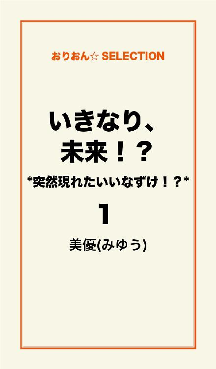
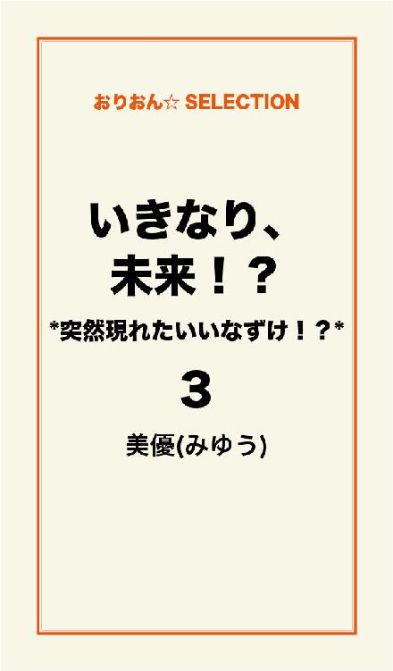

🏠
日
月
縦書き／横書き


| いきなり、未来！？ *突然現れたいいなずけ！？* 完全版 | |
| 美優(みゆう) | |
この本は横書きでレイアウトされています。
また、ご覧になる機種により、表示の差が認められることがあります。
目次
◆いきなり、未来！？
*突然現れたいいなずけ！？* １
◆いきなり、未来！？
*突然現れたいいなずけ！？* ２
◆いきなり、未来！？
*突然現れたいいなずけ！？* ３
◆いきなり、未来！？
*突然現れたいいなずけ！？* ４

第一章 大嫌い！！！ 絶対好きになんてならない！
2人の出逢い
「愛莉」
パパに突然呼ばれて、
見ていたテレビから、視線をパパの方へと移す。
「愛莉、今から大事な話をするからね。良く聞くんだよ？」
パパの真剣な顔に、私もなぜか緊張が走る。
「あのな、パパはね、お仕事でニューヨークに行かなくてはいけなくなったんだ」
「ニューヨーク......？」
「でね、愛莉も連れて行きたいんだが......」
パパの言葉に頭が真っ白になる。
ニューヨークに行くって何？
じゃあ、学校はどうなるの？
ちーちゃんと離れなくちゃいけないの？
悠ちゃんとは？
「愛莉？」
パパに呼ばれて我に返る。
「パパ......私は......」
「うん、わかってるよ。愛莉には愛莉の生活がある。友達と離れるのは辛いだろうし、ニューヨークなんて不安だろうしね、無理に連れて行くつもりはないよ。言葉の問題もあるし、一緒に行こうなんて言ったら困らせるのはわかってる」
「パパ......」
パパは、いつも私の事を第一に考えてくれる。
ママは、私が小学2年生の時に、病気で亡くなった。
それから、男手1つで私を育ててくれたパパ。
いつだって、私の事を想って、
いつだって、たくさんの愛情を注いでくれたの。
「愛莉、ちゃんと聞いてるか？」
「え？ あ、うん」
「なら、いいな？ 彼は私のお世話になった方の息子さんでね、良く知っているがとっても真面目で好青年なんだよ。彼だったら、愛莉を任せても安心だと私は考えているんだ」
へ？
彼？
任せる？
何それ？？？
「私がニューヨークへ行ってる間、孝政くんの所でお世話になりなさい！」
はい？
だから、誰それ！？
私、川瀬愛莉（かわせあいり）
高校1年生。
ニューヨークへ長期出張となったパパの言い付けで、
この夏から、パパの知り合いの人の家にお世話になる事になりました。
日本に残れるから、友達や好きな人とも離れなくて済む事になったけど、
知らない人と同居するってのは、やっぱりどっか不安だなぁ......。
「愛莉、準備出来たか？」
そう言って、部屋のドアをノックするパパ。
「あ、うん」
ドアを開けると、パパが荷物を持ってくれて、
1階のリビングに降りる。
この家ともしばらくのお別れかぁ......。
しんみりと家の中を見回してると、
「愛莉行くぞ！」
トランクに荷物を積んだパパが、
外から私を呼ぶ。
私は返事をして慌てて外へ出る。
外はとっても暑くて、太陽が容赦なく照りつけていた。
そして、パパの呼んだタクシーに乗り込むと、
中はひんやりと冷房が効いていて心地よかった。
「そう遠くないからな」
そう言って私の頭をポンポンと撫でるとパパは笑った。
パパともしばらく会えないんだ......と思ったら、
急にとっても寂しくなってしまって、軽く微笑み返すしか出来なかった。
「愛莉、着いたぞ！」
そう言われて、タクシーを降りる。
大きなお家......。
立派なお家の外観に唖然とする。
「おい、愛莉、ボーッとしてないで行くぞ！」
荷物を持ったパパに声を掛けらて、
私は慌ててパパの後をついていく。
ピンポーン
「はい」
インターホンから男の人の声がする。
「あ、川瀬ですが......」
そうパパが答えると、
「今開けます！ ちょっとお待ち下さい！」
と声が聞こえてきた。
ガチャリと開いたドアから、
現れた人......。
それはとても若い男の人だった。
この人は誰だろう？
こんな大きなお家だし、
預かってくれる方のご家族かしら？
そんな事を考えていると、
パパがその男性に向かって笑顔で挨拶をした。
「いや～。孝政くん！ 今回はいろいろ無理言ってすまなかったね！」
「いえ」
笑顔で返事をしてるその人。
え？
今......パパ、彼を『孝政くん』って呼んだ？？？
「ええぇぇぇっ！！？？」
「愛莉？」
パパも、その彼も、
不思議そうな顔で、声をあげて驚いてる私の事を見てる。
「......えっ......あの......」
「どうしたんだ？ 愛莉？」
「だって......パパ......」
パパはまだ不思議そうな顔。
「パパ......私を預かってくれる孝政さんって......人は......」
「ん？ どうしたんだ？ 彼が孝政くんだよ！ 尾上孝政（おのうえたかまさ）くんだ」
パパは満面の笑みでそう答える。
パパが留守の間、私を預かってくれる人の話は聞いていた。
尾上孝政さんと言って、
パパが昔お世話になった上司さんの息子さんで、
学校の先生をしていて、とっても真面目で信頼できる方だと......。
パパも彼を良く知っているからこそ、
彼なら、娘である私を預けられると太鼓判を押していたんだよね？
でもでも......
目の前にいるこの人は......？
「何をそんなに驚いているんだ？」
パパはまた不思議そうに言うけど......
パパは......なぜにそんなに冷静なの？
なぜ彼なら大丈夫って太鼓判押してるの？
パパがあんなに安心して任せられるって言うから、
私はてっきり......厳格な教師さんで、
立派なおじさまなんだと思ってたんだよぉ！？
でも......目の前にいる彼は......
本当に教師ですか！？って聞きたくなる程の容姿・若さ。
こんな若い男に、16歳になろうという年頃の娘を預けて、
なんでパパはそんな冷静に笑っていられるの！！？？
「おじさん、愛莉ちゃんが戸惑うのも無理はないですよ」
そう穏やかにパパに言って、笑う彼。
そして、私の傍へ寄って来て、
「愛莉ちゃんはもっと年上の人に預けられると思ったんだよね？」
そう言って、私に笑いかけて、頭をポンポンと撫でてから、
またパパの方に向き直って話し出す。
「おじさんより、愛莉ちゃんとの方が歳が近いですからね、僕は......」
「たしかにそうだな」
パパは頭を掻きながら、笑ってたけど......
私は、2人の会話が耳に入ってなかった。
だって......私に向けてくれた笑顔は、
驚く程、綺麗で......カッコ良かったから......。
「さぁ、暑いですから中に入って下さい！」
尾上さんに勧められて、
家の中へと足を進める私とパパ。
リビングへ通されて、
ソファへと促されるまま腰を下ろす。
「愛莉ちゃんはオレンジジュースでいいかな？」
「あ、はい！」
慌てて返事をすると、
尾上さんはキッチンへと向かう。
私はなんだか落ち着かなかった。
この広い家で......あの人と一緒に生活をするなんて......。
「なんだ、緊張してるのか？」
そう笑うパパは、全然緊張感がない。
「ねぇ......パパ。無理だよ......あんな若い男の人と......」
そう小声で言うと、パパも小声で、
「大丈夫だよ！」と言った。
何を根拠に大丈夫なのかって、
ちょっとのんきなパパに苛立った。
「どうぞ」
コトッと置かれたオレンジジュース。
私はペコッとお辞儀をする。
「いや、本当にいろいろ無理言ってすまなかったね」
「いえ、おじさんには父が亡くなってからお世話になってますし、それに、愛莉ちゃんともお会いしたいと思っていたので......」
そう言って、私の方を見て優しく笑う尾上さん。
「そうだね、将来的に考えても早いうちに知り合いになっておいた方がいいしね」
尾上さんの言葉にパパがそう答えるけど、
私はそのパパの言葉に何か引っかかった。
将来的？
疑問を感じたけど、
パパと尾上さんの会話に割って入る事は出来なくて、
すぐにパパは慌ただしく、飛行機の時間だからと席を立った。
パパが行ってしまうと思ったら、
急に不安になって、心細くなる。
玄関まで見送った私の頭をポンポンと撫でて、
パパは笑顔で、言った。
「孝政くんの言う事を良く聞いていい子にしてるんだよ？」
私は涙目でコクンと頷くしか出来なかった。
「孝政くん、愛莉の事、宜しく頼むよ！」
そうパパがもう一度頭を下げると、
「任せて下さい！」と尾上さんも頭を下げた。
そうして、パパは私と尾上さんに手を振って旅立ってしまった。
未来の運命（さだめ）！？ ＊愛莉side＊
バタンと扉が閉まって、
急に不安になる。
「愛莉ちゃん？」
尾上さんが声をかけてくる。
それだけでビクついてしまう。
「大丈夫だよ、取って食おうってわけじゃないんだし！」
そう言って笑った尾上さんは、
玄関先に置いてあった私の荷物をひょいと持ち上げ、
「部屋、案内するから」と言って、階段の方へと歩いて行った。
私は慌てて、彼の背中を追いかけた。
ガチャッ。
ドアが開けられて、
中に通される。
「ここが愛莉ちゃんの部屋ね！」
そう笑顔を向けてくれる尾上さん。
「あ、ありがとうございます！」
「自分の家だと思って、好きに家の中を使ってもらっていいから！」
「あ、はい。お世話になります！」
そう頭を下げると、
「うん、よろしくね！」
そう言って、尾上さんが手を差し出してきた。
握手を求められて、素直に応じて彼の手を握る。
ギュッと結ばれた手のひらと手のひら。
大きくて、ごつごつしたその手に男の人を感じる。
そして、すぐに離されると思った手のひらは、
なかなか解放されない......。
不思議に思って、尾上さんを見上げると、
尾上さんは、ニヤリと笑って、
私と繋いだ手をグイッと自分の方に引き寄せた。
私は、バランスを崩して尾上さんの胸へ顔をぶつけてしまう。
抱き締められる形になって、驚いて名前を呼ぶ。
「尾上さん！！！」
「違う。孝政！」
そう頭の上から低い声が降ってくる。
「！？」
「俺の事は、孝政って呼ぶこと！」
俺？？？
さっきパパの前では僕とか言ってなかった？
「聞いてる？ 愛莉？」
そう呼んで私の顔を覗き込む彼。
私は驚きで言葉も出なくて、口をパクパクしてると、
尾上さんは、またニヤッと笑って言った。
「いい反応するな～。愛莉は！」
そう言って、私の頬にキスをした！！？？
私はもう固まってしまって、
思考回路は停止してしまう。
「呼んでごらん......孝政って！」
そう言われても、呼べないでいると、
「呼べないなら、チューするよ？」
そう言って、顔を近づけてくる。
「きゃっ......」
顔をそむける私。
「どうする？ 孝政って呼ぶ？ それともチューしたい？」
何この人！？
さっきの態度と大違い！！！
私が答えられずにいると、
「はい、時間切れ！ チューね！」
そう言って、グッと私の肩に置いた手に力を入れて、
顔を急接近させてくる。
嫌！ 嫌っ！！！
キスなんて絶対嫌で、
私は、大声で叫ぶ。
「孝政さん！！！」
ピタリと止まる彼の動き。
助かった？
そう思って、薄目を開けて彼を見ると、
彼はなんだか不服そうな顔をして、言った。
「んーダメ！ 孝政！ さん付け禁止！ はい、もう1回！」
「でもぉ......」
「でもも何もない！ 呼んで？」
「目上の人......呼び捨てなんて......無理ですぅ......」
「ダメ！ 目上ったって、将来夫婦になるんだから呼び捨てのが自然だろ？」
彼の言葉に......
一瞬、思考が停止して、
そして、大きな絶叫が飛び出た！
「えええぇぇぇ！！？？」
「うっさいな......お前......。何も今さらそんな驚くことでも......」
そう言いながら、私の顔を見た彼は一瞬言葉を失った。
そう私が目を真丸にして、顔面蒼白で驚いていたから......。
「あれ......？ お前......まさか知らなかったの？」
彼の言葉に、ブンブンと首を縦に振る。
「あちゃ......おじさん話してないのかよ......マジかよ......」
そう言って、彼はちょっと困ったような顔をして、
その後、ゆっくりと口を開いた。
「あのな、俺の父さんとお前のお父さんは昔からの知り合いでな、お前が生まれた時に、俺の父さんが大きくなったら愛莉ちゃんを、うちの息子の嫁にするぞって言ったんだ。その時から俺らの未来は決められてたんだよ！」
「息子......？」
「そう、俺ね！」
そう言って自分の事を指さす。
「いいなずけ......ってことですか？」
整理が上手くつかない頭で考えて、
出てきた答えを彼にぶつけて聞いてみる。
「そう、正解！」
そう言って笑った彼。
えぇ？
親同士が勝手に決めた結婚相手が居た？
今どきそんなのってあり？
しかも、パパもこの人も......
それを守ろうとしてるの？
嫌！
絶対嫌......
そう思ったら、もう涙が溢れてた。
私が泣いてる事に気付いた尾上さん。
「はっ！？ えぇ......おい......」
とっても慌ててた様子で、私の顔を覗き込む。
私はそんな尾上さんをキッと睨みつける。
「絶対、絶対嫌ですから！！！」
私はそう言い放つと、
バッグだけ握りしめて、家を飛び出した。
「おいっ！」
尾上さんの声が後ろから聞こえたけど、
私が止まる事も、振り返ることもなかった。
「ちょっと......泣きやんでよー。愛莉......」
私の前で困った風に声を出してるのは、
親友のちーちゃん。
杉山千尋（すぎやまちひろ）
私の小学校からの仲良しの親友。
ここはちーちゃんの部屋。
私は、尾上さんの家を飛び出して、
ちーちゃんに連絡をして、ここへ来た。
で、さっきから泣いてる私に、
ちーちゃんも困り果てている......という状況です。
「だってぇ......結婚って......いいなずけ......とか......。婚約者なんて......そんな勝手に......私......困るもん......」
泣きじゃくる私に、ちーちゃんは溜息をつく。
「はぁ......そりゃ愛莉の気持ちわかるけど、泣いてたってしょうがないでしょ......？ 親同士が勝手に決めたとは言え、当人同士がその気にならなければ無理なんだし、それにその......尾上さんだっけ？ その人のお父さんって人は亡くなられてるんでしょ？ だったら、そんなに心配しなくたって大丈夫だと思うよぉ？ 愛莉のお父さんは、愛莉の幸せが大事に決まってるしさ！」
「そうかなぁ？」
そう聞く私に、ちーちゃんは大きく頷いて笑った。
「それに、愛莉のお父さん悠太先輩の事お気に入りじゃん？ 愛莉が好きなのが悠太先輩だって知ったら、逆に喜ぶかもよ？」
そう言われて......
悠ちゃんの顔が浮かんで、頬が熱くなる。
そんな私の反応を見て、
「かわいいな～」って言いながら、
私の頬をつんつんと突くちーちゃん。
ちょっと落ち着いた私に、ちーちゃんはゆっくりと言った。
「とにかくさ、今の愛莉はその尾上さんって人のお世話になるしかないんだし、結婚する意志はない事だけちゃんと話してさ、そこに住まわせてもらいなよ」
「うん......」
うかない私の返事に、ちーちゃんは軽く溜息をついて、
「お父さんが帰ってくるまでの我慢なんだからさ！」
そう言って、私の肩をポンと叩いた。
たしかに、ちーちゃんの言うとおりなんだ。
生活費も、パパが尾上さんに託しちゃた今、
私が自分の家に戻ったところで、生活なんて出来やしない。
それにそんなことしたら、当然パパの耳にも入るわけで、
そしたらパパの事だもん......お仕事どころじゃなくなっちゃう。
大事なお仕事をしに行ってるパパに迷惑はかけられない。
結局......私の帰る場所は......
今はあそこしかないんだ......。
そう思いながら歩いていると、
目の前にはあの大きな家。
尾上という表札。
はぁ......帰ってきちゃった......。
ピンポーン
「はい！？」
ちょっと慌てたような声がする。
「あの......」
そう言うと、インターホンがガチャンと切れて、
代わりに勢いよく、ドアが開いた。
そこには、慌てた様子の尾上さんが立っていた。
私は、気まずくて目を逸らす。
すると、ドンっという衝撃が体に走る。
温かい何かに包まれた感触。
「っ......良かったぁ......マジで......」
耳元で聞こえる声。
え......？
私......抱き締められてる？
力強くなる腕の力。
くっ......苦しい......
「良かった......マジで心配したんだぞ！」
そう言う......声はなんだかどこか切なくて、
その声に胸がギュッと締め付けられる。
「ごめんなさい......」
自然と私の口から、言葉が零れた。
腕の中から解放されて、
家の中に入ると、尾上さんが私に声をかける。
「愛莉、今日は暑かっただろう。シャワーでも浴びてこい！」
ドキンとする。
とたんに顔が熱くなる。
そんな私に気付いた尾上さんが言う。
「バカっ！ 変な意味じゃないっつーの！」
「別にそんな事考えてません！」
私は恥ずかしくなって、自分の部屋に着替えを取りに行って、
それからすぐにバスルームへと向かった。
はぁ......変な事になっちゃったなぁ......。
あの人と......1つ屋根の下って......
ちゃんとやってけるのかな？
大丈夫かな？
パパは信頼してるみたいだったけど、
いきなり抱きついてきたり、
キス迫ってきたり......
無事で居られるとは思えない......。
とにかく結婚なんてする気がない事をちゃんと伝えなくちゃ！！！
そんな事を考えてると、
外から声がして、すりガラスのドアに人影が見える。
「おい、バスタオル出したから置いとくぞ！」
「きゃぁ！！！」
私が驚いて声を上げると、
「バーカ！ 覗くわけないだろう！」
そう言って脱衣所から出て行った。
バスルームから出て、
リビングに向かうと、
なんだか、とってもいい匂いがした。
ん～バターのいい香り！
「おっ、愛莉！ ベストタイミングだな！ 座れ！」
そう言って、尾上さんがテーブルを指さす。
そこには、サラダとスープと、
スプーンやフォークが並べられてた。
「ほい、出来上がり！ 夕飯にしよう！」
そう言って、目の前に置かれたのは、
ふわふわとして、温かい湯気の立ったオムライス。
たまごはふわふわでプルンとしてて、
デミグラスソースがたっぷりかかってる。
「わぁ～。美味しそう！」
オムライスが大好きな私は、
ついつい歓声をあげてしまう。
「ほら、温かいうちに食べろ！」
そう言われて、スプーンを持って、
1口、口へとそのオムライスを運ぶ。
パクッ。
ふわぁ～と広がるバターの香り。
「わぁ......美味しい......」
自然と言葉となる。
そんな私の様子を見て、尾上さんは満足そうに笑うと、
自分もオムライスを1口食べた。
「ん。上出来！」
「お料理......上手なんですね！」
「そうか？ 1人暮らしが長いと自然とこうなるよ」
「この家にずっと......お1人なんですか？」
そう聞くと、尾上さんは頷いて少し寂しそうな笑顔を見せた。
「父さんが死んでからは、ずっと1人だよ。もう......5年になるかな」
「......ごめんなさい......私」
「あ、そんな暗い顔すんな！ 食べろ！ オムライス好きだろ？」
そう言われて、ビックリする。
「なんで......知ってるんですか？ オムライス好きって......」
「え？ いや......あ、おじさんに聞いたんだ！」
あ、そっかパパが言ったんだ。
「そうですか」
そう言って、また食べ始める。
「それよりさ......愛莉、お前敬語やめろ！」
そう言われて、複雑な顔になる。
「目上の人ですから......」
そう答えると、尾上さんは深めの溜息をついた。
「あのな......さっきも言ったけど、俺はお前のいいなずけなんだよ？ わかるか？ 婚約者なの！ いずれ結婚する身で敬語とか遠慮とかいらないんだよ」
そう言われて、私は気持ちをちゃんと伝えようと、
ゆっくり言葉にしてみる。
「その事なんですけど......いきなりいいなずけだ、婚約者だって言われても困ります......。親同士が勝手に決めた事かもしれませんけど......。私は......結婚とか考えられません......」
「.........」
「それに......私......もう心に決めた人がいるんです......」
か細い声で......それを伝える。
「お前......彼氏いるんだ？」
そう言われて、悠ちゃんの顔が浮かんだけど......
でも彼氏ってわけでもないから、
顔を横にブンブンと振った。
「彼氏じゃないの？ じゃあ、片想いってやつ？」
尾上さんの言葉......
片想いって言葉に......妙に切なくなる......。
でも無言は、肯定の意味となる......。
「だったら......関係ない」
尾上さんの言葉に驚いて顔を見上げる。
目と目が合う。
「彼氏がいるとかなら諦めもつくけどさ、片想いなら俺は引かない！」
なぜか真剣な尾上さんの瞳。
「でも！！！」
私の言葉を遮るように、
尾上さんは私を見て、ニヤリとしながら言ったんだ。
「愛莉？ お前は、きっと俺を好きになるよ！」
何......？
何よ、その自信に満ちた表情......。
こんな自意識過剰な人......絶対好きになるはずがないもん！！！
こんな人、好きになんて絶対ならない！
私には......悠ちゃんがいるもん......。
「あなたなんか、絶対好きになんてならない！！！」
そう言って、私は逃げるように自分の部屋に戻った。
部屋のドアをバタンと閉めて、
真っ暗な部屋に入っても、
まだ胸の中はドキドキして落ち着かなかった......。
何よ、あの目......。
何よ、笑っちゃって......。
ちょっとカッコいいからって......
自意識過剰だよ！
あんな人が......悠ちゃんに敵うわけないもん！
絶対......恋になんて落ちない！！！
私は......ドキドキ高鳴る胸の鼓動を抑えるために、携帯を開く。
暗い部屋で、明るく光るディスプレイが少し眩しくて、目を細める。
目が慣れてきたところで、開かれた壁紙を見つめる。
そこには、悠ちゃんと私が笑顔で写ってる写真があった。
悠ちゃんの笑顔を見て......
キュンと胸が締め付けられる。
そう......私が好きなのは......悠ちゃんだけだもん。
携帯の壁紙になってるツーショット。
私がふざけておねだりして撮ってもらったもの。
私の横に笑顔で写るのは、
安部悠太（あべゆうた）
私の2つ年上で、
隣の家の幼馴染という存在。
そして......私がずっとずっと片想いをしてる相手。
近すぎる距離が......
告白する勇気を与えてくれず、
ずっとずっと、密かに恋心を寄せているの。
私は、ずっとずっと悠ちゃんの事が好きだった。
その気持ちは、この先もずっとずっと変わる事はないもの。
揺るがない想いなんだから......。
幼き頃からの運命（さだめ） ＊孝政side＊
「っく......」
なんだか、無性に腹が立って、
近くにあったゴミ箱を蹴った。
「あなたなんか、絶対好きになんてならない！！！」
愛莉の言葉が胸に突き刺さって......苦しかった。
もっと早くお前の前に現れてたら......
お前の心は誰かに奪われる事はなかったのか？
愛莉......
お前の目に......俺が映る事はないのか？
「愛莉？ お前は、きっと俺を好きになるよ！」
俺は確かにそう言ったけど......
でも本当はこれっぽっちも自信なんてない。
だって、今のお前は......
あの頃のお前とは違うんだから......。
お互いが別々に歩んできた時間が......
俺らを引き離してしまうのかな？
川瀬のおじさんは、
俺の父さんに昔世話になったとかで......
俺が小さい頃から交流があった。
父さんが亡くなってしまってからも、
何かと俺の心配をして面倒を見てきてくれていた。
だから、その川瀬のおじさんから、
ニューヨーク行きの話をされて、
愛莉の事を相談された時、
俺は、恩返しが出来ると思った。
そして、それと同時に愛莉に会えるのが楽しみだった。
おじさんの俺への信頼は厚かったし、
おじさんの中では、昔した父さんとの約束の存在も大きかったんだと思う。
だからこそ、俺に愛莉を託してくれたんだって思う。
俺は小さい頃から、父さんから愛莉ちゃんは可愛いんだぞって聞かされてて、
いつかお前は愛莉ちゃんと守っていけるようになって、
愛莉ちゃんと一緒に人生を歩んで行くんだぞって言われていた。
だからか、俺は自然とそれを受け入れてたし、
自分には守らないといけない子がいるんだと、
幼いながらにそう思っていたんだ。
そして......あの日......
俺は運命の子と出逢ったんだ。
俺が小学校6年の時だった。
突然、母さんが死んだんだ。
それは不慮の事故だった。
俺は母さんっ子で、突然の母さんとの別れにショックを受けて、
まだ子供だった俺は、耐えがたい悲しみに大泣きしてたんだ。
そこに、小さな女の子がやってきて、
その子は、とっても小さなその手で、
俺の頭をポンポンと撫でて、
「なかないで......」と言った。
なぜかその女の子も今にも泣きそうな顔していた。
一瞬、驚いて涙が止まった俺の手を、
小さなその手でギュッと掴んで、
「ないちゃめっよ」って小さく笑ったんだ。
「あい......おそばにいるから」
「.........」
「なかなかったらね、あいがずっとそばにいてあげる！ あい、おにいたんのおよめたんになってあげる！」
そう言って、ギュゥって手を握って、
にっこり俺に笑顔を向けた。
その顔は、お人形さんみたいで......すっごく可愛かった。
その子こそが......愛莉だった。
葬儀に参列しに来た川瀬のおじさんが連れてきた愛莉だったんだ。
好きとか恋とか、
そんな事はよくわからなかったけど、
俺の中で、愛莉の存在はすごく大きなものになって、
心の支えになったと同時に、
真剣に愛莉との未来を誓ったんだ。
俺が守らないといけない子なんだって......。
親同士の勝手な理想の押し付けだったのかもしれない。
愛莉が言った、「およめたんになってあげる！」って言葉は、
単なる子供のたわごとだったのかもしれない。
でも俺にとっては、真剣な約束で......
俺にとっては、そうなりたいと願う未来だったんだ。
次に、愛莉に会ったのは、
愛莉のお母さんが、病気で亡くなってしまって、
父さんに連れられて、葬儀へ参列した時だった。
俺と同じように幼くして母親を亡くした愛莉。
小学校2年生の愛莉には、
やぱりその別れの悲しみは大きくて、
葬儀中ずっと泣いていた愛莉。
俺は、父さんに頼まれて、
ずっと泣いてる愛莉の傍に居た。
そして、愛莉の手をずっとつないで、
泣いてる愛莉の頭を撫でてあげていた。
幼い愛莉に、恋愛感情があったかと聞かれれば、
15の俺には、それはないとはっきりと答えられたが、
でも愛莉を愛おしく思う気持ちはあって、
小さなその手を離したくないと思ったし、
この子をずっと見守っていきたいと思っていた。
そして、今日......。
川瀬のおじさんが連れてきた愛莉を見て、
本当に息が止まるくらいビックリしたんだ。
おじさんの隣に不安そうに立っていたあの子は、
多少の幼さは残るものの、
俺の知っている愛莉ではなく、
もう立派な女なんだと実感させられる姿になっていた。
とたんに早くなる鼓動を抑えて、
平静を装うのが大変だったくらいだ。
急激に惹かれていくのがわかって、
自分でもその感情に少し戸惑ったが、
でもそれと同時に、そう思える相手が、
俺の未来を共にする相手で良かったと思ったんだ。
なのに......いいなずけという事実を知って、
戸惑った迷惑そうな困った顔をする愛莉。
愛莉の口から、
「私......もう心に決めた人がいるんです......」
そう言われて、頭を鈍器で殴られたような衝撃だった。
彼氏ではないようだったけど......
それでも俺は相当ショックで......
どうしたらいいのかわからなくなってた。
俺は......ずっと愛莉が俺の相手なんだって信じてきた......。
幼くてよくわからなかったけど......
愛莉の口から他の男への想いを聞かされ、
俺はどうしようもない嫉妬がこみ上げてきて、
今さらになってずっと愛莉が好きだったんだと気付かされた。
俺は......諦められるのか？
大好きな人 ──届かない想い── ＊愛莉side＊
部屋に薄日が差していて、目が覚める。
あのまま......寝ちゃったんだ......。
そんな風に考えながら、
近くに転がっていた携帯に目をやると、
ランプがチカチカと光ってるのに気付く。
メール？
それとも電話？
そう思いながら、携帯を開いて見ると、
着信マークと、メールの受信マークが表示されていた。
慌てて確認すると、その相手は......
両方とも、悠ちゃんからで、
私は慌てて、メールの方を開く。
────
To 愛莉
From 悠ちゃん
電話したけど、まだ寝てる？
杏と一緒にカラオケ行くから、
愛も起きたら来いよ！
────
私は嬉しくなって急いで返信をする。
────
To 悠ちゃん
From 愛莉
ごめんね、今起きたの！
これから向かうけど、
いつものとこ？
────
────
To 愛莉
From 悠ちゃん
２０７号室！
潤一に愛来るって言っとくから、
そのまま部屋に直で来ていいよ！
────
すぐに悠ちゃんから返信が来て、
私は了解と返事を返して大慌てで準備をする。
ちょっと可愛くおしゃれをし
「行ってきます......」
小さな声で挨拶して、
ミュールを履いていると、
後ろから声をかけられる。
「夏だから日は長いけど......あまり遅くなるな？ 遅くなるようなら電話して？ 迎えに行くから......」
そう言われて、コクンと頷いて家から逃げるように飛び出した。
なんだか......昨日の今日で......
とっても居心地が悪くて......
尾上さんの顔は見れなかった。
少しだけ気まずい気持ちを抱えたまま、
私は、悠ちゃんの待つ、
カラオケボックスへと走って向かったんだ。
カラオケに着くと、受付の潤ちゃんに声をかけられる。
「おぉー愛莉！ ２０７号室だぞ！」
「うん、ありがとぉ！」
ここでバイト中の潤ちゃんこと、本多潤一（ほんだじゅんいち）は、
私と同じ年で、悠ちゃんと同じバレー部。
私とは中学からの付き合い。
潤ちゃんは、悠ちゃんに憧れてバレー始めたんだよね。
潤ちゃんに軽く挨拶して、
それから私は、ウキウキ気分で２０７号室に入る。
中に入ると、
「おぉ～。愛莉！」と、腕を広げて歓迎ポーズ。
この明るくて元気な女の子は、
大森杏（おおもりあん）ちゃん。
杏ちゃんは、悠ちゃんの同級生で、
中学からバレー部のマネージャーをしてる。
で、私も中高と杏ちゃんと一緒にマネージャーをしてるので、
年上だけど、とってもとっても仲良しな関係なの。
「よっ！ やっと来たな！」
そう言って笑顔を向けてくれるもう1人の人。
安部悠太。
そう、彼が私の大好きな人。
悠ちゃん。
「ほれ、お前もさっそく曲入れろー！」
そう言って、くしゃくしゃっと頭を撫でてくれる。
そんななにげない行動にも、
私の心臓はうるさく騒ぎ出すんだ。
悠ちゃんの笑顔が好き。
悠ちゃんの大きな手が好き。
悠ちゃんの綺麗な瞳が好き。
悠ちゃんを取り巻く全てのものが、
大好きでしかたなくって、ドキドキと胸が高鳴るんだぁ。
悠ちゃんの横顔や、笑顔、
甘い歌声にドキドキしながらも、
杏ちゃんともおしゃべりしたり、
いっぱい笑って、思いっきり楽しんだ。
そして、楽しい時間はあっという間に過ぎて行ったんだ。
「悠太先輩！ そろそろ時間っす！」
そう言って部屋に入ってきた潤ちゃんによって、
今日はお開きとなって、お店の前で解散となった。
「じゃあ、私、彼氏んち寄るから！」
そう笑顔で帰っていく杏ちゃん。
杏ちゃんは1つ年上の彼氏が最近出来て、
とっても幸せそうなんだんだ。
そんな杏ちゃんを笑顔で見送って、
私まで嬉しい気持ちになって笑ってしまう。
「何ニタニタしてんだ？」
そう笑顔で聞いてくる悠ちゃん。
「ん？ だって杏ちゃん幸せそうだから！
なんかこっちまで嬉しくなっちゃって！」
そう答えると、悠ちゃんは笑顔で、
「そうだな！」って言って私の頭を撫でた。
「あ、そういえば、お前昨日からおじさんニューヨークだっけ？」
「うん、そうなの。だからしばらくは......お父さんの知り合いの人の家でお世話になるの......」
「じゃあ、しばらく愛とはお隣さんじゃないのか......」
そう言われて、なんか急に寂しくなる。
「そんな寂しそうな顔すんなよ。いつだって会えるだろう？」
私の表情の変化にすぐに気付いた悠ちゃんは、
私の目線までかがんで、覗き込むように優しい笑顔を見せてくれた。
悠ちゃんと会えないのとか、
お隣さんじゃないってのも寂しかったけど、
何より......不安だったんだ......。
尾上さんとのこれからの生活が......。
急に、いいなずけだとか、婚約者だとか言われても......
そんなの理解出来ないし......。
何よりあの人の傍に居なくちゃいけない状況が、
とってもとっても不安で怖かったんだ。
あの自信過剰な態度とか......
初めてあった日にキスするとか言い出したりとか......。
あんな人と、しばらくとは2人きりであの家に住むんだって思ったら......
やっぱりなんか怖くて......どうしようもなく不安だったの。
「愛？ お父さんの知り合いっていう一緒に住む人......大丈夫か？ いい人なのか？」
元気のない表情の私を心配して、悠ちゃんが聞いてくれる。
言いたくなる......。
若い男の人で怖いとか......
でも......知られたくない......。
そんな男の人と2人で住む事とか......。
何より、親が決めたといえ......
その彼といいなずけだなんて事を......。
絶対、悠ちゃんに知られたくない......。
私は、わざと明るく返事をした。
「大丈夫だよ！ とってもいい人なの！」
「なら、良かった！ やっぱり大事な愛だから、心配だからな！」
そう笑顔で言われて、
心臓がドキンと高鳴る。
"大事な愛"
そんな風に大好きな悠ちゃんに言われて、
ドキドキしない訳がない......。
「悠ちゃん......」
私がドキドキして、
熱っぽい目で悠ちゃんを見るけど、
悠ちゃんはそれに気付かない。
「愛、飯でも一緒に食ってくか？ 今日さ、うち誰もいないんだ！」
「うん......」
私が小さく頷くと、悠ちゃんは嬉しそうに笑って、
「じゃあ、決まりだー！ 何でも好きなもんおごっちゃるぞー！」
そう言って、私の頭を少し乱暴にぐちゃぐちゃって撫でた。
「なーんだ、愛、お前またオムライスかよ？ 好きだなぁー」
ファミレスの向かいの席で、
私に笑いかけてる悠ちゃん。
「えへへーだって大好きなんだもん！ ふわふわの卵にチキンライスにデミに......最高なんだから！」
「お子ちゃまだなー、愛は！」
「もーう！ お子ちゃまじゃないもーん！」
そう言って、プクと頬を膨らませると、
その頬を人差し指と親指で挟んで、
ふぅーと空気を抜きながら、悠ちゃんは、
「ごめん、ごめん！」って笑った。
「もう愛も16歳だもんなー。もう子供じゃないよな？」
急にそう言って真顔になった悠ちゃん。
「16歳、いっちょまえに恋愛とかもするんだもんな......」
真っ直ぐ見つめられて、
心臓はドキドキと煩く鼓動を刻む。
「愛は......好きな奴とかいんの？」
「え......？」
「あ、その顔......さてはもう居るなー！？」
そう言って、いたずらっ子みたいな顔で笑う悠ちゃん。
「え......いや......あの......」
頬が熱くなってくのがわかる。
言いたい。
言いたい。
悠ちゃんが好きなんだって......
言いたい......。
「誰だよ？ 好きな奴？ 俺の知ってるやつ？」
優ちゃんが無邪気な顔して、
私の顔を覗き込んでくる。
そんな仕草にもこんなにドキッとするのに......
「えっと......」
「もしかして......潤一かぁ！？」
「！！？？」
悠ちゃんの言葉に頭が真っ白になる。
「お前ら仲いいもんなー！」
そう言って無邪気に笑ってる悠ちゃん。
でも悠ちゃんの言葉が......
刃みたいに......私の胸に突き刺さる。
たしかに......私と潤ちゃんは仲がいいよ......。
でもそれは......悠ちゃんの事......
相談してるからなのに......。
潤ちゃんは応援してくれてるのに......。
泣きそうになった時、
明るい声の店員さんが、
温かいオムライスを運んで来てくれる。
「お待たせしましたー」
コトッと目の前に置かれるお皿。
ふわふわで美味しそうにプルンと揺れてるオムライス。
デミグラスソースがたっぷりかかってて......
なぜか......昨日の夜の事が蘇ってくる。
「ほら、冷めるから先食べろ？」
そう言われて、言葉なく小さく頷いて、
差し出されたスプーンを受け取って、
1口、パクンと口に入れる。
ふわぁっと広がるバターの香り。
でも......なんだろう......
いつも美味しいはずのファミレスのオムライスの味が、
とってもぼんやりして......美味しいとは思えなかったんだ。
オムライスを見つめて......
なぜか......
尾上さんの顔が浮かんだ。
「オムライス好きだろう？」
そう言って笑ってくれた笑顔を思い出して、
なんか......尾上さんのオムライスが食べたくなったんだ。
なんだか......この場から......
今すぐに離れたいって気持ちと、
尾上さんに会いたいって気持ちと......
心の中がグチャグチャになったんだ。
「どうした、愛？ 食欲ないか？」
「うん......ごめんね......私......帰る......」
私がそう言うと、悠ちゃんは慌てた。
「え！？ 大丈夫か？ ってか......俺が変な事言ったせいか？」
変な事......
私が......潤ちゃんを好きってやつ？
「ううん。別に悠ちゃんのせいじゃないよ。ちょっと......食欲なくなっちゃっただけ......。あ......でもね......私、潤ちゃんとは友達だから......。仲のいいだけだし、好きとかそんなんじゃないよ」
私は、笑顔を向けた。
上手く笑えてたかな？
悠ちゃんは、「そっか、間違いか！ 悪かったな！」
そう言っていつもみたいに笑ってくれたけど......
私の笑顔は......不自然じゃなかった？
「送るぞ？」
そう悠ちゃんは言ってくれたけど......
私は......1人になりたくて、
大丈夫って笑顔で答えて、
1人で、ファミレスを出たんだ。
ほとんど手をつけなかったオムライスと悠ちゃんを残して......
今日は......もう悠ちゃんと一緒に居たくなかった。
悠ちゃんの心が......
少し見えてしまったから......
余計に一緒に居るのが辛かったんだ。
無理に笑えるとも思えなくて......
1分でも1秒でも早く......
悠ちゃんの傍を離れたかったの......。
じゃないと......
悠ちゃんの気持ちが私にはないって......
そう実感して、心に沁み渡った涙が......
心の中から溢れて......
悠ちゃんの目の前で......
瞳から溢れ出てしまいそうだったから......。
1人で歩く帰り道......。
すれ違う人に......
涙を見られたくなくて......
めいっぱい下を見て歩いた。
そして......家が見えてきた時だった......
後から、誰かに大声で呼ばれたんだ。
「愛莉っ！！！」って......
そして......
振り返ったら......
彼がすごい勢いで走って来たんだ。
そして、あっという間に目の前にやってきたと思ったら、
もう私の視界は真っ暗で......
昨日と同じ......
すっぽりと抱きすくめられてたんだ。
「バカやろう！ 心配しただろう！！！」
怒られて、一瞬肩に力が入る。
「ごめん。でも......遅くなるなら......連絡してって言っただろ......？」
今度は穏やかな声。
私の髪をそっと撫でてくれる。
「無事で良かった......」
まだ乱れてる息。
「さ......探してくれてたんですか......？」
私がそう聞くと、そっと解放してくれて、
私の顔を覗き込んで、小さく頷いた尾上さん。
「心配だったんだ......何かあったのかと思って......」
そう言って、小さく笑った顔は......
ものすごく優しくて、ドキドキした。
「でも良かった......無事で！」
ポンポンと頭を撫でてくれて、
そして、その後、
「じゃあ、家帰ろう？」
そう言って、私の手をそっと握ってくれた。
そのまま、尾上さんに導かれるように、
私達は家へを帰って行ったんだ。
少し斜め後ろから見る尾上さんは、
背が高くて、広い背中で......
大人の男の人なんだなぁって......
緊張してドキドキした。
「ご飯は食べてきた？」
部屋に入ってそう聞かれて、
私が首を横に振ると、
「何食べたい？ 愛莉の好きなもの作ってやる！」
そう言って優しく笑った。
「......オムライス......」
そう私が言うと、
ちょっと不思議そうな顔をして、
でもすぐとびきりの笑顔で、
「了解、オムライスな！ ちょっと待っとけ！」
そう言って、キッチンへ消えて行ったんだ。
可愛い彼女とオムライス ＊孝政side＊
愛莉が、暗くなっても帰って来ないから、本気で参った。
心配で、心配で......
居てもたっても居られなくて、
当てもなく、俺は外に飛び出したんだ。
駅前や、近くの公園なんかも手当たり次第探した。
そうして、思い知らされた。
俺は、愛莉の事......
何にも知らないんだって......。
そう思い知らされて......
愛莉は、もしかしたら、
このまま帰って来ないんじゃないかって......
そんな風に不安になったんだ。
だから、家の近くまで戻ってきて、
1人ポツリと歩く愛莉の後姿を見つけた時、
俺は嬉しさと安著の気持ちで、
思いっきり、愛莉の名前を呼んだんだ。
俺の呼ぶ声に、振り返った愛莉は、
俺を見つけて、ビックリした顔になった。
でも俺には愛莉の気持ちを気遣う余裕なんてなくて、
気付いたら、この手で愛莉の事を力いっぱい抱きしめてたんだ。
「バカやろう！ 心配しただろう！！！」
俺がそう怒ると、
愛莉の方がビクンと揺れて、身体に力が入った。
しまったと思って慌てて優しく諭して、
愛莉の髪をそっと撫でる。
「無事で良かった......」
本心が、ポロっと口から飛び出す。
「さ......探してくれてたんですか......？」
愛莉がそう聞くから、
俺は愛莉をそっと離して、顔を覗き込んだ。
愛莉の顔は、どこか元気なく泣きそうに見えた。
「心配だったんだ......。何かあったのかと思って......」
安心させたくて、少し笑って見せると、
照れくさいのか、愛莉は少しだけ視線を外した。
「でも良かった......無事で！」
そう言って頭を撫でて、
「家帰ろう？」といって、
そっと愛莉の手を握ってみる。
振り払われるかと思ったその手は、
そのまま俺の手のひらの中で納まったままで、
その小さな可愛い手に、ドキドキと胸が高鳴る。
今まで......手を繋いだだけで、
こんなに胸が高鳴った事あったか？
自分でもビックリする。
俺がこんな風に、
1人の女の子を本気で心配したり、
胸を高鳴らせて、ドキドキしてるなんて。
「ご飯は食べてきた？」
俺がそう聞くと、
愛莉は、小さく横に首を振って、
好きなもの作ってやると言った俺の言葉に、
「......オムライス......」と小さく答えた。
昨日もオムライスを作ってやったのに......。
そんな風に一瞬よぎったけど、
ちょっと元気のなかった愛莉にとって、
1番好きなものはオムライスだからと納得して、
俺は笑顔で了承して、キッチンへと向かったんだ。
俺がオムライスを作ってる間
愛莉は何か落ち着かなそうに、
ソファに座って、テレビを見ていた。
暗い顔になったり、悲しそうに涙ぐんだり。
そして、時々、俺のいるキッチンの方へ視線を泳がせてたいた。
今日、愛莉に何かがあったのは、一目瞭然だった。
本当はものすごく気になったし、
泣きそうな顔を見たら、
また抱きしめたい衝動に駆られた。
でも、愛莉が話したいと思っていないならと......
俺はあえて、愛莉の態度に気付かないふりをしたんだ。
「愛莉！ 出来たぞぉ！ リクエストのオムライスだ！ たぶんな、昨日のより美味いはず！ 今日のは自信作だ！」
テーブルへオムライスを並べると、
愛莉が、ちょっと急いでやってきて、
目をキラキラと輝かせた。
「愛莉は、本当にオムライスが好きなんだなぁ！」
そう言って笑うと、少し照れたように俯いた愛莉。
「ほら、冷めちゃうから早く食べな？」
そう言って、スプーンを差し出すと、
小さく頷いた愛莉は、俺からスプーンを受け取って、
椅子にちょこんと座った。
そのしぐさの1つ、1つが可愛くて、
抱きしめたくなる。
沁み込んでくる暖かさ ＊愛莉side＊
「美味しい！」
自然と口からこぼれる言葉。
本当にとっても美味しかったから......
自然と出た言葉だった。
私がそう言うと、嬉しそうにニコッと笑った尾上さん。
「良かった！ 愛莉が美味しいって言ってくれて、そんな風に笑顔になってくれるのが、マジで嬉しいよ！」
優しい笑顔。
その笑顔を見ただけで、
なぜか胸がドキドキと高鳴る。
「少し、元気出たか？」
「え......？」
「いや......なんかちょっと元気ないかなぁって......そんな風に思ったから......」
尾上さんの言葉に、
トクンとまた高鳴る鼓動。
「あ、別に話せって言ってるんじゃないぞ？ ただ、俺のオムライスで、愛莉が笑ってくれたのが嬉しくて......」
尾上さんは......本当に嬉しそうに笑う。
何で......こんな顔して笑うんだろう。
さっきだって......ものすごい必死に探してくれてたみたいだし......
私は、不思議に思って、尾上さんの顔を見つめてしまう。
その視線に気付いた尾上さんは、
「何そんなに見つめちゃって......惚れちゃった？」
そう言って、ニヤッといじわるな笑顔を浮かべた。
「はい？ そんなわけないじゃないですか！？」
私は怒って、声を上げる。
「ははっ、本当に元気出たみたいで良かったよ！」
そう言って、またニコッと笑ったんだ。
優しいんだか意地悪なんだか......
わかんない人。
でも......私を元気付けようと......してくれたんだよね？
変なの。
変なの。
さっきから......
あの人の笑顔がちらついてる......。
チャプン。
顔の鼻まで湯船の中に沈めて、
理解不能な自分について悩む。
初対面......
ものすごくカッコいいって思った。
でも一緒に暮らすなんて無理って思った。
紳士的な態度から、
急変して、意地悪されて......
ニヤっと笑って、
自信満々に、「お前は、きっと俺を好きになるよ！」
そんな風に言い切ったあの人に、私はずいぶんと怒ってたのに......。
なのに......今思い出そうとすると......
あのオムライスを作って出してきてくれた時の優しい笑顔や、
私が食べてるのを見て、安心したような優しい眼差し。
そんなあの人の顔ばかりが思い浮かぶ。
尾上さんと......私は......
昨日会ったばっかりなのに......
何であんな顔するの......？
まるでものすごく大切な宝物を見るみたいに......
あんなに愛おしそうな顔をするの......？
尾上さんは......何で......あんな顔をするの？
いじわるな笑顔を見せてた尾上さんとは別人で......
なんかすごく調子狂っちゃうよ......。
私は、悶々と考えながら、
バスルームを出たんだ。
「あっ、上がったか！」
そう言って、キッチンから視線を向けてくれた尾上さん。
目がバッチリとあって、ドキンとなる。
私と目があった尾上さんは、
フッと真面目な顔つきになって、
そっと私の傍へ寄ってくる。
それだけで私の体は硬直して動けなくなる。
スッと尾上さんの手が、
私の方へと近づいて、
私の体はもっと強張ってしまう。
そして、それと同時にドキドキと心臓はうるさく騒ぎ出す。
ふわっと髪に触れた大きな優しい手。
「髪......」
穏やかに呟いた声。
緊張が走る。
「髪、ちゃんと乾かさないと、夏だからって風邪ひくぞ？ おいで？」
そう言って、私の手を引いて、
私をそっとソファに座らせると、
リビングを一旦出て、
すぐにドライヤーを持って戻ってくる。
そして、おもむろにスイッチを入れて、私の髪に触れる。
「っ！！？？」
ビクンと肩が揺れる。
それに気付いた尾上さんが、
私の顔を覗き込む。
綺麗な顔が......間近で......
さらにドキドキとする。
「だっ......大丈夫です！ 髪くらい自分で乾かせます！」
そう言って、ドライヤーに手を伸ばすと、
ひょいっとドライヤーを私から離してしまう。
「いいから！ 乾かしてあげるって！」
「いえ、結構です！」
「いや......俺にさせて......？ 俺、愛莉にしてあげたい事いっぱいあるから......」
フッと、寂しそうな表情になった尾上さん。
「尾上さん......？」
私がそう言うと、
「尾上さんじゃないって......孝政！ ねっ......孝政って呼んでよ......。好きになってなんて......言わないからさ......。せめて少しでいいから近づいて？」
そう言って、ちょっと切なそうな笑顔を見せた尾上さんは、
その後、何も言わずに、
私の髪をふわふわと優しく乾かしてくれたんだ。
それがなんだかとっても心地良くて、
気持ち良くて、うっとりしてしまうくらい幸せな気分にさせてくれたんだ。
「はい、完了！ ちゃんと乾いたよ！」
そう言って、ポンポンと撫でてくれた頭。
振り返って、尾上さんの顔を見ると、
ニコニコとまた優しく笑っていた。
「あ、ありがとうございます！」
「うん！」
軽く頷くと、尾上さんは何か思い出したみたいな顔をして、
それから、また嬉しそうに何かわくわくしたような顔をして、
私を見て、手まねきをした。
「？」
「愛莉、愛莉にね、プレゼントがあるんだ！」
そう言った時の顔は、
子供みたいに無邪気な笑顔で、
なぜだか、とってもかわいく見えた。
「じゃぁーん！ 即席だけど！」
そう言って見せてくれたのは、
ファミレスにあるみたいなパフェ！！！
「ソフトクリームはないから、普通にアイスと生クリームでね！」
「すごーい！ ファミレスみたい！ 可愛い！！！」
私が嬉しくなって声を上げると、
尾上さんはホッとしたように笑って言った。
「本当？ 気に入ってくれたなら良かった！」
「ありがとうございます！」
「うん、愛莉が喜んでくれたら嬉しい！ はい、食べてみて？」
そう言いながら、スプーンを私に差し出してくれる。
私はそのスプーンを受け取って、パフェをすくって、
パクンと1口、口の中に運ぶと、
甘い味が、口中に広がって、
それだけで幸せな気分になる。
「美味しい～！」
「良かった！ 愛莉がまた笑った！」
「え......？」
「愛莉は笑顔が可愛いから！ 笑顔がすごく似合うんだ。愛莉の笑顔を見ると俺も嬉しくなれるから！」
そう言って、すっと私の頬に触れる大きな手。
「愛莉の笑顔のためなら......なんだってしたいって思うよ......」
真剣な眼差し。
見つめられて......また心臓がドキドキとうるさく騒ぐ。
「クリームついてる！」
そう言って、私の唇の横を人差し指で拭うと、
その指をペロッと舐めて、ニコッと笑うんだ。
その仕草が......やたらとセクシーで......
私の頬は熱くなる。
「可愛いなぁ、顔が真っ赤だ！ ほら、早く食べないとアイスが溶けちゃうよ？」
そうせかされて、私は平常心を装って、
またパフェを食べ出したけど、
でも本当はドキドキはおさまる事がなくて、
キッチンに戻って何やら片付けをしてる尾上さんの後姿を、
チラチラと見ては、自分の感情に戸惑っていたんだ。
初めて知る感情... ＊孝政side＊
愛莉の髪は、ものすごく柔らかくて、
こんなにも触り心地がいいのかって驚いた。
俺の指の間をスルスルと流れる髪は、
サラサラとしてて、
ツルツルと綺麗な光沢のある栗色。
バスルームにある同じシャンプーを使ってるはずなのに......
何で......こんなに甘いいい香りがするんだろう......。
優しく髪を乾かしながら、
ふと愛莉を見ると、目を閉じて、
気持ち良さそうにうっとりとしている。
そんな姿を見ただけで......
愛おしくて、後ろから抱きしめてしまいたくなる。
そんな気持ちをグッと抑える。
だって抱きしめる訳にはいかないから......。
そして愛莉の髪を乾かし終わってから、
俺はワクワクしながら、愛莉に言った。
「愛莉、愛莉にね、プレゼントがあるんだ！」
そう言って、俺がさっきこっそり作った即席のパフェを冷凍庫から出す。
「すごーい！ ファミレスみたい！ 可愛い！！！」
そう言って、嬉しそうに笑顔を見せてくれた愛莉。
俺の作ったパフェを1口食べて、
本当に美味しそうに喜んでくれた愛莉。
そんな笑顔を見て、たまらなく嬉しい気持ちで心の中が満たされる。
この感情は何なんだろう......？
愛莉の笑顔のためなら、
俺はなんだってしたいって思う。
こんな感情知らない。
今まで俺は、適当に遊んできた。
お前にはいいなずけが居るんだって言われて、
将来的には一緒になる相手がいるって事はわかってたけど、
俺もやっぱり男なわけで、
年頃になれば......
自分にはいいなずけがいるから......とはいかなくなる。
ましてや、いいなずけは......7つも年下の女の子だからね。
だから、今まで付き合ってきた女もそれなりにいる......。
でも彼女たちを喜ばせたいなんて......
今まで1度だって思った事がなかった。
冷たいなんて言われる事があっても、
優しくしてやりたいなんて思った事なかったんだ。
口の横に、生クリームをつけてる愛莉。
そんな姿も愛おしくて......
キスで舐めしまいたいという感情に襲われる。
でもそんな感情とは裏腹に、
大切にしたくて、それは出来ないとも思うんだ。
「クリームついてる！」
だから俺は、唇の横を人差し指で拭ってあげるんだ。
それだけで頬を赤く染める愛莉が、可愛くてたまらない。
今まで、彼女たちを......
可愛いとか愛しいなんて思った事あったっけ？
好きって言ってきてくれる女の子の中から、
適当にそこそこな女の子を、
適当に選んでた。
そして、適当に付き合ってきた。
みんな同じ。
俺のどこが好きなの？って質問すれば、
きっと、顔、外見、
そんな答えが返ってきただろうな......。。
だから、優しくしない冷たい俺に......
こんな人だと思わなかったって......
幻滅して離れていくんだ。
俺は、王子様でも何でもないのに......。
でも愛莉は違うんだよな。
俺の外見で、俺を好きになったりはしない。
愛莉なら......俺の本当の部分を見てくれるのかもって......
そんな風に思ってしまうんだ。
それに......俺自身、
愛莉といる時の自分の感情に驚かされている。
今まで、愛莉は俺が守っていかなくちゃいけない相手なんだって、
そうずっと思ってきたけど......
今は、義務感でも何でもなく、
ただ純粋に、守っていきたいって......
心の奥底から強く願っているんだ。
ただ傍に居たい。
ただ見ていたい。
傍に居れるだけで......
それだけで幸せで......
出来る事なら、ずっと傍に居て、
ずっとその笑顔を守り抜きたいんだ。
こんな感情は......
初めてだ。
こんな感情......
知らなかった。
初めて知った......
初めての感情......。
これはきっと......
愛莉にだから......抱かれた感情。
難しいのが恋 ＊愛莉side＊
「おはようございます」
「おはよう！ 愛莉、ちゃんと眠れた？」
優しい笑顔で私に問いかけてくれる。
私が小さく頷いた。
「良かった、今、朝食の準備するから待ってて！」
そう言ってキッチンに戻ろうとするから、
私は慌てて、声を出す。
「あの......孝政さん......」
私の言葉に、驚いたような顔をして振り返る尾上さん......いや、孝政さん。
「今......名前......」
そう小さく呟いたと思ったら、
次の瞬間、ビックリするくらい嬉しそうに顔を緩めたの。
「まだ、さん付けだけど......でもマジで嬉しい！」
嬉しそうな笑顔......。
そんなに喜んでくれるの？
キョトンとしている私に、
スッと近づいてきた孝政さんは、
そっと耳元に顔を寄せて囁いた。
「いつかは、た・か・ま・さって呼んでね！ あ・い・り」
耳元に聞こえてくる甘い声。
耳にかかる息に、とたんに体がカッと熱くなる。
やっぱりこの人、意地悪だぁ～！
私が、思いっきり抵抗した目で睨むと、
孝政さんは、ニッコリ笑った。
「で、何？ 何か言いかけたよね？」
「あ......今日。友達と図書館に行ってくるんで、お昼はいらないです！」
「あ、そうなんだ？ 図書館って勉強？」
そう聞かれて、頷く。
「偉い、偉い！ 夏休みもちゃんと勉強するんだから偉いね！」
ポンポンと撫でられる。
子供扱い......。
もう高校生なのに......。
ちょっとだけムッとしてみる。
でも全然気にしてない。
朝ごはんをテーブルに並べて、「はい、食べよ？」と笑顔。
目の前で、ご飯を食べてる孝政さん。
大きな手。
細くて長い指。
でもなぜか男の人を感じさせる手。
箸使い......綺麗。
顔も綺麗だけど......
思わず、観察してしまう。
ふと目が合って、ドキッとする。
「何、見惚れちゃった？」
意地悪な笑顔でニカッと笑う。
「見惚れてなんかいません！」
私がムキになると、クスリと笑う孝政さん。
「今日は、友達と？」
「え......？ あ、そうです！」
「じゃあ、あんまり遅くならないようにね？ あと夕立ちがあるって言ってたから、折りたたみでいいから持って行くんだよ？」
そう言って優しい笑顔を向けてくれる。
やっぱりその笑顔は、素敵で......
そういう優しい顔は反則だって思っちゃう......。
「どうした？ 具合でも悪い？」
私の顔を覗き込んだ孝政さんは、
そっと大きな手を私の額に当てる。
「顔、ちょっと赤いけど......熱じゃないみたいだな......」
そう言って、またニッコリと笑って見せる。
意地悪じゃないこの笑顔......
私、弱いかもしれない......。
自分の気持ちに少し戸惑いながら、
私は孝政さんに声をかけた。
「じゃあ、行って来ます」
「うん、行ってらっしゃい！ 気をつけてね！」
そう言って、玄関まで送ってくれる。
手を大きく振って、見送ってくれるから、
恥ずかしいけど、小さく振り返して、
私は、照れ隠しでそのまま走ってちーちゃんの家へ向かった。
「あら、早かったねー！ 走ってきたの？」
「はぁ......うん......ちょっとね......」
「暑かったでしょぉー。ちょっと入って待ってて！ まだ準備途中なの！」
ちーちゃんにそう言われて、
とりあえず、お家にお邪魔する。
「お邪魔しまーす！」
「おっ、愛莉ちゃんじゃん！ いらっしゃい！」
そう声をかけてくれるのは、
ちーちゃんのお兄ちゃん。
杉山千歳（すぎやまちとせ）さん。
私達より2つ上の、高校3年生。
「わぁ、千歳お兄ちゃんだぁ！」
「久々だね！」
優しい笑顔の千歳お兄ちゃん。
兄弟のいない私には、お兄ちゃん的存在で、
千歳お兄ちゃんは、
いつも私の事を本当の妹みたいに可愛がってくれてた。
「勉強しに図書館行くんだって？」
「うん！」
「偉いなー！ 俺高1の頃なんて遊んでたよ（笑）」
そう言いながら、ペットボトルのジュースを飲む。
「あ、愛莉ちゃんも飲む？」
「ううん、大丈夫！」
私がそう言うと、優しく笑って、
ペットボトルを差し出してくれる。
「でも外暑かったでしょ？ 走ってきたみたいだし！」
飲みかけのペットボトルを渡されて、
どうしたらいいものかと困ってしまう。
「もうお兄ちゃんってばー！
そんな飲みかけ、乙女は嫌がるよー！」
後から、ちーちゃんの声がする。
「愛莉、相手にしなくていいから！ 準備出来たし、行こっ！」
「相手にしなくていいって......お前なぁ......」
苦笑いになる千歳お兄ちゃん。
「ごめんなさい！ 行ってきます！」
リビングから出て行ってしまうちーちゃんを追いかけながら、
私は千歳お兄ちゃんに挨拶をして、家を飛び出る。
「もう、ごめんね！ お兄ちゃんデリカシーとかないのよ！」
「喧嘩でもしたの......？」
ちょっとプリプリしてるちーちゃんに聞いてみる。
「別にそういう訳じゃないけど......」
そう言ってるけど、でも何もないって顔でもない。
「何かあったでしょ？」
私の問いかけに、少し眉を下げて話し出す。
「お兄ちゃん......私の携帯に勝手に出たの......」
「え？」
「私がお風呂に入ってる時ね......私の部屋で鳴ってた携帯に......。わざわざ、私不在の部屋に入って、勝手に人の携帯に出たんだよ！？ ありえないと思わない？ しかも......その相手が......タイミング悪くって......」
「相手......？」
「翼なの......」
「芹沢くん！？」
私はその名前を聞いて驚いてしまう。
芹沢翼（せりざわつばさ）くん。
中学が一緒の男の子で、
ちーちゃんの元彼。
ちーちゃんと芹沢くんは、
中学2年生から付き合い始めて、
でも高校入ってすぐくらいに別れてしまったんだ。
理由は......ちーちゃんを信じられないという芹沢くんの気持ちから......。
ちーちゃんは、芹沢くんの前にも、
ちょこっとお付き合いしてる男の子が居た。
でも芹沢くんと付き合い始めてからは、
ずっと芹沢くん一筋だったし、
私にもいつも芹沢くんの話してくれて、
本当に大好きなんだなぁって伝わってきてて、
私にとっては憧れのカップルだったんだ。
でも、前にちーちゃんとお付き合いしてた男の子は、
ちーちゃんに未練たらたらで......
その子が、芹沢くんに嘘をついたの。
お前は二股されてるんだって。
ちーちゃんの本命はこの俺だって......
もちろん、そんな事はありえないし、
ちーちゃんも私も、必死になって誤解を解こうとしたんだけど、
芹沢くんが信じたのは、ちーちゃんじゃなくて、
その男の子の言葉だったんだ。
それで......ちーちゃんは必死になって別れたくないって泣いてたのに、
結局、芹沢くんが信じてくれる事はなくて別れてしまう羽目になったの。
その芹沢くんが、せっかく電話くれたのに......
ちーちゃんの携帯に男の人が出たらさ......それって......
やっぱり相当まずくない？？？
「せ......芹沢くんは......？」
「お兄ちゃんが勝手に出たって言っても......。またちっとも信じてくれなくて......」
「.........」
「お前は、やっぱりそういう奴なんだなって......」
そう言いながら......涙ぐむちーちゃん。
ちーちゃんは、今でも芹沢くんが好きなのに......。
「ちーちゃん......」
私まで悲しくなってくる。
「あぁーもう......愛莉が泣かないのー！」
そう言って、笑ってくれるけど、
その笑顔は無理してて......
余計に切なくなった。
何で恋ってこんな難しいんだろう。
何で上手くいかないんだろう。
ちーちゃんには幸せになってほしいのに......。
胸がギュっと痛くなった。
それから、私達は図書館で少し課題を終わらせて、
近くのファーストフード店へと移動した。
「お腹すいたー！」
そう言って、ハンバーガーを頬張るちーちゃん。
「ふぉーひへばふぁー（そういえばさー）」
「ちーちゃん、お口の食べちゃってからしゃべりなさい！」
「ふぁーい」
そう言うと、ジュースをゴクンと飲むちーちゃん。
「そういえばさ、あの家の人とかどう？ 一緒に住んでるんでしょ？ 大丈夫？？？」
家の人と言われて......
急にドキンと心臓が飛び跳ねる。
「ん......？ 何かあった？ もしかして、なんかされた！？」
慌てた様子で、声のトーンが大きくなるちーちゃん。
周りの人がこちらを見る。
「声、大きいってぇー」
私が、シーっと人差し指でポーズすると、
慌てて、口をつぐむちーちゃん。
申し訳なさそうに、眉を下げる。
「ごめーん......つい......」
「何もされてないよ......」
そう私が言うと、一瞬疑いの目を向けられる。
「今の反応はさ、何もない感じじゃなかったけどぉ？」
「うっ......いや......本当に......何かされたとかじゃ......」
「何よ......煮え切らないなぁー！ 恋でもしちゃったかぁ？」
っ！！？？
ボンと顔が熱くなる。
「マジ！？」
「ま、まさか！ そんなわけないでしょ！
私が好きなのは、悠ちゃんだけだもん！！！」
そう......私が好きなのは......
悠ちゃんなんだから......。
私の否定に、ちーちゃんが申し訳なさそうに笑う。
「ごめん、ごめん！ 愛莉には愛しの悠太先輩がいるもんね！」
「ん......」
悠ちゃんの顔を思い出して......切なくなる。
昨日の事......。
悠ちゃんに言われた言葉......。
苦しくなる。
「どうした？ 愛莉......悠太先輩と何かあった？」
ちーちゃんに優しく聞かれて、悲しくなってくる。
私は昨日の話をちーちゃんにする。
「そっか......潤一が好きなのかなんて言われたら......そりゃ凹むよね......」
「ん。悠ちゃんにとって......私ってそういう対象じゃないのかなぁって......」
「え？ そんな事ないって！ ただほら、人って誰でも自分の事には鈍感だから！ 想われてるのに......全然気付かない人っていっぱいいるでしょ？
まさか自分？ なんて考えたりしなかっただけだって！」
「自分って考えなかったっていうより......何とも思ってないんだよ......」
私の言葉に、一瞬言葉に詰まったちーちゃん。
「あ、でもほら～！ 好きな人いないの？って話で、もしかして俺？ なんて言えちゃうなんて相当なうぬぼれだって！ 普通、そんな会話で、俺？ なんて聞けちゃう人いないって！！！ ただ、愛莉と潤一が仲良しだから、何となく名前挙げただけだよ、きっと！ 内心は悠太先輩......俺だったらいいなぁとか思って期待してたかも知れないじゃん！」
必死に慰めてくれるちーちゃん。
なのに......それに反して凹んでいく心。
「ちーちゃん......私変な態度取っちゃったよ......」
「んー......」
「バレちゃったかな？ 私の気持ち！」
私がそう聞くと、少し困ったような顔をしたちーちゃん。
「悠太先輩......鈍感じゃないからね......どっちかっていうと敏感な人だから......」
その言葉の意味は......
やっぱり......
気持ち......バレちゃったって事だよね......。
気まずいよ......もう悠ちゃんに会えない。
「告白......しないの......？」
ちーちゃんの言葉に、
俯いていた顔を、思いっきり上げる。
「気付かれてるって思うなら......1歩前に進むべきだよ！」
「でも......」
「怖いのはわかるけど......どっかで勇気出さないと......。ずっと単なる幼馴染のまんまだと思うし......変わらないよ？」
ちーちゃんの言葉の意味はわかる......。
好きって気持ちは......
伝えないと......きっとちゃんとは伝わらない。
伝えないと......関係は変わらないのかも知れない。
でも......上手くいく保証なんて......
何もないんだもん。
もし......ダメだったら......？
そう考えると、今の関係を壊すのが怖い。
ちーちゃんは、そんな不安でいっぱいの私に、
「まぁ......無理にとは言わないけどさ......。でも後で後悔するくらいなら、頑張ってほしいなって......」
って......優しく微笑んで言ってくれた。
「ん......。考えてみるよ......」
「そうしな！」
そう言ってにっこり笑ってくれる。
その時だった。
「あ......」
後ろから声がして、私は声のする方に振り返る。
そこには、青ざめた表情の芹沢くんが立っていた。
芹沢くんの隣には、背の小さな可愛らしい女の子。
私は慌てて、ちーちゃんを見る。
ちーちゃんも口を半開きに開けて、
驚いた顔のまま硬直している。
「......えっと......川瀬、久しぶりだな！」
違う高校に行った芹沢くんと会うのは確かに久しぶり。
「うん......久しぶりだね......」
気まずさを押さえて愛想笑いになる。
「翼くんのお友達？」
横にいる女の子が、芹沢くんを見上げる。
「あ、うん。同じ中学の友達......」
気まずそうに答えた芹沢くんは、
チラチラとちーちゃんを見ている。
明らかにちーちゃんを意識してるのがわかる。
「私、翼くんと同じ高校の若山紀香（わかやまのりか）って言います！」
「あ......私、川瀬愛莉です。で、こっちが杉山千尋さんです！」
「ち......ひろ？」
若山さんと名乗る彼女の顔色が一瞬代わって見えた。
でもすぐに笑顔になって、挨拶してきた。
「宜しくね！ っていうか、翼くんのお友達なら中学時代の話とか聞きたいなぁ！ ここ、一緒にいいかしら？」
「えっ！？」
慌てたような芹沢くん。
でもちーちゃんは冷静で、にっこり笑って言った。
「いいですよ、どうぞ！」
でもその口調はなんかちーちゃんらしくない挑戦的なものだった。
きっと若山さんって子も......
芹沢くんが好き。
だから......ちーちゃんは逃げないんだ。
気まずそうにおずおずと座る芹沢くん。
「翼くん、私食べきれないから、このポテトも食べてぇ～」
甘えたような声の若山さん。
なんかこの人苦手......って思った瞬間。
ちーちゃんが、翼くんのトレイに、ケチャップを置いた。
不思議そうにその行動を見てた私と若山さん。
「つい癖で......もらっちゃったの。翼の分のケチャップ......」
「え......」
「翼、ポテトは絶対ケチャップつけて食べるから......。いつも翼の分のケチャップもらってたんだよね......」
そう言って少し寂しそうに笑ったちーちゃん。
だからかぁ......
不思議だったんだ。
ケチャップ下さいってもらったのに、
さっきから、全然使う素振りがなかったから......
そういう事だったんだ。
「千尋......」
「やだ、そうなの......そういうのは教えてくれればいいのに......」
ひきつった顔の若山さん。
私は、なんだかどうしても我慢出来なくなってしまった。
「ちーちゃんのお兄ちゃんに今日会ったの！」
唐突な私の言葉に、驚いたような表情になるみんな。
「ちーちゃんのお兄ちゃん、反省してたよ！ ちーちゃんの携帯に勝手に出たこと！」
「え......愛莉......？」
不思議そうな顔をするちーちゃん。
「ちーちゃんのお兄ちゃんが携帯出ちゃったのは本当だよ！ 信じてよ！ 私がちーちゃんのお兄ちゃんから聞いたんだもん！ 私も信じられないなら、今ちーちゃんのお兄ちゃんに来てもらう！」
「川瀬......」
「それにね、中学の時の話だって、ちーちゃんは二股なんかかけてないもん！ あんな馬鹿なこと吹き込んできた太田は、ちーちゃんとちょこっと付き合っただけで、ちーちゃんに振られた腹いせと、未練タラタラで、芹沢くんと壊れちゃえばいいって、それで、意地悪で、あんな嘘ついたんだよ！ ちーちゃん本当に芹沢くんが好きだったもん！ いつも芹沢くんの話してくれてさ、本当に幸せそうでさ......！ 私親友だもん！ わかるもん！」
「ちょっと......愛莉、落ち着いてって......」
ちーちゃんが慌てたように言う。
「だってぇ......ちーちゃん......今だって芹沢くんの事好きなのに......。気持ちがちゃんと伝わらないなんて辛いじゃない......。誤解されたまま......すれ違うなんて......嫌なんだもーん......」
涙が出てくる。
もう嫌だ......。
「相変わらずだなぁ......。川瀬まっすぐ過ぎ！」
芹沢くんはちょっと呆れたように笑う。
「芹沢くんは、ちーちゃん信じな過ぎ！！！」
つい怒ってしまう。
「だな......。俺......千尋を疑ってばっかりだよな......。信じてやらなきゃいけないのに......ダメだな......」
「翼......」
「好き過ぎると......弱くなるな......。誰かに取られたらって......怖くなる......」
え......？
それって......。
「信じないとな......千尋の事」
芹沢くんが、まっすぐちーちゃんを見つめる。
ちーちゃんの瞳に涙が溜まるんだ。
良かったぁ......
そう思った瞬間、
「はぁーちょっと何なのそれ？ 私は蚊帳の外？ どういう事？ 翼くん私とデート中なのよ？ 友達からでいいから付き合う予定なのよ？」
ムキになったような若山さん。
「ごめん......」
申し訳なさそうに謝る芹沢くん。
「はぁ......何よそれ......」
彼女の目にも涙が溜まっていく。
でもすぐに彼女は席を立って、
「勝手にいちゃついてればいいでしょ！」
そう言い残して、その場から走り去ってしまう。
「いちゃついてればって......」
クスッとちーちゃんが笑う。
そして、芹沢くんも微笑み返す。
「良かったぁ、2人が仲直り出来て！」
私がそう言うと、2人とも照れくさそうに笑って、
そして、私にお礼を言ってくれた。
「ありがとう、川瀬」
「ありがとう、愛莉のおかげだよ！」
「ううん、いいの！ 当たり前の事しただけだもん！ って事で、お邪魔虫はそろそろ退散するね！」
「え？ でも愛莉、今日は......」
「いいのー！ 課題も午前中で終わってるし、今日は久々に会えたんだからデートでもしてよ！ ねっ！」
私がそう言って笑うと、
ちーちゃんが嬉しそうに笑ってくれた。
嫉妬と誘惑 ＊孝政side＊
今日の夕飯の買い出しにでも行こうと思って、
街を歩いてる時だった。
愛莉の姿を見つける。
友達と図書館と言って出た愛莉は、
1人で、街の洋服屋さんのウインドウを見ていた。
話しかけようとした時、
愛莉の背後に近付く男が......。
振り返った愛莉は、笑顔でその男と言葉を交わす。
スポーツマンタイプの背の高い男。
笑顔がとっても爽やかな男前だった。
そして......愛莉の顔。
嬉しそうで......
少しだけ照れたような顔。
愛莉の好きな奴なんだって......
そう直感で感じた......。
あぁいう男が好きなのか......？
ふとガラスに映る自分の姿を見る。
似ても似つかないかな......。
細い体が、
白い肌が、
貧弱に見えて......
虚しくなる。
「孝政？」
ふと急に呼びかけられ、そちらを振りむくと、
そこには、神崎百合（かんざきゆり）が立っていた。
「百合......」
「久しぶりね！」
百合は、1度付き合った事のある女。
綺麗で......みんなに羨ましがられて、
連れて歩くのには、自慢になる女だった。
「今は何しているの？」
「高校の教師、って言っても......臨時で入ってるだけ。また2学期からは、別の学校に入る予定だよ......」
「そう。私はＩＴ企業で、秘書やってるの！」
そう言って、そっと名刺を差し出してくれる。
「へぇ......秘書って、役付きのオヤジのお世話？」
「いえ、私の付いてる専務は若手のやり手よ！」
「若手で専務ねぇ......」
「えぇ」
そう言って、タバコに火をつける百合。
「秘書ってさ......あっちのお世話もすんの？」
俺のふざけた質問に......
ジッとこっちを見る百合。
百合の目は......昔から冷たい。
「専務の前は、常務についてたの。その時は......求められても断ったわ」
灰皿に灰を落としながら、ニコッと笑う。
「今は断ってないってことね！」
俺がそう言うと、百合は否定も肯定もせずに、
ニコリと穏やかに笑って見せた。
「あの頃より......各段に良くなってるはずよ......？ 試してみる気はない......？」
百合の目。
百合の言葉。
引き込まれそうになって......
でもすぐに愛莉の事を思い出す。
そして......
愛莉と、一緒に居た男......
その姿も思い出して......
ズキッと胸が痛む。
「嫌なことがあったんでしょ......？ 忘れさせてあげる......」
百合の手が、俺の手に重なった。
彼女......？ ＊愛莉side＊
ちーちゃんと芹沢くんと別れて、
私は、1人ブラブラっと街中を歩いていた。
ちょうど可愛いワンピースがディスプレイされているウインドウの前で、
誰かに声をかけられた。
振り返ると、そこには......
笑顔の悠ちゃんが立っていた。
気まずかったけど、悠ちゃんが笑顔だから、
私も、一生健命笑顔で話す。
「体調もう平気か？」
「うん、昨日ぐっすり寝たら、すっかり！」
「そっかぁ！ あ、立ち話もなんだからさ、カフェでも行くか？ パフェでもおごってやるよ！」
「うん、嬉しい！」
そう言って、ゆうちゃんに先導されて、
カフェを向かおうと、方向転換した時だった。
私の視界に......飛び込んでくる光景。
孝政さんと......
すごく綺麗な女の人。
何かを話して、
2人は、一緒にどこかへと歩き出したの......。
大人の女性。
背の高くて、スラっとしてて、
ヒールの高いパンプスを鳴らして、
颯爽と歩く女性......。
背の高い孝政さんと......すごく似合ってる。
どこかのファッション雑誌から抜けだしたモデルさんのカップルみたいだった......。
チクッと胸が痛んだ気がした。
「どうした？ 愛？」
そう声をかけられて、
私は慌てて、何でもないという風に歩き出す。
そして、悠ちゃんにエスコートされて、
私たちは駅の近くのファミレスに入った。
「いちごパフェでいいか？」
そう言って、メニューを指さされて、
私は笑顔で頷いた。
でも......さっきの光景が気になってしまう。
彼女なのかな......？
孝政さん......大人だし......
彼女くらいいるよね......？
ドキンドキンと心臓が高鳴る。
「愛、やっぱりまだ体調とか悪いか？ なんか変だぞ？」
「え......？ ううん、大丈夫！ 外、暑かったからなんかボーッとしちゃって......」
「そっか！ 今日も暑いもんなー」
そう言いながら、爽やかに笑う悠ちゃん。
やっぱりカッコいいなぁ......。
ドキンとなって、頬が少し熱くなる。
それから、たわいもない話をした。
ただ普通に会話して、
普通に笑い合ってる時間が楽しかった。
でもふと窓の外を見て、
外の雲行きが怪しくなった。
「愛、雨降りそうだし、降り出す前に帰るか？」
「そうだね！」
私がそう返事をして、
私たちはファミレスを出た。
ニッコリ私を見降ろしてる悠ちゃん。
昨日の事があっても、
悠ちゃんの態度は何も変わらなかった。
気付いてないのかなぁ......？
私の気持ち、バレてないのかなぁ......？
「愛莉、雨降る前に帰りたいから、チャリ後乗ってくか？」
「あ、ううん。私は傘あるし、大丈夫！ ゆっくり歩いて帰るから、悠ちゃんは自転車で帰って！」
そう言うと、
「悪いな！ じゃあ、またな！」
そう笑顔で言って帰ってしまう。
自分でいいって言ったのに......
やっぱりちょっとだけ寂しくなった。
悠ちゃんの後姿......。
なんだかとっても切ないよ......。
家に帰ると、
孝政さんは家にはいなかった。
「まだ......帰ってきてないんだ......」
そう呟いて、
暗くなった空のせいで、いつものこの時間よりも
すっかり暗くなってしまっているリビングの明かりをつける。
雨......今にも降り出しそう......。
孝政さん......傘持ってるのかな......？
雷......鳴ったら嫌だな......
そんな想いで、カーテンの隙間から、
黒い雲を見ていた時だった。
ピカリと光った雲の隙間。
ビクッと体が飛び上がる。
ゴロゴロ、ドッカーン
どこかに落ちたのか、
轟くようなものすごい爆音がする。
「きゃぁーっ」
パン。
一瞬で部屋が暗闇に包まれる。
腰の力が抜けて、座り込んでしまう。
ソファの上にあったクッションを頭に乗せて、
ただただ小さく丸くなる。
怖さで身体が震えてるのがわかる......。
怖いよ......。
雷......大嫌い......。
嫌だ......。
暗いの怖い......。
「愛莉！」
ふと声がする。
玄関からだ！
「孝政さん！！！」
私は必死で、玄関まで駆けていく。
ぼんやり見える人影に、しがみつく。
温かいぬくもり。
ギュッと力強い腕の力。
トクントクンと聞こえる心臓の音......。
怖さが薄れていく。
鳴り響く雷の音は、
次第に小さく感じられる。
なんだろう......
守られてるみたいな安心感......。
どのくらいそうしてのかな。
パッと部屋の中が明るくなった。
それに驚いて顔を上げると、
玄関の下駄箱に寄りかかるように座ってる孝政さんに、
しがみついて、抱きついてる私。
見上げた顔を、孝政さんの顔が......
驚くくらい近い。
少し動けば、キスしてしまいそうなくらい......
私は、恥ずかしさから、
自分の体を引いて、離れようとした。
でもグッと引き寄せられた腰と、肩に置かれた大きな手。
グイッと体は、孝政さんの腕の中に戻されてしまう。
「あ、あの......」
「ごめんな......雷嫌いっておじさんから聞いてたのに......。天気悪くなって、急いで帰ってきたんだけど......。まさか停電しちゃうなんて思わなかった......。怖かったろう？」
そう言って、そっと体を離して、
私の顔を覗き込むその顔は......
ものすごく近くて......
でもとっても優しい顔だったの。
煩いくらい心臓が騒ぎ出す。
近いよぉ......。
「ごめんな」
そう言って、私の髪を撫でてくれる。
そして、もう1度ふわっと優しく包み込むように抱き締めてくれる。
でも......抱きしめられた瞬間。
とっても甘い香りがしたんだ。
「なんか......甘い匂い......」
「え......？」
慌てたように体を離す孝政さん。
ふと蘇る......さっきの女性......。
孝政さん......あの人と......？
また胸の奥がチクッとなった気がした。
「俺......濡れちゃってるし......シャワー浴びてくるな。もう雷も遠くに行っちゃったみたいだし、平気だよな？」
作られたような笑顔で、私の頭をポンポンと撫でてから、バスルームへと行ってしまう......。
大事なのは......？ ＊孝政side＊
ホテルに誘われて、
俺は無意識にその誘いに乗っていた。
だけど、駅の近くのホテルに入って、
百合に抱きしめられた時、
ふと窓の外に目をやった。
雲行きが怪しくなっているのを見て、
俺は慌てて、百合を引き剥がした。
驚いたように目を丸くする百合。
「悪い、俺帰るわ！」
「え......？」
「雷......鳴るって予報！」
「はっ？」
「俺の大事な子猫ちゃん、雷苦手なのよ！」
そう言って、俺は慌ててホテルの部屋を飛び出したんだ。
家に帰る前に、もう雨が降り出して、
雷も近くで鳴り始めて......
しまいには落ちた......。
ヤバイ......。
もし......愛莉が家に1人で居たら......。
俺の走るスピードも速まる。
玄関を入ると、家の中は真っ暗で......
でも目を凝らしてみると、
今日愛莉が履いて行ったミュールがある。
俺は、声を上げて愛莉を呼ぶ。
「愛莉！」
「孝政さん！！！」
俺の声に、気付いた愛莉は、
無我夢中といった様子で、俺の元へと駆け寄ってきた。
ふわっと香った愛莉の匂い。
俺にしがみつくように抱きつく。
柔らかな体......。
よっぽど怖かったのか......
愛莉の小さな体は、小刻みに小さく震えてる。
俺に抱きついてくれるなんて正直、ビックリした。
雷で気が動転してるだけだとわかっていても、
嬉しかったし、可愛いと思えた。
小さな華奢な肩が......
たまらなく頼りなくて......
どんなことがあっても、守りたいと思えた。
そして......
何より......
たまらなく愛しく思えて......
俺は愛莉の体をギュッと強く抱きしめたんだ。
どのくらいの時間が経っただろう。
パッと部屋の中が明るくなる。
それに驚いたのか、パッと顔を上げる愛莉と目が合う。
見上げられる形で、愛莉の大きな瞳が俺を見てる。
少し顔を寄せれば、簡単にその唇を奪える程、近い。
とたんに、愛莉の顔が赤くなり、
体を引いて、離れようとする。
俺は咄嗟に、その体をもう1度俺の方へと引き寄せた。
たまらなく愛おしい。
そう思った瞬間、
「なんか......甘い匂い......」
愛莉が小さな声で呟く。
さっき自分が百合を居た事を思い出して、
反射的に、愛莉の体を離してしまう。
愛莉には知られたくない......。
あんな俺の部分。
未遂といえども......
俺が誘いに乗ったのは事実。
そんな自分が急に汚いものに思える。
だから、俺はシャワーを浴びる言ってと、
バスルームへと逃げたんだ。
変な気持ち ＊愛莉side＊
逃げるようにバスルームへ行ってしまった孝政さん。
心の中がモヤモヤした......
きっと孝政さんは......
あの人とずっと一緒に居たんだ......。
私を抱きしめたみたいに......
あの人の事も抱きしめたのかな......？
いくら親同士が決めたいいなずけがいたとしても......
そんなの親の勝手な意見なんだから......
今までだって、孝政さんの生活があったんだもん。
きっと本当は恋人くらい居て当然だよね......。
大人の孝政さんには......
あんな風に大人で綺麗な人がお似合いだもん。
私が甘えてちゃいけないんだ......。
そんな風に考えて......
チクチク痛む胸を無視しようとした。
その時だった。
「愛莉！」
ふと呼ばれて慌てて振り返る。
洗いざらしの濡れた髪。
ドキンとする。
「愛莉もお風呂入っておいで！」
「あ......はい」
言われるままに、バスルームに向かう。
お風呂に入っている間も、
なんだか落ち着かなかった。
どうしちゃったんだろう......
さっきから......思い出すのは......
昼間の2人の光景ばっかり。
すごくお似合いだった......
あの綺麗な人と......孝政さん。
大人の女の人って雰囲気の綺麗な人......
私とは全然違う......。
その綺麗な人の横で、にっこりと微笑んでた孝政さん......。
あんな顔......
私、知らない。
思い出すだけで、胸の奥がチクチクする。
何でこんな気持ちになるんだろう......。
孝政さんの事なんて、どうだっていいのに......
関係ない人なのに......
私はモヤモヤした気持ちをかき消したくて、
ゴシゴシと体を洗った。
お風呂から出ると、
孝政さんがソファをポンポンと叩いて、
「こっちにおいで！」っていうの。
手にはドライヤーで......
きっとまた乾かしてくれる気なんだ。
「あの......自分で出来ます......」
「いいから！ 言ったでしょ......？ このくらいさせてって......」
そう言って、私の手首を引っ張ると、
ソファに座らせて、スイッチを入れてしまう。
ぐおぉーんとドライヤーの音がして、
ふわっと温かい風が髪に当たる。
そして、大きな手がそっと私の髪に触れて、
撫でたり、とかしたりして、
優しく優しく乾かしてくれるの。
やっぱり気持ちいい......
うっとりしてしまう。
「愛莉は髪が綺麗だね。こうして触ってるの気持ちいい......」
優しく囁かれるような声に、
ドキドキとする。
「それに......すごくいい匂いがする......」
カチンとドライヤーの音が消えて、
一瞬で、辺りが静かになる。
その瞬間、ふわりと後から抱きしめられた。
「いい匂い......」
首筋に感じる孝政さんの吐息......。
ドキドキと胸が高鳴る......。
ギュッと強まる力。
「ドキドキしてる......？」
どうしよう......
どう答えていいのかもわからないくらいドキドキしてる。
止まらない想い ＊孝政side＊
昨日と同じように、
俺は愛莉の髪を乾かした......。
例え髪だけでも......触れていたかった。
愛莉の髪が俺はすごく好きで......
乾かす時に甘えたように、うっとりと目を閉じる仕草も好きだった。
スルスルと指に絡んですぐに溶けていく綺麗な髪。
ふわりと甘い香りを漂わせて......
俺は......我慢出来なくなってしまった。
感情が上手くコントロールできずに、
ただ感情のまま、愛しいと思った愛莉を抱きしめていた。
小さく硬直する愛莉。
ドキドキしてる？
俺を感じてくれてる？
俺を男として意識してくれてる？
俺を見てよ......。
俺を男として見てほしい。
そんな想いが溢れてきて、
俺は、後ろから抱きしめてた愛莉から腕をそっと離して、
愛莉の真正面に回ってみる。
俺を見上げる目は......
少しだけ潤んで見えて......
俺の心臓はスピードを速める。
怯えてる目ではないと思う。
そう確信したら......止まらなかった。
すばやく奪ってしまう。
小さな唇は、幼さを強調していたけど、
触れてみると、とても柔らかくて......甘い。
ただ触れるだけのキス。
でも永遠なんじゃないかって思える程、長く感じた。
そして、これ以上はないというほどの幸せが溢れてきた。
でもこれは俺だけで......
余韻に浸って、薄目を開けると、
愛莉の大きく見開かれた目は......
驚きを隠せないようだった。
慌てて、唇を離す。
みるみるうちに......瞳に涙が溜まった。
「......あい......り......？」
「孝政さん......なんて大嫌い！！！」
2階の自分の部屋へと駆け上がってしまう。
「やばっ......」
俺は......血の気が引いた。
大事にしようと思ってたのに......
焦らないって......
愛莉の気持ちを優先しなくちゃって......
そう思ってたのに......
俺は、盛りのついた、中高生かよ......。
バカだ......。
愛莉の涙......。
あれは俺が......流させたもの......
大きな後悔が......俺を容赦なく襲ってくる。
キス ＊愛莉side＊
バタン。
ドアを閉める。
ドキドキドキドキ......。
壊れちゃうんじゃないかってくらい心臓が煩く鳴り響いてる......。
一瞬何が起こったのかわからなかった。
唇に......ふわりと柔らかい何かが触れて......
ビックリするくらい近くに......孝政さんの顔が近くにあって......。
伏せられた長い睫毛と、白い肌......。
キス......？
そう気付くまで、数秒はかかったと思う。
でも突き飛ばせないで......
硬直した体......
硬直してるのに......
嫌だって思ってない事に驚く。
でも同時に......悔しさが込み上げてくる。
彼女がいるくせに......
何でキスなんてするの......？
何で？
どうして......？
彼女......いるくせに......。
そう思ったら、涙が出てきた。
だから、逃げてきてしまった。
孝政さんとあの綺麗な女の人の......
笑顔が頭に焼きついてて離れない......。
あの人にも......
キスしてきたくせに......
なのに......
何で......？
孝政さんの優しい笑顔......。
ギュッと抱きしめられた腕の力強さ......。
思い出して......胸がキュッと締め付けられる。
何で......こんなに虚しいの。
何で......こんなに悲しいの。
孝政さんにとってのキスって何......？
孝政さんは......キス......
好きでもない子にも出来るの......？
何で？
私が......孝政さんのお父さんのお気に入りだったから？
私が......親同士の決めたいいなずけだったから？？？
何で......好きじゃないのに......
キスなんてするの......？
涙が止まらなかった。
次の日。
私は、朝早く家を出た。
孝政さんに会ってしまわないように、
ものすごい朝早くに......。
夏だから......
早朝でももうすっかり明るい。
犬の散歩やジョギングなんかをしてる人がいる。
朝だから、まだ少し涼しい。
公園のベンチに座って、ハァと小さく溜息をつく。
「愛莉？」
ふと声をかけられて、そちらを見ると、
ジャージ姿の潤ちゃんが立っていた。
走って来たのか、少し息が上がっている。
「お前、こんな朝早くから何やってんだ？」
「潤ちゃんこそ......」
「俺は見ればわかるだろーが！ ジョギングだよ、ジョギング！」
そう言いながら、私の隣にドカッと座る。
「朝早くから......偉いねぇ......」
「ま、夏はこの時間が1番走りやすいから！」
そう言って、首にかけていたタオルで顔を拭く潤ちゃん。
「愛莉は、何やってんだ？」
「あ......うん......」
そう相槌を打った瞬間。
キュルルと小さな声で鳴く私のお腹。
昨日......お夕飯食べないで部屋にこもっちゃったから......
「腹......減ってんのか！ じゃあ、うち来いよ！」
「いいよ！」
「遠慮とかすんなよ！ 俺も腹減ったし、うち行こう！」
そう言って、私の手を引いて歩き出してしまう。
潤ちゃんの家について、
私をダイニングに通してくれた潤ちゃんは、
何やらキッチンでゴソゴソしてる。
私は、なんだか落ち着かなくて......
ちょっとキョロキョロ辺りを見回してた。
「こんなもんしかねぇーけど、ほれっ！」
いきなり、潤ちゃんの声がして、
振り返ると、目の前に置かれたトーストと、目玉焼き。
「ありがとう......」
そう言って、食べ出す。
お腹すいてたから、余計に美味しく感じる。
「なんかあった？」
「え......？」
「こんな朝早く......普通はないだろ？」
潤ちゃんの目が私を真っ直ぐと見る。
「ねぇ......潤ちゃん......」
「ん？」
私を優しく見る潤ちゃん。
「男の人は......好きじゃなくても......彼女が居ても......。他の女の子と簡単にキス出来るの......？」
「は？」
潤ちゃんが目を見開く。
「好きって感情がない女の子に......簡単にキス出来る？」
私がもう1度聞くと、
潤ちゃんは困ったように頭を掻いた。
「何があったのか知らねぇーけど......そういう男もいるかな。心と体は別だっていう男もいるから否定できないかな......。でも全部が全部そうってわけじゃないぞ？ 好きだからこそ出来るって奴もいるし......」
やっぱりそうなんだ......。
好きじゃなくても、
例え彼女が居ても......
出来ちゃう人なんだ......。
「何があったんだよ......。まさか......悠太先輩となんかあった？」
「まさか！」
私は慌てて、否定する。
一瞬、ホッとしたような顔をした潤ちゃんは、
すぐに真面目な顔になって......私を真っ直ぐ見て言った。
「でもじゃあ......それって他の誰かにされたって事......？」
「え......？」
「そうなのかよ！？」
潤ちゃんの迫力に......私は圧倒されて言葉が出ない......。
「悠太先輩だから......」
「え？」
「悠太先輩だからいいって思ってたんだ！ 他の誰かに取られるくらいなら......俺が......」
そう言ったかと思うと、
次の瞬間には、唇に何かが触れた。
え......？
これ......昨日感じたものと同じ......
柔らかくて......
なんか生暖かい......
嫌だっ！！！
気持ち悪い！！！
「嫌っ！！！」
私は思い切り潤ちゃんを付き飛ばす。
唇を手の甲で拭う。
ねっとりとしか感触が......気持ち悪い......。
涙が溢れてくる。
「潤ちゃんなんて大嫌い！！！」
私はそのまま、潤ちゃんの家を飛び出した。
この時......私はもう頭の中がグチャグチャで......
思いつく相手は......たった1人しかいなかった。
悠ちゃんしか思い浮かばなかった。
だから、悠ちゃんの家へ向かって走っていたんだ。
悠ちゃんの家が見えてきて、
ホッとした瞬間だった......。
ガチャンと門が開く音がする。
そして、そこから出てきたのは......
悠ちゃんと......杏ちゃんだった。
こんな朝早く......
何で......？
照れたように笑い合う2人。
そして、杏ちゃんが背伸びをした。
2人の影が重なった。
目の前の光景に......
頭がついていかない。
なんで......？
杏ちゃんは......彼氏がいるはずじゃ......？
悠ちゃんと......杏ちゃんが......？
なんで......
こんな朝早く......
悠ちゃんの家から出てくるの......。
こっそり......まるで......
家族の目を盗んでるみたいに......
付き合ってるの......？
頭が真っ白になる。
孝政さんからのキス......。
潤ちゃんからのキス......。
そして、
悠ちゃんと杏ちゃんのキス......。
もう頭の中がグチャグチャだった。
私は家に帰って、洗面所へ行った。
そして、ごしごしと唇を洗う......。
嫌だった。
潤ちゃんとのキス......。
嫌で嫌で......
全部洗い流してしまいたかった......。
あの感覚を忘れたくて......
私は必死で......唇を洗ったの......。
嫌われてない......？ ＊孝政side＊
朝俺が起きて、1階に下りると、
洗面所から、水音がしていた。
行ってみると......
そこには......唇を一生健命洗い流してる愛莉が居た。
その光景に、ズキッと胸が痛んだ......。
そんなに嫌だったのかよ......。
「そんなに嫌だったのかよ......そんな必死に洗うほど？」
思わず出てしまった言葉......。
俺の声に驚いたのか、振り返った愛莉は......
涙をいっぱい溜めた目を、
大きく見開いて、こっちを見ていた。
「そんなに嫌か？ そんなに俺が嫌いか？ 俺とのキスはそんなに気持ち悪かったか？」
責めるように言ってしまう。
責められなくちゃいけないのは俺の方なのに......。
その罪悪感に苛まれるけど......
愛莉はそれに答えるでもなく......
愛莉の大きな瞳からは、今にも涙が溢れそうになっていた。
「た......」
愛莉が何かを口にしたと思ったら......
愛莉が俺の腕の中に飛び込んできた。
「孝政さーん......」
俺の胸の中で......泣きじゃくってる愛莉。
意味がわからない......。
キスされて必死に洗う程......嫌いな男に......
何でこいつは抱きついて泣いてんだ？
普通......逃げるとかじゃないのか......？
意味がわからないまま......
そっと背中に手をまわしてやる。
ポンポンと背中をリズム的に撫でると、
少しずつ愛莉が落ち着いていくのがわかる。
しばらくして、
「キス......嫌だったの......」
ポツリと話しだした愛莉。
わかっていても言葉にされると、
やっぱりハンマーで殴られたみたいな衝撃をくらう。
「わる......」
謝ろうとした瞬間、愛莉がまた何かを呟く。
「まさ......さんは嫌じゃ......なかったのに......じゅ......んちゃんは嫌だった......」
「え？」
泣きながら話す言葉がよく聞き取れなくて、意味がわからず聞き返してしまう。
「昨日......されたキスは嫌じゃなかったのに......。今日......潤ちゃんに......されたキスは......気持ち悪くて......。嫌で......消しちゃいたくて......嫌だったの......」
昨日されたキスって......俺？
今日されたって......何......？
潤ちゃんって誰だよ......。
ってか......愛莉こんな朝っぱらから服......？
出掛けてたのか......？
「愛莉......お前今までどっか外行ってたの？」
俺がそう聞くと、コクンと頷く。
「んで、潤ちゃんって奴にキスされたの？」
また頷く愛莉。
「潤ちゃんって前に言ってた好きな奴？」
愛莉にそう聞くと、愛莉の目にまたブワッと涙が溜まって、
ブンブンと首を横に振って見せた。
「悠ちゃん......杏ちゃんとキス......してた......。杏ちゃん彼氏いたのに......朝早く......悠ちゃん家から......」
またよくわからない話。
「悠ちゃんって......好きな奴？」
俺の問いに頷く愛莉。
うーん......よくわからないけど......
愛莉は、潤ちゃんって奴にキスされて、
それが嫌で、今必死に洗ってたってこと？
で、好きな男は他の子とキスしてた？
それを今見て来ちゃったって事......なんだよな、たぶん。
「愛莉......何で潤ちゃんって奴にキスされたんだ？」
「たっ......孝政さんがキスするから......彼女いるのに......キスしたから......。男の人って......彼女居ても......好きでもない子にキス出来るのって......潤ちゃんに......聞いて......。そしたら......潤ちゃん......悠ちゃんだからいいって......誰かに取られるならって......いきなり......」
また泣きだしてしまう愛莉。
相当パニック状態みたいだ。
よくわからない部分が多々ある。
でも......ちょっと待て。
一部分......聞き捨てならないぞ？
「愛莉......俺、彼女居るなんて言ったか？ 俺、彼女なんていないぞ？」
「え......？」
キョトンとした顔をして俺を見上げる愛莉。
その瞳からはピタリと涙が止まっていた。
「俺、彼女なんて今いないし、どこでそんな勘違いするわけ？」
「え！ だって、昨日街で見たもん！ すごい綺麗な女の人と歩いてたもん！！！」
愛莉は少しムキになって言った。
昨日......？
綺麗な人って......。
あ......
百合か！？
「え......いや確かに女といたけど......あれは友達だぞ？」
「友達......？ でも......甘い匂いがした......。香水みたいな......」
愛莉は、眉を下げて......
不安げに俺を見上げた。
ちょっとだけ気持ちが焦せる。
誘惑されて、ホテルまでノコノコついて行って、
そこで百合にいきなり抱きつかれたなんて......
言えるわけ......ない。
俺は軽蔑されたくなくて、咄嗟に嘘をつく。
「あぁ......アイツが階段でこけた時かな......抱きかかえたんだ。アイツ、昔から香水きついから、それで移ったんだと思うよ？」
「本当に......友達......？」
「うん」
「彼女......いないの？」
愛莉はまだ不安そうな顔をしてる。
「うん。それに俺......好きな子じゃないとキスなんてしないって！」
俺がそう言うと、愛莉の目はまた大きく見開かれた。
「愛莉......昨日の俺のキスは嫌じゃなかったって......本当？」
俺の言葉にブワッと愛莉の顔が赤くなったと思ったら、
愛莉は、「知らない！」と言って、
俺の前から走り去ってしまった。
マジで......？
聞き間違いじゃないよね......。
百合を彼女だと思って......
あんな不安そうな顔って......。
それにあの反応って......。
やっぱりそうなのか......？
いや......でもまさか......。
俺は......信じられなくて、
手で口を押さえたままフリーズしてしまった。
待っててくれる人 ＊愛莉side＊
私......何言った......？
昨日のキス嫌じゃなかったなんて......
本人に言っちゃったの！？
しかも何......？？？
彼女じゃないって聞いて......
私、一瞬ホッとしなかった......？
何で......。
何？ この感覚......。
これじゃ......私が......
孝政さんの事......
好きみたいじゃなーい！！！
冗談じゃないよ！
私が好きなのは......
好きなのは......
悠ちゃん......だもん......。
ズキンと胸が痛む。
すごく顔が見たくなって......
携帯を開くと......
そこにはいつものように笑ってる悠ちゃんがいる。
その隣には......幸せそうな私。
でも......幸せなのは私だけ......
悠ちゃんのこの笑顔は......
幼馴染としてだけの笑顔。
かわいい妹分の頼みだから......
楽しんで撮ってくれただけの......それだけの写真。
見つめてた悠ちゃんの笑顔の画面が、
急にメール受信中の画像に変わる。
そして、鳴り響くのは......
悠ちゃん専用の着メロ。
そして、立て続けに......
もう1件メールが鳴る。
友達用の着メロ......
そのメールの送信者は......
潤ちゃんだった......
潤ちゃんの名前を見ただけで......
自分の体が強張ったのがわかった。
まずは......先に、悠ちゃんの方から読む。
────
To 愛莉
From 悠ちゃん
おはよう。朝早くにごめんな！
どうしても愛には1番に報告したくてメールした。
今日、会えないか？ 話したい事があるんだ！
────
話したい事。
その言葉に、杏ちゃんとの今朝の光景を思い出す。
会えば......直接聞かされる......。
でも逃げてても......きっといつか......耳に入る。
だって......杏ちゃんと仲良しだし......
夏休みが終われば......
嫌だってきっと2人の関係に気付く。
私は意を決して返信を打つ。
────
To 悠ちゃん
From 愛莉
おはよう！
報告したいことってなんだろう？
なんか妙にドキドキするなー！
いいよ、10時半に駅前のショコラでどう？
────
ショコラは私と杏ちゃんの大好きなカフェ。
すぐに返事が返ってくる。
────
To 愛莉
From 悠ちゃん
了解！ じゃあ、あとで！
────
悠ちゃんからのメールを閉じて、
今度は、潤ちゃんからのメールを開く。
開く瞬間ドキドキと胸が高鳴った。
────
To 愛莉
From 潤ちゃん
さっきはマジでごめん！ すまなかった。
でも、俺は本気だから！ 愛莉が好きだ！
きっと遅かれ早かれ知ると思うけど、
悠太先輩と杏先輩は両想いだよ。
きっとあの2人は付き合い出すぞ！
────
ズキズキと痛む。
なんかすごく卑怯な感じがした。
こんな情報を私に入れて、
傷ついた心に隙入ろうって事でしょ？
仲良くて、信頼してた分、
なんだかショックは大きくて、
裏切られた気持ちでいっぱいになった。
────
To 潤ちゃん
From 愛莉
ショックだった。
さっきのキスも、今のメールも。
もう......潤ちゃんとはかかわりたくない。
例え、悠ちゃんが杏ちゃんを選んでも、
私が潤ちゃんと付き合うことは絶対にないから！
────
そうメールをしたら、
今度は、電話がかかってきたけど、
私はその電話に出る事はなかった。
そして、時間になったから......
ショコラへ向かうために部屋を出た。
「愛莉、どっか行くの？」
玄関先まで追いかけてくる孝政さん。
「ちょっと......」
「じゃあ、いってらっしゃいのチューしよっ！」
ニカッと笑う孝政さん。
「もうふざけないでください！」
私がそう怒ると、おどける孝政さん。
どこまで本気なんだかわかんない......。
やっぱりこの人嫌だ......！
私が睨むように見上げると、
「気をつけて行って来いよ？」
急に優しい眼差しになる。
その変化に......やっぱり私はドキリとしてしまう。
小さく頷くと、嬉しそうに笑う。
その笑顔がやっぱり優しくて......調子が狂う。
「孝政さん......」
「ん？」
「今日......家にいますか？」
「うん、いるよ？ 愛莉の帰り待ってる！」
その時の笑顔と、言葉に......
すごく支えられたんだ。
「絶対......家に居てね......」
そう言って孝政さんのシャツの裾を握ってしまう。
「うん、約束する！ だから行っておいで？」
ポンポンと優しく触れる大きな手。
私はまた頷いて、外へと出掛けて行ったんだ。
きっと辛い報告を受ける。
わかっていた。
だから本当は逃げ出したかった......。
でも逃げちゃダメだって......
逃げられないってわかってるから......。
でも何でだろう......。
ものすごく怖いのに......
なんでだか......孝政さんが待っててくれると言ってくれて......
帰る場所があるって思ったら......頑張れる気がしたんだ。
だから、私は......
足を止めることなく、約束の場所へ向かえたの。
ショコラに着いたのは、約束の5分前。
お店の中に入ると、
大きく手を振る悠ちゃんが居た。
そして......その隣には......
予想通り、杏ちゃんも居た。
「おう、愛！ 悪かったな急に呼び出して！」
「ううん、いいよ！ で、何話しって？ 2人揃って......。もしかして、付き合いまーすなんて報告？？？」
私の言葉に驚いた顔をする杏ちゃん。
「何で......？ 私つい最近まで彼氏いたんだよ？ 何で愛莉はそんな風に思うの！？」
「うん......なんとなく。今入ってきた時の2人の雰囲気とか......。なんだか、幸せそうな顔みたら......そういう事になったのかなぁって！」
私は、ヘラヘラと笑う。
だって......見ちゃったからね......。
そう心の中で呟いて......。
「愛莉......勘がいいな！ ってか......あれか！ お前は俺の気持ち......昔から知ってたか？」
照れたように頭を掻く悠ちゃん。
知らないよ......
昔から......悠ちゃんの気持ちが杏ちゃんにあったなんて......
知るわけないじゃん......
私はずっと......ずっと悠ちゃんが好きだったんだよ......？
心の中の私が叫ぶ。
でもね、私はね言うの。
笑顔で言うの。
「知らなかったよー！ でも今日のメールとか、来てみたら、杏ちゃんと一緒にいるのとか、そりゃ誰だって、もしかしてって気付くって～！ でもずっと昔から好きだったなら良かったね！」
笑って見せる。
私、ちゃんと笑えてるよね？
「うん！ 嬉しくてさ！ 愛に1番に報告したくてさ！ 俺にとっても杏にとってもお前は大事な妹みたいな存在だからさ！」
「嬉しいよ！ 大好きなお兄ちゃんとお姉ちゃんが一緒になるなんてさ！」
「愛莉ー！ 喜んでくれてありがとぉ！」
ウルウルとしてる杏ちゃんは本当に可愛い。
悠ちゃんには......
可愛い杏ちゃんがお似合い。
「うん、おめでとぉー」
だから、
私は笑うんだ。
涙なんて出ない。
だって、大好きな人の幸せだもん。
悔しいけど、悠ちゃんと同じくらい、
杏ちゃんも大好きだから......
2人が幸せなら......いいんだ。
2人にはこのあと一緒にランチでもって誘われたけど、
私は、用事があるって言って帰る事にした。
2人が大好きで、
2人を応援するって決めても、
やっぱり今日の今日で......
長時間一緒にいるのは辛くって......
私はジリジリと照りつける太陽の下、1人で帰ったんだ。
待っててくれる人がいるから......
その人の所へ帰ろうって......。
「ただいま......」
「愛莉～？ おかえりー！」
リビングのドアからひょっこり顔を出す孝政さん。
「ちょうど良かった、おいで！」
手まねきをされる。
リビングに入ると、冷房が効いてて、
ひんやりとした空気が気持ち良かった。
「涼しいー」
「良かった！ 外は暑いから、帰ってきたら涼しい部屋がいいかなって！」
ニッコリ笑いながら、キッチンに戻っていく孝政さん。
「愛莉、お腹すいてる？」
「え......うん......」
「じゃあ、良かった！」
そう言って、笑顔で運んで来てくれるお皿。
そこには美味しそうなカルボナーラが綺麗に盛り付けられてた。
「わぁ～。カルボナーラ！」
「好きでしょ？ って勘だけど、好きそうかなぁって作ってみた！」
「好き！ 好き！ すごく好き！」
「良かった、じゃあ食べて！」
そう言って、スプーンとフォークを置いてくれる。
私は席に座って、さっそく1口食べてみる。
「わぁ......美味し......」
「マジ？ やった！」
嬉しそうに笑う孝政さん。
そんな笑顔を見て嬉しくなったけど、すぐにハッとする。
私......お昼に帰ってくるなんて......
言ってないのに......。
何時に帰ってくるかわからないのに......
ランチも私の分も作っててくれてたんだ......。
急に黙った私。
心配そうに覗きこむ孝政さん。
「どうした？」
優しい口調。
優しい眼差し。
何でそんなに優しくするの......？
「お昼に帰ってくるって......言ってないのに......」
「え？」
「わざわざ......作ってくれたの？」
私がそう聞くと、孝政さんは笑った。
「だって、待ってるって言ったじゃん！」
そう言った瞬間の笑顔は......
本当にすごく優しかった。
君のためなら...... ＊孝政side＊
「今日は家にいますか？」
そう玄関先で聞いてきた愛莉は、
捨てられた子犬みたいに寂しい目をしていた。
今日、愛莉がどこへ行くのかはわからない。
でもこんなに心細そうにしてる愛莉を、放ってはおけないって思ったんだ。
だから、待ってると約束した。
愛莉が、どこで誰と会うのか、
何時まで何をしているのか、
何時帰ってくるのか、
全然わからなかった。
でもいつ愛莉が帰ってきてもいいようにしてやりたかった。
お昼の時間が近づいてきて、
愛莉がもし昼前に帰ってきたら......
そう考えたら、自然と2人分のパスタを用意していた。
愛莉だったら、何が好きだろう。
どんなものが喜んでもらえるんだろう。
オムライスの時みたいに笑ってもらえるかな？
そんな風に考えるのが......すごく楽しかった。
そして、作ってる間。
愛莉の事で頭がいっぱいになって、
それがすごく幸せで心を満たしてくれた。
だから、本当にお昼に帰って来てくれた時は、
本当にめちゃくちゃ嬉しかったんだ。
俺が用意したカルボナーラ。
愛莉の事を想って作ったカルボナーラ。
それを見た瞬間、愛莉は嬉しそうに笑顔で言ったんだ。
「わぁ～。カルボナーラ！」
その声で、愛莉が好きなものだったとわかる。
「好きでしょ？ って勘だけど、好きそうかなぁって作ってみた！」
「好き！ 好き！ すごく好き！」
俺の言葉に、本当に嬉しそうに「好き」を連発する愛莉。
なんだかそんな部分が、ちょっと幼くて、
でもそこがまたすごく可愛く見えたんだ。
「わぁ......美味し......」
1口食べて、愛莉が驚いたように口に手を当てる。
美味しいという褒め言葉に嬉しさが込み上げる。
でもすぐに愛莉は、何か考えるように黙り込んでしまう。
愛莉の表情に......なんだか不安になって聞いてしまう。
「どうした？」
俺の言葉に、俺を見上げる愛莉の瞳は少しだけ潤んで見えた。
「お昼に帰ってくるって......言ってないのに......」
「え？」
「わざわざ......作ってくれたの？」
「だって、待ってるって言ったじゃん！」
俺がそう言って、笑ってみせると、
愛莉もすごく嬉しそうに笑ったんだ。
俺は、食べながら......
考えついて、言葉にする。
「愛莉、午後はなんか予定ある？」
カルボナーラを頬張りながら、俺を見る愛莉。
口に含んだばかりだからなのか、
声は出さずに、プルプルと顔を横に振った。
「じゃあ、デートしませんか？」
「え？」
「ダメ？」
俺がそう聞くと......
少しだけ頬をピンクに染めた愛莉は、ゴニョゴニョと口ごもった。
「別に......ダメじゃ......ないけど......」
「じゃあ、決まりな！」
そう言って、愛莉の頭を撫でる。
そして、片付いた食器をキッチンへと運ぼうと席を立つ。
それを見た、愛莉が慌てて残ったパスタを食べようとする。
「焦らないでいいから！ 愛莉はゆっくり食べなさい！」
そう言うと、愛莉はちょっとだけ微笑んで頷いた。
愛莉も食べ終わって、キッチンへと食器を運んでくれる。
「おう、ありがと！」
そう言って、笑いかけると、
恥ずかしいのか目を逸らしてしまう。
なんか可愛いな、こういう反応。
こういう反応する女、俺の周りには......今までいなかったからなぁ。
そんな事を考えて、ちょっとだけ自分が情けなくなる。
まともにちゃんと恋愛なんてしてこなかったから......
純粋な愛莉を見てると、自分が汚れて感じる。
愛莉みたいな子の傍に......
俺が居てもいいのかな......？
ちょっと愛莉を見ながらボーッとしてしまう。
俺の視線に気付いた愛莉は、顔をまた赤くして、
「何ですか？」とぶっきらぼうに言う。
照れてるんだなぁってわかって、
またその可愛さに笑ってしまう。
「何でもないよ！ それより愛莉はもう、すぐ出掛けられる格好？」
「え......？」
そう呟いて、自分の服を見る愛莉。
「せっかくの初デートなんだから、オシャレして欲しいなーって！」
俺がそう笑うと、愛莉はムキになっていう！
「これで十分、オシャレなんです！！！」
珍しく、デニムのパンツ姿だった愛梨......
愛莉は、いつもスカートのが多いから、
本当にそれオシャレか？ って思ったけど、
愛莉がムキになってるのが可愛くて笑ってしまう。
「はいはい、それで十分なオシャレだったのね！ 精一杯だったのか～！」
俺がわざとそう嫌味っぽく言うと、何やら悔しそうな顔をした愛莉は、
バタンとリビングのドアを閉めて出て行ってしまう。
ドタドタと階段を駆け上る音がした。
カバンでも取りに行ったかなぁ～。
なんて思いながらも、俺も準備する。
車庫に行って、エンジンをかける。
そして、暑い車内にエアコンを効かせる。
そして、玄関に戻ると、
ちょうど、階段を下りてくる愛莉が目に止まった。
え......？
目が合う。
愛莉は......恥ずかしそうにその目を逸らす。
愛莉は、白地に黒とピンクの可愛いチェックのワンピースに、
淡い色合いのデニムのベストを合わせた格好で降りてきたんだ。
嘘だろ......？
マジでおしゃれしてきてくれた......？
ってか......可愛過ぎだろう......。
思わず、赤面してしまう。
「......せっかく......のお出掛け......だから......」
真っ赤な顔してそう言う愛莉。
可愛過ぎて抱きしめたい衝動に駆られる。
でもそこはグッと我慢して......
愛莉のいる階段の途中まで登っていく。
愛莉よりも下の段にいるのに......
俺の視線の方が少し上だね。
どれだけ愛莉が小さくて、可愛い女の子なんだって思い知らされる。
「髪もかわいくアレンジしてくれたんだね？」
そう言って、そっとアレンジされた髪に触れる。
ボッっという音が聞こえそうな程、
一気に頬が赤くなった愛莉。
あまりに可愛い反応に、
意地悪をしてしまいたくなる。
真っ赤になった愛莉をもっと見たくなる。
頬に軽くチュッと音を立ててキスをする。
そして、ニカッと笑って、
「うん、かわいい！」と言う。
キスされたほっぺを押さえて、
真っ赤な顔をして、
「何するんですかぁ～！」って怒る愛莉。
怒った顔も、また可愛いよ！
「いいから、もう行くよ～！ 出発、出発！」
愛莉の手を握って、俺は玄関へと向かう。
車の助手席に、愛莉を乗せて......
オタオタしてる愛莉に、
シートベルトをつけてあげる。
グンと近づいた距離に内心ドキドキしていた。
車を走らせながら、
チラリと見る愛莉の横顔は......
少しだけ寂しそうで......
だから俺は......今日愛莉を連れ出した。
愛莉を少しでも笑顔にしてあげたい。
そんな気持ちで俺は、車を走らせたんだ。
初めてのデート ＊愛莉side＊
この前、一目惚れして買ったお気に入りのワンピ。
白地に黒とピンクのチェックが入っていて、
裾の所がレースになってるの。
ウエスト部分には大きな黒のリボン。
すごく可愛くて、これ着て悠ちゃんと会うんだって買ったワンピース。
でも......デートする相手は......
悠ちゃんじゃなかった。
「せっかくの初デートなんだから、おしゃれして欲しいなーって！」
なんておどけて言われて......
おしゃれなんてしてあげるものか！ って思ったのに......
結局、挑発に乗せられて......
1番のお気に入りを着て来ちゃう私って......バカだ......。
私の隣で、ご機嫌で車を運転する孝政さんの横顔を見て、
はぁっと小さなため息が漏れる。
「大丈夫か？ 車、酔った？」
つかさず、聞いてくる孝政さん。
「え......いや、大丈夫です......」
「そ？ ならいいんだけど、体調悪くなったらすぐ言えよ？」
まったく時々、ものすごい意地悪なのに......
こういう時はすごく優しいんだもん......
なんか調子狂っちゃう。
「どこ......行くんですか？」
「ん～？ 内緒ー！」
ニッコリ笑うけど......
やっぱり教えてくれるわけないか......。
意地悪だなぁ......もう。
そして、車はどこかの駐車場へと入っていく。
「はい、到着～！」
車を止めた孝政さんは、すごいスピードで車から降りて行く。
やだ......置いていかないでよって思って、
シートベルトを外そうとモタモタしてたら、
助手席側のドアが開いたの。
「どうぞ、お嬢様！」
って言ってドアを開けてくれた孝政さんは、
シートベルトに悪戦苦闘してる私に気付いて、
「鈍くさいお嬢様だなぁ～」
なんてヘラヘラ笑いながら、
私の前に身を乗り出して、シートベルトを外してくれる。
近いっ......。
近すぎるっ......。
そういえば、シートベルトをつける時も、
孝政さんが腕を伸ばしてつけてくれたんだけど......
この時の距離って......抱きしめられてるみたい近いんだよね......。
わぁ......ドキドキしちゃうよぉ......。
何も気にしてないのか、何なくシートベルトを外した孝政さんは、
私の目の前に、手を差し出してくれる。
「はい、今度こそ、お嬢様どうぞ？」
私は......恥ずかしかったから、
「お嬢様じゃないです！」って反抗した。
でもちゃっかり手は借りちゃって......
私とは全然違う大きな手にドキドキしたんだ。
大きくて、温かい手のひらだった。
そのまま包み込まれるみたいに繋がれて......
驚いて顔を見上げると、
「デートだから！ それにたぶん人多いし......ねっ！」
そう言って、優しく微笑んだんだ。
だから、私はその手を振り払う事が出来なかった。
繋がれた手。
私の歩幅に合わせて、
ゆっくり歩いてくれる孝政さん。
なんか本当にデートみたい......。
私の胸は、なかなかドキドキが治まってくれなかった。
「ここ！」
嬉しそうに、入口を指さす孝政さん。
そこは......
私の大好きな場所で......
目がキラキラと輝いてしまう！
「まずは何から見たい？」
「イルカ！！！」
そう聞かれて、真っ先にそう答える。
「やっぱり！」
そう言って、嬉しそうに笑った孝政さんは、
私をイルカの水槽の前まで連れて行ってくれた。
大きな水槽の中を、気持ち良さそうに泳いでいるイルカ。
水槽の中を覗き込んでると、
イルカの方から、こちらに挨拶しに来てくれる。
「こんにちは！」
小さく挨拶すると、
イルカも挨拶してくれてるみたいに見える。
小さいけれど、とっても優しい目をしてる。
そんなイルカが小さい頃から大好きなの。
水槽にへばりついて、一生健命イルカを見ている私に、
孝政さんが声をかけてくれる。
「愛莉、こっちに白イルカがいるよ？」
声のする方を見ると、
孝政さんは嬉しそうに、白イルカの水槽を指さしていた。
「わぁ～。大きい～」
白イルカの水槽に駆け寄ってみると、
目の前を大きな白イルカが泳いで行く。
「かわいい～。真っ白！」
大きな体に、
大きく膨らんだ頭。
そして、やっぱりつぶらな小さな瞳。
見ているだけで......本当に癒される。
「わっ、こっち来てくれたよぉ！」
そう言って、孝政さんの方を見ると、
孝政さんは、すごく優しい目で私を見てた......。
目が小さいわけじゃないから、
イルカと一緒ってわけじゃないけど、
でもイルカと同じくらい......
すごく優しい瞳だった。
「本当にイルカが好きなんだな！」
ニコッと笑った孝政さん。
「昔さ......俺ら会ってるんだよ。愛莉は覚えてないだろうなぁ！」
「え......？ いつ？」
「俺が、小学校6年の頃かな......俺の母さんが死んでしまって、川瀬のおじさんが葬儀に来てくれた時ね、愛莉も一緒に来てくれたんだよ」
「私が......？」
「小さかったから、覚えてないだろう？」
コクンと頷くと、微笑む孝政さん。
「その時、愛莉は泣いてる俺を励ましてくれたんだぞ？」
「嘘ぉ......？」
「本当！ で、その時......愛莉が握りしめてたぬいぐるみがイルカだったんだ！」
たしかに......私は小さい頃からイルカが大好きだった。
大好きなお母さんが、大のイルカ好きだったのも影響してか、
いつも小さい頃はイルカのぬいぐるみを持ち歩いていた。
「だから、この子はイルカが好きなんだなぁって思ってさ！ 大きくなった愛莉もさ、イルカ......やっぱり持ってたから！」
「え......？ イルカ？」
私、孝政さんの家に行く時にイルカのぬいぐるみなんて持ってない......。
不思議そうな顔をして見上げると、
得意げな顔をした孝政さんが、
私のバッグを指さす。
そこには携帯に付けられたイルカのマスコットが揺れていた。
「あっ！ 携帯のマスコット！？」
私が、声を上げると、
嬉しそうに笑って頷いた孝政さん。
その笑顔にドキッとする。
やっぱり......この人......
カッコいいんだよね......。
さっきから......女の子の視線も感じるし......。
「今でもイルカ好きなんだなぁって思ったらさ、やっぱり初めてのデートは、愛莉の好きなイルカを一緒にみたいなって思って！」
初めてのデートって言葉にも、
心臓がドキドキとした。
「あ、そろそろ時間だ！ 愛莉行くよ！」
時計を見て、慌てたように私の手を取る孝政さん。
「え......ちょっと......」
「いいから！」
笑顔で振り返ると、また小走りに歩き出す。
そして、連れて来られたのは......
大きなプールのある場所。
ここって......
「間に合って良かった！ もうすぐ始まるんだ！ イルカショー！」
子供みたいに無邪気な顔で、笑う孝政さん。
こんな顔もするんだなぁ......
そんな風に思って、またトクントクンと鳴り始める心臓を、
鳴り静めようと、私はプールの方へを視線を向けたんだ。
ショーはすぐに始まった。
かわいいイルカたちが、
見事な技を披露していく。
「わっ、すっげー！」
嬉しそうに隣ではしゃいでる孝政さん。
こんな風に、一緒に楽しんでくれるんだ。
こんな風に、はしゃいだりするんだ。
その行動の全てが、私には新しい発見で、
ショーよりも、隣の席が気になって仕方なかった。
ショーが終わって、ちょっと興奮気味の孝政さん。
「俺さ、イルカショーって初めてだったんだ！ すごいなぁ！ イルカって頭いいし、可愛いし！ 愛莉が大好きになるの、なんか納得したっ！」
嬉しそうに笑う孝政さんを見て、
なんだか、私も嬉しくなって一緒に笑う。
孝政さんと一緒に居て、
楽しいとか嬉しいとか......
そんな感情が最近......増えてきてるような気がする。
なんかそんな風に感じて、
少しだけ自分の気持ちに戸惑う。
「他も見るか？」
「あ、うん！ ペンギンとか！ いろいろ見たい！」
そう言って、一緒に歩き出す。
またそっと手を握られて、
孝政さんを見ると、
「人が多いからな！」って優しく笑った。
それからは、いろんな魚を見たり、
かわいいペンギンにはしゃいだり、
いっぱい笑って、いっぱい話して、
すごくすごく楽しい時間を過ごしたんだ。
無邪気に笑ったり、
ふざけてみたり。
そんな初めてみる孝政さんがいっぱいで、
そんな孝政さんが、なんだかとっても新鮮で......
私も自然と笑顔になれたんだ。
こんなに楽しめるなんて......正直思ってなかった。
デートなんて言われて......
戸惑ったけど......
孝政さんは、私が好きな場所に連れて来てくれて、
私をいっぱい楽しませようとしてくれてるのが......
すごく伝わってきて......嬉しかった。
本当に楽しかった。
すごくすごく楽しかったの。
この時間は......
今日あった嫌なこと全部忘れていたかも......。
悲しいことも、
嫌なことも、
全部、忘れて......
魚やイルカたちに......
そして......
孝政さんの笑顔に......
癒された時間だったのかも。
プレゼント ＊孝政side＊
楽しい時間はあっという間で、
そろそろ閉館時間が近づいていた。
「じゃあ、そろそろ帰るか？ あ、その前にお手洗い行こうか？」
俺がそう言うと、少し恥ずかしそうに頷いた愛莉。
やっぱり女の子だから......恥ずかしいんだろうな。
俺から言い出さないと、行きたいって言い出せなそうだな......。
俺も一緒に行ったんだけど、
やっぱり女の子の方は混んでるからか、
俺が戻ってきても、まだ愛莉は出てきていなかった。
ふと見ると、お土産とかが売ってるショップがある。
ちょっと中を覗いてみる。
愛莉が喜びそうなぬいぐるみがたくさんある。
ふと白イルカのぬいぐるみが目に止まって、
俺はその白イルカを手に取る。
白イルカを嬉しそうに見ていた愛莉の顔を思い出して、
どうしてもプレゼントしたくなった。
そして、それをレジへと持って行った。
そして、レジにぬいぐるみをポンと置いた瞬間、
レジの脇にあるストラップに目が行った。
「それ、今、とっても人気なんですよー！ カップルさんで持つと永遠に幸せに結ばれるってジンクスもあって」
ニコニコと笑う店員さん。
「大人っぽいデザインだから、男性がつけてもいいと思いますよ？」
「あーじゃあ......これも下さい！」
「ペアですか？」
「はい、このピンクのとブルーのを！」
「はい、ありがとうございます！」
「ぬいぐるみと......別々に包んでもらっていいですか？」
「はい！」
笑顔で、ストラップとぬいぐるみを包んでくれる店員さん。
「ありがとうございましたぁ！」
笑顔で渡された包みを受け取って、
俺は慌ててショップを出る。
ショップを出ると、
キョロキョロを辺りを見回してる愛莉が目に入る。
「愛莉！」
俺がそう呼ぶと、こっちを見てホッとしたような顔をした。
「もう！ どこ行ってたんですかぁ？」
「ごめん、ごめん！」
少し拗ねてる愛莉の頭をポンポンと撫でてみる。
でも愛莉の機嫌はななめのまま。
俺が手を引いて、駐車場まで連れて行ったけど、
ずっと、不機嫌そうに無言のままだった。
不安だったんだろうな......
少しだけ胸が痛む。
車のドアを開けてあげると、
小さな声でお礼を言った愛莉は助手席へと乗り込む。
そして、俺は慌てて運転席側へと乗り込む。
そして、愛莉のシートベルトをつけるために、
グッと愛莉に近づく。
少しだけビクッとした愛莉。
なんとなくその態度が......切ない。
愛莉にとって......俺はまだ信用ならない奴なんだよな......。
「ごめんな、1人にして。不安だったろう？」
俺がそう言うと、小さく頷く愛莉は、
いつもよりも小さく見えて、
その頼りなさに、抱きしめたくなる。
「ごめんな！」
そう言って、頭を撫でると、
また愛莉が小さく頷いた。
「コレさ......ショップのウインドウから見えてさ......」
そう言って、さっき包んでもらった包みを差し出す。
「え......？」
不思議そうに俺を見る愛莉。
「愛莉に！ 開けてみて？」
「私に......？」
「うん、ほら！ 中見てみてよ！」
俺がそうせかすと、
そっと包みに手をかける愛莉。
愛莉がどんな反応をするか、ドキドキして見てたら、
包みを開いて、中を覗き込んだ愛莉の顔は、
とたんにパァっと明るくなった。
「こ、これ！」
包みから顔を出した白イルカのぬいぐるみを、
俺の方に向けて、口をパクパクしている。
「白イルカ！ 可愛いって見てたろう？」
「すっごい可愛い！ すっごい嬉しい！ 孝政さん、ありがとぉ～！！！」
ドキンとした......。
本当に嬉しそうに笑うその笑顔に......
目を奪われて、また心も奪われた。
きっと俺......不覚にも今顔が赤いと思う......。
「良かったぁ！ そんな喜んでくれるなんて俺も嬉しいなぁ！」
平静を装って、笑って見せる。
本当は心臓がうるさいくらい鳴り響いてて、
余裕なんてないくせに、大人の余裕を見せようとしてる。
でもドキドキした気持ちと、
ちょっとだけ愛莉に感じてしまった距離感で......
俺はポケットに入れたもう1つのプレゼントを渡す事は出来なかった。
きっとこのぬいぐるみみたいには......
喜んでくれるわけないから......。
俺はペアのストラップを渡せる距離にいないんだ。
きっと渡せば......
戸惑った顔をするだろう......？
俺達は......
そんな関係じゃない。
これが......俺らの距離感だから......
ちょっとだけ胸が切なく痛んで、
ポケットの中の渡せなかったプレゼントを握りしめた。
知らないことばっかり ──変な感情── ＊愛莉side＊
お手洗いから戻ってきたら、
孝政さんの姿が見えなくて、
急に不安になったんだ。
なんだか取り残されてしまったみたいに......
だから、戻ってきてくれた時、
すごいホッとしたの。
でも素直に喜べなくて、拗ねてしまった。
でも、孝政さんは......
ほんの少し離れてる時間も、
私の事考えててくれたんだ。
突然、差し出されたプレゼントは、
私が今日、かわいいと一目惚れした白イルカのぬいぐるみだった。
その白イルカのぬいぐるみは、
本物の白イルカに負けず劣らず、
とっても優しい目をして、
かわいい顔をしてたの。
この瞬間、このかわいい白イルカは、
私の宝物になったんだ。
孝政さんからもらった初めてのプレゼント。
それは、初めてのデートの思い出がいっぱいが詰まったプレゼント。
車を走らせる孝政さんは、
私が、真白いイルカをニタニタと見つめてる私をチラッと見て、
なんだか満足そうに笑って、私の頭を片手でポンと撫でた。
「そんなに喜んでもらえると光栄だなぁ！ そんなに気に入ってくれたの？」
「だってぇ、これは......」
「ん？」
キョトンとこっちを見る孝政さん。
あ......やばい。
初デートの大切な思い出なんて......
孝政さんを調子づかせるだけだった！
「何でもないっ！」
私はぶっきらぼうにそう言って、窓の外に目を向ける。
「なんか急にご機嫌斜めになってるし！ 面倒な奴！
まっいいや！ 飯食いに行こうな！ メッチャ上手いとこ連れていってやるよ！」
チラリと孝政さんに視線を戻すと、
満足そうな笑顔の横顔が見えた。
その横顔は、とっても楽しそうに見えて、
なんとなく私の心の中もワクワクしていた。
小さな駐車場に車を止めると、
その横にある小さなお店へと入っていく。
カランという音で、
扉が開かれる。
こじんまりとした、でもなんだか可愛らしい店内だった。
「いらっしゃいませーって......孝政くん！」
「こんばんは、香織さん！ お久しぶりです！」
「珍しいわね！ すごく久しぶりじゃない？ お店に来てくれるなんて！」
笑顔で迎えてくれた香織さんと呼ばれたその女性は、
女の私から見ても、ドキドキするくらい綺麗な人だった。
「あら、可愛いお客さんね！」
孝政さんの少し後ろに居た私に気付いた彼女が笑顔を向けてくれた。
その笑顔は、ぽぉ～と見惚れてしまうくらい美しかった。
「コイツは愛莉っていうんだ！ ここの飯食わせてやりたくて！」
私の肩にポンと手を置いた孝政さん。
「そうなの？ じゃあとびきりのおもてなししなくちゃね！」
そう言ってまた優しく笑う。
孝政さんと笑い合ってるその姿は、
ものすごくお似合いで......
そしてその仲の良さに、
なぜだか胸の奥がチクリとした。
香織さんと呼ばれてた彼女は、私達を空いてる席に案内すると、
優しい笑顔でメニューを持ってきてくれた。
「お勧めはね、オムライスとハンバーグかな！」
メニューを指さして微笑む香織さん。
「オムライス、マジで上手いぞ！ 愛莉好きだろう？」
孝政さんも笑いかけてくれる。
「そうなの？ オムライス好きなら、是非食べてもらいたいわ！」
キラキラと輝くような笑顔で言われると、
それを食べないといけないんだろうなって気になる。
「じゃあ......オムライスで！」
「かしこまりました！ で、孝政くんは？」
「あぁーじゃあ俺は、ハンバーグ＆海老フライにする！」
「本当に好きね～。海老フライ！ 了解しました！」
そう言って笑顔で奥へと消えていく香織さん。
孝政さん......
海老フライが好きなんだ......。
知らないよ。
私そんなこと......。
なんか入り込めない絆みたいのがある気がした。
ちょっとだけ沈んだ気分になった瞬間だった。
「おい！ 孝政、女の子連れだって！」
なんだか慌てたように私達の席へやってきた......
コックさんの......おじさん......？
「もう！ 彬（あきら）さーん......厨房から出てこないでくださいよ！」
おじさんに向かって苦笑いする孝政さん。
「だってよー！ 香織が、可愛い女の子と孝政が一緒に来たって言うだろう！ お前がこの店に女の子連れてきたことねぇーだろう！ 気になって、気になって！」
「彬さん、愛莉がびっくりしてますって！」
孝政さんの呆れたような声に、
おじさんの視線が、パッとこちらに向けられる。
ジッっと見つめられて、
なんだか居心地が悪くなる。
モジモジとしてしまう......。
「いや～。えらい可愛い女の子だ！」
そんなセリフに赤面してしまう。
そこへ慌てて、香織さんが戻ってきて、おじさんに声をかける。
「もう、あなたってば！ 調理して下さいよ！ お待たせしないで！」
「あ......悪い、悪い！ お譲ちゃん、美味しいオムライス作ってくるからね！」
そう言って、ニッコリ笑って、
慌てて厨房に戻って行った。
「愛莉ちゃん、ごめんなさいね～！ うちの人ってば......。孝政くんが女の子連れてくるなんて初めてなもんだから、きっと、どんな子なんだろうって衝動が抑えられなかったのね！」
そう言って微笑んで、また奥へと戻って行った。
うちの人......？
私の頭の中に1つの疑問。
そんな疑問が伝わったのか知らないけど、
孝政さんがこのお店の話を始めてくれた。
「ここさ、俺が前にずっとバイトしてた店なんだ！」
「え？」
「だから、まかないとかいつもここの飯食ってたし、料理もさ、ここでいろんなもの教わったんだ！ だから、洋食のが得意ってのもあるんだけどさ！」
なんだか楽しそうな笑顔で、
ここのバイトが好きだったんだろうなって伝わってきた。
「さっきの厨房から駆けてきたおじさんが、ここのオーナー兼コックの彬さんで、さっきの女の人が、彬さんの奥さんの香織さん！」
「奥さん！！？？」
私は、本当に驚いて声を上げてしまった。
「あはは、ビックリだよな？ たしか歳が18歳離れてるんだったかな！」
「そ、そうなんですかぁ......」
そう言いながら、本当にしみじみと驚いていた。
だって......あんな綺麗な人が......
さっきのおじさんの奥さんだなんて......。
18歳も年上って......。
「ほとんど犯罪だよな！ その年齢差！」
そう言って、私が思ってた事を口にして笑う孝政さん。
私も思わず笑ってしまった。
そんな私を見て、
「おっ、やっと笑った！」
と、ホッとしたように笑う孝政さん。
「え......？」
「だって、愛莉このお店入ってきてから、笑顔が消えちゃうんだもん。なんだか......ちょっと泣きそうな表情に近いからさぁ......。もしかして、今日は洋食嫌だったかとかいろいろ考えちゃった！」
言われて......ハッとする。
私......たしかにここに来てから、モヤモヤしてた。
孝政さんと仲良さそうな綺麗な香織さんを見て......
なんだか気分が暗くなったんだ......。
でも何で......？
「た、孝政さんの知り合いの方だったみたいなんで、なんだか、ちょっと緊張しちゃったんです！」
私は、作り笑顔で適当な言い訳をする。
「そっか、先にちゃんと説明しておけば良かったな！」
そう言って、少しだけ申し訳なさそうに笑う孝政さん。
孝政さんってやっぱり優しいのかな......。
こういう所......素直に反省してくれたり。
なんだか......今日1日で......
印象が変わっていってる気がする。
私がそう思っていると、
香織さんの優しい声がする。
「お待たせしました！ オムライスに、ハンバーグ＆海老フライになります！」
白い湯気の立った美味しそうなお料理が、
目の前に運ばれてくる。
デミグラスソースのたっぷりかかったふわふわのオムライス。
「わぁ～。美味しそう！」
思わず、飛び出してしまう感想。
それを聞いた香織さんは嬉しそうに笑って言った。
「食べてみて！ 本当に身内びいきなしで、美味しいと思うから！」
そう言われて、スプーンを手にとって、
1口、口へと含む。
ふわりと広がるバターの香りに、
コクのあるデミグラスソース。
「美味し......」
私がポツリと呟くと、
嬉しそうに、香織さんと孝政さんが笑った。
「じゃあ、ゆっくり食べてね！」
そう言って、離れていく香織さん。
「良かった、愛莉が美味しいって気に入ってくれて！」
「本当に美味しいです！ でも......」
「え......でもって......？」
「孝政さんのオムライスも全然負けてないです！」
私がそう言って、笑うと、
孝政さんは、一瞬驚いた顔をして、
すぐに照れたように目を逸らした。
「何言ってんだって......！ 彬さんはプロだぞ！」
心なしか、頬が赤く染まって見えた。
「たしかに彬さんのオムライス......このデミグラスソースには勝てないかも知れない......。でもね、孝政さんのオムライスはものすごく優しい味がするの......。なんて言うのかな......。食べるとね、心がふわっって暖かくなるような......そんな優しい味がするの......」
孝政さんの頬はさっきより赤く見えた。
「そりゃ、あれだ！」
ふと後ろから声がして、振り返ると、
彬さんが立っていた。
「孝政がさ、愛莉ちゃんに作ったオムライスはさ、特別だからさ！」
「特別......？」
「愛莉ちゃんを笑顔にしたいって、幸せにしたっていう......。孝政の愛情がいっぱい込められてるから、そういう味になるんだよ！ 簡単に言えば、愛莉ちゃん専用の愛情スパイスってとこかな？」
ニカッと満足そうに笑う彬さん。
「何、こっ恥ずかしいこと言ってるんっすか！」
赤い顔して、孝政さんが突っ込む。
「いや、嘘でも何でもねぇーって。料理人はプロだよ！ でもどんなに頑張っても愛する人に心を込めて作った料理にだけは、勝てねぇんだって！ 料理は技術だけじゃないってことだ！ 愛情が大事なんだよ！」
そう言って、豪快に笑いながら、
また厨房へと戻って行った彬さん。
「何しに来たんだ、あの人は！」
そう言いながら、グイッとコップに注がれた水を飲み干す孝政さん。
なんかすごく照れてるみたいで......
そんな行動もかわいく見えてしまう。
クスッと笑ってしまった私を、
ちょっとだけ睨む孝政さん。
「笑うなよ！ってかそれより、愛莉、これも食ってみ！」
そう言って自分のハンバーグと海老フライを、
ナイフで切り分けて、私のお皿に乗せてくれる。
それを素直に1口食べる。
「わぁ......すっごく美味しい......」
「だろう！ ここのデミは最高だから！ ハンバーグもマジでうまいんだ！」
そう言ってから、とっても嬉しそうに笑う。
海老フライも......ものすごく美味しかった。
カリカリとしてて、さっくりした衣は、
全然、脂っぽくないし、海老も肉厚で......
それに何より......このタルタルソースが最高！
「このタルタルすっごく美味しい！」
私がそう言うと、照れたようにハニかむ孝政さん。
「そのタルタルソースね、考えたの孝政くんなのよ！」
お水を注ぎにきてくれた香織さんが、
嬉しそうに教えてくれた。
「そうなんですかぁ！？」
「ええ、ほら、孝政くん海老フライが大好きでしょ！ でね、海老フライに合うタルタルを作るって研究して編み出したの！ うちの人もね、この味はすごく気に入って、レシピを正式採用したの！」
「孝政さん、すごーい！」
正直な感想を述べたんだけど、
孝政さんは、すごく照れたように、
「すごくなんかないわ！」って言った。
でも素直に、すごいって私は思ったんだ。
それに、なんか拗ねたみたいな顔で、
照れてる孝政さんを見て、
なんだか、かわいいって思っちゃったんだ。
「ん～ごちそうさまでした！ お腹いっぱい！」
私が紙ナプキンで口を拭いて、
笑顔でそう言うと、孝政さんは満足そうな笑顔になった。
「まぁ、2人とも綺麗に食べてくれて嬉しい！ 食後の飲み物サービスなんだけど、愛莉ちゃん、珈琲と紅茶どっちがいいかしら？」
「あ、じゃあ......紅茶で！」
「レモンとミルクはどっちにする？」
「ミルクで！ お願いします！」
「了解！」
そう言って、笑顔で厨房へと戻る香織さん。
「あれ......孝政さんは？」
「あぁ、俺はいつも珈琲だから！ 聞くまでもなかったんだろう」
いつも......かぁ。
その言葉に......やっぱり歴史の深さを感じる。
私......知らないもん。
孝政さんが、食後は珈琲とか......
「愛莉？ どうした？ なんか暗いぞ？」
「えっ！？ いえ......別に何でも......ないですよぉ！」
しどろもどろ。
それだけでなんか怪しいよねぇ......。
ってか......今日、
私どうしちゃったんだろう。
ここに来てから......変な感情ばっかり。
「なんか妬いてる？」
唐突に聞こえた言葉に、驚いて顔を上げる。
そこにはありえないくらいニヤニヤした孝政さんがいる。
「はぁっ？ 何言ってんですか？ 意味わかんないんですけど！？」
「俺の事、香織さんが詳しくって、自分は知らない事が多いから？ 俺の過去とか俺の癖とか趣味とか知ってる香織さんに妬いちゃってる？」
「う、うぬぼれないでください！！！」
ムキになってしまう。
だって......図星なんだもん......。
「そっ？」
何この余裕の表情......。
自意識過剰よ！
何よ......！
「まぁ、そんな妬かなくても、そのうち愛莉が1番になるから！」
「え......？」
「愛莉は俺の家族になる！ きっとね！ そしたら誰よりも俺を知ってるパートナーになる！」
ドキンとする。
頬がなぜか熱くなる。
「か、家族になんてなりません！！！」
「さぁ～。どうだか？」
ニヤリと笑う孝政さんの笑顔は、
本当に意地悪だよ......。
やっぱりこの人嫌い！
「何もめてんの？ 孝政くん、愛莉ちゃんを苛めちゃダメよ？」
香織さんがクスクスと笑って、
紅茶と珈琲を持ってきてくれる。
「別に苛めてるつもりはないよ！」
そう言って、また意地悪な笑顔を見せる。
ムゥと頬を膨らませてしまう。
「その反応、子供だぞ？」
「15歳なんて......まだ子供だもん！」
あえてそう言う。
実際、孝政さんや香織さんから見たら、
私なんて子供に決まってるもん。
「素直だねぇ～」
またニヤニヤと笑ってるし......
やっぱこの人嫌い......。
私がムッとしてると、
「愛莉ちゃん、孝政くんって意地悪さんよね！」
そう言って、困ったような顔で笑う香織さん。
香織さんって本当に綺麗。
そして、すっごく大人。
「愛莉ちゃん、これでも食べて笑顔に戻ってね！」
そう言って、一旦戻った厨房から、
可愛いデザートの乗ったお皿を持って来てくれる。
「わぁ～。かわいい！」
可愛い小さなケーキにアイスクリームと、
赤いソースが、センス良く盛り付けられてる。
「良かった！ これサービスしておくわね！」
そう言って、ニッコリと笑う香織さん。
「俺の分は？」
「あるわけないでしょっ！ 愛莉ちゃんを苛めた罰よ！」
「ケチッ！」
そう言って、拗ねたような顔をする孝政さんを、
笑顔のまま小さく小突く香織さん。
やっぱり仲良し......。
「さっ、早く食べてみて！」
そう勧められて、1口食べると、
これもまたすっごく美味しいんだ！
「すご～く美味しいです！」
「やったぁ！」
嬉しそうに小さなガッツポーズをする香織さん。
不思議に思った瞬間、孝政さんが言う。
「それ、香織さんの力作！ ここのデザートは香織さん担当なんだ！」
「すごい！ 香織さんが作ったんですかぁ！」
「もともと、パティシエしてたの！」
「そうなんですかぁ～凄いです！」
私がそう言うと、照れたように笑う香織さん。
「全然すごくなんてないわよ！ 有名なお店で専門店で働けたわけじゃないしね！」
「悪かったなぁ～！ こんな小さな洋食店で、デザートなんて作らせて！」
嫌味っぽい言い方で、でも顔は笑顔で話しに加わってきた彬さん。
「やだ！ そんな風に言わないでよぉ！ 私このお店が好きなのよ！ お店も彬さんも大好きだから、ここでパティシエの仕事がしたいって思ったんだからぁ！」
慌てたようにそう必死に言う香織さん。
彬さんの事、本当に大好きなんだなぁって伝わってきた。
「なっ？ 心配しなくても、香織さんと俺は何でもないからな！ 見ての通り、香織さんは彬さんにゾッコンだからさ！」
そう小声で耳打ちしてくる孝政さん。
「はぁぁっ！？ だから心配なんてしてませんってば！」
私はムキになって大声で否定する。
「また......もう苛めてばっかりじゃ嫌われるわよ！ 孝政くん！」
呆れたように困り顔で笑う香織さん。
「はいはい、気をつけますって！」
そう言ってた孝政さん......。
全然反省してる感じじゃないし......。
もう知らない！
縮まらない距離 ＊孝政side＊
「じゃあ、また来てね！」
「愛莉ちゃんならいつでもサービスするから！ 今度友達とでもおいで！」
ニタッと笑う彬さんは、愛莉の可愛さにやられてるみたいに見える。
「はい、また来ます！ ごちそうさまでした！」
笑顔で挨拶してる愛莉。
うーん......この可愛い笑顔は......
俺に向けてほしいなぁなんて思いながらも、
俺も彬さんと香織さんに挨拶をして店を出る。
「どうだった？ いい店だろう？」
俺が店を出て、すぐに愛莉にそう聞くと、
愛莉はさっきの可愛い笑顔で、頷いた。
「すごく素敵なお店、とっても美味しかったし！」
「そっか、なら良かったぁ！」
愛莉の笑顔を見て、俺も嬉しくなる。
「あの......」
一瞬、恥ずかしそうに俯いた愛莉。
すぐに顔を上げて、俺を顔を見て言う。
「今日はありがとうございました！」
「え......？」
「水族館も、このレストランも、すごく嬉しかったです！」
ちょっとだけ照れてるような微笑み。
愛莉の表情がめちゃくちゃ可愛くて抱きしめたくなる。
「いや、愛莉が楽しかったなら嬉しいし、俺もマジ楽しかったから！」
そう言って、頭を撫でてみる。
やっぱり柔らかくて、触り心地のいい髪の毛。
笑顔になった愛莉を車に乗せて、
俺は家へと車を走らせる。
でもふと横眼で助手席の愛莉を盗み見ると、
外をボーッと見ているみたいで、
ドアのガラスに映った愛莉は、
ものすごく切なそうに見えた。
胸がギュッと締め付けられる感じがした。
誰が......
愛莉にこんな表情（かお）をさせるんだよ？
「愛莉......？」
俺の声に慌てたように反応して、
作られた笑顔を向けてくれる。
俺が見たいのは......
そんな笑顔じゃねぇって......。
「愛莉、今日なんかあったんだろう？」
「.........」
「朝、出掛ける前からおかしかった......。帰ってきてからも笑ってんのに......。なんか違うんだ。愛莉らしくなくて......」
「.........」
愛莉は俺の問いかけに答える事もなく、
無言で、自分のももの辺りを見ている。
「別に......無理に話せって言ってるわけじゃないよ。ただ......話したら気持ちが楽になる事もあるから......」
俺は、片手をそっと伸ばして、
愛莉の手をそっと握る。
愛莉の肩が、ビクンと跳ねる。
「.........別に何もないんです......」
そう言うと、そっと俺の手を自分の手から離す。
この行動が......愛莉の俺への距離。
触れられたくないんだ。
自分のテリトリーに......。
俺を入れようとは......思ってないんだ。
少しだけ......距離が縮まった気がしてた。
でもそんなの俺のただの思い上がりだったんだよな......。
俺は、その後......
何も話さず......無言のまま家へと帰って行ったんだ。
思い出すのは...... ＊愛莉side＊
優しい声。
温かい大きな手。
包み込まれるみたいで......
ドキドキした。
でも......どうしても話せなかった。
悠ちゃんと杏ちゃんの事......
私が、包み込まれた手を、
そっと離した時......
孝政さんの肩が少し揺れた気がした。
その後、無言で車を運転する孝政さんの横顔は、
ものすごく寂しそうに見えたの。
家に帰ってきて、
私は部屋に戻る。
ポンとベッドに腰かける。
私の手にはあの真っ白な白イルカのぬいぐるみ。
本物みたいにつぶらな瞳は、
まっすぐ私の目を見ている。
「愛莉に！ 開けてみて？」
「ほら！ 中見てみてよ！」
この子をプレゼントしてくれた時の孝政さんの笑顔を、
思い出して、胸がふわりと暖かくなるのを感じる。
元気がないってわかってたんだ。
だから、デートに連れ出してくれた。
イルカが好きなんだろうって、水族館へ連れて行ってくれて、
イルカショーの時間まで調べてくれて、一緒にショーを楽しんでくれた孝政さん。
思い出にって、こんなに可愛いぬいぐるみを選んでくれた孝政さん。
私がオムライスが好きだからって、
自分の特別大事なレストランへ連れて行ってくれた孝政さん。
いつも笑顔だった。
私を笑顔にしようって......
そんな気持ちで溢れてなかった？
ズルイよ......。
意地悪なこといっぱい言うのに......。
普段、自信過剰で......
ムカつくって思うのに......。
あんなに優しくするなんてズルイよ。
辛かったこと言えなかった私に......
あんなにさみしそうな横顔するのズルイよ......。
何でこんなに......
孝政さんで頭がいっぱいなの？
悠ちゃんの事とか......。
潤ちゃんの事とか......。
ショックなこといっぱいあったのに......
何であの悲しそうな横顔ばっかり思い出すの......。
何で......そのことばっかり......。
胸をチクチクさせるの......。
ズルイよ......。
〈２巻につづく〉
第二章 近づく想いと距離
少しだけ開いてくれた心 ＊孝政side＊
コンコン。
ドアがノックされる。
え......？
愛莉？
この家には、俺と愛莉しかいない。
って......事は、
この訪問者は愛莉しかいるはずもない訳で......
俺は、恐る恐るドアを開ける。
そこには、泣きそうな顔した愛莉が立ってた。
「愛莉......どうし......」
どうした？ って言い終わる前に、
愛莉は俺の腕の中に居たんだ。
「愛莉......？」
「ごめんなさい......」
「え......？」
泣いてるのか肩を小さく震わせてる愛莉。
ただでさえ、小さな体なのに、
俺の腕の中にスッポリ納まる愛莉は、さらに小さく感じる。
「た、孝政さん......心配してくれたのに......。話せなくって......ごめんなさい......」
「愛莉......」
「自分がなんか情けなくて......」
「いいんだよ、無理に聞きだしたかったわけじゃないから......」
俺はそっと髪を撫でた。
その後、愛莉はそっと話しだしたんだ。
友達だと思ってた男に、
いきなりキスされて嫌だった事。
そして、ショックを受けて、
ずっと好きだった幼馴染の所に言ったら、
早朝だというのに、
彼の家から、仲良しの杏という先輩が、
大好きな彼と一緒に出てきて、
その場面を、ちょうど見てしまったと......。
そして、玄関先で交わされた2人のキスも。
この話は、今朝泣きじゃくりながら、
愛莉が暴露してたから......。
なんとなく状況は把握してた。
そして、その後、
愛莉が1人で昼前に出掛けた時の話をしてくれた。
どうしても1番に報告したいと好きな男に言われて、
待ち合わせたカフェに行くと、
彼女である先輩も一緒に居たと。
そして、2人が本当に付き合いだした事を知らされたと......。
ずっと......2人は好き同士だったんだと......。
愛莉は......
ずっと大好きなだった幼馴染への一途な想いを、
笑顔に無理やり隠して......
おめでとうと祝福したんだろう？
わかるよ。
すごく辛かったその気持ち。
「辛かったな......」
俺はそう言って、愛莉を抱きしめる。
「孝政さん......」
愛莉の戸惑う声。
身体に緊張が走ったのにも気付いた。
でも......抱き締めずにはいられなかった。
「ずっと好きだったのにな......泣いていいよ？」
俺は、抱きしめたまま、
愛莉の柔らかい髪をそっと撫でた。
愛莉が少しだけ開いてくれた心......。
見せてくれた弱い部分......。
それが、今の俺にとっては......
すごく嬉しかったんだ。
そして......
愛莉をずっと守りたい。
強くそう思ったんだ。
愛莉を笑顔にしてあげてたいって......。
お礼の気持ち ＊愛莉side＊
「泣いていいよ」
優しい声。
暖かいぬくもり。
優しく撫でてくれる。
すごい優しくて、
暖かくて、
ずっと我慢してた涙が......
ポロポロと溢れ出す。
孝政さんは何も言わずに、
ずっと私を抱きしめて、
ずっと髪を撫でてくれてたの。
そして......
私は泣き疲れて......
そのまま眠ってしまったみたいだった。
光を感じて......目を覚ます。
クーラーが効いてるのか、
ひんやりとした空気なのに......
なんだか寒さを感じない。
ふと、何かに包まれてるのに気付く。
顔を上げると、驚くくらい近くに......
孝政さんの寝顔がある。
スヤスヤと眠るその顔は......
いつもより......少し幼く見える。
な、何で？
慌てて、服を見るけど......
私も孝政さんも乱れてない。
昨日、デートした時の格好？
あ......私......
あの後......昨日の話を孝政さんにして......
孝政さんの腕の中で......泣いちゃったんだ......。
それで......あのまま寝ちゃったの？
孝政さん......タオルケットかけてくれて、
ずっと私の事抱きしめたまま寝てしまったんだ......。
思い出しただけで、恥ずかしくて顔が熱くなる。
「あい......り......」
孝政さんの声がして、体がビクンと跳ね上がる。
「反則だよ......腕の中で寝ちゃうし......。おまけに起きたら......そんな赤い顔して......」
コツンとおでこにおでこがぶつけられる。
顔が近すぎ......。
ドキドキ、ドキドキ。
心臓が煩く騒いでる。
ふわっと解放されると、
すーっと冷たい空気が私を包む。
「あちゃ......冷房効かせ過ぎたな。愛莉寒くなかった？」
うーんと伸びをしながら、私にそう聞く孝政さん。
プルプルと首を横に振ると、
孝政さんは笑って、私の頭をポンポンと撫でて、
「お風呂入っておいで？」って言ったんだ。
軽くシャワーを浴びて、
キッチンに戻ると、
孝政さんは朝食の準備をしてて、
トーストと、スクランブルエッグを出してくれる。
「サラダもあるから......あ、愛莉ミルク出して？」
そう言われて、慌てて冷蔵庫からミルクを出す。
もう既に用意されていたコップにミルクを注ぐ。
「ありがとう」
そう言って笑顔を向けてくれる。
優し過ぎる孝政さんは......
なんか調子を狂わせられる。
向かい合って、一緒に朝食を食べる。
この家に来てから......
何度目？
というか......
いつもこうして一緒にご飯を食べてるよね。
孝政さんの作る美味しい料理で......
って、私お料理とか作ってない！？
いつも孝政さんにお任せしちゃってる......
なんか申し訳ないよね......やっぱり。
チラッと孝政さんを見ると
ちょうど目が合ってしまって、
ドキンとしてしまう。
「何？ どうした？ 美味しくない？」
「ううん！ 美味しいです！」
「なら、良かった！」
また優しく微笑む。
その笑顔......ダメだってばぁ......。
「あ......あの......」
「ん？」
「いつも......孝政さんに......作ってもらってるじゃないですか......」
私の言葉に、不思議そうな顔をしてこっちをジッと見る。
そんな綺麗な顔で......見つめないでよぉ......。
ドキドキしちゃってる鼓動を抑え込む。
「あ......あの......よ、良かったら......今夜は私に......」
そう言った瞬間、
孝政さんの顔が、一瞬にして明るくなった。
「愛莉、作ってくれるの？」
そう言われて、恥ずかしくなって、
言葉ではなくて、小さく頷く。
「マジで！？ ヤバイ、マジ嬉しい！」
そう言って、ものすごく嬉しそうに笑ったの。
そんな笑顔にまた胸がドキンと飛び跳ねた。
好きな子の作った料理 ＊孝政side＊
泣き疲れて、
俺の腕の中で眠ってしまった愛莉。
そんな姿が愛おしくて愛おしくて......
俺はそのままタオルケットだけかけて、
愛莉をそっと抱きしめたまま眠ったんだ。
甘い、甘い愛莉の香りに包まれて、
愛莉のぬくもりを全身で感じて......
ものすごい幸福感に包まれて、
俺はいつの間にか夢の中へ吸い込まれていったんだ。
気がついたら、
俺の腕の中で、オタオタとしてる愛莉。
赤い顔して......でも逃げるわけでもなく、
本人は無意識なんだろうけど、
俺の胸の辺りのシャツをキュッと握りしめてるんだ。
そんな愛莉が可愛くて、愛おしくて、
たまらなくなって、声をかけた。
そっと近づけたおでこ。
コツンと音を立ててくっつく肌と肌。
少し近づけば、唇も奪えるくらい近くに愛莉がいる。
それだけで......なんでこんなに幸せだと満たされるんだろう......。
朝食を一緒に食べてたら、
赤い顔して、
今夜は自分が作ると言ってくれる愛莉。
愛莉が、少しずつ俺に心を開いてくれてる気がして、
俺は嬉しくて、嬉しくて、自然と笑顔になるんだ。
こんな風に、
いちいち、一喜一憂させられる女......
今までいなかった。
愛莉への感情は......
今まで感じた事がない。
俺の為に、料理を作りたいって言ってくれた女なんてたくさんいたし、
頼んでもいないのに、お弁当作ってきたりした女もいた。
俺の部屋に上がり込んで、勝手に料理を作る女もいた。
でもこんな気持ちになった事ない。
ソファに座りながら、
チラリとキッチンに目を向けると、
料理をしてる愛莉の横顔が見える。
味見をして、満足そうに微笑んだ顔。
ドキリとしてしまう。
ただ料理を作ってくれてるだけで、
こんな嬉しいって思ったことなかった。
料理をしてる女を見て、
嬉しいとか、愛しいだなんて......
今まで感じたことなかったのに......。
「簡単なものばかりだけど......」
「ううん、じゃあ、いただきます！」
俺は、まず味噌汁を1口飲む。
「わっ......うまっ......」
自然と漏れた感想。
愛莉は照れくさそうにハニかんだ。
そして、肉じゃがに、
魚の煮付けと次々と口へと運ぶ。
どれもお世辞抜きで、すごい美味かった！
「愛莉、全部めちゃくちゃ美味いよ！」
俺がそう言うと、
愛莉は本当に嬉しそうに笑った。
その笑顔が可愛くて、胸がキュンと締め付けられる。
「孝政さん、お料理すごく上手だからね......。美味しいって言ってもらえるかすごく不安で......」
「美味いよ、俺好みの味でビックリした！」
「本当に良かったぁ！」
「美味いに決まってるよね？」
「え......？」
「好きな子が作ってくれたんだからさ！」
愛莉の目が大きく見開かれる。
え......？
俺......今何言った？
丸い目のまま......
俺を見てる愛莉。
自分の顔が赤くなるのがわかる。
「あ......いや......それに何だ......愛莉も愛情いっぱい込めてくれたっしょ！？」
しどろもどろになりながら、ふざけた事を言ってしまう。
その瞬間、
むぅと愛莉の顔が......不機嫌になったように見えた。
それに気付いたんだから、
俺もよせばいいのに......
自分の恥ずかしい発言に動揺して、
バカな発言を続けてしまう。
「ほら、彬さんも言ってたじゃん！ 愛情スパイスが料理を美味しくするって！ こんなに美味しいってことは、愛莉の俺への愛情がそれだけ深いってことだな！」
あ......バカっ。
自分でそう思った時にはもう、ときすでに遅しで......
愛莉は、怒った顔をして、
「やっぱり孝政さんなんて大嫌い！」
そう言って、リビングを飛び出してしまったんだ。
小さな変化...... ＊愛莉side＊
優しい人って......
見直してたのに......
結局、自意識過剰な人じゃない！
何が愛情スパイスよ！
自惚れてる！
自分がモテるからって、
女は全員自分に惚れちゃうとか思ってんじゃないの？
あんな人嫌い！
無性に頭に来て、
ベッドの上の白イルカを、
ボンとドアの方へと投げつけた。
叩きつけられて、
床にコロンと転がる白イルカ。
あ......
また思い出すのは......
意地悪な笑顔でもなくて......
あの優しい笑顔。
すぐに白イルカの元に駆け寄って、
抱き上げて、ギュッと抱きしめる。
ふわっと鼻をかすめる香り。
この香りって......
孝政さんの香水？
車の中を同じ匂い......。
ギュゥと胸が締め付けられる。
コンコン
ドアをノックされる。
「愛莉ーごめんってぇ......」
なんかすごく参ってるような情けない声......。
「ご飯食べよう？ まだ愛莉全然食べてないじゃん......。デザート作るから......絶対美味しいやつ！」
なんか食べ物で釣ろうとする事......多くない？
結局......子供扱いなんだから......。
「愛莉ぃ......1人で食べても......美味しくないよ......。1人は......寂しいんだ......。一緒に食べたいよ......」
1人は寂しい。
その言葉に、胸がギュッとする。
孝政さん......
お父さんが亡くなられてから......
ずっと1人でご飯食べてたんだよね......？
なんか考えただけで切なくなる。
ガチャリ。
ドアを開けて、外を覗くと、
申し訳なさそうな顔をした孝政さんが立ってた。
「愛莉......本当、ごめん......」
「いいです......もう......」
「本当に！？」
嬉しそうな顔になる孝政さん。
やっぱり憎めない......この笑顔。
ズルイ......。
私はそう思いながら、小さく頷いたんだ。
それから、一緒に夕飯を食べて、
約束通り、孝政さんはデザートを作ってくれた。
「今日は、和食だったから......はい！」
そう言って目の前に置かれたのは、
白玉ぜんざい（？）。
白玉......作っちゃったんだ。
さすがかも......。
またスプーンを差し出されて、
食べてみてって目で催促される。
1口食べれば、
やっぱり笑顔になれちゃうんだ。
そんな私の笑顔を見ると、
孝政さんも決まって必ず笑顔になるよね。
その笑顔を見て、また嬉しい気持ちになれるの。
孝政さんの笑顔を見て......
何でこんなに......
心が温かくなるんだろう。
そして、私もまた笑顔になれる。
それから、3日後。
携帯の着メロが鳴り響く。
サブディスプレイは、
公衆電話を知らせてる。
誰だろうって戸惑いながらも、
私は電話に出たの。
そしたら......。
「愛莉！」
受話器から聞こえてきた声は、
1番聞きたくない声だった。
「潤ちゃん......何で......？」
「お前、着拒......してるみたいだったから......」
「.........」
「ちゃんと......謝りたかった......」
「メール返事したよね。もうかかわりたくない！」
私の言葉に一瞬ひるんだのか、
電話口で息を飲んだのがわかった。
「とにかく、もうメールも電話もしてこないで！」
「待ってくれ、愛莉！」
「私に話すことなんて......何もないもん......」
「本当にすまなかった！ 俺、どうかしてた......。他の男がって思ったら......許せなくて......カッとして......」
「.........」
「本当にごめん！ もう2度としない！」
強い意志を感じる。
でも......どうしても......
それを信じる事が出来なかった。
「ごめん......今は無理。もう少し......時間ちょうだい？」
私がそう言うと、
潤ちゃんは小さく溜息をついて、
小さな声で、「わかった」って呟いた。
そして、切れた電話。
きっと潤ちゃんは、
私の気持ちをわかってくれたんだって思った。
それからまた2日たった午後だった。
今度は、杏ちゃんから電話がかかってきた。
「え？ 海？」
「うん！ 夏だし、海とか行かないかなって！ 悠太もね、愛莉誘えって言ってて、みんなで行こうよ！」
「ん～。......でもお邪魔になるから......」
「そんな事ないって！ あ、ちーちゃんとかも連れてくればいいじゃん？」
「ん～。でもちーちゃん、彼氏出来たし......」
私の煮え切らない返事に、
杏ちゃんは、少しイラッとしたみたいで、
「ちーちゃんの彼氏も一緒にでいいから！ おいで！」
そう言われてしまった。
杏ちゃんは、ハキハキした性格だし......
なんか迫力に圧倒されて、
断れない空気を作られてしまった。
「海......？ ってか悠太先輩と杏先輩がなんて......初めて聞いたんだけど......」
私の話を聞いて、フゥと溜息をつくちーちゃん。
私は海の話を、ちーちゃんに話に来てた。
「ごめん......」
「普通だったら......真っ先に泣きついてきそうだけどなぁー？」
ちーちゃんは、ニヤッと笑って、
私のほっぺをツンツンと突く。
「ねぇー誰に慰めてもらったわけぇ～？」
「え......いや......別に誰も......」
「まさか、一緒に住んでる彼ぇ？」
「ちがっ！！！」
「あ......隠し事してる！ マジなんだ？ もしかして、彼いい人だった？ 愛莉の傍に居てくれた？？？」
ちーちゃんの質問に、
あの日の夜の事を思い出して、
思わず赤面してしまう。
「やっぱりそうなんだ～！」
「違うってば！ そんなんじゃないもの！」
ムキになって否定してしまう。
「まぁ、違うなら違うでいいけどさ！ でも意外と愛莉が元気そうで良かった！」
そう言ってにっこりと微笑むちーちゃん。
そうなんだよね......。
こんな風に意外と元気にしちゃってるのは......
やっぱり......孝政さんのおかげ......。
ショックだった気持ちも、
涙も全部吐き出させてくれて、
全部、全部、受け止めてくれたから......。
「なんだ～。またほっぺ赤いぞぉ～？」
そう言いながら、私のほっぺたを
人差し指でプニプニと押すちーちゃん。
「別に！ そんなことないよっ！」
私はムキになって否定した。
そんな私を、全てお見通しとでもいったように、
ニヤニヤと笑って見てるちーちゃん。
なんか悔しい気分になっちゃう。
小さな心配... ＊孝政side＊
「海？」
「はい、友達みんなで行く事になって......」
「泊まり？」
「えっと......はい」
少し気まずそうに頷く愛莉。
なんだか面白くない......。
「まさか男とかいんの？」
俺の言葉に一瞬、青ざめて、
そして、「いません！」と答える。
今のは嘘だな......。
ってか、愛莉は本当にわかりやすい......。
「嘘だよな、いるだろう？」
ジッと愛莉を睨むように見て、
追及してやろうと思ったら、
愛莉は、スッっと視線を逸らして、
「本当にいませんから！」
そう言って、逃げるように自分の部屋へと戻ってしまう。
ったく......愛莉の奴。
保護者の俺に嘘ついて、
男も一緒に海だぁ？？？
ってか、女同士で行ったって、
海なんて危ない場所はねぇーんだよ......。
「はぁぁーーーっ」
深いため息が漏れる。
俺は、その後、
すぐにとある奴に電話をした。
次の日。
朝少し遅めに起きてくる愛莉。
「......おはようございます......」
気まずいのか、俯いている。
「おはよう！ 朝食出来てるから席つけ！」
至って普通に接すると、
愛莉が少しホッとしたような顔をした。
サラダをテーブルに置いて、俺も席に着く。
「なぁ、愛莉。友達とってどこの海行くの？」
「え？」
ピクリと愛莉の肩が揺れた。
動揺してるのがすぐわかる。
「いや別に深い意味はないけど、一応は俺、お前の保護者だからさ！ 川瀬のおじさんから愛莉を預かってる以上、泊まる場所くらいは知っとかないとさ！」
「あ......そうですよね。えっと......Ｓ海岸で、近くのＳＣホテルに泊まります！」
なるほどね......。
川瀬のおじさんを出せば素直に教えると思ったけど......
やっぱり愛莉は、素直ないい子だわ......。
川瀬のおじさんがベタ褒めしてたのもわかる。
「そっか、わかった！ ホテルの部屋番号決まったらさ、メールでもしてきて！」
「メール......？」
愛莉は一瞬不可解な顔をした。
「あの......私、孝政さんの携帯知りません......」
「えっ！？」
「教えてもらってないですよね？」
「あぁ～。そっか！ そんなやりとりも忘れてたな！」
前に携帯の番号がわからなくて、
すっげー不便って思った事があったのに......
その後、番号聞くの忘れてた......。
俺は、慌てて携帯を取り出す。
「赤外線でいい？」
「はい！」
そう言いながら、愛莉が携帯をこちらへ向けてくる。
『受信しました』
そう表示されて、
俺の携帯には......愛莉の名前が登録される。
そして、愛莉の携帯にも俺の名前が登録された。
画面に表示される愛莉の名前を見て、
妙に顔がニヤけてしまう。
これだけの事で喜ぶなんて......
俺......中学生かよ......。
愛莉のことだと......
なんか調子が狂って、
今までの俺っぽくなくなるんだよなぁ......。
それから、数日が過ぎ......。
あっという間に愛莉が海へ行く日がやってくる。
「なんか......荷物多くねぇ？」
「え......そうですか？」
1泊のはずなのに......
バッグが大きく膨れてる。
「待ち合わせって駅？」
「あ......はい」
「じゃあ、駅まで車出してやるよ！」
俺がそう言うと、愛莉は慌てて拒否する。
「いいですよぉ！ 1人で持てますし！」
なんか思いっきり否定されて、ムッとしてしまう。
「いいって。どうせ、ついでなの！ 俺今日車で出掛けるから！」
「そうなんですか？ ......じゃあ、お願いします！」
俺のついでという言葉に、遠慮がなくなったのか、
可愛い笑顔で、了承してくれる愛莉。
なんだ......本当に遠慮してただけなんだ......。
そう思って、ホッとしてる自分。
俺......
本当にマジで愛莉にハマってんな......。
少しだけ赤いであろう顔を見られたくなくて、
俺は車のクーラーをつけに車庫へと向かった。
仕組まれた海 ＊愛莉side＊
孝政さんがついでだからと、車を出してくれた。
「あ、こら！ シートベルト！」
そう言って、ぐんと近づいて、
私のシートベルトを装着してくれる。
その距離がものすごく近くてドキドキしまう。
運転してる孝政さんの横顔を見て、
ちょっとだけ胸がチクンってなった。
私......嘘ついちゃってるんだよね......。
本当は悠ちゃんもいるし、
芹沢くんまで一緒なんだもん。
そう考えて、罪悪感でいっぱいになる。
パパにだったら......悠ちゃんが一緒って言えたけど......
孝政さんにそんな事......どうしても言えなかったんだもん。
「はい、到着！」
駅のロータリーに車を止めてくれる孝政さんは、
私のシートベルトをカチッと外してくれて、
すばやく、車から降りたと思ったら、
助手席のドアをスッと開けてくれるんだ。
女の子とか......いっぱい乗せてて......
こういう扱い......なれてるんだろうな......。
そんな風に思って、胸が少しだけチクンとした。
「ありがとうございます！」
そう言って、顔を見上げると、
優しい笑顔を見せてくれる。
「どういたしまして！ はい、これ荷物！」
「あ、ありがとぉ......」
荷物を受け取ると、
「気をつけて！ 楽しんでおいで！」
そう言って、ポンポンと私の頭を撫でた。
急に、ドキドキして、
私は、お礼を言うと、
足早に孝政さんのもとから逃げ去ってしまう。
なんかこれ以上傍にいると......
心臓おかしくなりそうだったんだもん......。
待ち合わせ場所に、小走りに駆けて行くと、
もう悠ちゃんと杏ちゃんが来てた。
「愛！」
私を見つけた悠ちゃんが、
爽やかな笑顔で手を振ってる。
「愛莉ー！ おはよう！」
杏ちゃんもぴょんぴょんジャンプするみたいに飛び跳ねる。
「おはよう！」
そう言って駆け寄ると、
その後すぐに、ちーちゃんと芹沢くんが駆けてきた。
「おはよう！」
「杏先輩！ 今日は私達までありがとうございます！」
ちーちゃんがにっこり笑って、
杏ちゃんに挨拶をした。
「うん、ってか、彼が彼氏くーん？ カッコいいじゃなーい！」
杏ちゃんにツンツンとされて、
照れくさそうに笑うちーちゃん。
「芹沢翼です！ 今日は、よろしくお願いします！」
礼儀正しく挨拶してる芹沢くんは、
やっぱり頼もしいし、カッコいい。
自慢の彼氏なんだろうなーなんて思いながら、
デレッと照れて笑ってるちーちゃんを見た。
「じゃあ、行こう？ もう揃ったでしょ？」
私がそう提案すると、顔を見合わせる、悠ちゃんと杏ちゃん。
「？」
「実はさ......」
何か言いにくそうに悠ちゃんが口を開く。
「あのね、もう1人いるのよ！」
杏ちゃんが思い切ったようにそう続ける。
「もう1人......？」
「うん、そいつも行きたいってさ......」
悠ちゃんがそう言いかけた時、
その「そいつ」がやって来たのか......
悠ちゃんの視線は私の後の方へと移された。
「遅いぞ！ 潤一！」
悠ちゃんの呼んだ名前に......
血の気が引くのを感じる。
「すんません！！！」
振り返ると、息を切らし、
眉毛を下げて、申し訳なさそうに、
ごめんなさいポーズをしてる潤ちゃんが居た。
「.........」
「よっ！ 愛莉！」
何もなかったように、
ヘラっと口元を緩めて、
私に平然と挨拶してる潤ちゃんがそこにはいて......
私は......何も反応出来ずにいた......。
「愛莉達喧嘩しちゃったんだって？ 潤一すごく反省してたし......。愛莉だって、仲直りのきっかけ探してるかなぁって思って......。それでね、悠太と相談してこの海行く計画立てたんだ！」
杏ちゃんが説明してくれる。
喧嘩？
何それ......。
ただの喧嘩じゃない......
仲直りなんて......
考えられないのに......。
「愛莉、マジでごめん！ 俺マジで反省してるから！」
みんなの前で......深々と頭を下げて謝る潤ちゃん。
何それ......ズルイよ......。
ここで......みんなの前で......。
私が潤ちゃんを突っぱねられないってわかってて......。
みんなを味方につけて......。
こんなやり方ずるいよ......。
俯く私をなだめるように杏ちゃんが言う。
「ほーら、愛莉！ 潤一ちゃんと謝ってんだしさ！」
「そうだぞ！ 愛もいつまでも意地張るな！ ずっと仲良くやってきたんだからさ！ 仲直りして、一緒に海で楽しく遊ぼう！」
悠ちゃんまで......私を説得するように言う。
何も知らないくせに......。
悔しくて......悲しくなった。
「ごめん！」
ダメ押しみたいに......
潤ちゃんが謝る。
「いいよ......」
小さな声を絞り出すようにそう答えた。
時間が欲しいって......
お願いしたのに......。
わかったって言ってくれたのに......。
嘘つき......。
私の心の中で......潤ちゃんへの嫌悪感と不信感が募った。
「良かったじゃん！ 潤ちゃんと喧嘩してたんだね！」
そう言って、耳元で囁くちーちゃん。
その言葉に、私は一瞬で涙が溢れそうになる。
「ちょっと......愛莉？ どうした？」
すぐに私の変化に気付いたちーちゃんは、
何も答えない私に......何かを感じ取ってくれたみたい。
「杏先輩！ まだ電車大丈夫ですよね？」
「うん」
「愛莉とお手洗い行ってきます！」
「了解！」
そう杏ちゃんに了承取って、
すぐに私を連れ出してくれる。
化粧室の化粧直しの鏡の前で、
ちーちゃんは私の顔を覗き込む。
「どうしたの？」
「ちーちゃん......あのね......」
私はちーちゃんに話した。
潤ちゃんに無理やりキスされた事や、
その後の卑怯なメールの事......
そして、距離を置きたいと頼んだ事を......。
「何それ！ 潤一の奴！ ふざけてる！」
ちーちゃんは話を聞いて、
ものすごく怒ってくれた。
そして、言ってくれたの。
「私と翼で守るから！ 潤一は近づけさせない！」
「ちーちゃん......ありがとぉ......」
ちーちゃんがそっと抱き締めてくれるから、
私はやっとホッと出来たんだ。
電車の中では、
ちーちゃんが私の隣に座ってくれて、
芹沢くんはしつこいくらいに潤ちゃんに話しかけてくれてた。
ちーちゃんが、メールで芹沢くんに事情を説明してくれたの。
カップルの中を引き裂いてる状況に、
ものすごく申し訳なさを感じたけど......
でも2人がいてくれて本当に良かったって思った。
そして、海についてからも、
2人のおかげで、
潤ちゃんと近づくことはなかったの。
「愛莉～。かき氷食べにいこっ！」
「うん！」
私は、ちーちゃんに誘われて、
一緒に海の家へと向かった。
「いちごとレモン1つずつ！」
ちーちゃんが注文してくれて、
いちご味のかき氷を受け取る。
「んーっ冷たい！」
「ん、でも美味しっ！」
2人で笑い合う。
「ねぇ......ちーちゃんごめんね......。せっかく芹沢くんと一緒の海なのに......」
私が申し訳なくて、謝ると、
ちーちゃんは笑って答えた。
「いいんだって！ 2人で海なんてまた来れるし！ 今はこうして愛莉と遊んでる方が楽しいもん！」
「ちーちゃん......」
「それにしても......やり方汚いよね......」
「ん......」
気分がグンっと沈んでしまう。
「愛莉も誘って連れて来ちゃえば良かったのに！」
「え？」
「彼よ、彼！」
「彼......？」
「今日、見ちゃったんだぁ～！」
ニヤリと笑うちーちゃん。
「ロータリーのとこまで、送ってくれたでしょ？」
ちーちゃんの言ってる人が誰だかわかって、
途端に顔が熱くなる。
「ラブラブじゃない！ あの人でしょ？ お世話になってる家の彼って！」
「ちがっ！ いや......お世話にはなってるけど......そんなんじゃ......！」
「そんなんじゃって何ぃ～？」
ますます意地悪な笑顔になってるちーちゃん。
「ラブラブじゃないもん！ ついでなの！ ついで！ 出掛ける用があるからってついでに送ってくれたの！」
ついムキになって言い返してしまう。
「ムキになると余計、怪しいから！」
ヘラヘラと笑うちーちゃん。
「本当についでなんだってばぁ......」
なんか身体中の力が脱力してしまう。
「でも、彼の方は......そうなんだと思うなぁ～！」
「え？」
「愛莉を見てる目......すごく優しかったよ？」
急に真面目な顔になるから......
余計にドキリとしてしまう。
「違うよ......ただの保護者だもん......」
そう言って、少し解け始めたかき氷を食べる。
そんな私を見て、ちーちゃんもクスリと笑って、
かき氷を食べ始めた。
「おーい！ 千尋！！！」
潤ちゃんが血相を変えて走ってくる。
潤ちゃんの声を聞いただけで、
身体がビクッとなって固まってしまう。
「......何よ！」
素っ気ないちーちゃんの態度。
「大変だ！ 翼が、岩場で怪我した！」
青ざめるちーちゃん。
私達は、慌ててその岩場へと向かった。
私達が到着すると、
芹沢くんは救護の人に運ばれるところで、
ちーちゃんはその後を心配そうについて行った。
ちーちゃんたちの後姿を見送っていると、
少し後ろから声がする。
「やっと......2人きりになれた......」
ドキリと飛び跳ねる心臓......。
後ろから......抱きしめられる......。
これって......。
「お前......ずっと避けてんだもん！」
「あたり前でしょ！ ってか離してよ......」
「うるさい！」
そう言った潤ちゃんは、
私の体を、ぐるんと回す。
潤ちゃんが視界に入ってくる。
驚く程、近くにいる......
ジリジリと近づく潤ちゃん。
そして......ものすごい力で抱きしめられた。
「嫌っ！！！」
水着だから......触れ合ってしまう肌と肌。
潤ちゃんの少し汗ばんだ身体......。
荒い息遣い......。
気持ち悪い......。
「愛莉......」
グッと強まる腕の力......。
体重をかけられて、
身体が後へと倒れるように沈んでいく。
何考えてるの！？
こんな岩場で......
人が来ないのをいいことに......私を襲う気！？
「いやっ......」
「愛莉、ずっと好きだったんだ！ ずっと！ 俺、中学の時から......お前のこと......ずっと！」
「やめて！ 嫌っ！」
キスをしようと、
グッを私の肩を抑え込んで、
顔を近づけてくる潤ちゃん......。
嫌だ......。
気持ち悪い......。
誰か......助けて......。
涙が目に溜まる。
視界がぼやける......。
「いやぁぁーーっ」
私が叫ぶと、潤ちゃんは私の口を抑え込む。
「んっ......んー」
その時だった！！！
「やめろっ！」
突然聞こえたその大きな声によって、
一瞬、潤ちゃんの力が緩んだ。
私は咄嗟に、潤ちゃんの胸をおもっきり押し返して、
その腕の中から抜けだす。
その瞬間......潤ちゃんの身体で隠れてた
助けてくれた声の主が、視界に飛び込んでくる。
一瞬、驚いたけど......
私は、必死になってその彼の腕へと飛び込む。
彼は私を自分の背中に隠すようにして盾になり、
潤ちゃんへ、言葉を発した。
「お前、これは立派な犯罪だぞ！！！」
その声は......私の知ってる声じゃなく......
ものすごく低くて、怒りに満ちた声だった。
潤ちゃんは......うな垂れるように......
その場にしゃがみ込んだ。
「俺......俺......」
潤ちゃんは何か言いたそうだった。
でも、彼はそれを許さなかった。
「今後、こんなことしてみろ！ 警察に突き出すからな！ 立派な婦女暴行罪だ！ 自分のした事をちゃんと考えて反省しろ！」
そう潤ちゃんを怒鳴りつけると、
「愛莉、行くぞ！」
そう言って、私の手を引いて歩き出す。
私の手を引いて歩く大きな背中......。
私の手を包み込んでる大きな手......。
何で......
何でここにいるの......？
涙が溢れそうになる。
「孝政さん......」
「愛莉......ごめん。お前連れて帰る......」
ボソッと小さな声で俯いてそういう孝政さん。
そして、そのまま無言でスタスタと歩いて行く。
「あの！」
孝政さんは......悠ちゃん達の所まで歩いてきて、声をかけた。
悠ちゃんと杏ちゃんは振り返って、
孝政さんに手を繋がれた私に気付いて驚いた顔をする。
「こいつ、今さっき襲われました！ 一緒に来てた男に......」
「え？」
孝政さんの言葉に、目を丸く2人。
「俺、今こいつの保護者なんです！ だから、連れて帰ります！ あんな男が一緒なのに......泊まらせるなんて無理なんで！」
ハッキリとした口調。
「え......あの......保護者？ってか......襲われたって......？」
混乱したように孝政さんと私を交互に見る悠ちゃん。
「俺は、愛莉さんのお父さんに頼まれてお父さんが不在中保護者役をしてるものです。愛莉さんが、泊まりで旅行と聞いてたんですが......心配で様子を見に来てました。そしたら、岩場で一緒に来てた男性に襲われてたんですよ！ 俺が行かなかったらって......。そんな風に思うと、本当にゾッとします......。そんな男がいるのに......このまま放って帰れません！」
孝政さんは少し落ち着いた口調に戻っていた。
「愛莉......襲われたって......まさか......」
杏ちゃんが、今にも泣きそうな顔で私を見る。
だから、小さく頷いて、
「潤ちゃん」と答えた......。
2人が息を呑むのがわかった。
「とにかく......今日はこのまま連れて帰らせて下さい！」
そう言って、2人に一礼して、
私の手を引いて歩き出す孝政さん。
その背中は......
やっぱり怒りに満ちてるように見えて......
嘘ついて海へ来た心苦しさで......
胸がズキズキと痛んだ......。
孝政さん......心配してここまで来てくれたんだ......
守りたい気持ち ＊孝政side＊
俺は相当、腹が立っていた。
愛莉が海に行くと言った時から、
モヤモヤしてたし、心配だったんだ。
だから、友達に声かけて、
大反対を押し切って、野郎だけで海に来たんだ。
愛莉が行くと言ってたＳ海岸。
愛莉達を見つけるのは簡単だった。
愛莉はすごく可愛い。
それに年齢のわりにスタイルがいい。
一緒に来た仲間が、ナンパ目的で目ざとく見つけたくらいだ。
とにかく目立ってた愛莉。
一緒にいる子もなかなかのグレードで......
友人の本間健（ほんまたける）なんて、
マジでいいなって騒いでたくらいだ。
愛莉はずっと女の子と一緒に過ごしてたから、
少し安心してたんだけど......。
ふと気付くと、愛莉がさっきまで一緒にいた子が、
タンカーに乗せられた男の子の傍を心配そうに歩いてた。
え......？
愛莉は？
見回しても愛莉の姿はない。
俺は慌てた。
愛莉をずっと見てた男の視線に......気付いてたから......
だから俺は必死になって探したんだ。
人気のない岩場から、
悲鳴が聞こえた時、
俺は必死に走ってた。
抑えつけられた愛莉......。
その姿を思い出すだけで怒りが込み上げてくる。
俺に手を引かれて、ついてくるように歩く愛莉に視線を向ける。
「愛莉、荷物は......？」
「ホテルに先にチェックインしてきた......」
「んじゃ、ホテル行こう！」
俺が愛莉を連れて、健の所へと向かう。
健は俺が連れてきた愛莉を見て、
一瞬、目を見開いた。
「なんだよ、タカ！ お前ナンパ成功したの？」
「ナンパじゃない！ ってか......俺の荷物！ 俺、帰る！」
「はっ！？ 何言ってんだよ、海行こうって計画したのお前だろ！ ただでさえ、ナンパ成功してないんだからみんなキレるぞ！ ってか、みんなの狙いを1人でお持ち帰りってありえないっしょ！」
健は、呆れたようにそう言う。
「だから、ナンパじゃないって言ってるだろ！ 俺の知り合いの子！」
「え......？」
「ってか、こいつ連れて帰らないといけないからマジ帰る！ みんなには健から謝っといてよ！ じゃあな！ また連絡する！」
そう言って、俺は荷物だけ受け取ると、
カバンの中からパーカーとＴシャツを出して、
パーカーを愛莉の肩にかけた。
「これ着ておけ！」
愛莉は声なく、小さく頷いて、
肩にかけられたパーカーに袖を通した。
そして、俺もＴシャツを被って着る。
駐車場に止められた車に、
愛莉を乗せて、俺は愛莉が泊まる予定のホテルへと車を走らせる。
愛莉に......誘導されて、
泊まるはずだった部屋へと向かう。
ガチャッ。
広い部屋に、ベッドが2つ。
ダブルの部屋。
女の子もののカバンらしきものが、
2つ置いてあって、1つは愛莉のもの。
朝、俺が運んでやったから覚えてる。
俺は愛莉の方のカバンだけ持つと、
「帰るぞ！」と言った。
でも愛莉は、動かない。
「愛莉......？」
俺がそう呼ぶと......
愛莉が俺を見上げる。
その目には......涙がいっぱい溜まってて、
一瞬、俺は驚いてしまう。
「愛莉？」
「怖かったぁ......」
涙がポロポロと零れ落ちる。
ふわりと抱きつかれて、驚く。
でもすぐに、優しく抱きしめてやった。
「ごめんなさい......嘘ついて......ごめんなさい......」
「.........いいよ」
「でもね、知らなかったの......知らなかった......」
愛莉が小さく泣きじゃくるみたいに口にする。
「え......？」
「潤ちゃんが来るなんて私......全然知らなかったの......。悠ちゃんと......ちーちゃんの彼の芹沢くんだけって思ってたから......。男の子が一緒でも......大丈夫だって思えたの......だってみんなカップルだから......。変に心配かけたくなかったし......。潤ちゃんが来るなんて......本当に知らなったんだもん......」
俺は優しく......
でもさっきより、
力強く愛莉を抱きしめる。
2度目のキス ＊愛莉side＊
「もういいから......怒ってないし、わかったから......」
優しい穏やかな声が頭の上から聞こえてくる。
抱きしめられてるから......すごく暖かい......。
「愛莉......」
そう言って、少し私の身体を押し返して、
2人の間に距離を開けた孝政さん。
見上げると優しい顔で微笑んでる。
そして、次の瞬間、
私の羽織ってたパーカーの、チャックを下げたかと思うと、
私のパーカーを、スッと私の肩から外して、袖を腕から抜き取る。
ストンと足元に落ちたパーカー
そして、ガッとすごい勢いでＴシャツを脱ぎ捨てる孝政さん。
細いのに、ガッシリとした綺麗に筋肉のついた身体......。
少し白い肌が露わになって、一瞬驚く。
な......何！？
そう思った瞬間だった。
またふわりと抱きしめられた。
潤ちゃんの時と一緒......。
お互い水着だから......触れ合う肌と肌......。
「消毒......」
小さな声でボソッと呟く孝政さん。
「え......？」
「あんな奴のぬくもり......俺が消してやるよ......」
耳元に聞こえてくる言葉。
ドキッとする......。
潤ちゃんの時と同じなのに......。
さらりとして質のいい肌が......。
ピトッと吸いつくみたいで......
なんだか......ものすごく心地良い......。
何で......？
同じことされてるのに......
嫌じゃないんだろう......。
何で......
こんなに暖かくて......
落ち着くんだろう......。
さっきと全然違う......。
「さっきの事なんて忘れて......？ 俺のぬくもりに集中して......？」
またドキリとさせるようなセリフを言うんだ。
ズルイ......さっきからドキドキしっぱなしなのに......。
そして、どのくらいそうされてただろう......。
スッと離れる身体。
温もりが離れて......
フッと寂しさをも感じてしまう。
孝政さんは、私の足元に落ちていたパーカーを拾い上げると、
また私の肩にかけてくれて、ニッコリ笑ってくれた。
「さっ、帰ろうか？」
孝政さんがそう言った瞬間だった。
ガチャリとドアが開いた。
ドアの方に集中する私達の視線と、
部屋に入ってきて、私達に気付いて、
目を丸くするちーちゃん。
視線がぶつかり合う。
「あ......あの......」
「愛莉？」
ちーちゃんは私の名前を呼びながら......
視線は、孝政さんを捕えていた。
「ちーちゃん......この彼は......」
私がそう言った瞬間、
孝政さんは、ちーちゃんの元へ1歩近づいて、
ハッキリとした口調でこう言った。
「初めまして！ 今、愛莉を預かってる保護者で、尾上孝政と言います！」
「あぁ......あなたが......」
「愛莉、今日は連れて帰ります！」
そう孝政さんが言うと、
ちーちゃんは全てわかってるかのように、一礼した。
「すいませんが、愛莉のことお願いします！」
そう言ってから、私の所へ近寄ってきて、
そっと抱き締めてくれる。
「愛莉......ごめんね......。話し聞いた......潤ちゃんのこと......。ごめん......私が愛莉を1人にしちゃったから......ごめんね......」
「ちーちゃんのせいじゃないよ......」
「でも......」
「芹沢くんがあんなことになったんだもん！ 芹沢くんの傍にいたいのは当たり前じゃない！」
「愛莉ぃ......」
ちーちゃんってば、涙声。
「本当に大丈夫だから！ 未遂だったんだし、平気！」
「愛莉......」
「それより......芹沢くんは？」
「うん......大丈夫......数針縫ったけど......。でもこのまま私達も帰る事にしたの！
だから愛莉が帰るって聞いてホッとした......」
「縫うなんて大変だったね......でも一応大丈夫なら良かった......」
私がそう言って、ちーちゃんに笑いかけると、
「帰るなら、一緒に車乗って行きなよ？ 彼も怪我してるなら、電車じゃ大変だから！」
孝政さんがそう言って微笑んでくれた。
「いいんですか？」
遠慮がちにそう聞くちーちゃん。
「もちろん！ってかむしろそうして！」
笑顔の孝政さん。
この人......
やっぱり優しいし、大人だなぁって思った。
それから、当日のキャンセルはできないからと、
ホテルの部屋を1日早いチェックアウトにしてくれて、
お会計まで全部済ませてくれた孝政さん。
そして、私たち3人を車に乗せて、
地元へと戻ってきてくれたんだ。
芹沢くんのお家に行って、
事情を説明してる時も、傍にいてくれたし、
ちゃんとちーちゃんの事もお家まで送り届けてくれた孝政さん。
感謝してもしきれないくらいだった。
「孝政さん......今日は本当にいろいろごめんなさい......。あと......ちーちゃんたち......送ってくれたり......ありがとうございます......」
「ううん、いいよ！ 俺だってついてくみたいなマネしてごめん！ 今考えれば、軽くストーカーだよな！ いくら保護者でもやり過ぎ！」
そう言って、苦笑いする孝政さん。
でもわかるもん......
すごく心配してくれたって......。
ストーカーだなんて思わないよ......。
「嬉しかった......」
「え？」
「ストーカーだなんて思わない......。すごい心配してくれて......嬉しかった」
「愛莉......」
気付いたらもう、腕の中にすっぽりと収まっていて......
「反則......そんなこと言われると......暴走するぞ......」
「え......？」
聞き返した次の瞬間......
気付くともう唇を奪われていた。
「んっ......」
熱い唇......
優しく触れる唇は......
やわらかくて、
気持ちがふんわりしてくる......。
何度も何度も......
ついばむみたいに、
わずかに離しては、またくっつけるようなキス......。
頭が......ポーッとしてくる......。
「んっ......ん......」
自分じゃないような声が漏れる。
ハッとしたように......
孝政さんが私を解放した。
「ごめん......ちょっとやり過ぎた......」
「.........わ......私部屋......戻ります......」
「あ......荷物運ぶよ......」
「大丈夫です！ すいません......じゃあ......」
私は孝政さんの申し出を断って、
慌てて荷物を抱えて自分の部屋へと駆け戻った。
バタン。
ドアを勢いよく閉める。
ドアの所で......
足の力が抜けて......
へたりこんでしまう......。
嫌だ......。
私......
どうしちゃったの......。
バクバクとする心臓の辺りを......
手でグッと抑えた。
合コンのセッティング ＊孝政side＊
絶対......突き飛ばされると思った......。
初めてキスした時みたいに......
絶対、また怒鳴られるんだって思った......。
でも......
あんな真っ赤な顔して......
あんな風に逃げるなんて......
また反則だ......。
今、愛莉のぬくもりを感じたばかりの自分の唇を抑えて......
信じられないくらい騒いでる心臓に......
俺はただただ戸惑っていた......。
Pururururu......。
ジーパンの中で鳴り響く携帯の音に、
俺は驚いて、一瞬身体をビクッとさせる。
何......動揺してんだ......俺。
たかが......キスくらいで......
なんとか平静を装いながら、携帯に出る。
「もしもし？」
「もしもし？ タカ？」
受話器から聞こえてくる声は、
さっきまで一緒だった健。
「健？ なんだよ、どうした？」
「なんだよじゃねーよ！ やっぱみんなキレてんだよっ！ って......あっおい！」
ん？ 何だ？
そう思った瞬間......
「孝政てめー先に帰りやがって！！！」
ものすごい怒鳴り声が受話器から聞こえてくる。
「......洋介か......」
「何が、洋介か！だ！！！ お前女の子1人で連れて帰ったんだと！？」
げ......面倒くせぇ......。
「健には言ったけど、ナンパじゃねぇーって......。知り合いの女の子！ 家に送っただけだよ！」
「だったら、送ったら戻ってこい！ んで女ナンパしろっ！」
洋介ぇ......
無茶苦茶だな......お前......。
「嫌だよ......なんでまたそっち戻るんだよ......。マジ疲れるから......そんなことしたら......。ってか、ナンパなんてお前らでしろよ......」
「もうつかまってたら、こんなこと言わねぇよ！」
「でも......無茶苦茶だってぇ......」
俺が呆れて、溜息混じりにそう言うと、
それが......洋介の逆鱗に触れたらしい......。
「ってか、てめーが野郎だけで行くって聞かなかったんだろうが！！！」
うっ......。
それを言われてしまうと......
反論が出来ない......。
「いや......そうなんだが.........」
「だがなんだよっ！」
「じゃあ......そうだ、合コンで手を打たないか？」
「......合コン......？」
「今日はそっちにいけないから、お詫びに合コンを企画する！ グレード高い子揃えておくからさ！ どう？ それでチャラってのは！」
「ちょっと待て......」
そう言って......みんなに相談してるのか......
なにやらゴニョゴニョ会話してる気配がする。
「しょうがねぇーな！ それで手を打ってやるよ！ その変わり、マジいい女集めろよ！ 人数分！！！」
「了解！ 恩に着るよ！ じゃあ、後日連絡する！」
そう言って、電話を切る。
はぁ......面倒なことになった......。
まぁ......でも......
愛莉が無事だったんだ。
それはやっぱりあいつらが付き合ってくれたおかげだし、
感謝はしてるし......このくらいしてやらないとなぁ......。
俺は、すぐに知り合いの女に電話する。
「はいはーい！ 沙紀ちゃんでぇ～す！」
「.........お前、もう少し普通に出れないの？」
「何よ～タカっち！ 久々に電話してきて、第1声がそれぇ？」
ムッとしたようにそう答える女。
鈴村沙紀（すずむらさき）
「鈴、悪いんだけどさ。合コンしたいんだ！」
「合コン？ 何......？ 女に飢えてんの？ だったらあたしでいいじゃん！」
「飢えてない！ ってか友達がさぁ......」
「なんだ、友達かぁ......」
鈴は、俺の大学時代の友達で、
恋愛ハンターとも呼ばれる程の男好き。
そして、合コンの女王さま！
まぁ......
俺だけは、なぜか鈴とは関係してなかった。
なんでか......鈴だけは女として見れなかった。
スタイルも顔も......いいし、
いい女なんだけどねぇ......
仲がいいのにもったいないとか言われたけど......
別にもったいないことした！ とも思えないんだよな。
コイツとは一生友達でいたい......
そんな風に思わせるタイプの女なんだ。
「いい女揃えてくれない？」
「誰来るの？」
「こっちは健とか洋介とか......」
俺がそう言うと、あからさまに大きな溜息が聞こえてくる。
「健はともかく......洋介たちかぁ......」
「そんな嫌な声出すなって！」
「ん～。じゃあ、アンタも来い！ タケっちとタカっちなら......。きっと女の子も気合が入るだろうし、可愛い子集まるよ！」
げっ......。
俺、合コン嫌いなの知ってるくせに......。
「合コンなんて面倒......」
「だったら、他当たれば？」
冷たい鈴の返事に青ざめる。
「いやっ！ 待った！ マジそれは困るって！ いい女揃えるって言っちゃったんだから！ 合コンセッティングは絶対して！ 困る！！！」
「じゃあ、参加しろよっ！」
「......わかったよ......行く！ 行けばいいんだろっ......」
「じゃあ、おまけに鈴ちゃんに愛のチューも（笑）！」
「あぁーもう！ チューでも何でもしてやるよっ！」
投げやりに、そう言い放った時だった......。
バンッと音がする。
え......？
恐る恐る振り返ると......
そこには......さっきはなかった愛莉のバッグ......。
え？
え？
俺は一気に青ざめる。
「悪い！ 電話切る！」
そう言って携帯を切る。
そして、玄関へ行くと......
やっぱり......愛莉のミュールがない！！！
今のは......
完璧に......冗談だった。
だって、鈴だって冗談で言ってたんだから......。
でもそんなの聞いちゃった愛莉にはわからない。
だって、俺の声しか聞こえてないんだから......。
しかも......なんだよ......
このタイミング......。
愛莉にキスした直後に......
こんな会話聞かれるなんて......。
これじゃ俺が誰にでもキスする男じゃねぇーか！？
俺は慌てて、愛莉の携帯に電話をかける。
鳴り続いているけど......
愛莉に繋がる事がない。
愛莉......。
俺はとにかく家を飛び出した。
嫌いから...好き？ ＊愛莉side＊
キスされて......
ものすごく動揺して......
でもそれを嫌じゃないって思ってる自分が居て......
この前はビックリしたから覚えてないけど......
今日のキスは......なんだか......全然違った。
嫌なんて想いはまったくなくて、
むしろ......離れた瞬間......
寂しく感じたくらいだったの。
自分の感情に戸惑ってしまって......
どうしてもわからなくなってしまって、
私は、またちーちゃんの所に行こうと思ったの。
階段を下りて、孝政さんに会っちゃったら、
どうしようって思ったけど......
恐る恐る降りて行ったら、
孝政さんの声ががした。
誰かと電話でもしてるのかな？
「......いい女揃えるって......。合コンセッティングは絶対して......！」
合コン？？？
良く聞こえないけど......
いい女とか合コンって聞こえる......。
リビングをそっと覗きこむと、
やっぱり誰かと電話してる孝政さん。
「......わかったよ......行く！ 行けばいいんだろっ......！ あぁーもう！ チューでも何でもしてやるよっ！」
え......？
孝政さんが、ヘラヘラと笑いながらそう言う......。
頭が真っ白になる。
その後の事は......
よく覚えてない......。
持ってたはずのバッグはなくて......
きっと家に落としてきたんだってわかる。
ただ、私は夢中で走ってきた。
近くの公園まで駆けてきて......
携帯に気付いたら......
孝政さんからの着信がたくさんあった......。
私が......逃げ出したこと......
気付いたんだ......。
でも私は帰ろうって気になれなかった。
だから、私は携帯をすぐにポケットにしまった。
なんか悔しい......。
孝政さんは......
結局、遊び人。
誰にだって、簡単にキス出来るんだ......。
私はあんなにドキドキしたのに......
孝政さんにとっては......
たくさんするキスの1つ......。
あんなに心乱された私が......
バカみたいじゃない。
気持ちも何もないただのキスなのに......。
そんな事、考えたら......
なんか悔しくて涙出てきた......。
ちょっと優しいかもとか、
ちょっといい人かもとか......。
ましてや......
私を大事に思ってくれてるなんて......
ありえなかったんだ......。
ただパパに頼まれたから......
保護者として優しくしてくれただけ。
保護者として心配してくれただけ。
ただ......近くにいたから......
面白半分で......キスしてみただけ。
それだけ。
孝政さんにとって......
あんなキス......
気持ちも何もなかったんだ。
遊ばれただけ......。
「ふぇっ......」
涙が出るのは......なんで？
こんなに胸が痛いのは......なんで？
「それって......好きって事じゃないの？」
「へっ......！？」
ちーちゃんに助けを求めてきた私は、
ちーちゃんにさっきの出来事や、
自分の気持ちを話してみた。
そしたら、サラっ言われたこのセリフ......。
「だって、そうでしょ？ 潤一にされたら気持ち悪いと思うチューなのに、孝政さんにされたら嫌じゃないんでしょ？ むしろ離れる時寂しかったんでしょ？」
「うっ......」
「おまけに、孝政さんが他の子にチューでも何でもしてやるって笑ってて、悲しかったんでしょ？ ショックだったから、涙が出たんじゃないの？？？」
「.........」
そうなのかな......？
「孝政さんにとって、自分が特別じゃなかった事が......。ショックだったってことは、逆に返せば特別になりたいって事じゃない！」
「.........」
ちーちゃんの言葉に戸惑ってしまう。
私......特別になりたいの......？
ってか......好きなんて......
あんな人......大嫌いって思ってたのに......。
「悠太先輩の事とかさ......ずっと支えてくれたんでしょ？」
「ん......」
「一緒に生活して、いろんな彼を見て......そんな毎日の中で、嫌いって気持ちから、好きって気持ちになること......あるよ？」
「そうかなぁ......」
「そうだよぉ！ だって私がそうだもん！」
「え？」
言ってる意味がわからなくて、ちーちゃんに視線を向ける。
すると、ちーちゃんはニカッと笑って言った。
「何を隠そう、私は最初～翼が大嫌いだったのだ！」
「えっ！！？？」
突然のちーちゃんの告白に、私はビックリしてしまう。
「ほら、翼ってクールでしょ？ しかもあの容姿だから......モテるじゃん？」
「うん......」
「でもすっごい冷たく女の子フッちゃうわけ！ 何様って感じでさ！ いつもツーンとした態度とかも気に入らなかったんだよねぇ～！」
知らなかった......。
「じゃあ......なんで？」
「たまたまね......雨の日......下駄箱で会ったの。傘なくて困ってるみたいだったから......声かけた」
「さすがちーちゃん、困ってる人ほっとけない性分！」
「ん～。それで一緒に帰ったわけさ！」
「それで？」
私はなんかワクワクしてた。
ちーちゃんの心を動かしたのって......
何なんだろうって......。
「途中で......公園通るじゃん？」
「うん」
「そこにね、猫......捨てられてたの」
「え......？」
「雨の日に......子猫が段ボールに入ってさ......」
「そんな......酷い......」
「んで、そしたら......私より先に体が動いてたのは......翼だった！でね、傘から飛び出したと思ったら、猫の所に駆け寄って、自分の制服の学ラン脱いで、段ボールに掛けるのよ！」
「......すごいね......」
「普通しないでしょ？ 制服なくなったら困るのに......。だから、私が傘猫にあげようって言ったら......いいって断って、すぐ傘取って戻ってくるつもりだし、飼い主探しもするから、お前は風邪ひいちゃうから、帰りなって笑うんだよ......クールな奴が！」
「それで......ズキュンっと......？」
そう言ったとたん、
ちーちゃんの顔が少し赤らんだ。
「もう！ 茶化さないでよ！」
「ごめん、ごめん！ でもその後......どうなったの？」
「だからね......言ったの私が......」
そうちーちゃんが言いかけたとたん、
にゃぁーって声がする。
「あっ！ 羽ちゃん！」
ちーちゃんのお家で飼われてる猫ちゃんの羽ちゃん。
真っ白でふわりとしてて、本当に可愛いの。
私の所に来て、膝にすりすりとしたかと思うと、
膝の上に乗ってきて、もう1度にゃーんって鳴いた。
ちーちゃんは、羽ちゃんの頭を優しく撫でると、話を戻した。
「で、私が言ったの。だったらこの子は家で飼う！ って......」
「え？」
羽ちゃんに視線を戻すと、
気持ち良さそうにうっとりしている。
「羽ちゃんって......」
「そうその時の子猫！」
ニッコリ幸せそうに笑うちーちゃん。
「真っ黒ですす汚れてた子猫をね、翼と2人で家に連れてきて、洗ってあげたら、まっ白でフワフワなんだもん、ビックリして、お互い顔見合せて笑い合っちゃった！ でね、翼がつけてくれたの！ 羽の名前！ 羽みたいに白くてふわふわだからって......優しく笑ってた......」
「素敵......」
「羽は翼が見つけたから、翼の分身みたいだねって言ったら照れてたけど、そんな照れた笑顔にもう......恋しちゃってたんだろうね......私！」
話してるちーちゃんも、
本当に素敵な笑顔だった。
きっと芹沢くんも、その時ちーちゃんに恋したんじゃないかななんて......
そんな気がしてならなかった。
「なんか長くなったけどさ、そんな風に印象が変わることもあるしね！ きっとさ、傷ついた愛莉の心の傷......癒してくれたのは......彼の優しさなんだよ！ だから......愛莉の中で彼への印象とか想いが変わっていったんだと思うよ？」
ちーちゃんが優しくそう言う。
たしかにそうなのかも知れないけど......。
「真相なんて......話してみなくちゃわかんないよ？」
「.........」
「愛ー莉？ 心配してるよ？ きっと......！」
「でも......」
「探し回ってると......思うけどなぁ？」
「.........」
「自分の気持ちから、逃げちゃダメだよ！ ちゃんと向き合ってごらん？ 話せば......。今、わからない気持ちがわかるかもよ？」
ちーちゃんの言葉が、胸にズシンとくる。
「ねっ！」
そう言われて、ポンと肩に手を置かれて、
私は、頷くしかなかった。
「また何かあったら、おいで！」
玄関先にそう優しく笑ってくれるちーちゃん。
「わかった......。じゃあね......」
そう言って、私はちーちゃんの家を出た。
門を閉めて、振り返って......
私は......思いっきり息を飲んだ。
「た......孝政さん......？」
そう声をあげると、
孝政さんは、俯くように座りこんでたのに、
パッと顔をあげたんだ。
その時の顔は......
本当にホッとしたような顔と......
少しだけ悲しそうな顔......。
手強いキミ ＊孝政side＊
さんざん探し回って......
もうここしかわからなかった。
愛莉が......1番信頼してるだろうと思える親友の彼女の家。
でも......突然訪ねる勇気もなくて、
俺はただ家の前で待つしか出来なかった。
愛莉......。
お前......今ここにいる？
頼むから......
帰ってきて......。
話をさせて......？
俺は本気で相当参ってた......。
いつも愛莉の事になると......
冷静じゃいられなくなる......。
ここまで惚れてたのかって......
改めて気付かされる。
愛莉......。
心の中で、キミを呼んだ瞬間だった。
「た......孝政さん......」
そう聞こえた声。
顔を上げると、驚いたような表情の愛莉が立っていた。
駆け寄って、思わず抱きしめる。
「た......かまさ......さん？」
戸惑ったような声が腕の中から聞こえる。
でも俺は、かまわず抱きしめる。
「聞いたんだよね？ さっきの電話......」
「.........」
愛莉からの返事はないから、俺は一方的に続ける。
「さっきのはマジで友達でさ......ああいう冗談普通に言い合える奴なの！ でもマジで、アイツとキスしたりしたことなんてないし、する気もないよ！」
「.........」
「本当にだよ......」
そう言った瞬間、グィっと体が跳ね返される。
「別に......なんとも思ってませんから！」
キッと俺を見る愛莉。
でもその目は......ほんのり赤くなっててさ......
泣いてたんだってすぐわかるんだ......
嘘つき。
「何とも思ってないわけないだろう！ 逃げたくせに！」
もう1度抱きしめる。
「思ってない！」
「嘘つき！」
「別に何ともないもん！」
意地っ張りな奴......。
「俺は何ともなくないの！」
「え......？」
「困るんだよ！ 好きな女に変な風に誤解されんの！」
ビクッと身体が強張る愛莉。
「好きな奴にしか......あんなこと......しねぇーよ......」
ギュッと抱きしめる。
わかれよ、いい加減。
俺がマジだってことくらい......。
「しっ......知らない！」
「は？」
俺は思わず、愛莉から身体を離す。
「知らない！ 孝政さんなんて遊び人だもん！ そんな人の本心なんて、私知らない！！！」
「はぁ～っ！？ 人が真面目に言ってんのに......」
「真面目なんて証拠ないもん！ 信じられない！」
しょ......証拠って......？
愛莉って意外と......手強い？
「とにかく......今は信じられない！」
「今は......？」
「......今後の......孝政さん次第です......」
拗ねたような眼......。
ハァと溜息が洩れる。
でもやってやろうじゃん！？
「いいよ、じゃあ本気で行く！ いいんだよな？」
「......っ」
なんか怯えたような眼......。
かわいいじゃん、そんなとこも。
本気で伝えていってやるよ！
俺のマジ本気な想いを！
そして、絶対好きって言わせてやる！
素直に、俺への想いも......
認めさせてやるから、
覚悟してろよ！
なんか気になっちゃう ＊愛莉side＊
「本気でいく！」
そんな発言をされてから......
3日。
特に私達の関係は変わってない。
孝政さんの本気が......
どんなものなのかわからないけど......
何をしてくるでも、
好きだなんだーって言ってくる訳でもない。
「何なのよ......本気って......」
ボソッと呟いて、
孝政さんにもらったぬいぐるみをギュゥっと抱きしめる。
コンコン。
「愛莉ー」
孝政さんの声がする。
「はい？」
「ごはーん！」
「今、行きます！」
お昼ご飯のお声がかかって、
私は慌てて、部屋を出る。
「昨日、買い物行き忘れてさ......今日チャーハン！」
そう言われて、テーブルを見ると、
美味しそうなチャーハンと卵スープが置いてある。
「ほい、食べ頃！ 早く食べよっ！」
そう言って、スプーンを差し出してくれる。
いつもスプーンとか箸とかくれるけど......
これって孝政さんの癖なのかな？？？
テーブルに置いてあった事が......あんまりないような......。
「どした？ チャーハン嫌い？」
「いえ、好きです！」
「なら良かったぁ～！」
フニャッと顔を緩めて笑う。
なんか......この笑顔に弱いから......
私は咄嗟に目を逸らして、
チャーハンを食べ出す。
「美味しい？」
「あ、はい！ 美味しいです！」
そう答えると、満足そうに笑った孝政さん。
でもすぐに唇を尖らせる。
「ってかさぁ......愛莉、いい加減......敬語やめようよ！」
「だから......目上の人だからって言ってるじゃないですか！」
「じゃあ、愛莉は彼氏が年上だったら敬語使うの？」
そう言われて......一瞬戸惑う。
「いや......んと......」
「ほら、彼氏だったらタメ語じゃん！ だったら、ほら！ 敬語はや・め・て！」
「ってか、孝政さんは彼氏じゃないでしょ！ 保護者して下さってるんだから、敬語ですよ、敬語！」
私のその言葉に、ムッとした顔をする。
なんか......子供みたい......。
「いい加減、認めちゃえよ～。俺が好き！って！」
「はぁぁっ！？ うぬぼれですよ！ うぬぼれ！」
そう私がムキになって返すと、
ニヤリと笑った孝政さん。
「何がうぬぼれだよ、俺がキスしても嫌じゃなかったくせにぃ～」
うっ......。
「しかも彼女いるって勝手に勘違いしてヤキモチ妬いてたくせにぃ～」
うぅっ......。
「俺が抱きしめても逃げ出さないで、消毒とかさせたくせにぃ～」
う、うっ......。
「俺が合コンするとか、他の子にチューでも何でもしてやるって言ってるの聞いて、誰かさん、家飛び出して行ったよね？ しかも迎えに行ったら涙目だったの誰だっけ？」
うぅぅぅ......。
「う、うるさいっ！」
「本当のことだしょ～？」
「本当のことじゃな～～～い！」
「なんだよ！ 全部事実......」
無茶苦茶だ......。
嫌だこの勝ち誇った態度！
何よ、ニヤけちゃって......。
「嫌い！ 嫌い！ 大嫌いです～！！！」
はい......またリビング飛び出す。
私って......本当に成長しない......。
孝政さん目の前にしちゃうと......
あの意地悪な笑顔......見ちゃうと......
素直になれない......。
全部......図星なのにさ......
私って......バカ......。
「愛莉～」
ドアの外から、困った声がする。
「愛莉～。まだご飯途中だってぇ......」
「.........」
「俺が悪かった！ 調子に乗り過ぎました！」
「.........」
「悪かったから......ご飯食べよ？ 1人は嫌だって......」
あ......またズルイ......。
そう言われたら......断れないの知ってて......
ガチャリとドアを開けると、
ホッとしちゃように笑顔になる孝政さん。
その笑顔も......ズルイ。
「ねっ、ご飯食べよっ？」
そう言われて、手を差し出されると......
結局......その大きな手に触れたくなっちゃうんだって......。
そっと手を乗せると、キュッと握ってくれる。
こういうのも......やっぱりズルイ。
「好き......じゃないからね！」
「え......あぁーうん。そういう事にしといてあげる！」
わっ......やっぱり偉そう。
「嫌いなの！」
「はいは～い！ ほらご飯！」
もう......全然信じてないでしょ......。
軽くあしらっちゃってさ......。
1人で余裕で......
やっぱり、やっぱり......
ズルイ。
ご飯を食べ終わって、
私が洗い物をしてたら、
孝政さんの携帯が鳴った。
「もしもし？」
当然......孝政さんは電話に出るわけで......
私はその会話が気になってしょうがない。
「あぁ......お前か.........うん......うん......マジ！？ 誰来んの？」
何？ 何の話？
ってかお前って誰？
女の人？？？
「おぉっ！ 結構、いいの集めてくれたじゃん！ サンキュー！」
いいの？
集めた？
何？
うぅ～ぅ、気になる......。
「うん、じゃあ、明日の6時な！」
そう言って、電話を切った孝政さん。
すぐに何かメールを作ってるみたい。
何だろう......
明日の6時って......。
出掛けちゃうの？
なんか気になって仕方がない。
「なぁ......愛莉？」
明日......夜......
いないの？
誰かと会うの？
「あーいーりー」
そう呼ばれて、ビクッとする。
見上げると、すぐ近くに孝政さんの顔。
「考え事する時は、お水止めよっか？ もったいないから！」
そう言って、出しっぱなしの水道を止める。
「ごめんなさい......」
孝政さんは、ポンと私の手を撫でて、
私の泡でアワアワの手を流して、
タオルで包み込むように拭いてくれる。
「はい、洗い物はあとでいいから、こっちおいで！」
そう言われて、手を引かれて、
ソファに連れて行かれて座らされる。
座った私の目の前に膝をつけて座る孝政さん。
ソファに座ってる私を見上げるように見る孝政さん。
この角度って新鮮かも......。
いつも私が見降ろされてるから......。
「あーいり！」
笑顔でそう呼んでくれた時の瞳は、
すごく優しくて、ドキドキした。
「愛莉、明日夜、暇？」
「え？」
「明日ね......どうしても俺出掛けないといけないんだ」
あ......やっぱり出掛けちゃうんだ......。
前に電話でしたチューの人かな......？
合コンとか言ってたし......。
それなのかなぁ......。
「愛莉......1人で不安になんないで？」
そう言われて、そっと頬を撫でられる。
ドキンとする。
顔が熱くなる気がする。
「愛莉......聞いてくれれば、ちゃんと説明するから......。1人で勝手に考えて、1人で不安になるな？ なっ？」
優しい笑顔と、優しい言葉。
「あのね、明日はね......前に俺が電話してた合コンなんだ。鈴って子がメンバー集めてくれてね、俺は男の主催者だから、今回ばかりは、合コンに行かなくちゃいけないわけ......」
「主催者......？」
「うん、たいてい、男を集める幹事と女を集める幹事があって......。鈴が女の子に声かけてくれたから、俺は男を集めてるんだ？ わかる？」
「.........」
「俺、合コンとか嫌いなの。面倒だから......普段絶対行かないんだ」
じゃあ......何で？
そう素直に思った。
だって、嫌いなのに......主催って......
そんな私の心の声が聞こえたかのように、
「愛莉のさ......海......」
そう申し訳なさそうな顔をして話し出す孝政さん。
私に嫌なこと思い出させたくないから......
そんな躊躇したような顔してるの？
「海の話......平気だよ......？」
「うん......あの時さ......他の男達は女の子誘って行こうってうるさかったんだ。でも俺が男だけで行きたいって無理に押し通したんだ......だって......」
「だって......？」
「俺が......海行きたかったのは......愛莉のせいだもん......。愛莉が心配で心配で仕方なかったから......だから......。一緒に他の女の子がいるとか......ただの邪魔でしかなかったから......」
なんか......その表情......。
そんなせつなそうな顔......。
ドキドキするんですけど......？
「だから、適当に海って言ったらナンパだろう！ なんて......。みんなを無理にその気にさせて、無理やり男だけで行くって企画したんだ......」
「.........」
「でも、企画した張本人はかわいい～女の子連れて、1人帰っちゃったじゃん？ 当然、そんなことしたらみんなキレるわけよ......！ 案の定キレて電話してきたし......」
なんかわかった......。
「それで......お詫びに合コン？」
「おっ、正解～！」
嬉しそうに笑って頭を撫でてくれる。
そっか......。
私のせいだったんだ。
それで......拗ねたり出来ないよね......。
なんか嫌だけど......
仕方ないんだし。
第一......私は......
孝政さんの彼女じゃないもん！
そう思った瞬間だった。
孝政さんのとんでもない発言。
「ってことで、愛莉も一緒に行こっ！」
「えぇっ！！？？」
一緒にって何？
「愛莉、同伴で連れてく！」
「え......なんでぇ......？」
私がそう言うと、ニッコリ笑う孝政さん。
「あたり前じゃん！ 俺、愛莉にしか興味ないから！ 愛莉のいない合コンなんてつまんないし、連れてく！」
「えぇ......だってそれってぇ......」
「大丈夫！ 愛莉は俺の傍にいるだけでいい！ その方が、愛莉だって、余計な心配しなくて済むでしょ？」
「え......？」
孝政さんを見ると、
優しく頬に触れる大きな手。
見つめられて......ドキドキが増す。
「だって......愛莉を不安にさせたくないから......」
ズキューン......ってしちゃうよ？
こんなこと、
こんな間近で、
こんな見つめられて、
言われてごらんよ......。
冷静でいろってのが無理だよぉ......。
恥ずかしくて......
ドキドキしておかしくなりそうで......
私は、ギュッって目を閉じた。
「愛莉ぃ......それは誘ってんの......？」
そう耳元で囁かれて、
慌てて......目を見開くと、
孝政さんの顔が目の前に......
バッと後に身を引く。
「キスしちゃうよ、そんな可愛い行動したら......」
意地悪な笑顔でニカッと笑う。
「孝政さんのバカっ......」
そう言うと、ますますニヤっと笑った。
「バカで結構！ 俺、かなり愛莉にハマってるから！」
「.........」
「相当......惚れてるから......」
カァッと頬が熱くなる。
「だから、合コンにも連れてく！」
そう言って、軽く頬にキスする孝政さん！
「っ！？ ......なっ......何するんですか！？」
キスされた頬を抑えて、
私は涙目で抵抗する。
「言ったよね？」
「え......？」
「本気で行くって！」
目がすっごい本気......。
「絶対、俺のこと信じさせてみせんの！ んで、絶対......素直に言わせてやるよ？ 孝政さんが......好きって......ねっ！」
耳元で、ねっ......なんて囁かされて......
私は、やっぱり孝政さんを突き飛ばして、
部屋へと戻ったのでした......。
彼女同伴の合コン！？ ＊孝政side＊
「愛莉～。準備出来たぁ？」
ドアがガチャッと開いて、
顔をひょいっと出した愛莉は、
ちょっと困ったような上目遣い。
うわっ......何その顔......
天然でやってる？
男を喜ばすポイント......心得てそうなその行動。
でも愛莉は、絶対天然でしょ？
ヤバッ......可愛過ぎ......
「本当に......行かないとダメぇ？」
愛莉は不安そうに上目遣いで聞いてくる。
「ダメぇ～！」
「うぅっ......」
困ったような顔。
そんなに行きたくないか......。
「そんなに嫌ならいいよ......俺、1人で思いっきり合コン楽しんでくるから！ 今日は可愛い女の子も多いって言うしねぇ～！ 楽しみだなぁ～合コン！！！」
わざとそんな事を言うと、
愛莉の眉が一瞬ピクリと動いた。
一瞬、ムゥッとした顔をして......
でもなんか思い詰めたみたいになんか考えて、
「行く......」って小さく呟いた。
よっしゃって思った。
「愛莉と電車乗るのって初めてだなぁ！」
「うん......」
そう言って、不安げに立ってるその姿は、
なんかフラフラとしてて危なげ......。
電車が揺れた瞬間、
グランと揺れた愛莉。
俺は咄嗟に、愛莉を抱き止める。
「もう......ミュールとか無理して履かなきゃいいのに......」
「だって！！！」
「だって？」
「ちっちゃいんだもん......」
そう言って俯いてしまう愛莉。
「ん？ 何が......？」
「......背......」
あぁ......そういうこと？
「気にしなくても、小さい方が可愛いじゃん！」
「でも......孝政さん......おっきいし......」
ん......なんか......
その上目遣いヤバっ......
恥ずかしそうに頬染めて、
上目遣いに、その言葉......。
なんか変な気分になってくる。
愛莉......これで天然でやってんだから......。
はぁ......なんか俺......
暴走しそう。
耐えろ、俺......。
「俺、小さい愛莉が好きだよ？ だから、気にしないでいいんだから！」
俺がそう言うと、さらに頬がピンクに染まった。
あぁ......反応......
可愛い。
ってか......今日の格好も可愛過ぎやしませんか？
シフォンのピンクのミニワンピって......。
愛莉......
可愛い愛莉は、自慢出来ていいけど、
あんまり可愛くされると......
野獣が群がりそう......。
あぁ......守り抜かなきゃな......絶対。
俺は愛莉の小さな肩を抱きしめながら、
心の中で強くそう誓ったんだ。
店に入ると、
「おぉ～タカ！」
「おう！ 健！」
先に来てた健。
健は横にいる愛莉に気付いて、
少し驚いたような顔している。
「あ、こいつ健！ 本間健！ 海で会ったの覚えてる？」
愛莉に健を紹介してやると、
恥ずかしそうに小さく頷いた。
「これ、愛莉！ 川瀬愛莉！
俺の彼女なんで、今日同伴！」
彼女って言葉に目を丸くした2人。
愛莉には、コソッと耳打ちして、
「今日は、彼女ってことにしといて！」
そう言った。
「あぁ～。タカっち遅ーい！」
そう言って、化粧室にでも行ってたのか、
手をプラプラと振って、自然乾燥しながら歩いてくる鈴。
「悪い！ 悪い！」
俺がそう言って笑うと、
鈴も一緒に笑ったが、すぐに俺の隣に視線を移す。
「あ、鈴、こいつ、愛莉っつーの！ 川瀬愛莉！ 俺の彼女なんだけど、心配かけたくないから、今日連れてきちゃったんで、よろしく～！ あ、でも人数合うように、男1人増やしてるから！」
一瞬目を真丸くした鈴。
俺はそんな鈴を無視して、愛莉に声をかける。
「コイツが、鈴！ 女の子まとめてくれた幹事みたいなやつ！ んと、鈴村沙紀っていうから、鈴って呼んでるんだけど、俺の学生の時からの悪友の1人なんだ！ 何でも言い合える仲間！」
俺の説明を聞いて、
鈴にペコッと頭を下げる愛莉。
「何、何～。彼女出来たなんて聞いてないけどぉ～！？」
ニヤっと笑った鈴がそう突っ込んでくる。
「まぁ、そういうこと！」
そう言って、愛莉の肩を引き寄せる。
「ってか、可愛いねぇ～。お肌ピチピチなんだけどぉ～。愛莉ちゃんだっけ？ いくつなのぉ？ 若いよねぇ？？？」
「えっ......あ、15歳です！」
一瞬、空気が凍った気がする......。
「......中学生？」
健の言葉に、
愛莉が慌てて、否定する！
「高校生です！」
「何～。女子高生！？ どおりで、ピチピチ～」
そう言ってまた頬を触る鈴。
「ってか......お前、生徒に手出したの？」
健にそう言われて、ハッとする。
そっか......
たしかに俺は高校教師......。
生徒に手出してんのと一緒？
「ちっげーよ！ 愛莉は......昔から知ってる子で......」
「はいはい！ 冗談！ わかってるって！ たまたま高校生なだけな！ タカが生徒とかそういうのに手出すとは思えないから！」
そう言ってニコッと笑う健。
なんだかんだ俺の性格を知り尽くしてるからな......。
職場は職場。
そういう考えだから、
女子生徒だろうが、
女教師だろうが、
身近にいる存在を、そういう目では見れない。
これはバイトしてた頃から......変わらない。
それにしても......
この後......続々と集まってきた野郎どもは......
いちいち......愛莉に反応して、
俺の彼女だからなっと......釘を打ってまわるのが面倒だった。
それに合コンにめかし込んできたお姉さま方も、
愛莉に気付くと、あからさまに嫌な顔をした。
こりゃ......この合コン......
気を引き締めて愛莉を守らないとな......。
俺は直感的にそう感じたんだ。
だって......
何よりも大事なのは愛莉だから......。
彼女にされた合コン ＊愛莉side＊
「今日は、彼女ってことにしといて！」
そう言われて、小さく頷いたけど......
孝政さんの彼女ってだけで......
なんか視線が......痛いんですけどぉ......？？？
鈴さんっていう人だけは、
私に優しく接してくれますが......
他のお姉さま方......目が怖いんですけどぉ......。
孝政さんの隣をピッタリとキープ状態の私。
絶対......反感を買ってる気がするんだけど......
この人達......
鈴さん以外......みんな孝政さん目当てなんじゃないの？ってくらい
痛～い視線を感じて......来なければ良かったって後悔中......。
その上......
男の人たちの質問が......
なんでか私に来るんだもん......。
その度に、刺さるような痛い視線。
もう......ほっといて下さいって感じ。
でも......孝政さんはずっと私を気遣ってくれる。
ずっとずっと傍から離れないでくれてる。
時々、肩や腰にまわされる手にはドキドキしてるけど、
俺の彼女だから、近づくなって......警告してるみたいで......
なんかそんな姿に、ドキドキは増してる。
「ねぇ、孝政くんはどんな子が好み～？」
私の存在を無視し始めたお姉さま方が、
唐突に、孝政さんに質問した。
孝政さんは、一瞬、キョトンとした顔したけど、
すぐに、ニヤッと笑って、
私の肩をグイッと自分の方に引き寄せて、
「愛莉みたいに、可愛い子！」
そう言って、笑って見せた。
ムッとしたお姉さま。
ひきつった笑顔で、
「ラブラブなのねぇ～」と笑った。
そしたら、無邪気に笑顔で頷く孝政さん。
「うん、メッチャ愛してるから！」
なんてサラっと言っちゃうんだもん......。
なんかクラクラしちゃう......。
だって......怖いだもん......
視線が......。
私はその場から逃げたくなって、
孝政さんに視線を向ける。
孝政さんは優しい眼差しを向けてくれる。
「あの......私......ちょっと......」
「ん？」
その先がなんか言いにくい......。
お手洗いに行きたいとか......
なんか言うのはずかしいんだよね......。
孝政さんに言うのが恥ずかしくて、
モジモジしてたら......
鈴さんが声をかけてくれた。
私は、鈴さんにくっついて、
お手洗いに向かった。
「愛莉ちゃん、ごめんね......女の子たちみんな感じ悪いねぇ......」
困ったというように眉を下げて、
申し訳なさそうにそう言う鈴さん。
「いえ......私が急に来ちゃったりしたんで......」
「それは全然いいんだよぉ～！ ただ......ほら！ みんなタカっち狙いだったってのもあるし！」
「はぁ......」
みんな......やっぱり孝政さん狙いだったんだ。
「モテんだよねぇ～。タカっち！」
「そうなんですかぁ......」
「だから、みんながっかりなの！ タカっちにこんな可愛い彼女がいたからさ！」
「いえ......私なんて......」
「絶対、愛莉ちゃんかわいいって！ 他の男達も、さっきからチラチラ見てるのは愛莉ちゃんだもーん！ んでね、タカっちがさっきから冷や冷やしてんだよぉ！」
なんか嬉しそうに笑う鈴さん。
「でもさぁ......なんか......良かった！」
「え？」
鈴さんの唐突な言葉に、聞き返してしまう。
「タカっちってさ。今まで誰と付き合っても冷めてたから......。彼女、合コンに連れてきたり、あんなにべったりなんて初めて見たもん！」
「そうなんですか？」
「うん、時には彼女が可哀想に思えるくらい......クールなお付き合いで......」
「.........」
「だから、全然違うの！ 愛莉ちゃんは特別なんだなぁって！」
ニッコリ優しい笑顔。
なんかこっちが照れてしまう。
「これからもさ、タカっちのことよろしくね！」
そんな風に言われて......
なんだかくすぐったくて......
でもちょっとだけ嬉しい気持ちになった。
席に戻ると、
さっきまで私が座ってた席には他の女の人が座ってた。
「孝政くぅ～ん！」
なんて、べったりと腕にしがみついてる彼女は......
さっきから1番私を睨んでた人だ......。
「あ、ほらっ！ 愛莉ちゃん戻ってきたし、亜子どけ！」
そう言ってくれたのは、健さん。
「えぇ～。いいじゃない！ 席替えしましょっ！ 席替え～」
甘ったるい声で......孝政さんを見上げる。
その声に孝政さんと健さん以外の男性陣も盛り上がる。
「いいねぇ～。席替え～。席替え～！」
「愛莉ちゃん、俺の隣おいで！」
腕を広げて待ってる男の人......。
なんか怖い......。
ビクビクしながらも、断るすべがわからなくて、
私は、呼んでくれた人の隣におずおずと向かう。
そして、座るとその彼も座ろうとした......
その時だった。
「はい、ごめんねー！ 俺ここの席に替えるから！」
そう言って、その彼を強引に突き飛ばして、
ボンっと私の隣に座る孝政さん。
で、私の隣のもう1つの席を指さして、
「健、お前ここ！」そう言ったんだ。
ニカッと笑った健さんが、私の隣に座る。
「孝政、てめーっ！ お前ばっかりズルイぞ！」
突き飛ばされた彼が、怒る。
そんな彼を、孝政さんはジロッっと見て、
冷たい声で一言言った。
「洋介......何がズルイんだ？」
「はぁ？ ズルイだろう！ お前ばかり愛莉ちゃん独り占めしやがって！」
ムキになる洋介と呼ばれたその人......。
「ズルイもなんもねぇーよ！ 愛莉は合コン出席者じゃねぇーって！ コイツは、俺の大事な女なの！ 俺の女、他の男の隣に座らせるわけねーだろう！」
孝政さんの怒ったような声......。
一瞬......シーンとなったみんな。
ゴクリと......洋介さんが唾を飲み込む音がした。
「洋介、諦めろ！ 人のもんに手出すのは関心出来ないぞ？ それに......お前他の女の子......相当引いてるぜぇ～？ どうすんだ？」
健さんの声に、周りを見回す洋介さん。
たしかに他の女の子は......
冷たい視線で......彼を怪訝な顔で見ている。
「あ、いや......別に、あの......俺は......」
なんかしどろもどろだ......。
「ほぉ～ら！ 楽しく飲もうってぇ～仲良く！ 楽しく！ せっかく集まったんだから、楽しくしなくちゃ損だよぉ！」
気まずくなった雰囲気の中、
鈴さんが明るく笑顔でそう言うと、
その場の雰囲気が一気に和んだ。
鈴さんってすごいなぁ......
大人の女の人って感じだけど......。
でも明るくって......すごく素敵な人。
優しいし、気配りも出来て......
こんな人になりたいなって......すごく思ったんだ。
「鈴、いいやつだろ？」
声のする方を見ると、
孝政さんが笑顔でそう言ってた。
「うん、すっごく！」
「だよな、だからアイツとはマジでいい友達で居れるんだ！」
そう言って、また優しく笑って鈴さんに視線を戻した。
そのあとは、鈴さんのおかげで......
和んで楽しく過ごせた合コンは、
無事に終わって、みんなでお店を出た。
「2次会行く人～！」
なんて鈴さんの声が聞こえてくる。
「孝政さんは行かないの？ 2次会？」
「行かない。もう疲れた......愛莉モテんだもん！ 守ることばっかりに集中しなくちゃいけないから！ 2次会なんか言ったら、俺は死んじゃうからねぇ！」
なんかちょっぴり弱ってる孝政さんは、
いつもと違って......かわいい。
「健さんは？ 行くんですか？」
「ん？ 俺はパスかなぁ......子猫ちゃんが待ってるから！ じゃあ、帰るね！ってかタカしっかり愛莉ちゃん送ってけよ？」
「あ、わかってるって！ じゃあーな！ ミーによろしくなー！」
「おう！」
そう言って、健さんが爽やかな笑顔で帰って行った。
家に帰ってから、
私は健さんの話をする。
「健さんって、猫ちゃん飼ってるんだねぇ！ その猫ちゃんミーちゃんって言うの？？？」
私がそうわくわく聞くと、
孝政さんは少し不思議そうな顔して......。
「猫？」って言った。
「あれ？ 子猫ちゃんが待ってるからって言ってたよぉ？ それに孝政さんもさっきミーによろしくって言ってなかった？」
「あぁ～。......それはあれだ！ 猫じゃなくて、女！ 女！ ミーは健のコレ！」
そう言って、小指を立てる。
えぇぇっ！？
驚いて固まってた、孝政さんは楽しそうに笑った。
「ミーは可愛いからねぇ......子猫ちゃんとも言いたくなるのわかる！」
ちょっと酔った赤らんだ顔で......
可愛いなんて......他の子を褒めてる孝政さん......。
なんか......ムッとした......。
「愛ー莉ちゃん！ なんかブーたれてません？」
「別に、そんなことありません！」
なんかイライラしてるし......。
もう......なんなのよ......。
「愛莉？ 愛莉？ 何怒ってんのぉ？」
「うるさいなぁ～。怒ってないもん！」
言葉と裏腹な私の顔。
プクッと膨れてる私の頬を、
大きな手の親指と人差し指を広げて、
両方から挟み込んで、グイッと押す。
ふぅ～って息が唇から洩れる。
「拗ねてんじゃん！ なんか怒ってんじゃん！」
「.........」
「愛莉ぃ......笑えって......愛莉......」
な......なんか顔......
近くない？
「愛莉......拗ねた顔も好きぃ......でも......笑顔のが好きだから......。笑って......お願いだからぁ......寂しいってそんな顔じゃ......」
ズルイ......。
そんな覗き込んで......。
かわいい顔して、
普段よりもかわいい声で......
甘えないでよ......。
お願いなんて......しないでぇ......。
顔が近すぎて......ドキドキする。
パフッっと両頬を、大きな手で包み込まれる。
ドアップの綺麗な顔......。
酔ってるからか......
目がちょっとトロンとしてて......
なんか......やっぱりかわいく見える......。
「愛莉......ヤバイ......マジ好き......」
ドクンと大きく胸が高鳴る。
触れた唇は......
今まで何度もされたキスの中で......
1番......優しくて......
1番......やわらかくて......
1番......甘かった......。
「んっ......」
声と一緒に少し開かれた唇に、
孝政さんの舌が入り込んでくる。
「ん......！？」
逃げようとするのに......
容赦なく追いかけてくる。
強引なのに......でもなんでか......優しいの......。
甘い香り......。
お酒臭いかと思ったのに......
居酒屋でもらったキャンディ舐めてたの？
甘くって......キュンとする味がした。
グイッ......と押されて......
パタンと倒れ込む......
ソファの下のカーペットに、
押し倒されたような形になっても、
孝政さんの甘いキスが止まることはない。
ドキンドキンと高鳴る鼓動......。
経験したことのない......甘いキスの嵐......。
ぼぉーっとしてしまって......
逃げ出せない。
一瞬、唇が離れたと思った瞬間、
耳元で囁かれる。
「愛莉......好きだ......」
キューッと胸が締め付けられる感覚。
すぐにまた唇が塞がれる。
「んっ......ん......」
苦しいほどのキス......。
甘くて......痺れてしまいそう......。
その時だった......。
胸に優しく触れる大きな手......。
ビクンと身体が反応して揺れる。
包み込まれるみたいに......触れられて......
すごく優しく撫でられる......。
「んっ......」
すぐに離れたと思った手の平は、
私の
服をまくし上げるようにして......
下から入ってくる。
「んっ！ ん！」
直接、肌に触れる大きな温かい手......。
ちょうど胸の辺りに上ってきて......
私の身体はまたビクッと跳ね上がる。
まるで......壊れものに触れるみたいに......
優しく触れてくる......。
やだ......へん......。
唇は塞がれてて......声が出ない......。
「んんーっんっ！」
「愛莉ぃ......」
私を呼ぶ為に、唇が離れた。
「嫌っ！」
やっと言葉が出る。
ハッとしたように目を見開く孝政さん。
目が合う......。
私がとたんに、力の緩んだ孝政さんを突き飛ばし、
部屋へと逃げてしまったんだ......。。
やだ......。
また......逃げ出しちゃった......。
孝政さん......
傷つけちゃったかな......。
「嫌っ」っていう言葉は......
ちょっと不適切だったような気がする。
ビックリしたけど......
全部が......嫌だった訳じゃないんだもん。
なんか......
身体が熱い......
身体中が心臓になっちゃったみたいに......
ドキドキ、ドキドキと激しい鼓動が鳴りやまなくて......。
私は、この夜......
全然、眠れなかった......。
抑えられなかった衝動 ＊孝政side＊
愛莉の甘い匂いは鼻をかすめて......
愛莉の白い肌が......際立って見えて......
あの柔らかい甘い唇が目の前にあって......
なんだか抑えられなかった......。
お酒って媚薬かも知れない......。
いつも以上に可愛くて、
いつも以上に色っぽく見えた愛莉。
キスしてみたくて......
優しくキスしたら......
受け入れてくれるから......
舌を入れてみたら......
戸惑うように逃げたのは一瞬で......
すぐに俺を受け入れてくれるから......
抑えてた衝動が......抑えきれなくなった......。
甘いキスとキスの間に......
吐息と一緒に漏れる愛莉の可愛い声......。
そんな声がもっともっと聞きたくなった。
好きで好きでたまらない想いが......
溢れてきて......触れたくて触れたくて......
たまらなくなってしまった。
「嫌っ！」
そう聞こえてくるまで......
俺の脳内は......完全に麻痺してた。
愛莉が腕の中から逃げて行ってしまって......
俺はその後......呆然と立ち尽くしてしまった。
次の日。
愛莉は朝......
気まずそうにリビングへとやってきた。
「おはよう......ございます......」
少し取れかかってた敬語が......
また元に戻ってしまっている。
正直、ショックだったけど......
俺が悪いんだ......。
俺は、1歩......愛莉に近づく。
ビクンと小さく揺れた肩。
わかっては居ても......やっぱりヘコむもんだ......。
「愛莉......昨日はごめん！！！」
俺は、精一杯頭を下げて謝った。
「孝政さん！？」
驚いたような声を出す愛莉。
「ごめん......嫌な思いさせて......あんな......本当にごめん！ 愛莉があんまり可愛くて......いつも我慢出来てんのに......。お酒の力に負けてしまいましたっ......俺......本当ごめん！」
「.........」
顔を上げて、愛莉を見ると、
愛莉は少し困ったような顔をしてた。
「でも......お酒に酔ったから適当とか、誰でも良かったとかじゃないよ！ 愛莉だから......お酒のせいで普段抑えてる部分のストッパーが外れたっていうか......」
あ......こんな風に言ったら、
俺が普段から、愛莉相手にエロいことばっかり想像してるみたいじゃないか！
「あ、でも別に毎日......そんなことを望んでるとか......。そんなんじゃなくて......なんていうか......えっと......」
「クスッ......」
愛莉が笑い出す。
俺が見上げると、
少し赤い顔してはにかむように笑ってた。
「そんなに......必死に謝ってくれるなんて......思わなかったから......。別に......そんな怒ってないですよ。そりゃ恥ずかしかったし......。ちょっとは驚いたけど......でも......別にそんなに......は......」
愛莉がそう言ってくれる。
そんなには......の後がすっげー気になるけど......
でも照れたように笑ってくれてるって事は......
怒ってないんだよね？
嫌われてないんだよね？
また......大嫌い！って言われるかと思ったけど......
そういうわけでもなさそうで......
なんかホッと肩を撫で下ろしたんだ。
夏祭り ＊愛莉side＊
どんな顔して会えばいいの？とか、
なんて言えばそんなに嫌じゃなかったって伝わるの？とか......
いっぱい悩んでたのに......
先に孝政さんが必死に謝ってくるんだもん。
お酒のせいにして......
でも気持ちがないんじゃないって必死に伝えようとしてる姿見て、
なんかやっぱりかわいく見えて......つい笑っちゃった。
でもだから、私の気持ちもそれとなく言えたし、
気まずさもお互いなくなったからいいのかなぁ。
「あ、愛莉！ 今日さ、お祭り行かないか？」
「え？ お祭り？」
朝ごはんを食べながらの、
孝政さんの唐突な誘いに、
私は孝政さんの顔を見た。
「今日、この近くの神社で夏祭りがあるんだ！」
そんな風に言われて、なんか嬉しくなる。
「行きたい！ お祭りとかすごく好きなの！」
そう言ったら、孝政さんも嬉しそうに笑って、
「じゃあ、一緒に行こう！」
そう言ってくれたの。
部屋に戻って、
お祭りかぁ～。
何着てこうかなぁ～？
そんな事を考えて......
クローゼットを開ける。
あ......そうだ......！
私はふと思いついて、
悠ちゃんにメールをした。
それから、着替えて出掛ける事にした。
「あの、孝政さん！」
リビングでテレビを見てた孝政さんに声をかけると、
孝政さんが笑顔で振り向いてこっちを見てくれる。
「なんだ？ 愛莉？」
その笑顔がキュンとする程優しくって......
なんか頬が少し熱くなった気がした。
「えっと......あのね......私ちょっと出掛けてきます！」
「え？」
「夕方までには戻るんで！」
「あぁ......わかった！」
そう言って、笑顔を向けてくれたから、
私はそのまま、出かけたんだ。
悠ちゃんのお家へ。
ピンポーン。
「はーい！ あら、愛ちゃんいらっしゃい！」
おばさんが笑顔で迎えてくれる。
「こんにちは！ 今日は無理言ってすいません！」
「いいのよぉ～！ お安い御用だから！」
「おう、愛！ 来たか！」
「あ、悠ちゃん！」
悠ちゃんはニカッと笑って迎えてくれた。
「おばさん、ちょっとまだ他にやることあるから、悠太の部屋でも行って、くつろいでて～？」
そう言われて、私は悠ちゃんと悠ちゃんの部屋に行った。
悠ちゃんの部屋に入るのなんて、
もう何回も普通にあったこと。
「適当に座れ！」
そう言われて、いつもベッドにボンっと座ってたけど......
大きめなベッドが、目に入って......
なんか気まずくなって目を逸らしてしまう。
だって......なんか杏ちゃんの顔が......
浮かんじゃったんだもん......。
想像すると......なんか顔が熱くなる。
そんな事を考えてたら......
どうしてもベッドには座れなくて、
私は、いつもとは別のベッドの下にストンと座った。
「愛......お前......大丈夫か？」
「え......？」
「潤一のこと......。男怖くなってないか？」
ベッドに座らない事が......不自然だったかな？
「潤ちゃん......は......許せないけど......忘れるから......」
「そっか......？」
「うん......もう平気......」
「ならいいけど......ごめんな......」
そう言って......頭を撫でてくれる。
相変わらず......優しいなぁ......
悠ちゃんは......。
「悠ちゃんたちは悪くないよ......」
「でも......お前......前に無理やりキスされたんだろう？ だから......潤一のこと......怒ってたんだってな？ なのに......。俺ら......仲直りしろなんて......何も知らないくせに......」
「悠ちゃん......謝らないでよぉ！ 何も悪くないんだから！」
そう言って笑って見せると、
悠ちゃんも少しだけ笑ってくれた。
「ねぇ......それより、悠ちゃんは、杏ちゃんと行くの？ お祭り！」
そう聞くと......
悠ちゃんは少しだけ悲しそうな顔をした。
「その予定だったんだけどな......杏体調悪いって......」
「え......？」
「だから今日はやめとこうってなったんだ！」
「そっか......残念だったね......」
そう言うと、悠ちゃんは仕方ないからって
また少しだけ寂しそうな笑顔で笑ったんだ。
「愛莉ちゃーん、もういいわよ！」
おばさんの声がしたので、
私は、悠ちゃんの部屋を出て、
おばさんの所へと行く。
「すいません、お願します！」
「いいのよぉ～。任せてね！」
そう言って、おばさんはニッコリと笑ってくれた。
それから、手際のいいおばさんは、
テキパキとお願いしたことをやってくれて、
「うん、完璧！」と満足そうに笑った。
それから、おばさんと悠ちゃんにお礼を言って、
そのまま、まだ暑い日差しの外へと出た。
ん～4時とはいえ......まだ暑い......。
もわっとした空気に、ちょっとだけ溜息が洩れる。
そして、私はせっせと歩いて家に戻った。
ガチャッ。
家の中に入ると、
なんだかやっぱりひんやりしてて気持ちいい。
あ......リビングのドアが少し開いてるんだ。
そう思った瞬間、
孝政さんが、ひょこっと顔を出した。
「愛莉～。おかえ......り......」
笑顔が急に、真顔になって......
驚いたみたいに目を見開いた。
「え......あの......変ですか......？」
恥ずかしくてそう言うのが精一杯......。
まだ呆然と固まってる孝政さん。
何も言ってくれないから......
なんだか恥ずかしくて泣きたくなる。
「愛莉......っ」
そう呼んでくれたと思ったら......
もう次の瞬間、私の目の前は真っ暗になって、
孝政さんのつけてる香水のほのかな香りに包まれた。
「孝政さんっ！？」
「......めっちゃ可愛いし......」
ドキンとする。
バッと解放されたと思ったら、
飛び込んできたのは嬉しそうな顔した孝政さんの笑顔。
「浴衣、めちゃくちゃ似合ってる！ すっげー可愛い！ ってか、俺と夏祭りの為に着てくれたんだよね？」
私はその勢いに圧倒されてしまって......
小さく頷くのが精一杯だった。
その後、私たちは夏祭りへと出かけたんだけど、
孝政さんは、すごくテンションが高くて......
なんだか幸せいっぱいの笑顔がいっぱい見れた。
人いっぱいで危ないからって、
差し出してくれた大きな手に、
私はドキドキしながら、自分の手を重ねたの。
ギュッと繋がれた手に......
ずっとドキドキしてたの。
「愛莉、何食べたい？」
「え？ あぁ......何でも！」
「好きなもの言え？」
「んーっと......たこ焼きかなぁ！」
「了解！」
私の手を引いて、たこ焼きの屋台へ向かう孝政さん。
「おじさん、たこ焼き1つ！」
「はいよ！ おっ可愛いお姉ちゃんだね！ じゃあ、2つサービス！」
そう言って、2つ多く船に乗せてくれるおじさん。
「ありがとう！」
そう言って、受け取ると、
とっても温かくて美味しそうな匂いがした。
その後、孝政さんは隣の焼きそばの屋台でも、
焼きそばを1つ買って、おまけにフランクフルトも買ってきた。
ベンチみたいになっている所に、
おもむろに出したハンカチを敷いてくれた孝政さん。
「ほい、浴衣汚れたらいけないから、ココ座って！」
さりげない優しさに......なんだか笑顔になる。
「ありがとぉ......」
私がそう言って座ると、
孝政さんは満足そうに笑って、
ドカンと私の隣に座った。
「はい！」
もう既に割られた割りばしを差し出されて、
私は慌ててそれを受け取る。
「ありがとう。孝政さんって......本当に気が利きますよね？」
「ん～。そんなことないよ！ってか愛莉をよく見てるからかな！ 次何をしようとしてるのかなぁとかそんな風に観察してるから！」
そんなこと言われて......
そんな風に笑顔を見せられて......
ズキュンとしない女の子は居るの？って聞きたくなる......。
やだ......ドキドキしっぱなし......。
「愛莉、たこ1口！」
あーんとでも言うように口を開けて待ってる。
もう......恥ずかしいなぁ......。
なんて思いながら......
私は、孝政さん用のたこ焼きを、
少しだけふぅーふぅーって冷ましてから、
孝政さんの口の中へ運んだ。
「愛莉......そのフーフーは......やばい......って！」
なんか赤面してる孝政さん。
「あれ......？ まだ熱かったですかぁ？？？」
「.........」
無言で私を見てる孝政さん。
あの......その視線......
ドキドキしちゃうんですけどぉ......。
「愛莉......猫舌？」
「あ、はい......」
「愛莉......」
「はい？」
「他の男に、フーフーしてから食べさせるの禁止ね！」
耳元でそんな風に囁かれる。
ドキンって心臓がびっくりしてる。
そんな私にダメ押しの攻撃。
「俺にだけ......して？」
もう......反則だってぇ～......
それ......。
私......今絶対赤面してる......。
そんな私をよそに、孝政さんは笑顔で言う。
「焼きそばも、フランクフルトも1口あげるね！」
そう言われて、差し出された焼きそばを1口食べる。
「美味しっ！」
「本当に愛莉は美味しそうに食べる子だよね！」
優しい笑顔を向けられるから......照れてしまう。
「そんなに食いしん坊じゃないですっ！」
私がそう反撃すると、
「そういう意味じゃないよ！」って頭を撫でてくれる。
孝政さんに笑顔で、
フランクフルトも差し出されて、
パクンと食いついた瞬間、
孝政さんに名前を呼ばれて、
フランクフルトに食いついたまま、
孝政さんの方を見上げる。
ボッと赤くなった孝政さん。
「？」
「愛莉は......フランクフルトも......外で食べるの禁止！」
ぶっきらぼうにそう言われた。
何だ？
自分がくれたのに......
食べられて怒ってんの？
「意味わかんないんですけどぉ......？」
「いいの！ 意味なんて......可愛過ぎだし、危険すぎなの！」
危険？？？
何が？？？
いつまでもわからないという顔をしてたら、
「もう考えなくていいから！」
そう言われたんだけど......
やっぱり顔が赤く見えてた孝政さん。
変なの......。
とりあえず、全部食べ終えてから、
またブラブラと屋台を歩いて回る私達。
「あっ！」
金魚すくいを見つけて、
思わず声が漏れる。
「金魚すくい？」
孝政さんが私の視線に気付いてそう聞いてくる。
「好きなの......。してもいい？」
「え......あぁ、もちろんいいよ！」
また少しだけ顔を赤らめた孝政さんが、
ぶっきらぼうにいいよって言ってくれたから、
私は、おじさんにやる意思を告げる。
「おじさん、1回ちょうだい！」
お金を差し出すと、
おじさんは笑顔でそれを受け取って、
金魚をすくうポイを渡してくれる。
「頑張れよぉ！」
そう言われて、私は頷いて視線を金魚へと向ける。
赤い小さい子がいいなぁ......。
そう思って、水にそっとポイと入れたの。
そして......お目当ての子を......
ポイの中心へ......
よしっ！
そう思って、あげた瞬間......
ポイの紙は無残にも穴が......
「あ......ぁ」
「あら～。お姉ちゃん、残念！」
おじさんが、笑顔で残念って言う。
私はがっかりして、孝政さんを見る。
「あぁーもう！ 好きってわりに下手っぴだなぁ！」
そう言って、孝政さんは、
お金をおもむろに出して、おじさんに差し出した。
「おじさん、俺も1回！」
「はいよ、じゃあ、これね！ 頑張って！」
そう言われて、ポイを受け取った孝政さん。
わぁ......すごい目が真剣......？
でも......やっぱカッコいい......。
孝政さんの横顔にちょっと見惚れてると......
「よっしゃ！」って声がする。
「わぁ～。孝政さん、すごい！！！」
私がそう言うと、得意げにニカッって笑った。
「はいよ！」
おじさんが2匹の金魚の入った袋を渡してくれる。
「わぁ、ありがとうございます！」
「カッコいい彼氏で幸せもんだね！ お姉ちゃん！」
そう言って、おじさんはニコニコ笑って、
また座って、金魚をすくう子供たちに視線を戻してた。
「カッコいい彼氏だってぇ！」
嬉しそうにニタニタと笑う孝政さん。
「彼氏じゃーありません！」
「ケチっ！」
ケチって......何よ......。
まったく......。
やっぱり変な人......
でも、手にある金魚ちゃんたちを見ると......
なんだか......やっぱりニヤけてしまう。
孝政さんが......取ってくれたってのが......なんだか嬉しくて......
「孝政さん......？」
「ん？」
「ありがとうございます！」
金魚を顔の横まで持ってきて、
嬉しかった気持ちでお礼を言うと、
孝政さんの顔はまた少し赤くなって、
照れてるみたいな顔になった。
「別に......そんくらい......いつだって取ってやるよ！」
そう言って、照れながら笑ってくれた。
時々意地悪だけど......
やっぱりどっか優しい人......
照れた笑顔を......
やっぱり可愛いって思って、
私まで......なんか照れてしまった。
「あっソースせんべい！」
「あぁ～。本当だぁ！」
孝政さんの言葉に、私も反応してしまう。
「食べる？」
「うん！」
「ソースでいい？」
「え......ミルクがいい！」
私がそう言うと、一瞬怪訝な顔をされた。
「ミルク？」
「うん......美味しい......ですよ？」
「.........そうなの？」
不思議そうに言われて、私は頷く。
「ん......じゃあミルクにしてみっか！」
そう言って、納得したように笑うと。
ゲームをして、10枚当てた孝政さんは、
「何をつけます？」って聞かれて、
笑顔で「ミルクで！」って答えてた。
ミルク塗ってるお店の人姿を、
すごく真剣に見てる孝政さんを見て、
ミルクなんて美味いのか？って
内心半信半疑だってわかるから、
ちょっと面白くなって笑っちゃった。
でも......私がミルクがいいって言ったら、
結局、譲ってくれちゃうんだから......
やっぱり優しい人なんだよね。
「ほら、愛莉！ ミルク！」
私に差し出しつつ、自分も1枚食べてみてる。
「どう？」
私がそう伺うと、
「美味い！ 合う！」
ってなんか嬉しそうに笑った。
またその笑顔に......ときめいちゃったのは......
孝政さんには......絶対、内緒！
そして、夏祭りを思う存分楽しんで、
そろそろ帰ろうかって時だった。
え......？
私の前に......信じられない光景が広がっていた。
何で？
何で......？
頭の中には、疑問だらけ......。
楽しかった気分は......
一気に暗くなる。
信じられない気持ちでいっぱいになった。
感じる距離 ＊孝政side＊
夏祭りに行こうと誘ったら、
笑顔で了承してくれて、
しかも俺との夏祭りの為だけに、
浴衣を着てきてくれた愛莉。
屋台のたこ焼きやら焼きそばやらを、
美味しそうに笑顔で食べる愛莉も、
金魚すくいが好きだと言って、
真剣に金魚をすくおうとしてる愛莉の横顔も、
俺が金魚をとってあげた時の笑顔も、
ミルクせんべいを美味しそうに頬張ってるかわいい笑顔も、
全部全部、俺の宝物の思い出になった。
なのに......なんで急にそんな顔するの？
何で......そんなに眉をハの字にして泣きそうな顔してるの？
夏祭りの途中。
きっと愛莉は何かを見たんだ。
そして......
今はこんなにも悲しみいっぱいの顔している。
愛莉に......こんな顔させた奴は......誰だよ......。
「愛莉？ どうかした？」
そう聞いた俺に、
愛莉は無理に笑ったね。
「ううん、何でもないの！」って......
でもそれが何でもない顔？
瞳の奥底は......悲しみで溢れているよ？
俺は......愛莉の力になれないのかな？
話したくないことなんて......
誰にだってあるってわかるのに......
なんだか......距離を感じてしまった。
愛莉と近づけたと思ってたこの距離感は......
俺のただの勘違いだったのかな......？
ただのうぬ惚れだったのかも知れない......。
本当の恋心 ＊愛莉side＊
私の様子にすぐに気付いた孝政さんは、
すぐに「愛莉、どうかした？」って聞いてくれた。
でも、私......
その理由を言えなかった。
なんだか......
言ってしまったら......
孝政さんを傷つけてしまう気がして......。
だって、私......
こんなにもモヤモヤしてるんだもん......。
杏ちゃんが......
悠ちゃんじゃない人と......
一緒に居たのを見ただけで......
こんなに動揺してるんだもん......。
孝政さんは......私が悠ちゃんを好きだったって......
知ってるから。
そして、悠ちゃんと杏ちゃんの事も......。
だから......杏ちゃんの名前を出したら......
きっと気付いちゃうでしょ？
私の気持ちにも......。
だから......言えなかった。
ただ笑顔でごまかしたの。
夏祭りから帰ってきて、
私はシャワーだけ浴びて、
部屋へと戻った。
携帯をそっと開くと......
まだその画面で笑ってる悠ちゃん。
壁紙......変えるの忘れてた......。
悠ちゃんの笑顔に、胸がギュッと痛くなる。
さっきの杏ちゃんの姿を思い出す。
浴衣を着た杏ちゃんは、
私の知らない男の人と、一緒だった。
悠ちゃんに具合悪いって......夏祭り断ったんじゃないの？
何で......杏ちゃんは嘘ついたんだろう......。
悠ちゃんの隣に居る杏ちゃんは、
いつだって幸せそうな顔をしてたのに......
何で......杏ちゃんは......
あそこに......
他の人と居たの？
悠ちゃんは......
杏ちゃんと夏祭り行きたかったんだよ？
なんだか悔しさと、
許せない気持ちでいっぱいになる。
涙で画面が歪む。
悠ちゃんを想うと......
胸がギュッって痛んで......
涙がポロリと零れ落ちた。
アドレス帳を開く。
そして、通話ボタンを押した。
鳴りだすコールする音。
「もしもし......愛？」
「もしもし......」
「どうした？」
優しい声。
こんなにも優しい人なのに......
傷つけるようなことして......
やっぱり許せないよ......。
「悠ちゃぁ......ん......」
涙が溢れる。
「愛！？ どうした？ 何があった？」
慌てたようなその声は......
やっぱり優しい。
私がずっと好きだった人。
「悠ちゃっ......ひっ......」
「愛どうした？ なんかあったか？ まさか何かされたのか？ おい！ 愛！！！」
「悠ちゃん......」
「お前今から出れるか？ 今5丁目の方住んでんだよな？」
「んっ......」
「じゃあ、5丁目の大森公園わかるな？」
「ん......」
「そこに行くから、すぐすっ飛んでくから！」
そう言って切れた電話......。
どうしよう......
話なんて......出来る訳ないのに......。
でも......行かなくちゃ......。
悠ちゃんは来てくれるって言ってるんだし......。
私は慌てて、薄いパーカーを羽織ると、
家を飛び出したの。
公園に近付くと、
そこにはもう悠ちゃんが来ていて、
「愛っ！」
そんな声が聞こえた。
そこには心配した顔をした悠ちゃん。
「悠ちゃん......」
悠ちゃんの顔を見たら......
悔しさと悲しみが湧き上がる。
止まっていたはずの涙が溢れ出す。
ふわりと抱きしめられる。
悠ちゃんの匂いがする。
「愛......っ」
「悠ちゃっ......ん......」
「どうしたんだ......？」
優しい声。
「何があった？」
言えないよ......。
杏ちゃんの事......言えないよ......。
「愛？ 1人で苦しむなよ......。俺がいるだろう？ 俺はずっと愛を見てきたし、愛の味方だぞ？」
グッと強まる背中にまわされた腕の力。
「愛......？」
耳元に聞こえるのは大好きだった声。
ドキンドキンと胸が高鳴る。
「愛......いいから言ってごらん？」
「悠ちゃん.........あのね......」
「......ん？ 何？」
すごく優しくて甘い声。
「杏ちゃん......ね......見たの......」
「え......？」
「.........な......な......」
どうしてもその先が言えない。
「夏祭り......？」
「......ん......」
「......誰と？」
「.........」
どうしよう......。
言っちゃったら......
「愛！ ちゃんと教えて......？」
「.........」
「男と居た......？」
「.........」
私は声が出なくて......
だから小さく頷いた。
「......そっか......」
悲しそうな声......
顔を上げると、泣きそうな顔をしてる悠ちゃん。
「悠ちゃん......っ！」
「......なんとなくそんな気がしてた......」
眉がキュッと下がって、切なそうに目を閉じた。
「何でぇ......杏ちゃん......悠ちゃんが好きなのに......」
「.........どうなんだろうな......」
泣きそうなのをグッと堪えてる顔。
込み上げる怒り......
「なんでぇ......なんで......そんな顔......悠ちゃんにさせるのぉ......？ 悠ちゃんは......杏ちゃんが......好きなのに......杏ちゃんだってぇ......」
ポロポロと涙が溢れる。
「愛......泣かないで......」
涙を拭いてくれる悠ちゃん。
「な......んでぇ......悠ちゃん......好きって言ったから......だから......。杏ちゃんを悠ちゃんも好き......って言っ......たから......私......」
「愛......？」
「だから......私......諦めたのに......杏ちゃん......なら悠ちゃん幸せにしてくれるって......。そう思えたから......大好きな悠ちゃん......諦めたのに......なんでぇ......ひどいよぉ......」
悠ちゃんが目を見開いた......。
「悠ちゃんが好きっ......悠ちゃんがずっと好きだったのぉーッ！！！」
私は、悠ちゃんの腕の中に飛び込んだ。
戸惑ったように背中に触れずに、浮いていた腕は......
すばらくして、ギュゥと私の背中にまわされた。
温かい悠ちゃんの腕の中。
伝えてしまった想い。
抱きしめられてるぬくもり。
私の心臓は、壊れそうな程......
大きな音を立てていた。
ドクンドクン......ドクンドクン。
「愛......」
囁くような優しい甘い声。
ギュッと腕に力が入る。
「愛......ありがとぉ......。今まで......気付いてやれなくて......ごめんな......」
「悠ちゃん......」
私が見上げると......悠ちゃんはニッコリ微笑んだ。
そして、涙を親指で優しく拭うと......
私の頬を両手で包んで......
そっと優しいキスをした。
触れるか、触れないか......
わからないくらいの......
とても優しいキス......。
トクン。
胸が大きく揺れた。
でも......なんだろう......
違う......。
ずっと欲しかったはずの......
大好きな悠ちゃんからのキスなのに......。
何度も夢見たはずの......キスなのに......。
心の中の小さな違和感。
「ごめんな......。愛......これが......最初で最後のキス......。俺が......愛にしてやれる......最初で最後の......」
「悠ちゃん......？」
「俺......愛の事好きだよ？ すっげー大事......でもな......」
悠ちゃんは寂しそうな顔をした。
わかってる。
言葉を聞かなくても......
「わかってるよ......」
「愛......」
「杏ちゃんへの好きとは違う......でしょ？」
私は笑って見せる。
だってわかってた事だから......
「愛......ごめん......」
「悠ちゃんもこれでちょっとだけ浮気しちゃったね！」
「.........」
「でもきっとこれで対等に立てるよ！ 杏ちゃんの事......許せるでしょ？」
「愛......俺は......」
「わかってるよ、そんなつもりじゃなかったって！ でもこれで......杏ちゃんとも向き合いやすくなるってあると思う」
私はもう一度微笑んだ。
「それにね......ごめんなさい......。悠ちゃんへの気持ちね......。もう過去なんだ......好きじゃなくて......好きだったなの......」
「愛......？」
「今......すごく気になってる人が居るの......すごく......」
「.........」
「でも......今わかっちゃった......悠ちゃんがキスしてくれたから......。彼のくれるキスは......私の中では......特別だって......全然違うって......」
「愛......」
悠ちゃんは、ポンと頭に大きな手を置いた。
「好きなんだな？」
「......みたい」
悔しいけど......
そうなんだって思った。
悠ちゃんのくれたキスは......
潤ちゃんみたいに嫌ではなかった。
でも......
やっぱり孝政さんみたいに......
ドキドキはしなかったんだ......。
やっぱり特別なのは......
孝政さん。
こんな風になっちゃうなんて......
孝政さんの思う壺みたいで......
すっごく悔しいけど......
でもやっぱり......
そういうことなんだって思う。
「卒業証書だな......今のキス」
そう言って悠ちゃんが、優しく笑って頭を撫でてくれた。
「うん......ずっと好きだった悠ちゃんからの......卒業だね！」
「ん！ ......愛......ありがとうな。ずっと好きで居てくれて......」
「うん......」
ニッコリ笑うと、悠ちゃんも笑ってくれた。
「悠ちゃん......杏ちゃんが好き？」
「あぁ......ずっと好きだったからな......」
悠ちゃんの少しだけ赤らんだ真剣な顔。
ずっとずっと、想ってきたんだもんね。
「こんな事じゃ諦められないね？」
「あぁ！ だから......ちゃんと話し合う！ ってか......簡単に手離したりしねぇよ！」
スッキリした顔で悠ちゃんが笑った。
「きっと大丈夫だよ！ 杏ちゃん......悠ちゃんの事本気で好きだよ！
きっと......何かどうしようもない事情があったんだって......思うから！」
「うん、負けないよ！ 絶対に離したりしないから！」
そう言って、また頭を撫でてくれた。
「じゃあ、遅いから送るよ！」
そう言って悠ちゃんは、
孝政さんの家まで送ってくれた。
玄関先で別れる時、
「愛、今度は素直になれよ！ 後悔すんな！」
そう言って、ニカッと笑ってくれたんだ。
「うん......もう後悔する恋なんて嫌だから......。だから、私、ちゃんと気持ち伝える！」
「うん！ そうだ！ 頑張れ！」
グシャグシャと髪を撫でられて、
「もぉー」なんて言いながら、
髪を直しながらも、笑い合えた時、
本当の幼馴染に戻れた気がして、
なんだか、とっても嬉しかった。
こんな風に心から笑い合えたのって......
やっぱり......孝政さんのおかげだから......
あの笑顔がみたいって思ったんだ。
絶望からの衝撃 ＊孝政side＊
ドアの開く音がしたと思ったら、
階段を駆け降りる音がした。
そして、バタンと玄関の方で音がした。
「愛莉？」
玄関に向かうと、
そこに誰もいない。
ただ......あったはずの愛莉のミュールだけがなくなってた。
こんな遅くに......何やってんだ......。
俺は慌てて、後を追うように家を飛び出した。
そして......近くの公園で見つけてしまったんだ......
見たくない2人の姿を......。
それは前に街で見かけて、
海でも会った......あの男だった。
そして......その男に......
抱きしめられてる愛莉の姿......。
何で......？
少し身体を離して......何かをしゃべってると思ったら......
愛莉の叫ぶような声が聞こえた。
「悠ちゃんが好きっ......悠ちゃんがずっと好きだったのぉーッ！！！」
......頭が真っ白になる......。
何でだよ......
そいつの彼女は......愛莉の先輩だろ？
仲良しの先輩なんだろう......？
何で......告ってんの......？
ためらったように......そっと愛莉の背中に手をまわす男。
何でだよ......
そんなの......見たくねぇーよ......。
俺は、それ以上見れなくて......
その場から逃げるように立ち去ったんだ。
バタン。
大きな音を立てて閉まる玄関のドア。
リビングに入って、ソファに座る。
走ったからか、ドキドキと高鳴ってる鼓動。
理解出来ない......。
状況が上手く......理解出来ない。
愛莉が......好きなのは......
今でも......あの男......？
抱きしめられた愛莉......
あの男のもんになったっていうのか......？
「ちっくしょ......っ」
胸が痛い......
好きな女が......
他の男を愛してるなんて......
他の男のもんになっちまったなんて......。
こんな経験......初めてで......
苦しくて......
悔しい......。
悲しい......。
何で......俺じゃないんだよ......。
何で......アイツなんだよ......。
何で......俺じゃダメなんだよ......。
愛莉......っ......。
俺は苦しくて......苦しくて......
グッと目を閉じた。
ガチャリ......。
玄関から音がしてハッとする。
カチャ......。
リビングのドアが開いたと思ったら、
愛莉が、ひょこりと顔を覗かせた。
「あ......ここにいたんですね......」
「......あぁ......何？ってか......お前どっか行ってた？」
冷たい声になってしまう。
少し愛莉が怯えたような表情をする。
あ......。
ダメだ......。
俺は取り繕って笑って見せる。
「どうした？」
......好きな女が幸せになれたんだ......。
喜んでやらないと......ダメなんだから......。
「今ね......悠ちゃんと会って来たんです......」
知ってる......。
「あぁ......あの幼馴染だっけ？」
コクンと頷く愛莉。
何だよ......
彼氏が出来ましたって報告だろう？
そんな照れたような顔すんなよ......。
そんな頬染めて......俺を見んなよ......。
「実は......夏祭りでね......見ちゃったの......」
「え？」
「杏ちゃん......悠ちゃんの彼女である杏ちゃんが......。他の男の人と......一緒に夏祭りに来てるのを......見ちゃったの......」
あぁ......それで......？
あんな顔してたのか......？
夏祭りの途中で......愛莉の顔が変わったのは......
その現場を見てしまったせい？
あぁ......
それで......今なら彼を取り返せると思った？
「......そうなんだ......」
そんな言葉しか出てこない。
「それで......私......なんか悔しくなって......だからつい......」
つい告白した......？
何でそんなこと俺にいちいち話すんだよ......。
胸がズキズキと痛んだ。
「それで......悠ちゃんに杏ちゃんのこと話しちゃったの......。でね......悠ちゃんに好きだったことも......言っちゃいました......つい......」
「......そっか......で？ それで何？ もしかして付き合える事になった？」
「え......？」
驚いたような顔をする愛莉。
何なんだよ......
俺の気持ち知ってるくせに......。
「良かったじゃん！ ずっと好きだったんだろう？ 彼は彼女と別れて、愛莉と付き合いますって？ 何、彼氏出来ましたって報告かよ？ そんなダラダラ話すなよ！ 彼氏出来ました！ あなたは諦めて下さいってハッキリ言えばいいだろっ！」
「え......いや......」
「はいはい！ おめでとう！ こう言えば満足かよっ！！！」
俺はそう捨て台詞を残して、自分の部屋へと駆け戻った。
すぐに、パタパタと足音が聞こえる。
「孝政さぁ......ん......」
ドアの外から、
愛莉の声が聞こえる。
いつもと逆。
俺が閉じこもって......
愛莉が困り声で俺を呼ぶ。
でも......もう聞きたくない......。
お前の口から......
他の男の話なんて聞きたくねぇーんだよ......
「孝政さん......聞いてぇ......お願いだから......」
「.........部屋戻れよっ！」
「孝政さぁ......ん......聞いてぇ......ってばぁ......」
泣き声に変わるその声......。
これ以上......
何を聞けっつーんだよ......。
「あのね......私......悠ちゃんに......キスされたの......」
「っ！！？？」
何なんだよ......
愛莉は......何言ってんだよ......。
俺を追いつめて、苦しめて......
そんなに楽しいのかよっ......。
グッと拳に力が入った瞬間、
また愛莉の声が聞こえた。
「孝政さんじゃないと......ドキドキしないのぉ......」
え......？
今......なんて......？
「悠ちゃんじゃダメだった......全然違うの......っ......。ねぇ......孝政さん......孝政さんじゃないと......ダメなのぉ......」
聞き違い......じゃない......？
夢......じゃないのか......？
「ねぇ......孝政さん......聞いてる？ 私......孝政さんじゃないとダメ......」
「.........」
頭が......ついていかない。
「ここ開けてよぉ......。ねぇ......孝政さん......キスしてっ......。最後のキスが......悠ちゃんなの......嫌っ......消してほしっ......」
バンとドアを開ける。
愛莉が驚いた顔をして立ってる。
「え......っ......と......」
頬が赤い愛莉。
「今......なんて言った？」
「......ん......だから......キス......して？」
小さく、首を傾げるようにそう言う愛莉。
「しょ......消毒......して？」
愛莉の潤んだ瞳......
俺は、おもいきり愛莉の唇に、
自分の唇を押し当てた。
やっと気付いた現在進行形の恋 ＊愛莉side＊
何が起こってるのかわからなかった。
やっと自覚出来た想いを、
頑張って孝政さんに伝えようと思ったのに......
孝政さんは私の話を最後まで聞かないまま、
悠ちゃんと私が付き合うんだって決めつけて、
怒って、私の前から走り去ってしまうんだもん。
もうその後は、
必死だったんだから......
だから、好きって伝える前に......
キスしてなんて......
大胆なことが言えちゃったんだよ......。
「んっ......」
いきなりドアが開いて、
現れた孝政さん。
もう1度キスしてって言ったら......
塞がれた唇。
それはやっぱり他の誰とも違う......
甘い甘い......キス。
ドクン、ドクンと
心臓はうるさく騒ぎ出すけど......
私は......そのキスに......夢中になった......。
他の誰とも違う......
好きな人からのキス......。
「んっ......」
ふと唇が離れた瞬間、
私は、孝政さんの首に抱きつくの。
そして、ちゃんと言葉にして伝えるの
「好き......」
やっと気付いた自分の気持ち。
やっと素直に認められた自分の気持ち。
ちゃんと言葉にして、
声出して、
大好きな人の耳元で......
囁くの。
「孝政さんが......大好き」
ってね......？
ちゃんと聞いてるよね？
ちゃんと伝わってるよね？
背中にまわった腕の力が、
グッと強くなったから......
ちゃんと伝わったよね？
「愛莉......」
「はい？」
「嘘じゃないよな？」
「え......？」
「からかってないよな？ 夢じゃない？」
身体を離して、私を覗き込むようにした孝政さん。
その顔は......少し不安げで......
いつもの自信満々の孝政さんとは大違い。
そんな孝政さんが、なんだかたまらなく愛おしく思える。
「嘘でも何でもないです！ 私の本当の素直な気持ち......」
私が笑って見せると、孝政さんが嬉しそうに笑った。
「やばい......嬉し過ぎて......今日寝れないかも......」
そう言って、ギュッとまた抱きしめてくれる。
孝政さんの言葉に......ドキドキとする。
「愛莉......」
「え......？」
「俺も好きだよ......」
そう言って、また身体が離れたと思ったら、
唇を塞がれたんだ。
「ん......」
「好きだ......」
唇が離れて、
照れたようにそう言う孝政さん......
ヤバいくらい......カッコいいよ......。
恥ずかしくなって、目を逸らすと、
優しく頬を包み込まれて、
クイッと顔を前に向かされる。
目と目が合う。
「ダーメ、ちゃんと俺見て......？」
トクントクンと胸が高鳴る。
やっぱり綺麗な顔......
初めて......ドキリとした時と同じ......。
「アイツの事は......本当にもういいの？」
少しだけ切なそうな顔をする。
私は小さく頷く。
「もういいの。ってか......もうずっと前に......過去になってた......。今日は......好きだったって伝えたかっただけ......現在進行形じゃない......」
「愛莉の今の現在進行形は......？」
「......孝政さん......だよ？」
私がそう言うと、フッと緩んだ頬。
本当に優しい笑顔になった。
ドキン......。
「もう......嫌だって言っても......離さないからな......？」
ギュゥと抱きしめられる。
温かいぬくもりと......
いつものほのかな甘い香り。
「離さないで......？」
「ん......。絶対離さない......。誰にも渡さねーよ......」
耳元で囁かれる言葉に......
胸の奥がキュンとした。
私達は、その夜......
眠ることなく、
お互いのこといろいろ話したんだよね。
時々、優しくって甘いキスを交わしながら、
夜が明けて、辺りが明るくなってくるまで......
2人が知らなかった時間を、埋めるように......。
窓から日差しが入って来る。
「朝だな......」
「だね！」
「愛莉、敬語抜けたな......」
嬉しそうに笑って、私の髪を撫でる。
「ん......。だって......」
「彼氏には敬語使わないんだっけ......？」
そう言いながら、軽くキスをしてくれる。
彼氏って言葉が恥ずかしくなって俯いてしまう。
「何、照れてんのぉ！？」
ニヤニヤとした意地悪さんの笑顔。
「知らないっ！！！」
プイッとそっぽ向いてしまう。
「愛莉は、ほんと恥ずかしがるよなぁ！ そういうとこが......めちゃくちゃ可愛い......」
優しくほっぺにキスを落とす孝政さん。
恥ずかしくなって、ほっぺを押さえてしまう。
「顔、真っ赤......」
そう言って、今度は唇にキスされる。
「うぅ......」
「愛莉......お前......可愛過ぎだよ......」
ふわりと抱きしめられる。
ん......恥ずかしいけど......
やっぱりすごい幸せかも知れない......。
両想いって......こんなに幸せなことなんだ......。
そんな風に思って、ふと悠ちゃんの顔が浮かぶ......。
悠ちゃん......
「他の男の名前呼ぶの禁止なんだどぉ......？」
不機嫌そうな声。
ハッとして、顔を上げると、
ムッとした顔の孝政さん。
「......？」
「今、思いっきり悠ちゃんって呼んでましたけど？？？」
さらにムッとして怒ったように眉をひそめてる。
「えぇっ？」
やだ......私ってば......つい声に出してた......！！？？
「やだ......あの......ちがっ......ごめんなさい......」
「嘘......別に......怒ってない。少し妬くけど......」
そう言って頬にキスしてくれた孝政さんは、
少しだけ寂しそうに微笑んだの。
「心配なんだろう？」
「......ん......。杏ちゃんとちゃんと話せるのかなぁって......。杏ちゃんは......どう思ってるんだろうって......すごく......心配......」
ポンポンと頭を撫でてくれる。
「愛莉は優しいからな......。愛莉......話してみれば？ 彼女と......」
孝政さんの提案......。
私は、小さく頷いてみた。
杏ちゃんの気持ち......
ちゃんと聞きたい。
真実の気持ち ＊愛莉side＊
それから、私は杏ちゃんに連絡をして、
午後、会える事になった。
カフェショコラで待ち合わせして、
お店に入ると、もう杏ちゃんは来ていた。
「杏ちゃん......」
私がそう声をかけると、
杏ちゃんの肩が大きく揺れた。
「愛莉......」
泣きそうな顔をした杏ちゃん。
「杏ちゃん？」
「何で......愛莉に呼び出されたか......わかってる......」
「.........え？」
杏ちゃんは俯いて、小さな声で呟いた。
「昨日見たんでしょ？ ......私も愛莉を見かけたから......夏祭りで......」
「杏ちゃん......」
「悠太に話した？」
杏ちゃんの青ざめた顔。
ズキンと胸が痛んだ。
先に......杏ちゃんと話をするべきだった......。
「ごめん......1人で抱えきれなくて......昨日......」
「そっか......」
そう言った瞬間......杏ちゃんの瞳に涙が浮かんだ。
「杏ちゃん......？」
「ねぇ......愛莉信じて......私......悠太を裏切る気なんてなかったの......」
「......じゃあ......何で？」
私がそう聞くと、杏ちゃんは俯いて、
自分の握った拳に、グッと力を入れた。
「あの人ね......この前まで付き合ってた人なの......」
「え......？ あの1コ上の彼氏っていう？」
「うん......私ね......本当はずっと悠太が好きだったの......」
「.........」
「でも......悠太は......愛莉が好きだと思ってたから......」
「え......？」
杏ちゃんは、少しだけ悲しそうに微笑んだ。
「だから......告白してくれたバイト先の先輩だった彼と付き合い始めたの......」
知らなかった......。
杏ちゃんがずっと悠ちゃんを好きだった事も......
杏ちゃんが私達を見て......そんな風に苦しんでた事も......。
「だからね......悠太の本当の気持ちを知った時......。嬉しかったけど......すごく迷ったの......。だって......彼を嫌いになったわけじゃなかったし......。それに......愛莉の気持ちも......あったから......手放しに喜べなかった......」
え......？ 今なんて......？
「杏ちゃん......？」
「知ってたの......。愛莉の気持ち......」
「.........」
「なのに......ごめん......。愛莉を傷つけるってわかってたのに......。彼のことも傷つけるってわかってたのに......私......最低なの。悠太の気持ち知っちゃったら......どんどん気持ち止められなくなって......」
ポタッと杏ちゃんの瞳から涙が零れた。
「だから......彼と別れたの......。愛莉の気持ち知ってたのに......。傷つけるってわかってて......私は結局......悠太を選んだの......」
杏ちゃんが、辛そうに顔を歪めた。
「でもね......彼は納得がいかなかったみたいで......。別れてしばらくしてから、やり直したいって何度も言われた......。その度に......断り続けてたんだけど......だったら......最後に思い出が欲しいって......」
「それで......夏祭りに......？」
私の問いかけに、コクンと頷く杏ちゃん。
「最後に夏祭り行ってほしいって......夏祭り......。一緒に行くの楽しみにしてたからって......。行ってくれるなら......最後の思い出にするからって......」
「ごめんなさい......」
杏ちゃんの話に、
ものすごく罪悪感が込み上げる。
私に何も事情知らないからって......
すごく勝手なことした。
そう思ったら自然と謝ってた。
「え？」
いきなり謝った私に、驚いた顔をした杏ちゃん。
「私......杏ちゃんの話聞きもしないで......悠ちゃんに......」
「いいの！ 当たり前だよ！ 逆の立場なら私もそうする！」
「杏ちゃん......」
「仕方ないの......。私が悪いんだもん......別れるしかないってわかってる......」
杏ちゃんはまた悲しそうに顔を歪めて俯いた。
「愛莉......悠太の事支えてあげて......」
「そんなものなの？」
私の言葉にハッと顔を上げる杏ちゃん。
「杏ちゃんの悠ちゃんへの想いはそんなもの？ そんな簡単に諦められちゃうようなものだったの？」
杏ちゃんは泣きそうな顔をした。
「違うよ......でも......悠太が......私に愛想つかしたら......」
「愛想をつかすなんてありえない！」
突然、聞こえてきた声に、
ハッとした顔で振り返る杏ちゃん。
後ろに立ってた悠ちゃんを見て、息を呑むのがわかった。
「悠太......？」
「愛が呼んでくれたんだ......」
そう言って優しく微笑む悠ちゃん。
杏ちゃんは私に振り返る。
「悠ちゃん、杏ちゃんのこと簡単に諦めないって言ってたよ？ 杏ちゃんの事、誰にも渡すつもりないって言ってたよ？ 杏ちゃんは......悠ちゃんにとってかけがえのない人なんだから！」
私がそう言って笑って見せると、
杏ちゃんの瞳から、ポロポロと大粒の涙が零れた。
「もう大丈夫だね！」
私がそう言って笑いかけると、
悠ちゃんは嬉しそうに笑った。
「愛、サンキューな！」
「うん！」
「愛がこういうきっかけ作ってくれなかったら......。きっと俺ら、ちゃんと向き合えなかったと思うんだ......」
「私ね、悠ちゃんと杏ちゃんが大好きなの！ 2人が一緒に笑ってる姿が大好きなの！
だからね、2人には仲直りしてほしかったし、これからもずーっと憧れのカップルで居てほしかったの！」
「愛莉ぃ......」
私の言葉に......杏ちゃんが抱きついてくる。
だから、私はギュゥって抱きしめるの。
「杏ちゃん、大好きな人がいるんだもん！ 諦めちゃダメだよ？ 絶対幸せになってね！」
「愛莉ぃ......」
涙目で私を見る杏ちゃんに、
私はニッコリわらって、そっと耳打ちするんだ。
「それにね、私今すっごく大好きな人がいるの！」
その言葉に、驚いたような顔をする杏ちゃん。
「今度、紹介するね！」
そう、また耳打ちをして、
それから悠ちゃんにニコッって笑って、
「杏ちゃんを幸せにしてあげてね！」
そう言った。
「もちろんだよ！ 絶対幸せにするから！」
そう言って、悠ちゃんも幸せそうに笑ってくれた。
私は、ショコラを出たんだ。
大好きな人の待つ、お家に帰る為に......。
永遠につなぐストラップ ＊孝政side＊
愛莉が、杏って先輩と会うって家を出て、
1人になって......
なんだかものすごくボーッとしてしまった。
愛莉との距離が......近づいたと思っては、
離れて......と繰り返してきた感じで......
今1つ......本当に愛莉が俺を好きって言ってくれたのか......。
実感がわかずに......本当は夢だったんじゃないか......とさえ思ってしまう。
何度も交わしたキス......。
触り心地のいいスルスルした髪の毛。
あの甘い香り。
俺の腕の中に......さっきまでいたんだよな......。
なんか幸せ過ぎて......顔が緩む......。
誰かが俺を好きになってくれて......
こんな風に浮かれたことなんて......
今まで、1度だってなかったのに......
やっぱり愛莉は特別なんだな。
そう確信する。
その瞬間、鳴り出す着メロ。
「健？」
サブディスプレイを確認すると、
健の名前が表示されていた。
「もしもし？」
「もしもし？ タカ、今ちょっといいか？」
「あぁ......どうした？」
「実はさ、洋介達に頼まれて、また合コンする事になってな......」
「またかよ......」
俺は呆れて溜息混じりにそう返事をする。
「んでな、その相手のグループに......さ......」
「何だよ......」
「藍子がいるんだ！」
「藍子......って......あの清水藍子？」
「あぁ......それでさ......お前に会わせろって......」
「.........」
「だからさ、お前も参加してくれないか？ ほら、この前連れてきた子ってさ......本当は彼女じゃないだろう？」
藍子の顔を思い出して......
俺は小さく舌打ちした。
「悪い......健。俺......マジで彼女と付き合いだした。今回はさ......今までと違う。マジなんだ......。だから......」
「マジで？ あの愛莉ちゃんと付き合うのか？」
「あぁ......マジで......。遊びじゃなくて......本気で付き合う」
「そっか......じゃあなおさら会えないな......」
健の声が少し沈んだ。
「悪い......」
「いや......藍子に会いたがるわけないとは思ってた。でも......本気の彼女が出来たならなおさらだよな！ でも、良かったなぁ！ タカ！ 愛莉ちゃん可愛いし、お前......珍しく本気で惚れてたっぽいもんな！」
すぐに健の声が明るくなって、
俺と愛莉のことを祝福してくれた。
「サンキュー！」
「あんな可愛い子、大事にしろよ？」
「わかってるよ！ 絶対大切にする！」
俺はそう言って、電話を切った。
しばらくして、愛莉が帰ってきた。
「ただいまぁ！」
そう笑う愛莉の表情は、
すごくスッキリしてて、晴れ晴れとしていた。
「上手く仲直り出来たんだ？」
俺がそう聞くと、少し驚いた顔して、
ニッコリ笑って、「うん！」と頷いた。
そんな愛莉の表情がものすごく可愛い。
「良かったな！」
「うん、ほっとした！ 私が引き裂いちゃったらって......不安だったから......」
「うん、本当に良かったな！」
そう言って、頭を撫でてやると、
少し照れたようにハニかんだ。
そして、俺の裾をちょこっと持ったと思ったら......
上目遣いで、「行かせてくれて......ありがとぉ」って言ったんだ。
愛莉......その潤んだ瞳に......
その上目遣いは......反則......。
押し倒しちゃいたい衝動を......
なんとかグッと抑えて俺は笑い返した。
俺が、そっとキスをしようとした瞬間、
愛莉の携帯が鳴った。
「あ、メール！」
そう言って、ポケットから携帯を取り出す愛莉ちゃん。
え......チューより......メールなの......？
ガッカリした気分で、愛莉を見ると、
愛莉はメールを読んでニンマリ笑った。
「杏ちゃんから！ すごいラブラブ復活みたいでよかったぁ！」
そう言いながら、携帯を顔の横で振って見せる愛莉。
その携帯を見て、俺は......
ふと思い出した。
「愛莉......ちょっと待ってて！」
唐突過ぎて、キョトンとしてる愛莉を置いて、
俺は、自分の部屋へと慌てて戻る。
そして、机の中をゴソゴソと探る。
あ、あった！
俺が慌てて戻ると、
愛莉は、キッチンに移動してて、
何やら、作ってる様子。
「愛莉？」
「あ、ちょっと遅いけど......何か作ろうかと思って......」
ニッコリ笑う愛莉。
「何もないから、あとでお買い物行こうね！ とりあえずね、パンと卵はあったから......」
そう言いながら、卵を割ろうとしてる背後に近寄って、
俺はそっと、後ろから抱きしめたんだ。
「孝政さ......ん？」
突然、抱きしめられて、戸惑ったような声を出す愛莉。
「愛莉......」
俺は、愛莉の名前を呼びながら......
ジーパンのポケットに詰め込んだものを、
そっと取り出して、愛莉の目の前に出した。
突然、目の前に出された小さな包装紙で作られた袋。
愛莉は、少し戸惑い気味に、
後ろから抱きしめてる俺を、
振り返るように見上げた。
「コレ......前に買ったんだ......でも......渡せなくてさ......」
「私に......？」
「ん......」
そっと腕の中から愛莉を開放すると、
愛莉は俺の手から......その包みを受け取った。
「コレ......」
見覚えがある包装紙だったんだろう。
包装紙には、初めて行ったあの水族館の名前が印刷されている。
「あの白イルカと一緒に......買ったんだ......。でもきっとこっちは受け取ってもらえないと思って......」
そうあの時は......
愛莉とは、これを渡せる距離じゃないって思ったんだ。
きっと渡したとしても......
困った顔をされるのは目に見えてたから......。
「開けていい？」
「ん......」
俺が頷くと、カサっと音を立てて、
愛莉は小さな包みを開けた。
愛莉の手のひらに、スッと落ちたあのストラップ。
「わぁ......可愛い......」
愛莉の好きなイルカのストラップ。
愛莉は嬉しそうに頬を緩めた。
「コレ......カップルで持つと永遠に幸せに結ばれるってジンクスがあるんだって......」
そう言うと、愛莉は俺の顔を見上げた。
ジッと見つめられる。
......なんだか緊張が走る。
「孝政さん......」
「ん......？」
真剣な愛莉の眼差しにドキドキする。
「今から......行こう？」
「え？」
「孝政さんのストラップも買いに行こう！ ペアで持ちたい！ 孝政さんとペアがいい！だって......そのジンクス......その......えっと......」
愛莉の頬が、パァっと赤く染まった。
可愛過ぎだろ......その反応......
俺は思わず、愛莉を抱きしめた。
そして、そっとキスをする。
「んっ......」
唇を離すと、まだピンク色の頬をした愛莉が、
少し恥ずかしそうに、俺を見上げてる。
俺が、自分の携帯を出して、
さっきつけたばかりのストラップを見せると、
愛莉の顔が、パァっと明るくなって、
ものすごい嬉しそうな顔になったんだ。
「孝政さんの分もあったんだぁ！ じゃあペアなんだね！」
目をキラキラさせてる愛莉は、
嬉しそうに自分の携帯に揺れてるストラップを見ていた。
嬉しそうに、ピンク色に染まった頬が、
すごい可愛くて、たまらなく愛おしさがこみ上げる。
愛莉......
やっぱりお前......可愛過ぎるよ。
「愛莉......お前......俺をその気にさせるプロ？」
そう言って、ニヤッと笑って、
またキスをするんだ。
さっきよりも......
深く深く......
そして......甘いキスを......
愛莉と俺の携帯に、
お揃いのイルカのストラップが揺れる。
俺らは、永遠に......
ずっと幸せに、結ばれる。
それが俺らの運命。
〈３巻につづく〉

第三章 恋人は先生！？
新任の先生 ＊愛莉side＊
孝政さんと出逢った夏。
孝政さんに恋した夏。
そんな人生でもっとも大きな転機だった夏が......
足早に駆けていき、
夏休みも、もう終わり。
そして、今日から新学期です！！！
「おはよう、愛莉ー」
スーツ姿の孝政さんが、
キッチンから声をかけてくれる。
ドキンとする......。
「今日から、学校だな！」
「う......うん」
孝政さんは、私にグッと近づいたかと思ったら、
ふわっとおでこに大きな手のひらを重ねた。
「熱でもあるか？ なんか顔赤いけど......」
「えっ！？ 大丈夫！ ないから！」
「そう？ まぁ......熱くはないかっ！」
そう言って孝政さんは、ニコッと笑った。
言えない......。
スーツ姿がカッコ良過ぎて赤面しました......なんて......。
孝政さんが用意してくれた朝食を仲良く食べて、
それから、私は慌てて着替えて準備をする。
「孝政さん、私もう行きます！」
階段を降りて、リビングを覗いて声をかける。
すぐに玄関に向かうと、孝政さんが呼び止める声がする。
「愛莉、待って！」
久しぶりにローファーを履くと、
なんだか窮屈に感じる。
玄関で、孝政さんを待ってると、
慌てた様子でやって来る孝政さん。
「わぁ、制服着てるとマジ女子高生！」
なんか目がキラキラしてません......？
「何なんですか......その変態みたいな反応......」
ジッと睨んでみると、ニカッと笑った孝政さん。
「だって、可愛いもんは、可愛いじゃん！」
そう言って、おでこにチュッとされる。
「もう！ 時間ないんだから行きますよぉ！」
「あっ、愛莉、待って！ いってらっしゃいのチューは？」
「っ！？」
顔が赤くなるのが自分でもわかる。
「可愛い！ 真っ赤だし！」
「もう行きます！」
「いや、待ってって！ チューは？」
「.........」
無言で睨んでみても......
ニコニコ笑ってる孝政さんはご機嫌な顔。
うぅ......。
意を決して、チューをしようと試みるけど、
ただでさえ、身長差があるのに......
玄関の段差でさらに......高いところに孝政さんの顔が......。
「......と、届きません......」
ムスッとしてそう言うと、
「小さくってまた可愛い！」
そう言って、かがんでくれる。
柔らかい唇が......優しく触れた。
「いってらっしゃい、気をつけて行くんだぞ？」
ポンポンと優しく撫でてくれる孝政さん。
「うん......」
「頑張ってな！」
そう笑顔で見送られて、
私は、学校へと向かったんだ。
途中、駅でちーちゃんと待ち合わせる。
1学期の頃からの日課。
「愛莉ー！ 遅ーい！」
「ごめーん！」
私はごめんのポーズで苦笑い。
「愛莉が遅いなんて珍しいね？ いつも待っててくれる側なのに......」
「ん......ちょっとね。久々だから......」
「とか何とか言っちゃって、いってらっしゃいのチューでもしてたんじゃないのぉ！？」
「えっ！？」
ちーちゃんの言葉にビクッとする。
「......わかりやすっ......」
ニヤリと笑ったちーちゃん。
「違うからね！ 本当に違うんだからー！」
「はいはい、わかった！ わかった！」
否定する私を、やっぱりニヤニヤした顔であしらうちーちゃん。
「もう......違うんだってばぁ......」
本当は違くもないんだけど......
恥ずかし過ぎて......
そんなこと言えないもん。
「でもさ、良かったね！」
「え......？」
「好きってちゃんと認められて！ 両想いってやっぱり幸せでしょ？」
ニコッと笑ったちーちゃん。
「ん......そうだね！ 幸せかも！」
私も笑ってそう答えたんだ。
「おはよー！ 愛莉ー！ 千尋！ 久々ー！」
教室に入ると、テンションの高いりんちゃんが駆け寄ってくる。
根本梨花（ねもとりんか）
高校入ってから出逢ったりんちゃんは、
パッチリと大きな目に、
ふわりとしたウエーブかかった栗色の髪が印象的。
これで天然だっていうんだから、うらやましい。
「梨花、本当に久しぶりだねー！ 夏休み何してた？」
「んーバイト三昧～！ってか聞いてよぉー」
久し振りだからなのか興奮気味のりんちゃん。
なんか必死に話してるりんちゃんは可愛いの。
りんちゃんのほんわかした雰囲気が、私もちーちゃんも好き。
「でねー、バイト先の先輩ってのが、すごくカッコ良くてねぇー。だからね、夏休みの間はシフトが先輩となるべく合うように合わせたのぉ！ そしたらねぇ、先輩が映画でも一緒に観に行こうって言ってくれたんだよぉ！」
そう言って、大好きな先輩の事を、
嬉しそうに話してくれるりんちゃんの笑顔は
すごくキラキラと輝いてて、
本当に可愛いなぁって思っちゃった。
「ほーら、そろそろ始業式だから、廊下に並べー！」
担任の菅ちゃんが入って来る。
菅野康平（かんの こうへい）
国語の先生なんだけど、
笑うと消えちゃいそうなくらい細くなる目が、
すごくかわいくて、優しくて、
みんなに人気な先生なの。
久し振りの菅ちゃんの笑顔に、
みんなもなんかほっこりする。
そして、指示通りに廊下に並ぶ。
「あぁー校長の話長いかなぁー」
「体育館暑いよねぇーきっとぉ......」
ちーちゃんがうんざりしたように言うと、
りんちゃんもそれに同調するように、
眉を下げて、小さく溜息をついた。
「ねっ、なんか新しい先生来るらしいよ？」
「え？」
私の後ろにいた香澄ちゃんが、
こっそり私達の会話に混ざってくる。
大久保香澄（おおくぼかすみ）ちゃんは、
クラスメートで、活発な女の子。
うちの女子のクラス委員もやってるしっかり者なの。
香澄ちゃんは、見た目もものすごく美人さんで、
しかも性格もいいから、とっても人気者。
勉強もスポーツも何でもこなしちゃう......
なんていうか......才色兼備？
そう、才色兼備という言葉に、
ピッタリの女の子なの！
「ねっ、それどういうこと？」
香澄ちゃんの言葉に、ちーちゃんがすばやく反応した。
「うちの副担、てるてるって、1学期までで産休に入ったんだって！」
てるてると言うのは、
うちの副担任の先生、照屋洋子（てるやようこ）先生の事。
「あぁーてるてる、産休入ったんだ？」
「うん、それでね、てるてるの代わりの臨時講師が来るんだってぇ～」
「へぇ～。そうなんだぁ～」
「うん、うわさだと若い男の先生らしいよ？」
「へぇ～」
「どうしよう！ イケメンだったらぁ～」
りんちゃんがちょっと大きめの声を出す。
「こーら！ 根本！ 他もーおしゃべりやめっ！」
苦笑いした菅ちゃんが、りんちゃんの頭をポンと抑える。
菅ちゃんに、苦笑いしながら謝るりんちゃん。
「えへへ、ごめぇーん！」
「まったく......笑ってごまかすな！」
そう注意しながらも、目は細くなってる菅ちゃん。
やっぱりなんか優しい。
ってか和むー。
「ほら、体育館移動ー」
そう言われて、みんなが体育館に移動する。
9月。
まだまだ暑い体育館の中。
「えぇーみなさんは......夏休みの間......」
なんて始まったかと思うと......
やっぱり相変わらず、
長ーーーーーい、校長先生の挨拶。
うぅ......
つまんない。
「長いねぇ......」
小さな声でりんちゃんが声をかけてくる。
「うん......」
私も小さな声で返事をして頷く。
「新しい先生......早く見たいねっ！」
「うん......」
コソッと会話。
そして、バレないように前を向く。
ようやく長い校長先生のお話が終わって、
「2学期も大いに学問に励み、向上していって下さい！ では、頑張りましょう！」
と締めくくられた。
やっと終わったと、小さなため息がどこからともなく洩れる。
やっぱりみんな長くて、疲れれてたんだって思ったら、
なんだか、とっても可笑しくなってしまう。
それにしても......
本当に新しい先生ってどんな人だろう？
そう思った瞬間だった。
「えぇーでは、ここで......新しく我が校に赴任していらした先生方を紹介します......」
副校長先生の声に、
みんなが少しざわついた。
「では、先生方、壇上へお上がり下さい」
そう指示をされて、
その声を合図に、壇上に上がる2つの陰......
ざわつく体育館。
え.........？
そう思った瞬間、
私の2つ前にいた、ちーちゃんが振り返って私を見た。
楽しくなりそうな学園生活 ＊孝政side＊
今日は、初出勤。
まぁ、打ち合わせとか引き継ぎで、
何度か学校には行ったけど、
でも、生徒達に会うのは初めてだから！
やっぱりなんだか、朝から気合いが入る。
俺が朝食の準備をしてると、
愛莉が起きてきた。
「おはよう、愛莉ー」
俺がそう声をかけると、
愛莉は、キッチンの俺を見た。
「今日から、学校だな！」
「う......うん」
なんだか、元気のない愛莉。
よく見ると、心なしか顔が赤く見える。
「熱でもあるか？ なんか顔赤いけど......」
俺がそう言って、おでこに手を当てると、
愛莉は慌てたように、否定する。
「えっ！？ 大丈夫！ ないから！」
「そう？ まぁ......熱くはないかっ！」
そう言って笑って見せる。
そんな俺に、愛莉も小さく微笑んでくれた。
仲良く会話を楽しみながら、朝食を食べる。
食べ終わると、キッチンまで食器を運んでくれた愛莉。
「あの......」
申し訳なさそうな顔。
「ん？」
「着替えてきていいですか？ 今日ちょっとギリギリで......」
「あ、いいよ！ 俺片付けるから、着替えておいで？」
俺がそう言って笑って見せると、
愛莉はホッとしたように笑った。
片付けなんかをしてると、
しばらくして、愛莉の声が聞こえる。
「孝政さん、私もう行きます！」
ドアから顔だけ覗いて声をかけてくれたみたいだった。
「愛莉、待って！」
俺が慌てて、声をかけて、
玄関に行くと、制服姿で、
ローファーを履いてる愛莉の姿が......。
げっ......ヤバッ......。
可愛過ぎ......。
俺は、ドキドキしてる鼓動をごまかして、
平静を装って、わざとからかってみせる。
じゃないと......内心余裕なんてないから......。
「わぁ、制服着てるとマジ女子高生！」
「何なんですか......その変態みたいな反応......」
俺のそんな反応に、
呆れたように、ジッと睨んでくる愛梨。
俺は、いつものペースを崩さないように、
「だって、可愛いもんは、可愛いじゃん！」
そう言って、軽く愛莉のおでこにキスをする。
「もう！ 時間ないんだから行きますよぉ！」
ポッと頬をうっすらピンクに染めた愛莉は、
慌てた様子で出て行こうとする。
「あっ、愛莉、待って！ いってらっしゃいのチューは？」
「っ！？」
俺の言葉に、顔が真っ赤になった愛莉。
めちゃくちゃ可愛い反応！！！
「可愛い！ 真っ赤だし！」
「もう行きます！」
恥ずかしさが増したのか、
俺の顔を見ずに、出て行こうとする。
そんなの許すわけないじゃん！
「いや、待ってって！ チューは？」
俺の言葉に、愛莉の足がピタリと止まる。
「.........」
愛莉なりの抵抗なのか、無言で睨んでるけど、
俺は、ニッコリ笑って愛莉のキスを待ってみる。
愛莉も、逃げきれないと決意したのか、
俺の方に、ちょこちょこと寄ってきて、
俺を見上げるんだけど......
俺と愛莉の身長差＋玄関の段差。
「......と、届きません......」
目がウルウル少し潤んでるのに、
強がって、ぶっきら棒にムスッとする愛莉。
そんな愛莉がたまらなく愛おしい。
「小さくってまた可愛い！」
そう言って、そっとかがんで、
優しく、優しく、
その柔らかい可愛い唇にキスを落とすんだ。
「いってらっしゃい、気をつけて行くんだぞ？」
ポンポンと頭を撫でると、
愛莉は少し照れたように、
小さく頷いて、笑った。
「うん......」
「頑張ってな！」
そう言って、笑顔で見送ってから、
俺も、片付けの続きやら、
出掛ける準備やらを慌ててする。
そして、新学期の初出勤へと向かったんだ。
学校に着くと、前回説明された裏門から、
職員室へと向かう。
「おはようございます......」
少し緊張気味に職員室へと足を踏み入れる。
「あ、おはようございます！」
若い女性が挨拶をしてくれる。
「あ、おはようございます」
俺が笑顔で返事を返していると、
学年主任の南波先生が、
俺に気付いて声をかけてきてくれた。
「あ、尾上先生！ おはようございます！」
「おはようございます！」
「いよいよ、今日からですね！」
爽やかな笑顔の南波先生は、
ダンディな雰囲気で、
人気あるんだろうなって感じがする。
「はい、よろしくお願いします！」
俺が頭を下げると、
南波先生は、ニッコリ笑ってから、
職員室の前の後の方に目を向ける。
「あ、菅野先生ー」
南波先生の声に振り返る1人の男性。
「はい！」
俺達の方に駆け寄ってきたその男性。
「菅野先生、彼が照屋先生の代わりの先生で、尾上孝政先生！ 尾上先生、彼が菅野康平先生で、君が副担するクラスの担任！」
「あ、尾上孝政です！ 宜しくお願いします！」
「菅野康平です。国語を担当してます！ 宜しくね！」
ニッコリ笑った菅野先生。
その目は、消えちゃいそうなくらい細くなって、
なんだかふわっと優しい雰囲気だった。
この先生は、生徒に好かれてそうだなぁ......
俺はそんな風に感じた。
「じゃあ、菅野先生、尾上先生の事宜しくね！」
そう言って、南波先生は職員室から出て行ってしまう。
「あ、じゃあ、席案内するね！」
「はい、ありがとうございます」
「って言っても僕の隣なんだけど！ ごめんねー可愛い女の先生の隣とかじゃなくて！」
そう言って、ニコニコする菅野先生は、
やっぱりなんだか癒しの雰囲気を醸し出してる。
「うちはね、1年生だから！ みんなまだかわいいよ！」
そう言いながら、説明してくれる。
「あとで、名簿とか写真渡すけど、ごめん。そろそろＨＲだから......。緊張すると思うけど、朝礼の挨拶、頑張ってね！ ニッコリ笑ってれば、きっと生徒たちからの印象もいいと思うし、頑張ってね！ じゃあ、またあとで！」
そう言って、職員室から出て行く菅野先生。
その入れ替わりに、副校長から声をかけられる。
今日の朝礼の簡単な流れとかを説明してもらって、
すぐに他の赴任してきた先生達と、
体育館へと向かったんだ。
生徒達がざわめいてる体育館......。
さすがに緊張するなぁ......。
生徒達に目を向けて......
一瞬......デジャブする記憶。
愛莉の顔が浮かんでくる。
ん......？
ってか......アレ？
この制服って......
どっかで......
そうだ......
愛莉が、今朝着てた制服と似てないか？
愛莉の高校がどこか......なんて聞くの忘れてたけど......。
もしかして......この学校？
いや......でも制服って似てる学校もあるし......。
今1つ自信が持てないまま......
モヤモヤした気分のまま......
長ーい、校長先生の話が終わり、
副校長先生の司会が入る。
「えぇーでは、ここで......新しく我が校に赴任していらした先生方を紹介します......」
副校長先生の声に、ざわつく体育館。
みんな興味深々だよなぁ......。
ちょっとだけ緊張が走る。
「では、先生方、壇上へお上がり下さい」
そう指示をされて、
俺は、もう1人の先生と一緒に、壇上に上がる。
さらに、ざわつく体育館。
壇上から、下にいるたくさんの生徒達に目を向ける。
緊張もするけど、生徒達を目の前にワクワクもする。
そう思いながら、全体を見回した時だった。
え.........？
目を真丸く大きく見開いた......
あの子の姿。
こんなに......たくさんいる生徒の中で......
なぜか......君だけはすぐに見つけられる。
小さいはずなのに......
何でそんなに目立つんだろう？
俺にだけ......特別に見えるのかな？
本当に驚いたその顔に、
俺は、自然に笑みがこぼれた。
楽しくなりそうだね......
これからの毎日が......！
小さな不安 ＊愛莉side＊
壇上に上がったのは......
紛れもなく......あの孝政さん......。
驚いたように振り返ったちーちゃんも、
もちろん、それが孝政さんだと気付いてる。
壇上の孝政さんと、目が合ったような気がした。
その瞬間、孝政さんは、
ニコッと笑った。
それを見て、ざわめく女の子達。
そりゃそうよ......
カッコいいもん......。
孝政さん......悔しいくらいカッコいいもん......。
ちょっとだけ胸がチクンとして、
ちょっとだけ胸がザワザワした。
「えっと、数学を担当します！ 尾上孝政です！ 宜しくお願いします！」
ペコリと壇上でお辞儀する孝政さん。
顔をあげた孝政さんは、またニッコリ微笑んだ。
こそこそ話す女の子達。
絶対......大注目されてるよぉ......。
そう思った瞬間だった。
「ねぇ、あの先生、めちゃくちゃカッコよくない？」
りんちゃんが小声で話しかけてくる。
その顔を見ると、頬をピンクに染めてる。
やっぱり......
人気者になるよねぇ......。
「うーん......そうかなぁ......」
笑顔でそう答えたつもりが、
なんだか、ひきつった笑顔になってしまう。
「絶対カッコいいって！」
そう言う、りんちゃんの目は......
とってもキラキラしていた。
教室に戻ってからも、
女の子たちの話題は......
孝政さんの話ばっかり......
「ねぇ......知ってたの？」
こっそり耳打ちしてくるちーちゃん。
ブンブンと首を横に振る私。
「だよねぇ......」
小さなため息。
「ねぇ、さっきの尾上先生ってカッコいい方が、てるてるの代わりの先生なんだって！ 嬉しくない？」
香澄ちゃんが近づいてきて、
ニコニコ笑顔でそう言う。
「あぁー香澄もタイプ？ 梨花がキャーキャー騒いでたけど......」
「梨花は、イケメン好きだからねー」
そう言って、面白そうに香澄ちゃんが笑う。
あ......香澄ちゃんはタイプじゃないのかも！
そうホッとした瞬間、香澄ちゃんは言葉を続ける。
「梨花はすぐ飽きると思うけど......でも私は本気になろうかと思う！」
「え......？」
「だって、あんなグレードの高い男、そうそう居ないわよ！ それが教師だろうが......若いんだし、狙う価値あると思うもん！」
ニッコリ......綺麗な笑顔。
一瞬、ズキンと胸が痛む。
「幸い、私はクラス委員だから！ 先生に近付くチャンスはいくらでもあるし！」
自信満々の笑顔......。
こんな綺麗な香澄ちゃんに言い寄られたら......
孝政さんは......気持ち......変わっちゃうんじゃないかな......。
だって、私なんかより......
香澄ちゃんのが全然綺麗だし、
スタイルもいいし、
みんなの人気者だし......。
なんか不安が押し寄せてくる。
ポン、と肩に置かれたちーちゃんの手。
ちーちゃんの顔を見ると、
優しく微笑んでたけど、
少し寂しそうで心配そうだった。
「信じなくちゃね？」
そう小さな声で耳打ちしてくれた。
でも......
モヤモヤする気持ちは......
消えるどころか......
大きくなる一方だった。
「ほらーみんな席つけー！」
菅ちゃんが教室に入ってきた。
みんなが、席に着く。
「はい、じゃあまずは......お待ちかねだが......」
菅ちゃんの言葉に教室がざわめく。
「照屋先生が産休に入られたので、今朝紹介のあった先生が、このクラスの副担任となられたので、紹介します！ 尾上先生？」
菅ちゃんが廊下に顔を出して、呼ぶ。
ガラッと開いたドアから、入ってくるのは......
やっぱり孝政さん......。
私の方に振り返った香澄ちゃんは、
ニッコリ嬉しそうな笑顔。
「じゃあ、尾上先生、簡単に自己紹介して？」
菅ちゃんにそう言われた孝政さんは、
黒板に、カツカツと白いチョークで名前を書く。
「尾上孝政です！ おがみって間違われることもあるけど、おのうえです！ 担当は数学！ まだみんなの名前と顔が一致してないけど、少しずつこのクラスに馴染んでいけたらって思ってるので、よろしく！」
すごい爽やかでカッコいい笑顔......。
キュンとしちゃう。
「はーい！」
りんちゃんがパッと手を上げる。
「何だー。根本......」
少し呆れ顔で、りんちゃんを当てたのは菅ちゃん。
「尾上先生にしつもーん！」
「......何？」
「あの、尾上先生はおいくつですかぁ？」
「え......あ、22歳......今年23だけど......」
「じゃあ、新任？」
他の子が続く。
「あぁ、うん......」
「若ーい！」
「じゃあ、先生は私達は恋愛対象になりますかぁ？」
りんちゃんがまた質問する。
え......？
その質問に、目を丸くしたのは、
菅ちゃんと、孝政さん。
そして......たぶん......
あたしも......
「こら！ 根本！ なんちゅー質問するんだ！」
完全に、呆れ顔の菅ちゃん。
「あはは、今どきの女子高生は積極的だね！」
そう言って、ニッコリ笑ったと思ったら、
「でもごめんね、生徒は恋愛対象には考えられないよ！」
そう言って、また爽やかな笑顔で笑った。
それは......当たり前の答えで、
そう答えるのは先生として当然なはずなのに......
なんだか胸の奥がチクンとした......。
「ほら、くだらない質問はいいから、端からお前らが自己紹介するぞ！」
そう菅ちゃんが仕切って、
クラスの自己紹介タイムとなった。
「大久保香澄です！ 女子のクラス委員をやってます！ クラスの事でわからないこととか何でも言って下さい！ それと、授業で配るプリントや宿題回収なんかもお手伝いしますんで、いつでも声をかけてください！」
ハキハキとそう自己紹介した香澄ちゃん。
凛としてて......やっぱり綺麗。
孝政さんの瞳に......
今......香澄ちゃんが映ってるのが......
なんか嫌だ......。
「ありがとう。何かの時は宜しくね！」
孝政さんが......香澄ちゃんに向ける笑顔が......
なんか嫌だ......。
「ほら、次！ 川瀬だぞぉー」
「あっ......はい......」
私は慌てて、席から立ち上がる。
パッと目が合う......。
孝政さんが......
私をジッと見る......。
ドキドキと高鳴る鼓動......。
「えっと......あの......」
「何、緊張してんだー！ 川瀬、リラックスだぞ？ リラックス！」
菅ちゃんが隣まで来ていて、
ポンと私の肩に手を置いた。
その瞬間......孝政さんの眉間に小さなしわが、
ほんの一瞬だけ......寄って見えた気がした。
「えっと......川瀬愛莉です......宜しくお願いします......」
ペコッとお辞儀をして、
ペタンと席に座り込む。
「愛莉ちゃん、かわいいー」
クラスのお調子者の田辺くんが、
私を茶化すから、クラスに笑いが起こる。
「こら、田辺！ いつもいつも......川瀬をからかうな！」
菅ちゃんに怒られて、ペロッと舌を出す田辺くん。
「俺、田辺健人（たなべけんと）です！ 可愛い愛莉ちゃんは我クラスのマドンナの1人なので、いくらイケメン先生でも、手は出しちゃダメですよぉー？」
ニタニタと笑いながら、
ふざけてそんな事を言う田辺くん。
もう恥ずかしいし......やめてほしい。
「川瀬さんは、このクラスで人気な子なんだ？ まぁ、たしかにすごくかわいいもんねー！ 小さくって女の子って感じで！ すぐ覚えられそうだよ！」
ニッコリ余裕の笑顔。
ってか......意地悪さんの時の笑顔じゃない？
「女子生徒を可愛いとか、先生が言うもんじゃないっすよ～？ ってか、先生なんだからさ......マジで手出さないでくださいね？」
「もちろん！」
挑発的な田辺くんに、
とっても余裕の笑みの孝政さん。
もちろんって言葉に......
やっぱりチクッと胸が痛んだ。
「はーい、次、あたしー！」
ガタンと立ち上がったりんちゃん。
「根本梨花です！ りんかは、梨の花って書きます！ 先生みたいなイケメン思いっきりタイプです！ 特別に仲良くしちゃってくださいねっ！」
ニッコリ微笑む笑顔。
天然なのか......
計算なのか......。
りんちゃんは自分の可愛さがわかってるのかな......？
「ねーもーとー......お前って奴は......まったく」
菅ちゃんは、呆れ顔のまま大きく溜息をついた。
「尾上先生、コイツには取り合わなくていいからね！」
菅ちゃんにそう言われた、りんちゃんは、
ムスッと頬を膨らませて無言の抗議。
孝政さんは、少しだけ困ったという顔で笑ってた。
でもね......
りんちゃんだけじゃないの......。
きっと......
孝政さんに......ときめいてる女の子は......
たくさんいるはず......。
放課後。
「今日、カラオケで行く？」
りんちゃんに誘われたけど、
私は、今日はやめとくって断って、
1人で教室を出て、帰ったんだ。
駅が近くなった辺りで、
ちーちゃんに声をかけられる。
「愛莉ー！」
「ちーちゃん！？」
「やっと追いついた......はぁ......」
息が上がってるし、
必死で追いかけてきてくれたみたい。
「ちーちゃん、カラオケは？」
「デートの約束があるって嘘ついてきちゃった！」
「え......？」
「ねっ、うち来ない？」
そう言って、ニッコリ笑うちーちゃん。
「うん......」
私は頷いて、その後、ちーちゃんのお家へ行ったんだ。
ニャァー。
羽ちゃんが私の足にすりすりしてくる。
「いやん、かわいいー」
真っ白でふわふわの羽ちゃんを見ると、
いつも癒されて、猫ちゃん飼いたくなっちゃう。
「はい、オレンジジュース！」
「あ、ありがとう」
コトッと置かれたジュースに目を向けて、
ちーちゃんを見上げてお礼を言う。
「それにしても......ビックリしたねぇー」
ちーちゃんは、ジュースを1口飲んで、
ふぅっと短めに息を吐き出す。
「ん......。まさか......孝政さんがうちの学校の先生になるなんて......」
「だよねぇ......しかもあの人気の高さじゃ......愛莉も不安になっちゃうよねぇ？」
そう言いながら、私のほっぺをプニプニと人差し指で押す。
「......りんちゃんも......香澄ちゃんも......本気かなぁ......？」
「うーん......香澄の言ってた通り......梨花はすぐに飽きると思う......。ってか、梨花の場合、本命でいい感じになりつつ先輩もいるしね！ でも......香澄はどうかなぁ......目がマジっぽかったし......本気の可能性のが......」
「高いよねぇ......」
言ってて、溜息が洩れる。
「でもさぁ......大丈夫だと思うよ？」
「......そうかな？」
「孝政さんは......ってか先生のがいいか......先生はさ......。なんていうか......愛莉の事、本気だと思うんだよね、私は！」
笑顔のちーちゃん。
嬉しい言葉のはずなのに......
自信が持てない。
「菅ちゃんがさ、愛莉の肩に手を置いた時」
「え......？」
「それと田辺が先生にさりげなく釘さした時......」
羽ちゃんの方に目を向けて話してたちーちゃんが、
パッとこっちに振り返る。
「先生の目はマジだった。誰も気付いてないと思うけど......。愛莉を取られたくないって目だった......あの目はジェラシーだよ」
ちーちゃんの目は真剣そのものだった。
「.........」
「愛莉が思ってる以上に......先生は愛莉を好きだと思う！ 前の海の件だって......本気じゃなくちゃ......あそこまでしないと思うもん！」
ちーちゃんの目は真っ直ぐで......
本当にそう感じて言ってくれてるってわかった。
でも今はそうでも......
なんて小さな不安は......やっぱり拭い去ることが出来なかったの。
たまらなく愛しい彼女 ＊孝政side＊
「今日はね、尾上先生と町田（まちだ）先生の歓迎会をやりますよぉー」
なんて言われて、連れて来られた居酒屋。
大人だし、
社会人だし、
うん......付き合いは大事だよ。
でも......
気になって仕方がない時計。
何時まで飲む気だよ......。
マジで勘弁してくれ......。
歓迎会をやってくれるらしいから、
遅くなるって愛莉にメールはしたものの、
愛莉からのメールの返信はこないまま。
愛莉の事が心配で、
気になって、気になって仕方ないのに......。
「おのうえせぇーんせっ！」
ピンク色の頬の
目のクリッとした可愛らしい女性。
俺の腕にまとわりついてくる。
「えっと......」
「もぉーかのーですよぉー加納千鶴、ちづるちゃんでいいですよぉー」
甘える女の声......。
昔はこの手の女も相手したけど......
今となっては......すっげー苦手......。
「はい、すいません、加納先生！ 飲み過ぎですよー」
俺は、彼女の腕から自分の腕を素早く抜く。
「あん、もう！」
寂しそうな顔をする。
あんもうって......かわいいと思ってんのか？
実は酔ったフリのくせに......
俺は、もう早く解放されたくてイライラする。
結局......
やっと解放されたのは......
もう11時を回っていた。
マジ、明日も仕事なのに......
何なんだよ......あのパワフルな先生集団は......。
俺なんかかなり......げっそりだ。
でも疲れたなんて言ってられない。
ずっと愛莉が心配だったから、
俺は、慌てて走って家へ帰った。
鍵を開けて、家に入ると、
そこはもう真っ暗だった。
玄関の電気をつけると、
愛莉のローファーはある。
もう寝ちゃったかな......？
俺がそう思ってリビングを開けた時だった......。
俺の視界に飛び込んできたのは......
ソファで小さく丸くなってる愛莉の姿だった。
スースーと小さな寝息。
待ちくたびれて寝ちゃったか......。
そっと頬に触れる。
そして、テーブルの方を見ると、
そこにはおかずがラップをかけられた状態で置かれていた。
え......夕飯......作ってた？
「ん......っ......た......かまささん......？」
「愛莉......？ ごめん、起しちゃったか......」
ムクッとソファから起き上がる愛莉。
目をこすりながら......
「あれぇ......寝ちゃったんだぁ......私......ん......」
ちっちゃく首をかしげる愛莉ちゃん......。
あの......なんだか......
たまんなく可愛いんですけど......。
「愛莉......」
俺がそう呼ぶと、
愛莉の大きな目は、
まだトロンとしたまま俺を見た。
「たか......」
愛莉の言葉を遮るように、俺は唇を奪った。
「んっ......ん......」
驚いたのか、一瞬身体に力が入ったけど、
でもすぐに......身体の力は抜けた。
俺に委ねるように......寄りかかってくる。
やっと唇を開放してやると、
愛莉は潤んだ熱っぽい瞳で俺を見た。
「反則......」
「だって、可愛過ぎるから......」
そう言って、もう1度軽く優しいキスをする。
進みきれない臆病もの... ＊愛莉side＊
ずっと待ってたのに......。
全然帰って来ないから......。
モヤモヤして、
ソファでゴロゴロしてたら、
いつの間にか寝ちゃったみたい......。
帰ってきて......いきなりすんごい濃厚にキスしてくるし......。
聞きたいこと何も聞けないのに......。
「ご飯作ってくれたんだな......」
私がムッとしてるのに、
お構いなしで、テーブルの上のおかずの覗きながら、
ネクタイをグイグイッと緩めてる孝政さん。
悔しいけど......そんな仕草がまた......
すっごくカッコいい......。
「もう少し早く連絡すれば良かったなぁ......愛莉が作り出す前に......」
「え......？」
作り出す前？
ってか連絡って......？
「え？ って......俺が連絡する前に作り出しちゃったんだろ？」
「連絡って......？」
「え......？ メールしただろう？ 今日、歓迎会になっちゃったから、俺の分はご飯いらないし、遅くなっちゃうから愛莉は先食べててって......」
「メール......」
「え......見てないの......？ 夕方送ったんだけど......」
やだ......。
私、携帯......。
慌てて、部屋に戻って、
カバンの中をあさると......。
あ......。
メールを知らせるランプがチカチカと光ってる。
「孝政さぁーん......」
携帯を持って下に降りると、
孝政さんは、少しだけ苦笑い。
「携帯の意味ねぇーじゃん！」
「ごめんなさぁーい......」
ポンと頭に置かれた大きな手。
その手はクシャクシャと私の髪を撫でる。
「かわいいーから許す！」
ニコッと笑った笑顔。
やだ......
キュンとしちゃうじゃん......。
「愛莉、お前ご飯食べたの？」
そう聞かれて、私はブンブンと顔を横に振る。
「やっぱり......じゃあ、もう夜中だけど......一緒に食べよっか？」
そう言ってまた笑ってくれる。
「でも孝政さん......」
「実は飲む方ばっかりで、あんまり食べれなかったんだ！」
そう言って笑ってくれる顔は......
私の大好きなあの優しい笑顔。
「な、一緒に食べよう？」
もう1度、そう言われて、
ほっぺたを優しくプニっとつままれたまま、
私は小さく頷いたんだ。
「じゃあ、俺ご飯盛るから、愛莉おかず温め直し～」
「うん！」
私達はその後、一緒にご飯を食べたの。
いつものように、
2人で、
いつもの笑顔で。
全部、綺麗に食べてくれて、
「んー美味しかったぁ～」
満足げにお腹をさすった孝政さん。
「片付けは私やるんで、お風呂入ってきちゃってください！」
そう言って、食器を片づけてると、
後ろから、フワッと抱きしめられる。
「片付け、後でいいからさ......一緒に入ろう？」
「！？」
持ってた食器を落としそうになる。
「なっ......何バカなこと言ってるんですかぁ～！！！」
「バカなことって......俺ら付き合ってるんだよ？」
「.........」
「彼氏と彼女なんだよね？ 特別な関係じゃん？」
「......でも......」
「キスだってしてるじゃん？ さっきだって......」
耳元で囁かれて、カァーッと顔が熱くなる。
「でも......キスしかっ！！！」
「.........」
って......何言っての、私のバカ～。
「だーかーらー、キス以上もしようって言ってんだけど......？」
「孝政さん......？」
見上げると、キスされる。
それもすんごく甘いやつ......。
「んっ......やっ......」
「かわいい......好きだよ......愛莉......」
ちょっと待ってぇ......
心の準備が......。
ってか......
まだ無理ぃ......。
「やぅ......」
「やぅって......」
ピタリと動きが止まった孝政さんは、
またちょっとだけ苦笑い。
「だってぇ......」
「うーん......ごめん。また酔ってる時に......。愛莉を抱くのは......酔ってない時にする......」
そう言って、そっと抱き締めてくれて、
チュッって音を立てて、おでこにキスしてくれた。
「俺、お風呂入ってくるね！」
そう言って、ポンポンと頭を撫でて、
孝政さんは、バスルームの方へと歩いて行った。
ペタンと座りこんでしまう。
ちょっとだけ......
ガッカリする気持ちと、
でもやっぱり、
ホッとしちゃう気持ち。
複雑......
大好きなのにな......
いざとなると......
前に進めない。
孝政さんと想いが通じ合って、
何度だってキスしてきた。
大人のキスも......教わってきて......
触れ合うことも多くなってきたのに......
それ以上に進みそうになると......
とたんに私は怖気づいてる......。
いつかは......
って想いはあるのに......。
私のバカ......。
私の臆病者......。
あれから、数日が経った。
孝政さんが学校にいる。
相変わらず......学校で孝政さんを見ると、心臓が飛び跳ねる。
数学の授業の時間も......
孝政さんが気になってしょうがない......。
でも孝政さんは......
いつもいつも余裕たっぷり......。
大人だなぁって思っちゃう。
「じゃあ、今日の授業はここまで！ で、この今日の出してもらった宿題だけど......」
孝政さんが、パッとこっちを見た。
目が合って、ドキッとする。
「川瀬、数学準備室に運ぶの手伝ってもらっていい？」
「え......」
「先生、それなら私が！！！」
香澄ちゃんが思い切り立ち上がる。
ズキンとする。
嫌だ......。
2人が2人きりになるの......。
「あぁーいいよ。川瀬が俺の授業中ボーッとしてた罰だから！」
孝政さんが、ニヤッと少し意地悪さんの笑顔で笑う。
その言葉に、くすくすと笑いが起こる。
恥ずかしくなって......俯いてしまう。
「いいね、川瀬。半分持って？」
「あ、はい！」
私は席を慌てて立って、教壇に向かう。
「はい、半分！」って渡されたノートの山。
嘘つき......。
全然半分じゃない......。
孝政さんのが全然多いのに......。
「じゃ、行くよ！」
スタスタ歩いて行ってしまう孝政さんの後を、
私は必死に追いかけてついて行く。
孝政さんの後について、
数学準備室に入ると、
孝政さんがチラッとこっちを見る。
「サンキュー！ この上に重ねて？」
ボンと孝政さんが置いたノートの山の上を、
指さして、そこに積んでと指示される。
私が言われた通りに、ノートを置くと、
カチッって音がした。
振り返ると、ニヤッとまた意地悪顔......。
「数学準備室って便利......鍵が閉まっちゃうから......」
耳元で囁かれて、ドキッとする。
「たかっ......あ......いや......先生ぇ......？」
「ちゃんと運んできたご褒美......」
そう言って、おでこにチュッと軽くキスされる。
「んで......次は......俺の授業ちゃんと聞いてなかった罰......」
パッと孝政さんの手が上に上がったから、
咄嗟に叩かれると思って、
ギュッと目を瞑る......。
ふわりと抱きしめられたとたん、
同時に、唇を塞がれた。
「っ！！？？」
普通のキスなんかじゃない......。
大人のキス......。
逃げようとするけど......
舌は容赦なく......私を求めてくる。
絡み合う舌が......
水音を出すから......
恥ずかしさが込み上がってくる。
「顔......真っ赤！」
やっと唇は離された時には、
ハァハァと息が上がってて......
ドキドキとすごく心臓が騒ぎ立ててた。
「はい、罰終了！」
ニッコリ笑って、
今度は優しくふわっと抱きしめてくれる。
「愛莉......」
「先生ぇ......」
「なんかその先生ってのもゾクッとするな......」
「......変態......」
「あはは、すごい扱い！」
なんだか楽しそうに笑った孝政さん。
「もう戻っていい？」
「怪しまれるから？」
「......だってぇ......」
「まぁ、いいけど......たださ......」
「え？」
「今日は、まっすぐ帰れ？ ってかなるべく早く......」
孝政さんの真剣な目。
「わかったけど......なんでぇ......？」
「いいから......誰かに誘われても今日は絶対断れ？ いいな？」
孝政さんの目があまりに真剣だったから、
私は、府に落ちない気持ちが大きかったけど、
コクンと頷いて見せたんだ。
そしたら、孝政さんは、
とっても満足げに、
私の大好きなあの優しい笑顔で、
ポンポンと私の頭を優しく撫でた。
教室に戻ると、
すぐに香澄ちゃんが駆け寄ってきた。
「もう！ ズルイよ愛莉～」
「え......？」
「先生は私が狙ってるんだから！」
香澄ちゃんは明らかに拗ねた感じで、
その表情はとっても不機嫌そうだった。
「あの......私......」
「愛莉も......好きなの？ 先生のこと......」
ジッと私を見る香澄ちゃんの目は......
なんだか冷たくて怖い......。
言えない......。
知られたら......
怖い......。
「愛莉は天然だよぉ～！」
私が何も言えないでいたら、
急に声が聞こえてきて、
その声の主を見ると、
ニコニコっと笑ったりんちゃん。
りんちゃんに続いてちーちゃんも発言する。
「そうそう！ 愛莉の場合......計算とか出来る子じゃないから！ 天然で、つまんないなーって授業中ボケーっとしてたんだよね！」
ニコッと笑うちーちゃん。
ボケーってところに......やたら力入ってません？
「まぁ......たしかに......愛莉なら天然かもね......」
りんちゃんとちーちゃんの言葉に、
少し納得したような香澄ちゃん。
でも......やっぱり香澄ちゃんは本気なんだ......。
そう思い知らされて......
少しだけ気持ちが重たくなった。
その時だった。
香澄ちゃんは、そっと私に耳打ちした。
「愛莉には......田辺がお似合いよ！」
ニヤっと笑った香澄ちゃんを......
私は怖いと思ってしまった。
要注意人物 ＊孝政side＊
「田辺ーお前、まだ愛しの愛莉ちゃんゲットしてないのかよ？」
休み時間、愛莉の名前が耳に飛び込んでくる。
たぶん、数学準備室の下が裏庭だから、
そこでしゃべってるんだろう......。
会話の相手は......
あの田辺か......。
自己紹介の時に......
妙に鼻についた。
ってか......おちゃらけてふざけてるように見えたけど、
アイツは......愛莉を本気で狙ってる男だ。
俺は思わず耳を澄ませてしまう。
「んー愛莉ちゃんって結構、鈍感なんだよなー。俺があれだけアプローチしてんのにさ......」
「襲っちゃえばー！」
その声でドキリとする。
「さすがにそれはまずいっしょっ！」
「でも鈍感ちゃんにはキスくらいしないと！」
「まぁーな......」
そんな返事に本気でイライラしてくる。
「あ！！！ じゃあさ、今日カラオケ行かねぇ？」
田辺じゃない方の男の声......。
「あ？ カラオケ？」
「愛莉ちゃんは俺が誘うから！」
「でも1人じゃ来ねーだろう？」
「だからさ、ちょっと嘘ついて、他に女も来るって事にしてさ！」
「来るかな？」
「大丈夫！ 上手くやるから！」
自信満々だな......この男。
「田辺ならさ、絶対大丈夫だって！」
「どうだか......」
「お前カッコいいしさ、それに女の扱い上手いだろ？ ちょっと深ーくキスでもしてやれば、落ちるって！ ってか、絶対愛莉ちゃんはバージンだろうしね！」
「吉永、お前なー」
田辺は面白そうに笑ってる。
なんかマジでハンパなくムカついてきた......。
その次の授業......
俺はちょうど愛莉のクラスだった。
田辺の顔を見ると......
マジでムカムカしてくる......。
しかも田辺の後の席......
アイツがさっきの相手の吉永か......。
チラチラと愛莉を見やがって......。
当の本人に視線を移すと、
愛莉は、ポーッと顔してる。
俺と目が合うと......
ピンク色の頬で......
ぽわんとした顔を、
ハッとさせて、目を逸らした。
愛莉......可愛過ぎだって......。
とにかく......
なんとか愛莉と話しなくちゃな。
メールより、直接言い聞かせた方がいい。
アイツらの誘いになんて......
乗せさせてたまるかっつーんだ。
「じゃあ、今日の授業はここまで！ で、この今日の出してもらった宿題だけど......」
俺は、いったんクラスを見回す。
そして、愛莉を見据えてこう言った。
「川瀬、数学準備室に運ぶの手伝ってもらっていい？」
「え......」
ポカンとしてる愛莉。
「先生、それなら私が！！！」
クラス委員の子がそう言って立ち上がってくれたけど、
俺は、罰だからとその申し出を丁重に断った。
「いいね、川瀬。半分持って？」
「あ、はい！」
慌てた様子で、ちょこちょことこっちに駆け寄ってくる愛莉。
そんな姿も可愛くて、抱きしめたくなる。
抱きしめて、コイツは俺のだって......
田辺にもクラスの男にも宣言してやりたくなる。
だって......絶対狙ってる奴多いだろ？
でも俺は、冷静を装って、
愛莉にノートを渡す。
少し半分に満たない、ノートを......
数学準備室の鍵を閉めて、
俺は愛莉に詰め寄る。
「たかっ......あ......いや......先生ぇ......？」
慌てた様子の愛莉がたまらなくかわいい。
ご褒美と称して、おでこに軽くキスするけど......
そんなんじゃ全然足りなくって、
俺は、愛莉の小さな唇を奪うんだ。
授業ちゃんと聞いてなかった罰......として......。
唇を離すと、愛莉は、
真っ赤な顔で、少し潤んだ瞳で俺を見る。
愛莉は深めのキスに弱い......。
キスした後のこの赤らんだ色っぽい顔......。
誰にも見せられるかよ！
愛莉に向けて優しく笑って見せて、
そして優しくそっと抱きしめる。
絶対渡すかよ......
「もう戻っていい？」
と聞く愛莉に......
俺は、言うんだ。
「今日は、まっすぐ帰れ？ ってかなるべく早く......」
俺の言葉に、不思議そうな顔をする愛莉。
「わかったけど......なんでぇ......？」
「いいから......誰かに誘われても今日は絶対断れ？ いいな？」
俺が真剣な目で言ってるから、
愛莉も何か感じたのか......
少しだけ腑に落ちなそうな顔をしながらも、
コクンと小さく頷いてくれたんだ。
俺はそれを見て、ホッとした。
その後、
放課後が近くなって......
俺は念押しの為に、
愛莉にメールをした。
────
To 愛莉
From 孝政
さっきも約束したけど......
今日はマジで早く帰ってな？
寄り道絶対厳禁だから！
いい子にしてたら......
帰ったらご褒美あげるから！
────
こんな念押しいらないと思ったけど......。
愛莉は人に気を遣っちゃう子だから......。
────
To 孝政さん
From 愛莉
わかってるよぉ～！
約束は守るから心配しないで！
でも子供扱いー
私、子供じゃないもん！
────
愛莉がプクッと拗ねてる顔が思い浮かぶ。
思わず、クスリと笑ってしまう。
「あぁーなんか楽しそうですねぇ！ 孝政先生ぇ～」
甘ったるい声に振り返ると、
そこにはニコニコと笑顔で立ってる加納先生。
「あ......すいません」
俺が慌てて、携帯をしまうと、
「あ、先生、待って！」
パシッと掴まれた腕。
「え......？」
「今日......飲みに行きません？」
上目遣い......。
愛莉もよくするけど......
全然違う......。
あっちは天然。
こっちは......計算。
なんかゾッと鳥肌が立つ。
俺は失礼にならないように、
笑顔のまま、優しく彼女の手を腕から外す。
「すみません。今日は予定があるので！」
「あ......そうなんですか......」
「また今度！ 菅野先生とか誘っておきますから！」
「え......いや......」
戸惑う彼女に、
俺は気付かないフリして、その場から立ち去った。
「先生、モテんね！」
数学準備室の前で、
声をかけられて、
振り返ると、ニヤッとした田辺がそこに居た。
「......田辺くんだっけ？」
俺が作った笑顔を向けると、
「何で、断っちゃうわけ？」
俺の質問にも答えず......
今度は笑みも消えた冷たい表情の田辺が、
俺をジッと睨んでいた。
「千鶴ちゃんの誘いを断るなんて......」
「何？」
「普通じゃねぇよな？」
「そんなことないだろう」
俺の態度が気に入らないのか、
田辺はキッと俺を睨んでくる。
「アンタさ......ロリコン？」
「は？ 何だそれ......」
「愛莉ちゃん......川瀬愛莉のこと......狙ってるだろう？」
真剣な目は......
コイツも愛莉にマジだという表れだ......。
「はぁ......どう考えたらそうなるわけ？」
俺はあからさまに溜息をついて見せる。
「自己紹介の時もさ......愛莉ちゃんを見る目が違って見えた！ それにさっきだってさ......先生って立場で近づいて......。ここに連れ込んで、何してたんだよ？ 普通じゃないだろう！」
田辺は俺の後ろの準備室を指さした。
「何って......何もしてない。教師として少し説教はしたけどな......」
「......説教？」
「当たり前だろう？ 授業をちゃんと聞いてないんだから......」
俺はまた小さく溜息をついた。
「クラスメイトのみんなの前で、叱られたら......さすがに辛いだろうって、ここに連れて来たのは、俺なりの配慮のつもりだったんだけどな......。それをロリコン呼ばわりって......結構、心外なんだけどなぁ......」
俺の言葉に......
少しだけ田辺の眉が下がった。
「それに自己紹介の時だって、田辺くんが川瀬さんを際立させたんでしょ？」
「え......いや......」
「あのさ、変な噂立てないでね？ さっき、俺が加納先生の誘いを断ったのは、あくまで、俺のプライベートに......」
「プライベートに......？」
「大事な人がいるからだよ！」
俺の言葉に、田辺の目が見開いた。
「彼女居るの？」
「当然だろう。ここに配属される前から......。俺にとって特別な人がいるからさ！ だからね、いくら同僚でも2人きりは......いいと思えない」
俺が笑って見せると、
田辺は少しホッとしたような顔をした。
「先生、意外と真面目なんだな！」
田辺の安心したような言葉に......
「あぁ」って答えながら......
心の中では、
『愛莉は絶対渡さねーよ』って呟いてたんだ。
だって......
やっと手に入れたんだから......
子供の頃の口約束。
父さんからもずっといい聞かされて......
俺は未来はあの子とってずっと信じてきたんだ。
でも再会したら、
俺が急速に惹かれるのに反して、
愛莉は他の男がずっと好きだったから......。
何度も何度も拒絶されて......
それでも諦めきれずにいたんだ。
やっと......俺を男として見てもらえるようになったんだから......。
やっと......俺を好きだっていってくれたんだから......。
渡してたまるかよ。
誰にも絶対......渡さない。
頼れるいい人 ＊愛莉side＊
「ねぇーあーいりちゃん！」
振り返るとそこにはまこちゃんが立っていた。
彼女はクラスメイトの大沼真琴（おおぬままこと）。
「まこちゃん、どうしたの？」
「あのさ、愛莉ちゃん今日暇？」
「え？」
「カラオケいかない？ カラオケ♪ 大樹と行こうって話してたら、健人たちも行くって言い出してさっ」
「えっと......田辺くんたちも？」
私の言葉にニコッと笑うまこちゃん。
「女1人って辛いでしょ？」
「あぁ......うん......」
「じゃあ、行ってくれる？」
「え......でも今日は......」
孝政さんの顔が浮かぶ。
「今日は、まっすぐ帰れ？ってかなるべく早く......。いいから......誰かに誘われても今日は絶対断れ？ いいな？」
孝政さんの言葉を思い出す。
あの目はすごく真剣だったし......
約束はちゃんと守りたい......。
「ダメなの？」
シュンとした表情されると、
少しだけ胸が痛いけど......
「ごめんね！ 今日は早く帰らないといけないの！」
そう言って、頭を深く下げた。
「わかった！ でも今度一緒にカラオケ行こうね！ 愛莉ちゃんはすごく歌が上手って聞いたことあるし！」
ニッコリ笑顔になったまこちゃん。
「うん、今度は絶対ね！」
そう言うと、嬉しそうに笑って頷いて、
まこちゃんは、吉沢くんの方へパタパタと駆けて行った。
吉永大樹（よしながだいき）くんは、まこちゃんの彼氏さん。
中学から付き合ってるらしくて、
とっても仲良しで、とってもラブラブなの。
その吉永くんは、あの田辺くんと仲良し。
吉永くんも田辺くんもカッコイイから、
すごく人気あるけど......。
私は田辺くんがちょっとだけ苦手。
カッコいいけど、
いつも私をからかうし......。
人気者なんだろうけど......
ちょっとお調子者っていうか......
なんとなく苦手なタイプなんだよね。
今度またって言ってたけど......
まこちゃんたちとカラオケってことは......
その時もきっと田辺くんも来るんだろうなぁ......。
そう思って、少しだけ気分が重たくなって、
ハァ......っと小さな小さなため息をついた。
カバンを持って、今日は先に帰る。
「ちーちゃん、今日はデートだよね？」
「うん！」
嬉しそうなちーちゃんの笑顔に、
思わず、私も笑顔になる。
「じゃあ、明日ね！」
「うん、バイバイ！」
ちーちゃんに手を振って私は教室を出た。
そして、下駄箱で靴を履き替えた時に......
誰かに呼ばれたんだ。
「愛莉！」
振り返ったら、そこには......
潤ちゃんが立ってた。
血の気が引くって......こういう感じなんだ......。
潤ちゃんとは......あの海の日以来会ってなかった......
あの日の記憶が一気に蘇る。
「あ.........ごめん」
私は急いでその場から、走り逃げようとした。
でもその手は、ガッシリと掴まれてしまう。
「離して！！！」
「嫌だ！ お前なんで部活来ない？」
「.........」
潤ちゃんの言葉に......声が出ない。
掴まれた手首が痛い......。
怖い......。
「俺の事......避けてんだろう？」
「.........」
「......杏先輩、引退するんだぞ？ わかってるだろう？ 2年の先輩もいるけど、マジ1人じゃキツイってわかるだろう？」
わかってる......。
でも......悠ちゃんや杏ちゃんが引退してしまったら......。
そう考えると......潤ちゃんと向き合うのが怖かった。
「とにかく、来い！」
グイッと腕を引っ張られると......
一気に恐怖が混み上がってくる。
「嫌っ！ 離して！！！」
グイグイと裏庭の方へ引っ張られる。
「うるさい！ ついて来い！！！」
怖い......。
人気のない裏庭なんて......
嫌だ......。
必死の抵抗も空しく......
潤ちゃんの力には敵わない。
ダンッと押しつけられた壁......。
潤ちゃんが、私の顎を掴んで顔を上に向かせようとする。
「やっ！！！」
顔をそむけようとするけど、
潤ちゃんの力は強い......。
「いつまで俺を避けんだよ！ 俺の気持ち知ってるだろっ！ 受け入れろよ！ 俺のもんになれ！」
グッと腕の力が強まる。
掴まれた手首が痛い。
嫌だっ......。
助けて！！！
孝政さんっ！！！
ギュッと目を瞑ると、
潤ちゃんがグイッと近づく気配がする......。
助けてぇ......。
涙が溢れそうになる。
「おい！ 何してんだよっ！」
誰かの声がして、
私の両手首を掴んでた手の力が一瞬抜けた。
その瞬間、他の誰かの手が、
私をグイッと引っ張ったんだ。
スッポリ納まった腕の中......
え......？
孝政さん......？
そう思った瞬間、
潤ちゃんの声がした。
「何だよ！ 田辺！ お前には関係ないだろう！」
えっ！！？？
田辺って......あの田辺くん？？？
「か弱い女の子が、無理やりキスされそうになってて、メッチャ嫌がってんのに、そんなの見過ごせる程、俺は人間腐ってねぇーし、そんな女に飢えた男の味方なんてする気はさらさらねぇーんだよっ！ 見逃せるわけねぇーだろっ！」
「うるさい！ 田辺には関係ない！！！
コレは俺と愛莉の問題なんだよ！！！」
潤ちゃんの怒鳴り声が聞こえてきて、
ビクッと体が震える。
その瞬間、田辺くんの腕の力が強まった。
「ふざけんな！ こんな怯えさせて！！！ お前が、愛莉ちゃん好きなのわかるけど......。好きな女泣かせて、何が男だよっ！！！ 男なら、好きな女幸せにしてみろよっ！」
「お前に関係ないっ！」
潤ちゃんがまた怒鳴る声がした。
「愛莉ちゃん、ちょっとごめんなっ！」
そう声が聞こえて、
私の体はふわりと、
後ろの方へと投げ出された。
バキッ。
そんな音がして、慌てて振り返ると、
そこには......
潤ちゃんと田辺くんが......
殴り合いをしてる姿が！！！
「ちょっと......」
「愛莉ちゃんは来んな！」
田辺くんの声に、ピタリと足が止まってしまう。
「ふざけんなー愛莉は俺のだ！」
潤ちゃんは容赦ない......。
「好きな女は守るもんで、傷つけるもんじゃねぇーんだよっ！！！」
ガツッ。
「きゃっ！」
田辺くんの拳が......
潤ちゃんにしっかり入ったのか......
潤ちゃんが......「うぅっ......」ってうめきながら倒れた。
「好きならさ......なおさら大事にしないとさ......。絶対、大事にしてやんなきゃいけないんだよ......。泣かせて無理やりものにしたってさ......本当の意味で、自分のものになんてならないぞ？ そんなの......ダメだろ？」
うずくまってる潤ちゃんにそう言うと、
田辺くんは、私の所にやってきて......
ふわっと私の手を取った。
そして、もう一方の手で......
そっと私の涙を拭ってくれた。
「もう大丈夫だよ」
そう言って微笑んでくれた時の顔は......
いつものお調子者の田辺くんとは全然違くって......
ものすごく優しい笑顔だった......。
「行こう？ 送るから帰ろう！」
そう言われて、そのまま......
私は田辺くんに手を引かれたまま。
家に帰ったんだ。
田辺くんが送ってくれたのは......
孝政さんのお家じゃなくて、
もともとの私の家。
「じゃあ、また明日な！」
そう言って、帰ろうとする田辺くんの腕を、
私は咄嗟に掴んで引き止めた。
私のそんな行動に、驚いたように振り返る田辺くん。
「怪我......してるし......。手当させて......？」
そっと......切れた口元に触れると......
「っ......」
顔を歪めた田辺くん。
「手当するから......中入って？」
私がもう1度そう言うと、
田辺くんは、小さく頷いた。
家に田辺くんを通して、
ソファに座ってもらうように声をかける。
「今、救急箱持ってくるから、そこ座ってて......」
そして急いで救急箱を取って
田辺くんのいるリビングに戻ってくる。
「あ......ごめんな......」
「何言ってるの？ ごめんは私の方だよ......」
そう言いながら......脱脂綿に消毒液を浸み込ませる。
「ちょっと沁みるかも知れないけど......」
そう言いながら、傷口に触れると、
やっぱり痛いのか、田辺くんは顔を歪めた。
「っつ......」
「本当に......ごめんね......私のせいで......」
「いいんだよ！ 俺が許せなかっただけだし......」
そう言って、微笑んでくれた田辺くん。
「ありがとうね......すごく......怖かったから......」
思い出して......涙が溢れる......。
「愛莉ちゃん......」
溢れる涙を......親指で拭ってくれた田辺くん。
優しい目で私を見てる。
「田辺......くん......」
「......出来たら......健人がいいな......」
「......け、んとくん......？」
「うん......それがいい......」
ふわっと抱きしめられた。
「泣いていいよ......俺見ないでこうしてるから......。泣きやむまでさ......胸貸しててやるから......」
そう言いながら......優しく髪を撫でてくれるんだ......。
すごく優しくて、温かくて......
涙がポロポロと零れた。
その後、私が泣きやむと、
私の顔を覗き込んで、
「もう大丈夫か？」
って優しく微笑んでくれた。
「うん」
私がそう言うと、
「良かった！」
と嬉しそうに笑って、
私の頭を軽くポンポンと撫でてくれた。
「じゃあ、また明日学校でな！」
「うん、本当にありがとうね！」
玄関先で、健人くんを送ると、
健人くんは、1度振り返って笑顔で言った。
「あのさ、俺いつでも駆けつけるから！ アイツになんかされたりしたら、すぐ呼べよ！
あと、泣きたくなった時もさココ貸すから！」
ポンポンと自分の胸を叩きながら、
顔の横辺りで、黒っぽい携帯を振って見せる。
「ありがとう！」
私は、自然と笑顔になった。
健人くんの背中を見送って、
人は見かけとかちょっとした態度じゃないなーって思った。
苦手だった健人くん。
でも今回の事で、
私の中で......
健人くんの存在は、
頼れるいい人になったんだ。
だって、本当にとっても優しかったから......。
少しだけ......私を見てくれる孝政さんの眼に似てる気がした。
過去の女 ＊孝政side＊
家に帰ると......
部屋の中は薄暗くって......。
愛莉が帰ってないってすぐにわかった。
早く帰れって約束したのに......
俺は慌てて、携帯に電話をかけてみる。
「もしもし？」
のんきな声が聞こえてくる。
「あ......愛莉？ お前今どこ？」
「あーもうすぐお家！」
俺はその言葉に、慌てて玄関を出る。
すると、大きな買い物袋を抱えて、
歩いて帰ってくる愛莉の姿。
愛莉は制服のまま。
「愛莉......買い物行ってたの？」
「うん、遅くなってごめんなさい......」
「遊びに行ってた？」
「ううん。違うんだけど......ちょっといろいろあって......」
「いろいろって？」
俺の言葉に、愛莉の肩がビクッと揺れた。
愛莉の目を見ると......心なしか泳いで見える。
「愛莉......？」
「ううん......大したことじゃないの！」
愛莉はそう言って、ごまかすかのように笑って、
パタパタと家の中に入って行ってしまう。
愛莉......。
わかりやす過ぎる......。
絶対なんかあったな......。
俺は小さく溜息をついて、
愛莉の後を追って、
家の中に入ったんだ。
「すぐご飯作るねー」
「うん......あ、愛莉......」
「ん？」
俺の言葉に、クルッと振り返る。
大きな瞳に......ドキッとする。
「その前に......さ」
愛莉の前に立つと、
愛莉が俺を見上げてくる。
「おかえりのチュー」
そう言って、その可愛い唇に、
優しく優しくキスをするんだ。
キスを深めていくと、
愛莉の息が上がってくる。
もっと......。
もっと......。
俺を感じて......。
「んんっ......」
力なく、俺の胸の辺りをポンポンと叩く愛莉。
そっと唇を離すと、
潤んだ瞳で俺を見上げてる。
その頬は、薄っすらピンク色に染まってて......
可愛くて......しょうがない......。
全部俺のものにしたくなる......。
もう1度キスしようとした所で......
家の電話が鳴り響いた。
俺は、鳴り響く電話を無視して、
もう1度その......柔らかい唇を奪う。
「んっ......ん！」
電話だ！って言いたそうに抵抗してる。
何度か鳴った電話が、留守番電話に切り替わる。
「タカ......？ いきなり電話してごめんなさい......。私、藍子です。この前......タケくんの誘ってくれた合コン......タカ来てなかったから......。私ね、タカに会いたかったの......。少しでいいの......会えないかな？ こんなこと言える立場じゃないってわかってるけど......どうしても会いたいの......」
電話の向こうで、変わらない控え目なかよわい声で話してるのは......
清水藍子（しみずあいこ）
「.........」
「孝政さん......出なくていいの......？」
「あ......うん。いい......出ない」
俺はそう返事すると、
愛莉をそっと抱き締めて、
すぐに離して、頬に優しくキスする。
「俺着替えてくるから......ご飯よろしく～！」
少し明るくそう言って、俺は部屋に戻った。
ドスッとベッドに座る。
ネクタイを緩めて......
ハァーッと溜息が洩れる......。
何で......また電話して来んだよ......。
清水藍子。
その顔を思い出して......
なんだか......頭痛がした。
バタッとベッドに横になる......。
「お前が......俺はいらないって言ったんだろう？」
ポツリと呟いたひとり言......。
藍子......。
俺が昔、付き合った女。
藍子はすごい綺麗で、
気立てが良くて......
いつもニコニコ可愛い笑顔を振りまいてて......
大学の仲間の中でも......
人気のある女だった。
俺も藍子は、綺麗で可愛いと思ってたし、
そんな藍子と、仲良かった頃は、
サークルの友達としても、優越感みたいなものもあった。
だから......
藍子から、告白してきてくれた時、
俺は迷うことなく、藍子と付き合うことを決めた。
藍子の笑顔を思い出す......。
藍子の涙を思い出す......。
ズキッと胸が痛んだ。
コンコン。
ドアをノックする音に......
ハッとして飛び起きる。
「孝政さん......ご飯出来たよぉ！ 一緒に食べよぉ？」
愛莉......。
「ごめん、今すぐ下に行く！」
俺は慌てて、飛び起きて、
急いで着替えて下に降りた。
すぐに藍子の残存を消す。
今の俺に......
過去なんていらない。
少し不安そうな顔をしてる愛莉......。
俺が微笑んで見せたら、
愛莉も、優しく微笑み返してくれた。
俺には、この笑顔さえあれば......
もう何もいらないんだ。
過去も思い出も......
愛莉との未来さえあればいい......。
カモフラージュ彼氏 ＊愛莉side＊
藍子って名前の女の人からの留守番電話......。
着替えるからって......2階に上がってしまった孝政さん。
チカチカと点滅してる留守電を知らせる赤いランプ。
誰なんだろう......。
藍子さんって人が......
留守電で、話し始めた瞬間......
孝政さんのキスの動きは止まって......
唖然としたように......唇を離した。
そして......驚いたような表情で......
声の聞こえてくる電話の方をチラッと見た。
すぐにその眉間にしわが寄って......
切ないような表情に変わったの。
孝政さんに......あんな顔させる藍子さんって......
どんな人なんだろう......。
その後......
私の中で小さなモヤモヤが......渦巻いてた。
次の日。
「愛莉......」
下駄箱で......また潤ちゃんが待ち伏せしてた。
口元に絆創膏を貼った潤ちゃんは、
痛々しく見えたけど......
それ以上に......恐怖が込み上げてくる。
ジッと見てる潤ちゃんの視線に......
足がすくんで動けない。
「愛莉ちゃん、おはよう！」
後から声がして、笑顔の健人くんが立ってた。
健人くんの顔を見たら、ホッとした。
「健人くん......」
私は健人くんの所に駆け寄って、
後ろに隠れてしまう。
「お前さ......朝からしつこさ１００倍だな！」
「......お前には関係ないだろう！」
「......はぁ？ 関係なくねーよ！」
ムッとしたような健人くんは、
次の瞬間、驚くべき言葉を口にした。
「俺、愛莉ちゃんと正式に付き合うってことになったから！！！ っつーことで、愛莉は俺の女だから！ 2度と、手出すんじゃねーぞ！！！ 今度、俺の愛莉になんかしたらタダじゃおかねぇー！ 絶対許さないから！」
目を丸くしたのは......
潤ちゃんだけじゃない......。
私も......。
そして、ちょうどそこに登校してきた......
ちーちゃんとりんちゃんも......
そして......あの香澄ちゃんもいたんだ......。
「はい、愛莉！ 行くよ！」
そう言って、手を引かれる。
そんな姿を......
バッチリと......
職員室から出てきた孝政さん......
いや......先生にも......バッチリ見られちゃった......。
目が合って......
一瞬......ひきつった冷たい眼を......
私は見逃せなかった......。
その夜。
「どういうこと！？」
昼間のちーちゃんからの怖い問い質しよりも......
怖いのが......この瞬間......。
家に帰ってきた孝政さんは......
恐ろしい程......機嫌が悪い......。
「えっと......あの......」
「何で......田辺と愛莉が手繋いで歩いてるわけ！！？？」
孝政さん......怖いですぅ......。
「あのね......その......」
「何っ！？」
だから怖いですってばぁ......。
「いいわけある？」
そう聞かれて、
コクンと小さく頷く。
「じゃあ、怒らないから話して......？」
少しだけ声が優しくなった孝政さん......
「あのね......昨日ね......」
「うん......」
「帰りに下駄箱で......潤ちゃんに待ち伏せされてて......」
「え？ それってあの海の？」
焦ったような表情になる孝政さん。
「うん......それでね......無理やり裏庭に......連れてかれて......」
話してるだけで......手が震えてえくる。
そんな私の手を、孝政さんがそっと包み込むように握ってくれる。
「怖いなら......無理しなくてもいいよ？」
そう言われて、私はブンブンと首を横に振った。
「ううん......誤解されたくないから......」
「愛莉......」
「それでね......無理やり......また壁に押し付け......られて......。嫌がっても......全然離して......くれなくて......それで......」
無意識に涙がこぼれてしまう。
「愛莉......」
フワッと抱きしめられて......
孝政さんの香りが鼻をかすめる。
落ち着く......。
昨日の健人くんの時とは......
やっぱり全然......違う。
怖かった想いが......
温かさに包み込まれるように......消えてく感じ......。
「無理するな......」
「......助けてくれたの。健人くんが......」
「健人......くん？」
「あ、田辺くんのこと！」
「.........お前......下の名前でアイツを呼んでたっけ？」
「え......だって......健人くんが......」
「ふーん......健人くんがそう呼べって言ったら呼ぶんだ？ 俺はいまだに、'孝政さん'なのに？ 呼び捨てがいいって俺何度も言ってんのに？ 愛莉ちゃんは、他の男の言うことは聞いちゃうってわけねぇ～！！？？」
「ちがっ！」
私が、反論しようとすると、
またフワッと抱きしめられた。
「ごめん......ちょっとやきもち......」
そんな弱々しい口調に、なんかキュンとしてしまう。
ズルイ......。
「孝政さんより......健人くんのが近い気がする......」
そう言って、私の顔を覗き込む孝政さん......。
顔が近い気がする......。
「悠ちゃん、潤ちゃん......あの嫌な本多ですら......ちゃん付け......」
拗ねたような、寂しそうな表情......。
「あのね......孝政さん......」
「た・か・ま・さ」
まっすぐ見つめられる......。
「たか......」
「ん？」
「たかま......」
「......愛莉？」
ジッと見つめられる熱い視線......。
そんなに見られたら......ドキドキしちゃうよ......。
「た、たっちゃん！」
「はぁぁっ！？」
「とりあえず......たっちゃんじゃ......ダメ？」
「ダメ？ って......」
「だって......いきなりは恥ずかしいんだもん......」
「はぁ......もう......俺、愛莉に甘過ぎ......」
ポンポンと優しく頭を撫でてくれる。
「で......？ 健人くんがどうしたって？」
「え？ あぁ！ それで健人くんが助けてくれて......。健人くんと潤ちゃんが喧嘩になっちゃったんだけど......」
「うん......」
「それで......まぁ結局......健人くんが勝って......。でも健人くんが送ってくれたんだけど......」
「はぁ？？？ 送ってくれたって田辺と2人で帰って来たの！？」
驚いたような口調。
でもまた顔が怒ってるみたいで怖くなる。
「あ、大丈夫だよ！ この家じゃなくて、私の家の方に行ったから！ たっちゃんと一緒に住んでるなんてバレてないよ！」
「いや......」
「絶対バレてないよ？」
私がそう言うと、なぜかたっちゃんは苦笑いした。
「でさ......助けてもらっただけで......手繋いで歩くわけ？」
「え......？」
「今の話だとさ......手繋いで歩く理由にはなってないぞ？」
「あぁ......それで続きがあってね！」
「続き......？」
少し懸念そうな顔のたっちゃん。
「今朝ね......また待ち伏せされたの......」
「本多に？」
ピクリと動いた眉。
「うん......でそこにまた......健人くんが通りかかって......」
「で？」
「潤ちゃんからね、健人くんが私をかばってくれたの。でも、潤ちゃんにお前には関係ないだろうって言われて......。そしたら健人くんが、俺ら付き合う事になったからって......」
「はぁ？」
たっちゃんの怒りがピークに達したのか、
声が大きくなって、ビクッとしてしまう。
「悪い......大きな声出して......」
ポンと大きな手のひらが、
頭の上に優しく乗せられた。
運命の相手 ＊孝政side＊
「でもね、付き合ってるふりだからって！」
「.........」
「演技だって、健人くん言ってたよ？」
愛莉はそう必死に言ってた。
たしかに愛莉の中ではそうだろう。
でもな......愛莉......
田辺はお前にマジなんだよ......？
出来るなら......いつか現実に
愛莉を本当に彼女にしたいって思ってるはずだ......。
でもこんなこと今の愛莉に言っても......。
「健人くんはそんな人じゃないよ」って言うだろうな？
アイツの気持ち......
これっぽちも気付いてないもんな。
鈍感で困った俺のお姫様を......
俺は、少し小さな溜息混じりに抱きしめたんだ。
それから、1週間が経った。
あれから......
愛莉と田辺がよく一緒にいるのを目にした。
2人は付き合ってるなんて......
先生達の中でもなんとなく噂され、
それが嫌でも耳に入ってくる。
俺が、職員室の窓から、
ボーッと2人の笑い合う姿を見てると、
「お似合いですよね、あの2人......」と声がした。
振り返ると、そこには加納先生が立っていた。
「......あ、加納先生......」
「高校生の頃の恋愛って懐かしいですね！ 田辺くんと川瀬さんて可愛らしいカップル！」
嬉しそうにニコニコと笑う加納先生。
俺はどうも彼女が苦手だから......
適当に相槌を打ってから、
その場から立ち去ろうとした。
だか、彼女はそんな俺の動きは、
先に読んでいたのか、先手を打ってくる。
「ねぇ......尾上先生......」
呼び止められてしまえば、
足を止めるしかない。
「何ですか？ 加納先生......」
「高校生でも大人になって教師でも......。恋愛するのって同じですよね？」
「はぁ......」
「今日、飲みに行きませんか？」
「いや......」
「同僚として、相談にのってほしいんです......。もちろん、菅野先生たちも誘ってあります！」
俺は......菅野先生の名前を出されてまで......
その誘いを断ることが出来なかったんだ。
夜になって、指定された店へ行くと、
先に職員室を出たはずのみんなが居なくて......
そこには......加納先生だけの姿があった。
「あ、尾上先生ー！」
「......加納先生......菅野先生達は？」
俺が辺りを見回すと、
グイッと腕を引っ張られる。
俺の腕に、腕を絡めるように抱きついてくる加納先生。
「他の先生は来ません......」
「え？ ......じゃあ、また今度にしませんか？」
「嫌です！ 相談......のってくれるんですよね？」
潤んだ瞳......。
これも計算か？
「2人きりで......っていうのはまずいと思います。もう加納先生飲まれてるんでしょ？ 酔ってる時に......」
俺がそう言ってる途中で......
加納先生は泣き出してしまった。
「ちょっと......加納先生......」
困ってしまって、肩にそっと手を置くと、
グイッと涙がいっぱい溜まった瞳が、こちらを見る。
「3年よ......」
「え？」
「3年も付き合ったのに......」
そう言ったかと思うと......
俺の胸に飛び込んできた加納先生......。
「加納先生......？」
「3年も付き合ってたのに......なのに......。なんで......急に別れようなんて言うの......」
「.........」
「他に好きな人が出来たなんて......」
「.........加納先生......大丈夫ですか？」
ガシッと掴まれた腕。
「尾上先生ぇ......お願いです......」
「え？」
加納先生は、俺の手を握ると、
ウルウルと瞳を潤ませて......
こう言ったんだ。
「お願い......彼を忘れさせて......抱いて下さい......」と......。
すがるような目。
俺のスーツの袖口をギュッと握った加納先生。
昔の俺なら......彼女の肩にそっと手を乗せたかも知れない。
小さな手にそっと手を重ねて、優しく微笑んで見せたかも知れない。
でも......
俺が抱きたいのは......
もう他の誰でもないから......。
他の誰かじゃダメなんだ......。
だから、俺はそっと......
加納先生の手に自分の手を重ねて、
そっと、袖口から......
彼女の手を離した。
「加納先生......ごめんなさい......。俺にはあなたを慰めることは出来ないです......」
「......なんで......」
「一緒にみんなで飲んだり、愚痴を聞いてあげる事は出来る......。新しい恋の相手を紹介してあげることも出来るかも知れません。でも......俺自身があなたを癒してあげることや、彼の代わりは出来ないんです......」
「.........」
「大事な人がいるんです......。その子を傷つけるようなこと......俺には出来ない......」
俺がそう言って、微笑むと......
加納先生は......少しだけ悲しそうに微笑んだ。
「いいな......彼女......」
「......加納先生......」
「何で私はダメだったのかな......。何で一途に愛されなかったんだろう......。いいなぁ......尾上先生の彼女......一途に愛されてて......いいなぁ......」
シュンと顔が下を向く。
その下のスカートに......
点々と水滴が落ちて、小さなシミを作っていく。
「運命の相手じゃなかっただけですよ」
俺の言葉に、パッを顔を上げる加納先生。
「う......んめい......？」
「本当の運命の相手だったら......。きっとあなただけを愛してくれますよ」
「そうかなぁ......」
加納先生は悲しそうに笑った。
「きっとそうですよ！ 俺がそうでしたから......」
「え？」
「俺、今の彼女に出逢うまで......かなりいい加減だったし......。一途な思いなんてありませんでしたからね。どっかいい加減で......」
「尾上先生が！？」
驚いたように目を丸くする加納先生。
「告白してきてくれた中から、なんとなく付き合って......。なんてすごい適当な奴だったんですよ、俺！ 今の彼女に会って、初めて、本気で人を好きになるって事はこういう事なんだって知ったんです」
「そっか......。私にもいますかね......運命の相手」
「絶対いますよ！ そしていつかめぐり逢えます！」
俺がそう言って笑うと、
加納先生も少しだけ笑った。
こんな風に、加納先生の相談に乗ってる今も......
俺の頭の中は、愛莉でいっぱいで......
今、家で1人で待ってるだろう愛莉が気になってしょうがない。
今日もたぶん、田辺と帰っただろう愛莉が......
気になってしょうがないんだ。
本当に俺は、愛莉の事になると......
余裕がなくなってしまう。
恋愛なんて適当にしてきたから......
人を愛する事が、
こんなに不安で、こんなに苦しいものだと思わなかった......。
俺......
愛莉を失ったら......
きっとダメになるんだろうな......。
だからこそ......
渡したくないって思うんだ。
特別だった過去？ ＊愛莉side＊
「最近どう？ アイツ......」
帰り道。
健人くんが私に心配そうな視線を向ける。
「大丈夫。帰りとか健人くん一緒に居てくれるし......」
「なら、良かった！ 俺が部活の日とか......すっげー心配でさ......」
「健人くんが部活の日はね、ちーちゃんとかりんちゃんが一緒に帰ってくれるし、それに......たぶんもう大丈夫だと思うよ。潤ちゃんのこと最近見なくなったし......」
「でも、念には念をだから、もうしばらく警戒しとこ？」
健人くんが、ポンと私の頭を撫でる。
「それにしても、愛莉ちゃんって本当に小さくて可愛いよな！」
「それ、コンプレックスなんだけど......」
私がそう言うと、健人くんはニカッと笑った。
「何でぇ？ 可愛いじゃん！ 背が小さい女の子って......。なんて言うか......それだけでも守りたくなる感じ？」
守りたくなるか......
たっちゃんもそんな風に思ってくれてるのかなぁ......。
もともとの家に送ってもらって、
少し時間を置いたら、たっちゃんのお家へ帰る。
家に帰ると、留守番電話のランプがチカチカと点滅してた。
私は、何気なくそのボタンを押してしまう。
「もしもし？ タカ......？ いないのかな？ 仕事中かな？ 藍子だけど......出来たら電話かけ直してくれないかな？ タケくんに今のタカの携帯番号教えてって頼んだら、勝手には教えられないって言われちゃって......。でもそんなの当たり前だよね。でもね......会いたいの。少しでもいいから......タカと話したいの......ダメかな？ タカと離れてみて気付いたの......。私にはタカしかいないって......。一緒にいる運命なんじゃないかって......タカのことばかり考えちゃうの。運命には逆らえないんだってそんな風に思っちゃうの......。一緒にいたいの！」
この前の藍子って......女の人の声......。
一緒にいる運命か......。
彼女......だった人なのかな......？
運命には逆らえない......。
そんな言葉に......
ズキンと胸が痛む。
しばらくして、たっちゃんから、
先生達と、飲んで行くからってメールが来た。
私は、お夕飯の準備をしてたから、
料理を完成だけさせて、
その料理にラップをかけて......
お風呂に先に入る事にした。
チャプン......。
はぁ......。
小さなため息が漏れる。
さっきから......あの藍子さんって人の事が......
すごく気になってしょうがない......。
たっちゃんの元カノなのかな......。
今でも連絡を取ってるって感じじゃなさそうだけど......
彼女の方は......たっちゃんに会いたがってる......。
留守電から伝わってくる必死さ......。
たっちゃんにとって......
彼女は特別だったんじゃないかなぁ。
たっちゃんは......
私みたいな子供とは、
比べ物にならないくらい大人で......
今まで......私がまったく知らない......
たっちゃんの人生があったんだよね。
過去なんて......
変えるなんて無理なのに......
なんでこんなに気になるんだろう......。
きっとあんなにカッコいいんだもん......。
いっぱい彼女だって居ただろうし......
結婚を考えたような相手だって......。
そんな事を考えてたら......
涙で視界が霞んできた。
ポタンポタンと......
浴槽に零れる涙。
「ふぇ......っ」
ガタンっ。
ドアから思いっきり大きな音がして、
私が慌てて、そっちを向くと......
目が合った。
え......？
「何、1人で泣いてんだよっ！」
え......？
えぇ？
何そんな冷静なの......？
ここ......
お風呂だよ......？
ってか......お風呂？
「きゃぁぁぁぁぁっ！！！」
「相変わらず......うるさい......」
「だっだってぇ......ここお風呂場だよぉ！！！」
私は慌てて、背を向ける。
乳白色のお風呂だから......
見えるはずないって思っても......
やっぱり恥ずかしいものは、恥ずかしい！！！
「あーいり！ 何泣いてんの？」
何でか、そのまま服のままお風呂場入ってきてるし......。
私の背中の辺り、つんつんしてるし......。
「たっちゃん！！！ お願いだから、出て行って！！！」
「ちぇっ......心配してきたのに......」
「今出るから......とりあえず......出て下さい......」
私がそう言うと、たっちゃんは残念そうに出て行った。
それを確認してから、お風呂から急いで上がる。
ガチャリと、リビングに戻ると、
たっちゃんはソファに座ってて、
笑顔でこっち向いて手まねきしてる。
「あーいり！ こっちおいで！ 乾かしてあげる！」
その手には、ドアイヤーが握られてて、
ニッコリ笑ったたっちゃんの笑顔にキュンとしちゃう。
私はたっちゃんの前に座ると、
ドライヤーの音がして、
温かい風が、髪に当たる。
ん～やっぱりふわふわしてて気持ちいい。
思わず、うっとりしてしまう。
「愛莉の髪って本当に柔らかくて気持ちいい......。すっげーいい匂いするし......可愛いな......愛莉......」
耳元でそう囁かれて、
ドキンと飛び跳ねる心臓。
「留守電......」
ポツリと呟いた......たっちゃんの声に......
私は、振り返って顔を見てしまう。
そこには少し切なそうに眉を下げて、
小さく微笑んでるたっちゃんが居た。
「聞いちゃったんだよな？」
そう言われて......
言葉にならなくて、小さく頷いた。
「ごめんな......不安にさせて......」
そう言われて、ふわりと抱きしめられた。
暖かくて......
私の好きな甘い香りのするたっちゃんの腕の中......。
私は、そっと目を閉じた。
不安なんだけど......
やっぱり落ち着くこの腕の中が好き......。
そう素直に思った。
消したくても消せないのが過去 ＊孝政side＊
加納先生と別れて、
俺はすぐに家に帰った。
リビングの電気はついてたけど、
声をかけても愛莉の姿がなかった。
「愛莉......？」
ふと気付くと......留守電のランプが点滅してた。
聞いてみると......相手はあの藍子。
これ......まさか愛莉も......。
不安になって、玄関に靴を見に行くと、
愛莉のローファーもお気に入りのミュールも玄関にあった。
って事は......お風呂かな？
慌てて、バスルームへと向かうと......
愛莉のすすり泣く声が漏れて聞こえてくる......。
愛莉......やっぱり聞いちゃったんだ......。
ズキッと胸が痛む。
大切にしたいのに......
今泣かせてしまってるのは俺......。
だから、俺は思わずバスルームの扉をかけてしまった。
真っ赤な顔して、背を向けた愛莉の行動は、
ものすごく可愛くて、俺はめちゃくちゃドキドキさせられたけど、
愛莉の嫌がることはしたくないから、俺はとりあえずバスルームを出た。
愛莉が出てきてから......
俺は、愛莉の髪を乾かす。
そして髪を乾かしながら......そっと聞いたんだ。
「留守電......」
俺の言葉に、愛莉がすばやく振りかえる。
そんな行動だけで、やっぱり聞いてしまったんだとわかる。
愛莉の目は大きく見開かれてて、
その大きな瞳は......涙で潤んで見えた。
「聞いちゃったんだよな？」
俺がそう聞くと、愛莉は控えめに小さく頷いてそのまま俯いた。
「ごめんな......不安にさせて......」
そう謝ると同時に、俺はそっと愛莉を抱きしめた。
「愛莉......今不安？」
俺がそう愛莉の覗きこむように聞くと、
小さくコクンと頷いた愛莉。
「あの留守電の......彼女との事......愛莉は知りたい？」
「......気になる......。でも......」
「でも......？」
俺が問いかけると、愛莉が俺を見上げる。
潤んだ瞳で......上目遣いをされると......
抱きしめて、キスしたい衝動に駆られる。
「知っちゃったら......ね......」
俺のＹシャツの胸の辺りを掴んで......
俯いてしまった愛莉......。
その耳は......赤くなっている。
「知っちゃったら？」
「......知っちゃったら......今度は......ね......」
「.........」
「今以上に......ヤキモチ......妬いちゃいそうで......怖い......」
パッと上げられた顔は、
もう本当に真っ赤で......
ヤバいくらい可愛かった。
無意識に腕の中に愛莉を抱きしめてしまう。
「たっちゃん......？」
「可愛過ぎだよ......愛莉......」
身体を離して、素早く唇を奪う。
「んっ......んん......」
理性が吹き飛んでしまいそうになる。
そんな時だった......。
ピンポーンとリビングに鳴り響いた呼び鈴。
え......？
お互いに驚いた表情で、見つめ合う。
こんな夜に訪問してる相手って......
「誰だろう......ちょっと出てくる......」
俺は、愛莉の頭をポンと優しく撫でてから、
インターフォンへと向かう。
「はい？」
「.........」
相手の声がしない。
不信に思って、俺は玄関へと向かう。
ガチャリ。
開いたドアの向こう側に立っていたのは......
予想もしない人物だった。
その人物は、俺を涙で潤んだ瞳で見上げると、
俺の胸にものすごい勢いで飛び込んできた。
バランスを崩して、俺は玄関に倒れ込んでしまう。
ドタンと音がして、その音に驚いた愛莉が、
慌てて、玄関にやってくる足音がした。
そして、俺の腕の中にいる人物に気付き、目を大きく見開いた。
「愛莉......悪い......コイツ起こしてやって......」
俺がそう言うと、愛莉は少し怒った表情になって、
それでも俺がお願いした通りに、
彼女に手を貸して、起き上がらせてくれた。
愛莉の視線は気になったが......
俺はコイツが何でここに来たのか？ って方が気になった。
「おい、お前なんでココに来てんだよ？」
「.........」
無言かよ。
愛莉は相変わらず不審な目を俺に向けている。
これは愛莉の誤解を解く方が先だな......。
俺は、とりあえず......
彼女をリビングに通して、
ソファに座らせた。
「ミー！ 後で事情は聞くからここで待ってて？」
俺がそう彼女に声をかけて、
愛莉に説明しようと、愛莉に振り返ると、
愛莉が、いきなり大きな声を出した。
「あぁーっ！」
「え？ 愛莉？ どうした？」
「ミーって、あのミーちゃんって人？ 健さんの？」
愛莉の記憶の中に......
猫ちゃんと間違えた『ミー』という名前はインプットされてたらしい。
説明する手間......
どうやら省けたらしい。
「愛莉の言う通り、コイツは実衣！ 竹本実衣（たけもとみい）健の彼女ね！」
俺がちゃんと自己紹介してやると、
愛莉はミーに向かって、
ニッコリ笑って、自己紹介した。
「私、川瀬愛莉です！ 宜しくです！」
差し出された右手を、
キョトンと見つめたミーは、
恐る恐る、愛莉の手に触れた。
でも、あくまで無言かよ......。
「で？ 何で......お前ここ来たんだ？ 健と喧嘩でもした？」
「.........」
だんまりミーちゃん......。
「ミー？ 黙ってたらわかんない」
「......タケちゃん......」
「ん？ 健がどうした？」
「.........」
まただんまりか......。
ハァっと小さなため息が漏れてしまう。
「......大丈夫？」
愛莉が、そっとミーの手を包み込むように握った。
それにビクンと反応したミーは、
真っ直ぐと愛莉の顔を見た。
そんなミーに優しく微笑む愛莉。
「タケちゃんね......他の子とエッチしてた......」
「はぁぁっ！！？？」
予想外の言葉に、俺が大声を出したと同時に、
愛莉の顔は耳まで、瞬時に真っ赤になった。
「おい......ミーそれは......なんかの間違いじゃねぇ？」
俺の言葉に、ミーの目にみるみる涙が溜まっていく。
「え？ マジ......？」
コクンと頷いたミーの瞳からは、
もうポロポロと涙が零れ落ちた。
でも......あの真面目な健が......
あんなに大事にしてるミーがいるのに......
他の女を抱いたりするか？？？
めちゃくちゃ......酔ってたとか？
ってか......ミーはそれを見たのか？
「ミー？」
俺が、ミーを呼ぶと、
真っ赤になった大きな猫目が、俺をジッと見た。
「......お前......実際見たの？ 健がその......してるとこ......」
「.........」
ミーは無言で......首を横に振る。
「じゃあ......何でそう思うの？」
俺がそう尋ねると、またミーの瞳ににじわじわと涙が浮かぶ。
「見たの......。タケちゃんの部屋にあった......ＤＶＤ......」
「ＤＶＤ？」
「懐かしめって書いてある......白いＤＶＤで......。タケちゃんの部屋にポンって置いてあったの......」
「......で？」
「あたし......気になっちゃって......見ちゃったの......」
「......そのＤＶＤを？」
俺の問いかけに、コクンと頷いたミー。
ミーは愛莉の手をギュッと握りしめてる。
愛莉は不安そうな顔で、ミーと俺を見てる。
「見たら......タケちゃんが......他の子とエッチしてた......」
「え......？」
「エッチしてるのが映ってるＤＶＤだったの......」
って......それってまさか......。
「タケちゃんにそんな趣味があったなんて......」
ミーの目からポタポタと涙が零れ落ちた。
「......えっと......」
なんて言えばいいんだ......。
「たっちゃん知ってるの？」
愛莉の言葉に......ドキッとする。
愛莉は明らかに、不審な目をして俺を見てた。
「あぁ......えっと......それはその......」
「男の友情で庇おうなんてしないで！」
愛莉ちゃん......何やらすごく怒ってます？
「ちゃんと知ってること教えて！」
愛莉の口調は確実にムッとしてるようで強い。
「あぁ......えっとな......」
俺はフゥッと小さなため息をついて、
それから、観念して俺の知ってることを話した。
「あのなぁ......たぶんそれは......健とミーが出逢うずっとずっと前のものだよ......」
「ずっとずっと......前？」
「健さ......大学時代な......逆らえない先輩が居て......。その先輩に無理やり......バイトさせられてたんだ......」
「バイト......？」
ミーの伺うような不審な目。
そして、隣には心配そうな泣きそうな目の愛莉。
「健。大学ん時......ＡＶの男優させられてたんだ......」
息を呑む音がする。
見ると、ミーと愛莉が......
ただでさえ大きな目を、
さらに大きく見開いてた。
「......健の意思じゃないぞ......？」
「.........」
ミーは何も言わずに俯いた。
「うっ......」
声がして見ると......愛莉の目から涙がポタポタと溢れ出てた。
「愛莉？」
「ミーちゃんさんが......可哀想......」
そう呟いた愛莉は、そのままミーをギュゥと抱きしめた。
「愛莉......健だってやりたかったんじゃない。それにミーと出逢う前の話で、ミーと出逢ってからのアイツは、ずっとミーだけを愛してきたし、ミーだけだって俺が保障する！」
俺の言葉に......プルプルと首を横に振る愛莉。
首を横に振られてもな......。
過去は消せないんだし......。
今の健は......
ミーだけを愛してる健は......
何も悪いことしてないんだけどな......。
俺から小さな溜息が洩れる。
「......わかってるよぉ......過去だってこと......。でもね......好き過ぎると......過去にだって傷つくし、過去にだって、ヤキモチ妬いちゃうんだもん......」
愛莉の小さな声。
その言葉に、ミーが小さく頷いた。
愛莉が言いたいことは......
もっともなんだ。
人を好きになれば好きになるほど......
過去が気になるし......
どうしようもない過去ですら......
消し去ってしまいたいと思う。
俺だって同じだから......
すっげー気持ちわかるんだ。
でも......健の気持ちもわかるから......
俺は胸がギュッと締め付けられた。
「なぁ......ミーわかってやって？」
「.........」
「健自身が......すっげー苦しんでてたの知ってるから......。だから......俺......どうしても健の味方したいって思っちゃうんだ。健さ......ミーと出逢ってミーを本気で好きになった時さ......。1度はお前のこと諦めようとしたんだよ......。身を引こうって......」
俺の言葉に、ミーがパッと顔をあげた。
「健には......あんな過去があるから......だからアイツは......。いつかお前を苦しめてしまうんじゃないかって......ずっと悩んでて......。ミーみたいに純粋で純白な女の子の傍に......自分みたいな汚れた男が、傍にいることが許されるのかって......すげー苦しんでた。悩んでたよ？」
「.........」
「それでも......付き合いたいって思えたのは......。どうしてもミーが好きだって思えたからだと思う」
ミーの瞳から涙がツーッと零れ落ちた。
その時だった。
ピンポーンと音が鳴り響いた。
「......たぶん......健だぞ？」
「.........」
俺の言葉に......ミーは俯いた。
「いいな？ 出るぞ？ 健だったら、通すからな......」
俺はそう言うと、インターホンに出た。
過去は薄れていく ＊愛莉side＊
やっぱり突然の訪問者は......健さんだった。
たっちゃんが健さんを連れて、
リビングにやってきた瞬間......
ミーさんは、パッと顔を上げて......
そして......バッと立ち上がったかと思うと、
健さんとたっちゃんの横を通り過ぎて行った。
そしてドタドタと階段を駆け上るような音がした。
一瞬、驚いたように顔を見合って、
すぐに振り返るようにミーさんを
目で追うたっちゃんと健さん。
バタンとドアの閉まる音がした。
たっちゃんが、私に目を向ける。
「ごめん......愛莉の部屋......みたい」
「あぁ......いいよ別に......」
「タカ......ミーは何で？」
健さんは状況がつかめないのか、
不安そうにたっちゃんの方を見る。
その目はとっても寂しそうで、悲しそうだった......。
「見ちゃったんだと......昔のやつ......あのほら......あれのＤＶＤ......」
たっちゃんのその言葉に、
青褪めた健さんは......頭を抱えて......
その場に崩れ落ちてしまった......。
「先輩が......今日......送りつけてきたんだ......。中身......確認せずに......俺バイトに遅刻しそうで......」
健さんは、自分の頭をぐちゃぐちゃと掻く。
健さんの気持ちが......
なんだか伝わってきた気がした。
健さんは......ミーさんの事......
本当に大事にしてきたんだ......。
胸がチクッって痛んだ。
「私......ミーさんと話してくる！」
私がそう言うと、2人はビックリしたような顔をして、
私の方に視線を向けたけど、私は笑って見せた。
そして......ミーさんの元へと向かった。
コンコン。
「私、愛莉です。入ってもいいですか？ 私だけだから......」
私がそう言うと、カチャッと鍵の開く音がした。
部屋の中に足を踏み入れると、
電気も付けられてない真っ暗は部屋だった。
「ミーさん......大丈夫ですか？」
私はミーさんの隣に座って、顔を覗き込んだ。
「ミーでいいよ......。あとタメ語でいい......」
「あ、うん！ じゃあ......ミーちゃんで！」
私がそう言って笑うと、ミーちゃんも少しだけ笑った。
「健さんに......会いたくない？」
私の問いかけに......ミーちゃんはまた顔を強張らせた。
「.........許せない？」
そう聞くと、今度は目が合った。
「許すも何も......私と出逢う前の話でしょ......」
「うん......」
「怒ってるわけじゃないの......。気持ち悪いとか......そういうのでもない」
そう言って、ミーちゃんはまた俯いた。
「わかってるの......過去だってことも。それはどうしようもないってことも......」
「うん......」
ギュッと手を握る。
キュッと握り返してくれる手。
「でもね......すっごく嫌で......すっごいやきもち......。でもそんな自分がもっともっと嫌で......嫌いで......」
「ん......。わかる......」
「私ね......タケちゃんが初めてなの......。キスもエッチも......全部......。でも......タケちゃんは違うんだって......頭ではわかってたはずなのに......。なんだか......あんな風に見ちゃったら......どうしようもなく辛くて......」
「だよね......好き過ぎると......過去さえも......消しちゃいたいもん......。何でもっと早く出逢ってなかったんだろうって......思うもん......」
「うん......。好き過ぎて......キツイ......」
ミーちゃんは悲しそうに顔を歪めた。
「でも......過去を知ったら......嫌いになる？」
私の言葉に......ハッとしたように顔を上げたミーちゃん。
「もう健さんが嫌い？ 別れたい？」
プルプルと首を横に振ったミーちゃん。
その姿を見て、正直ほっとした。
「確かに過去に嫉妬もするし、悲しくも悔しくもなる。でも過去を消したり、変えたりすることは......絶対無理なんだよ......。だけど、未来は違うでしょ？ 今......ここで決断するのはミーちゃんだよ？」
「決断？」
「自分の未来を幸せにするのも、悲しみでいっぱいにするのもミーちゃん次第！ 過去ばかり気にして、囚われて、今ある幸せや未来を失ってしまうのか......。未来を大好きな人の傍に一緒にずっと過ごして幸せを掴むのか......ミーちゃんが決めること！」
「.........」
ミーちゃんは、私をジッと見た。
「過去は消すことは出来ないけど......でもね。必ず薄れてくものだと思うの！」
「薄れてく......？」
「そう！ だって人は今を一生懸命生きて、未来に向って進んでくんでしょ？ 過去なんて......どんどん増えて、自分たちの今の思い出だって過去になるんだもん！ 自分たちの幸せな思い出がいっぱい増えたら......それ以外の過去なんてどんどん薄れる一方だよ！」
私は笑顔いっぱいでそう言ってみた。
慰めかも知れない。
でも私はそう思えたから......。
自分の知らない時の過去よりも......
自分たちの今のが大事だって思えたから......。
「過去は薄れるか......たしかにそうだね......」
ミーちゃんは少しだけ控え目に笑った。
その顔は、とっても色っぽくって......
本当に可愛くて、女の私がドキッとした。
猫っぽい......。
メス猫っぽい......。
かわいい......。
そんな風に思って、ドキンとした。
「あーいり......」
ギュッっと抱きしめられる。
「いい子、いい子......よくやりました！」
後ろから、私を抱きしめたまま、
たっちゃんは私の頭を優しく撫でてくれる。
ミーちゃんと健さんが......
2人で手をつないで帰って行ったのを、
見送った玄関先での出来事。
抱きしめられただけでドキドキする。
「愛莉......？」
スッと体が離れたかと思ったら、
くるっと体の向きを変えられて、
目と目が合う。
真剣なたっちゃんの瞳に、
トクンと心臓が鳴った。
「愛莉は......過去は薄れるって言ったけど......。本当は気になってる？ 俺の過去......。無理してない？ 知りたいなら......俺は隠さないで話すよ......。それで愛梨が傷ついてしまっても......。絶対俺はずっと愛莉の傍にいて......その傷を癒す......」
頬に触れた、優しい手。
「......正直......気になる......でも......私......知らなくていい......。過去にどんな事があっても......たっちゃんはたっちゃんだし......。ミーちゃんにも言ったみたいに......過去より......未来を大事にしたいから......」
私がそう言うと......
たっちゃんは私の頬を親指でそっと撫でて、
そして、そのまま頬を両手で包み込んだまま......
深く深く、口づけてくれた。
本当に、深くて甘い......
痺れるようなキスだった。
文化祭の出し物 ＊愛莉side＊
それから、2週間が経った。
クラスの中は......
ガヤガヤとしていて、
黒板の前の菅ちゃんは、
少しだけ眉を下げた。
「ねぇー何か意見ないですかー？」
香澄ちゃんが、声を張り上げるけど、
みんなおしゃべりしてて、
意見なんて全然出て来ない。
ガタン。
そんな音がして、
菅ちゃんがついに立ち上がった。
「お前ら、やる気あんのか？」
菅ちゃんらしくないビシッとした低めの声。
いつもニコニコ細められてる細い目は、
ニコニコどころか......なんか怒ってる。
「お前らな......出し物そろそろ決めないといけないんだぞ？」
「そうよ！ 生徒会に何するかって提出期限迫ってるんだから！」
ムッとしたように香澄ちゃんが続ける。
「そうだぞ！ もう今日のＨＲ中には決めてもらうからな！ 真面目に話し合え！」
そう菅ちゃんが言った所で、教室の後ろのドアがガラッと開いた。
「すいません、遅くなりました」
そう言いながら、教室に入ってきたのは、
たっ......いや、尾上先生。
「あ、大丈夫ですよ！ 先生授業大丈夫でしたっけ？」
「はい、この時間は授業入ってないんで......」
ニッコリと笑顔で返す先生に、
胸がキュッって締め付けられた子は......何人くらいいるんだろう。
って......もちろん......
私もその1人だったりするんだけど......。
先生は、「後ろで見てます」って私の後ろの方に立った。
それだけで、胸がドキンとする。
「はい、じゃあー意見ある人は手上げて！」
香澄ちゃんがテキパキと仕切るけど、
シーンとした教室。
「もう！ 高校入って初めてやる文化祭なのに......。みんな何もやりたいことないの？ 意見なし！？」
驚いたような顔して、香澄ちゃんはハァっと小さく溜息をついた。
それでもみんなは、ちょっとざわつくけど意見を言わない。
「じゃあさ、大久保は何やりたい？」
菅ちゃんの突然の言葉に、
「あたし！？」って香澄ちゃんは少し大きな声で驚いたけど、
少し考え込んだと思ったら、ハッキリ言った。
「私は、可愛いカフェやりたいなー！」
「あ、それいいかも～！」
香澄ちゃんの意見を聞いて、
りんちゃんが目をキラキラさせて立ち上がる。
「可愛い制服とかで......可愛いウエイトレスって良いよねー！」
その言葉に、女の子達がそわそわして、
「いいかも～」
なんてみんな口々に言ってる。
そこに、健人くんが立ち上がって言った。
「はーい！ 俺、メイドカフェがいいと思いまーす！」
ニコニコと笑顔で言ってるけど......
それって、男の邪まな想いな気がするのは気のせい？
「おぉーいいねー！」
他の男子達も同調して喜んでる。
「えぇーでもそれって男子だけズルくない？」
そんな女の子の声に、りんちゃんがすばやく反応した。
「じゃあーさ！ 男子は執事でいかない？」
「あ、いいかも！ 今流行りの執事喫茶！」
「げっ！ 嫌だよ、そんなの！」
健人くんが、あからさまに嫌そうな顔をする。
「はい、田辺の意見は却下！ 男子も女子も平等じゃないとね！て事で......メイド＆執事カフェってことでいい？ もう時間ないし、他に意見がなければ......これで決めちゃうけど？ 意見ある？」
香澄ちゃんは、健人くんをサラッと流して、まとめに入ろうとする。
特に意見のある人もいなかったので、
香澄ちゃんはチラッと菅ちゃんの方を向いて、
「先生、これでいい？」と聞いた。
「あぁ、まっあまり過激なことは禁止ってことで......いいだろう！」
そう菅ちゃんが笑って、やっとやる内容が決まった。
「じゃあ、役割分担決めるよー」
「じゃあ、メイドと執事の選抜決めよっ！」
そんな声が聞こえた。
でも、ふと振り返ってしまったその先に......
熱い視線を見てしまったから......
そこには、たっちゃんが、
私に視線を送ってたから......。
学校で......たったほんの数秒なのに......
目が合った瞬間......。
私は、胸がドキドキ高鳴って......
思考が停止状態......。
スーツ姿のたっちゃん。
学校で見るたっちゃんは......
先生の顔してて......困る。
いつもと違う環境で......
こんな風に熱い視線を送られたら......
平常心なんて保てないよ......。
私は、その後の時間。
後ろに立ってるたっちゃんが気になってしょうがなかった。
「はぁっ！？ 何これ......！！？？」
HＲが終わって、
たっちゃんが教室から出て行って、
ようやく我に返った私の目に飛び込んできたものは......
メイド......川瀬・根本・大久保・中井......。
なんて......黒板にチョークで書かれた白い文字。
「何コレ！？」
私が驚いて、その文字を指さして聞くと......
ちーちゃんは、呆れたように溜息をついて言った。
「またボケェ～～～っとしてたの？」
ぼけぇーってとこが......協調されてません？？？
「愛莉ーしっかりしてよ！ 私確認したわよ？ 愛莉が推薦されて、愛莉にいい？ って......」
香澄ちゃんも少し困ったように言う。
「え？ 本当？」
「うん、愛莉しっかり頷いてたからね！」
今度は、りんちゃんが答える。
えぇ！？ 頷いたの私！？
「もう......愛莉は本当に......聞いてるようで聞いてない......」
ハァっ......。
あら......香澄ちゃんにまで溜息つかれちゃった......。
それにしても......メイドなんて......
嫌だな......。
「愛莉！ 一緒に頑張ろうな！」
ポンと肩にまわされた手。
パッと顔を上げると、ニコニコと健人くんが笑ってる。
「一緒にって......？」
「え？ 俺、執事の選抜だぞ！」
「え？」
そう言われて、初めて執事の子の名前を見る。
執事......田辺・吉永......
「あ......本当だ......」
「え......HＲ聞いてなかったのかよっ！」
健人くんは面白そうに噴き出した。
それにしても......健人くんと同じ担当なんて......。
またたっちゃんが拗ねるんじゃ......。
なんかそんな風に思ったら......
一気に気が重たくなった。
かわいいうさぎちゃん ＊孝政side＊
「ったく......気に入らねぇ......」
ポツリと呟く。
「何かあったんですか？ 尾上先生！」
声がして、驚いて振り返ると、
そこには、加納先生が立ってた。
「あ、いえいえ......ちょっとプライベートなことで......」
俺がそう言うと、「そうですか」と控えめに笑った。
加納先生とは、あの飲み以来......
良き同僚という関係になってて、
俺の苦手意識ももうなくなっている。
「尾上先生は、明日クラスのお手伝いされるんですか？」
お手伝いというのは、明日に迫った文化祭の事。
「いえ......生徒達が全部やるらしくて！ 僕と菅野先生は、ゲストとして行くだけです」
「メイドカフェなんですよね？」
「はい、執事もいますよ！」
「あら！ じゃあ、それは私も顔出さなくちゃ！」
そう言って、冗談めかして笑った加納先生の笑顔は......
いつもより少しだけ寂しそうに見えた。
「何かありました？」
「あ......いえ。何もないですよ......ただ......ちょっとだけ......。思い出しちゃったんですよね......文化祭......彼が来たがってたの」
「あ......そうだったんですか......」
「あ、尾上先生が悲しそうな顔しないでくださいよぉ！」
そう言って、ニッコリ笑った加納先生は、
「全然、大丈夫ですから！」って笑って、
その場から、走りさってしまった。
失恋の傷痕から......
簡単には立ち直れないよな。
何かのきっかけで......守られなかった約束を思い出して......
胸の奥がチクッと痛むんだよな......。
加納先生の気持ちを考えたら、
なんだか切なさが胸に込み上げてきた。
でも......俺......
昔はこんな風に女の子を傷つけてきたのかもな......。
今ならわかる......
本当に愛する人を失ったら......
人はどれだけ苦しむのか......。
想像しただけで......
俺は愛莉を失っては......
平気ではいられない。
その後、片付けだけして、
少し早めに帰った俺。
玄関を開けると、電気がついていて、
そこにちょこんと揃えて置かれた、
愛莉の小さなローファーが目に入る。
少しでも早く愛莉に会いたくて、
俺は、ウキウキしながらリビングに足を踏み入れたんだ。
え......？
何だ......？
何で......家に......うさぎ？？？
大きく目を見開いて、
とらえたそのものは......
ピンクのフワフワとして、フリルいっぱいのミニのワンピに、
白い......これまたフリフリとしたエプロンをつけて、
真っ白な長い大きな耳をした......
うさぎ？
俺が入ってきて、驚いたように飛び跳ねて、
ソファの陰に、隠れるように逃げたその行動は......
まさに......うさぎみたいで......
不安そうに......その影から......
うさぎちゃんは、顔だけちょこんと出してこっちを見る。
大きな瞳は......ウルウルと潤んで見えて、
頬は、恥ずかしさからか......ピンク色に染まってる。
そして、頭からは......
さっきも見た、大きな白い耳が揺れてる。
「たっちゃ......ん......」
恥ずかしそうに、俺の名を呟く......。
かわいい、かわいいうさぎちゃん。
「うさぎちゃん......おいで......？」
俺が......手を差し出すと、
怯えるような表情。
「可愛過ぎんだけど......」
そう言いながら、俺はかわいいうさぎを腕の中に捕獲した。
「恥ずかしいから......そんな見ないで......」
俺の膝の上に座らされた愛莉は、
恥ずかしいのか、クイッと顔を背けて目を逸らす。
「何で、こんな格好してるわけ？」
「明日のね......メイド服......。明日はこれ着てって渡されて......。家帰ってきて開けてみたら......ウサ耳と一緒に入ってた......」
「ただのメイドカフェじゃないんだ？」
「メイドさんは......動物なんだってぇ......」
愛莉は、まだ赤い顔をしたまま......
俺に、紙きれを渡してきた。
それを見ると......
『愛莉はうさぎ！ ピッタリでしょ？ みんな動物メイドだから！ 愛莉の場合は、語尾がピョンになるから宜しくね～！ りん』
根本からの手紙らしい......。
「ピョンねぇ......」
「もうやだ......恥ずかしい......」
そう言って、俺の胸に顔をうずめてくる愛莉......。
まだウサ耳がついてるから......顔に当たるんだけど......
そこがまた......たまらなく愛おしい......。
「愛莉？」
愛莉の肩をグッと押して、
顔を覗き込む。
まだ少し赤い頬。
「なぁーに？」
「ねぇ......お願い......」
「？」
「おかえりなさいませピョン、ご主人さま......って言ってみて？」
俺の言葉に、愛莉は目を見開いて、
すぐにカッと頬を染めて、
「バカぁー！！！」と怒った。
そんな照れた時の......愛莉も......
すっげー好きだよ？
俺は想いを込めて、愛莉の唇に優しくキスをするんだ。
文化祭に現れた彼女 ＊愛莉side＊
「おかえりなさいませ......ピョン？ ......ご、ご主人さま？」
「あーいりーダメだよ、全然ダメ！ 顔ひきつってるし......噛み噛みじゃん......」
呆れ顔の......ネコ耳の香澄ちゃん。
目がパッチリと見開かれた香澄ちゃんには......
ネコ耳がすごく似合ってた。
なんか小悪魔子猫ちゃんって感じ......。
「『おかえりなさませだっピョン、ご主人さまぁ』でしょぉ？」
にこにこ笑顔の......レッサーパンダさんの耳をつけたりんちゃんが、
私の代わりに、うささんメイドのマネをしてみてくれる。
愛想のいいりんちゃんだもん......。
すっごく可愛い......。
「はい、愛莉！ もう1回！」
香澄ちゃんのスパルタな言葉に、
ちっちゃな溜息が洩れる。
でも容赦ないスパルタの練習は、
結局、開催時間ギリギリまで行われた。
その甲斐あってか......
一応、さまになったウサ耳のメイドさん。
「おかえりなさいませだっピョン！ ご主人さまぁ」
ニッコリスマイルで迎えると、
赤面したのは......あの芹沢くん......。
「わっ！？ せ......芹沢くん......」
あまりの恥ずかしさに、こっちまで赤面してしまう。
「川瀬......。千尋に......聞いてたいたけど......想像以上だな......」
「やっぱり似合ってないよねぇ......」
私が恥ずかしさで顔を手で隠すようにして言うと、
芹沢くんは、笑いながら否定した。
「違う、違う！ 逆！ すっげー似合ってるよ！ ウサ耳！」
ニカッと笑う芹沢くん。
「でしょ？ すごい似合ってるの！ 可愛いでしょっ！」
その後ろから、ちーちゃんが会話に加わってくる。
「うん、可愛い！ 川瀬ってうさぎっぽいもんな！ この子、俺の同中の子なんだけど、可愛いだろっ！」
ニッコリ笑った芹沢くんの隣に人が居たのに......今頃気づく。
芹沢くんに同意を求められた男の子は、
真っ赤な顔をして......コクっと頷いた。
「あ、こいつね、同じ高校の中村晴（なかむらはる）っていうんだ！」
芹沢くんに紹介された赤い顔した男の子は、
私とちーちゃんに向かって、ペコリとお辞儀をした。
「晴くん......私は初対面じゃないもんね！ あ、この子は、私の親友の川瀬愛莉！」
ちーちゃんに紹介されて、私も慌てて挨拶する。
「川瀬愛莉です！ 宜しく！」
ニッコリ笑いかけると、
赤かった彼の顔は、さらに赤くなった。
「愛莉！ 5番テーブルにご案内して？」
近づいてきて指示してきたのは、健人くん。
「あ、ごめん......」
私は慌てて、芹沢くん達をテーブルに案内した。
「愛莉の知り合い？」
注文を取って、オーダーしに行こうとしたら、
健人くんが、近づいてきてコソッと耳打ちした。
「あ、うん。背の高い彼は、ちーちゃんの彼なの」
「あ......杉山の？」
「うん、中学一緒だから！ もう1人の彼は高校のお友達らしいよ？」
「ふーん......」
健人くんは少し、面白くなさそうにそう相槌をうった。
「はい、アイスコーヒーとアイスココア！」
用意された飲み物を持って、
芹沢くん達のテーブルへと運ぶ。
「お待たせしましたピョ......ン。アイスコーヒーのお客様はどちらだピョッン......？」
クスッと笑った芹沢くんが、軽く手を上げてくれる。
「お召し上がり下さいだっピョ......ン！」
私は、芹沢くんの手前にアイスコーヒーの入ったグラスを置く。
そして、晴くんと呼ばれてた男の子の前にアイスココアのグラスを置いて、
「アイスココアでよろしかったですか？ ......あ、ピョン！」
晴くんは、真っ赤な顔して、頷いてくれたけど、
芹沢くんは、我慢出来ないといった様子で噴き出した。
「あはは......ごめん......！ 川瀬......お前ぎこちなすぎっ......クックク......」
口元を押さえて、必死に笑いを堪えてるけど......。
バッチリ爆笑じゃない......もう......芹沢くんのバカ......。
「もう......芹沢くん......そんな笑わなくてもぉ......」
「いやいや、でも可愛いって......ぎこちないウサちゃん！」
「恥ずかしいんだからねぇ......ピョンなんて......」
「はいはい、くっ......」
まだ笑ってる芹沢くん......。
もう......知らない......。
私は呆れて、テーブルを離れようとした。
「あのっ！！！」
晴くんという子が声をかけてくる。
「あ、はい？ 何でしょう？」
「かわいいです......。すごく......」
真っ赤な顔した晴くん。
そんな真っ赤な顔が伝染しちゃう。
「あ......ありがとうございます......」
ペコリとお辞儀して、顔を上げると、
真っ赤な顔で、でもニコニコ優しい笑顔の晴くんが居た。
「なんかかわいいー2人！」
りんちゃんの言葉に、
「あーいう男が......1番危ないんだよ......」
ボソッと呟いた健人くんの言葉......。
私にはちっとも聞こえてなかった。
「あ、女性客よ！」
そんな声が聞こえて、
扉の方に振り返ると、
すごく綺麗な女の人が......カフェの中に入ってきた。
「おかえりなさいませ、お嬢様......」
健人くんが、スマートに素早い接客に入った。
健人くん......すごいなぁ......
カッコいいし......本当の執事さんみたい......。
それにしても......綺麗......
健人くんにエスコートされてる姿......
大人の女って感じで......
長い髪。
栗色で、柔らかそうな緩いウエーブのかかった髪......。
笑顔は......清楚って言葉ピッタリな気がする。
「かわいい、メイドさんもいるのね？」
そう言った彼女と、パッと目が合ってしまう。
ニッコリ微笑まれた笑顔は......
私でもドキッとしてしまう......。
「愛莉！」
健人くんが、私を手まねきして呼ぶ。
私は、ちょっと緊張しながらも、
健人くんと綺麗なお客さんの方へと歩いて行った。
「うちの人気ナンバーワンのメイドです！」
......ってホステスじゃないんだから......
変な紹介しないでよ......。
少し恥ずかしくなりながらも、笑顔で、挨拶をする。
「いらっしゃいませ」
「フフ、カッコいい執事さんに可愛いメイドさん。素敵ね！」
「ごゆっくり、おくつろぎ下さい。お嬢様」
「あ、こちらメニューでございます！」
メニューを差し出すと、彼女が受け取ってくれた。
その時の白くて細い指が......ものすごく印象的だった。
「あ、先生ぇ～」
りんちゃんの声で......
私は、咄嗟に振りむいてしまう。
そこには......菅ちゃんと......たっちゃんが居た。
「よっ！」
ニッコリ笑う菅ちゃんは、
グルっとカフェの中を見回して、
「いや～。すごい完成度だなー」って笑った。
「本当に、すごいですね！」
たっちゃんが笑って、菅ちゃんと会話してる。
「先生、来てくれたんですね！」
パッとたっちゃんの腕の抱きついたのは、
ネコ耳の......香澄ちゃん。
「あ......ちゃんとご挨拶しないとね......。おかえりなさい......ご主人さまっ！」
上目遣いで......。
本当に高校生ですか！？
って言いたくなる色気......。
胸を押しつけるように......
たっちゃんの腕に絡みついてる香澄ちゃんに......
少しだけイラッとしてしまった......。
その時だった......
声がしたの......。
「タカっ......」
そう呟くような声が......。
そして......次の瞬間......。
ガッターンとイスが倒れる音がした。
ものすごい音がした方に、
みんなの視線が集まった。
呆然と驚いたような顔をした......。
さっきの綺麗なお客さんは......
急に涙ぐんだかと思ったら、叫んだんだ。
「タカっ！！！」って......。
え......？
タカって......
そう思った瞬間......
「藍子......」
そう呟いた......たっちゃんの声がした。
「タカ......」
それは......一瞬の出来事だった。
私の目の前にいたはずの......彼女は、
私の横をスッと通り抜けて......
たっちゃんの腕の中へと飛び込んだんだ。
「先生ぇ......？」
みんなが唖然としてる。
たっちゃんの腕の中で......
小さくうずくまるように抱きついてる彼女。
たっちゃんの戸惑ったような表情......。
知ってる......。
藍子って名前......
聞き覚えがある......
『一緒にいる運命なんじゃないかって......タカのことばかり考えちゃうの。運命には逆らえないんだってそんな風に思っちゃうの......。一緒にいたいの！』
電話越しの......彼女の強い想い......。
一緒にいる運命。
運命には逆らえない。
彼女の言葉......頭の中で......
何度もリフレインした......。
文化祭で再会した彼女 ＊孝政side＊
「そろそろ、クラス行ってみます？」
菅野先生のその言葉を待っていた。
生徒と教師である学校にいる時間......
本当はずっと愛莉を見ていたくたって、
でもそれは到底無理で......
メイド姿の愛莉に......出迎えられたくて、
早く愛莉の教室に行きたくても、
勝手に何度も行くわけにはいかない。
菅野先生に、一緒に行きましょうって言われなかったら......
やっぱり行きづらさもあるし......戸惑ってしまうから。
ラッキーだ。
この時間なら、愛莉は店番の時間のはず......。
俺のテンションは一気に上がってしまう。
愛莉が、出迎えてくれたらいいな。
そんな風に祈りながら、俺はメイドカフェへと向かったんだ。
「あ、先生ぇ～」
根本が俺達に気付いて、
慌てて駆け寄ってくると、
大久保まで俺らの出迎えに来る。
俺は内心がっかりする......。
やっぱり出迎えられるなら......愛莉がいいから......。
俺は、適当に2人に微笑み返すと、
すぐに教室内をグルっと見回した。
すぐに視界に飛び込んでくるのは、愛莉。
愛莉なら、どこにいたって見つけられる。
でも愛莉の横に......
アイツ、田辺が居て、
またちょっとカチンとくる。
愛莉は......俺に大久保がくっついてるのが気に入らないのか、
ムッとしか顔をしてる......怒った顔も可愛いなぁ......。
なんて思った瞬間だった。
ガッターンとものすごい音がした。
すごい音がした方に、一斉に視線が集まる。
もちろん、俺もそっちを見て......
息を飲んだ......。
何で......？
「タカっ！！！」
叫ぶ彼女は......
「藍子......」
「タカ......」
藍子は......すぐに俺に駆け寄ってきた。
ドンッと胸に受ける衝撃......。
「タカっ......タカ......」
俺の腕の中で......小さく震えて泣いてる藍子......。
どうして......？
愛莉をチラッ見ると......
愛莉は今にも泣きそうな顔をしてた......。
本当なら......藍子の腕を振りほどいて......
愛莉の元へ駆け寄りたい。
今......不安に思ってる全ての事を全部拭い去って、
「大丈夫だ」って抱きしめてやりたい。
だって......俺は......
愛莉だけのもんだから......。
でも......ここは......
教室で......
菅野先生や、生徒達がみんな見ている場所で......
みんなに注目されてる俺に......
そんな事をすることは許されなくて......。
俺は......愛莉がものすごく気になって心配で仕方なかったけど......
藍子の肩にそっと手を触れた。
俺を見上げる藍子。
「ごめん......ここ出よう？」
俺が小さな声でそう言うと、
藍子は小さく頷いた。
菅野先生に、一言声をかけて......
俺は、泣いてる藍子を......
そっと抱き抱えたまま......
背中に愛莉の視線を感じたまま......
俺は......教室を出たんだ。
そして......数学準備室に、藍子を連れて行った。
「......驚いたな......」
「.........」
俺は、冷蔵庫から出した缶コーヒーをテーブルの上に置いた。
「......タカ......ここの先生なの......？」
「......ん。健に聞いてきたんじゃないの？」
俺の言葉に、藍子はブンブンと首を横に振った。
「ううん......違うの......。ここの高校に......あ、今のクラスに......。私の従妹が居てね......。メイドカフェやるか来てって誘われたの......」
「......清水......亜子？」
「あ......うん。知ってるんだ？」
「......俺、副担だから......」
「そっか......」
寂しそうに笑う藍子の笑顔......。
昔と変わってなくて......
ちょっとだけ胸が痛む。
「......元気そうで良かった」
「......あぁ」
「......ねぇ......今は......彼女とかいるの？」
藍子の言葉に......驚く。
そんな事......今関係あるのか？
俺のそんな想いが顔に出て、
険しい顔をしてたのかも知れない。
藍子は慌てて、否定した。
「......ごめん。関係ないね、私には......」
「.........」
「タケくんに......お願いしたの。会いたいって......。留守電も入れたんだけど......ごめんね......話したかったの......」
藍子の潤んだ瞳が......
まっすぐ俺を見てた。
あの時を思い出す。
「でも......こんな風に再会出来ちゃうなんて......。やっぱりあるのかな......運命って......ねっ？ 運命には逆らえないって何かの一説で見たわ......。私と......タカはやっぱり......」
「何で......今さら？」
俺は、藍子の言葉を遮るように言った。
「え......？」
「何で今さら会いたいなんて言うんだよ？」
「.........」
「俺をいらないって言ったのは......お前だろう？」
「......タカ......」
「勝手に何もかも決めて、大切な命......消して......。俺の前から......消える事を選んだのは......お前だろう！！？？」
藍子の瞳に溜まった涙が......ポロポロと零れた。
「ごめんなさい......」
泣き崩れた藍子......。
俺は......
ただ......理解出来ない今の藍子の言葉に......
冷めた目で......泣いてる彼女を見つめるしかなかった。
藍子を抱きとめてやることも......
慰めてやる事も出来ないから......。
今の俺には......
もう愛莉しかいないから......。
コンコン......。
ドアをノックする音がした。
「はい......」
俺がドアの外を覗くと、
そこには杉山が立っていた。
「杉山......」
俺は、とりあえず準備室に杉山を通す。
杉山は......泣いている藍子に、
一瞬目を向けて、悲しそうな顔をしたけど......
すぐに俺の方を向いて言った。
「愛莉が泣いてる......」
「っ！？」
杉山の言葉に......拳に力がグッと入る。
「翼......あ、うちの彼氏がね......バレないように教室から連れ出してくれて......。今ね......愛莉、屋上にいるの。あの子泣いてるの。先生じゃないとダメだと思う......」
杉山のすがるような目。
俺は、チラッと藍子を見る。
藍子は不安そうな顔をしてこっちを見てた。
「先生っ！ 今......1番大事なのは誰なの？」
杉山の言葉が......突き刺さる。
「......屋上だな？」
俺がそう聞くと......
杉山はコクっと頷いた。
俺は、それを見て、
駆け出したんだ......。
誰よりも愛する人の元へ......。
俺が守らなくちゃいけない......
たった1人の大切な子の所へ。
貰った誓い ＊愛莉side＊
彼女の肩に触れて......
彼女に何か囁いたたっちゃん。
私を見る顔は......ものすごく辛そうだった。
彼女を抱えるように......
教室を出て行った背中......。
わかってるのに......
仕方なかったって、わかってるのに......
切なくて......胸が苦しくなった......。
でも......泣いちゃダメ......。
そうグッと我慢をした時、
芹沢くんが声をかけてくれた。
「なぁ、川瀬。校舎案内してくんない？」
「え......？」
「千尋、今忙しそうだしさ......いいだろう？」
そう言われて......
私はコクンと頷いた。
教室を出て、芹沢くんに......耳打ちされた。
「どっかない？ 人が来ないような場所......」
「え？」
「ちょっと話し出来るような場所」
そう言われて、微笑まれて......
私は、屋上へ彼らを連れていくことにしたんだ。
屋上についてすぐ......
「あ、俺飲み物忘れてきちゃった......。晴、悪いけどなんかテイクアウトしてきて？」
「え？」
芹沢くんの言葉に、驚いたように目を丸くする晴くん。
「あ、飲み物なら、私が......」
私がそう言いかけると、芹沢くんは少し強めの口調で言った。
「晴、お願い！」
芹沢くんの勢いに驚いたようだったけど、
晴くんは、ニッコリ笑って、
「わかった」と言って、屋上の重たい扉から出て行った。
「驚いたな......。さっきの先生......海の人だよね？ 俺らを送ってくれた愛莉ちゃんの保護者って人......」
晴くんが居なくなってすぐ......
芹沢くんは言った。
私の目をまっすぐ見て......。
「うん......。2学期から......うちの高校に赴任してきて......」
「そっか......。急に先生になっちゃったんだね」
「うん......」
「泣いていいよ？」
芹沢くんの言葉に、ビックリして、
俯いてた顔を、思いっきり上げた。
芹沢くんは、グィっと私の目の前に歩み寄ると、
私のほっぺを、グニャって引っ張って、
「ほら、我慢しない！」って優しく笑ったんだ。
笑顔も、ほっぺを掴む指の力も......
すごく優しくて......私の瞳から......
我慢してた涙が溢れ出たの。
「ありがとぉ......ふぇ......」
「どういたしまして。俺、口堅いから......千尋にも言わないから......」
「......ちーちゃんはいいよ......。知ってるし......」
「そ？ じゃあ、そこは遠慮なくね......」
優しい芹沢くん。
さすが......あのちーちゃんが好きになった人だね。
その時だった。
ガチャリと、
重たいドアの開く音がした。
晴くんかと思って、見た視線の先には......
たっちゃんが立っていた。
「た......たっちゃん......」
たっちゃんの横に一緒にいたちーちゃんが、
「連れて来ちゃった」
って言って、優しく微笑んだ。
「愛莉......」
もう気付いたら......腕の中にいた。
たっちゃんの匂いと温もりに包まれて......
私は......背中にまわした手に......
ギュゥと力を込めて......
たっちゃんに抱きついた。
過去なんて気にしない。
過去は薄れるものだから......
過去の話を聞くよりも......
たっちゃんとの未来を大事にしたい......。
そう思ってたはずだったのに......
ううん、今もそう思ってる。
なのに......やっぱり辛くて......
不安になってる......。
こんなんじゃダメなのに......
私って......やっぱり子供......。
「愛莉......愛莉の感情は普通だよ......？」
「え？」
私何も言ってないのに......
たっちゃんの急な言葉に驚く。
「過去は変えられない。過去は過去。頭で割り切っててもさ......やっぱり気になるし......。過去に嫉妬だってする。好きなら......当たり前だと思う」
「当たり前......？」
「俺だってするよ」
「え？」
俺だってするって何に......？
だって、私彼氏なんて居たことないし......
「愛莉にだって、俺の知らない過去がいっぱいある......」
「え......でも私、彼氏とかいなかった......よ？」
私がそう必死で言うと、
たっちゃんは、ポンと私の頭を撫でた。
「でも好きな人は居た......でしょ？」
「え......？」
「嫉妬したよ？ってか今でもしてる......。安部......見るたびムカつく......。愛莉にめっちゃ想われてたから......。俺も知らない愛莉を見てきたから......。俺にはない......アイツと愛莉の長い歴史があるから......めちゃくちゃ嫉妬する」
「......たっちゃん」
信じられない......。
たっちゃんが......そんな風に想ってくれてたなんて......。
「俺......ガキみたいだろ？ でもさ、人を好きなるなんて......そんなもん相手の全部が気になって、全部全部1人占めしたくなるんだよ！ 相手の過去も今も、そして未来も......全部全部......独占したくなる」
そう言って、少し子供っぽい笑顔で、
ニカッと笑ったたっちゃんは、
親指で、私の涙の痕を拭って、
そして私の髪をスルスルと撫でて、
私の唇を素早く奪ったの。
そのキスは、どこか乱暴で......
でもすごく優しくて......甘かった......。
「んっ......」
やっと唇を離してくれたたっちゃんは、
優しく笑って、私の頬を両手で優しく包み込んだ。
「俺は......全部お前のもの......。愛莉だけのものだ......。不安になるな......。お前だけをずっと見てるから......」
「たっちゃん......」
ウルウルと潤んで、視界が歪む。
それでもわかるの......
たっちゃんの瞳が......すごく優しくて......
本当に真剣だってこと。
「誓うから......愛莉への永遠の愛を......。だから......ずっと俺の傍にいろ？」
そう言って、また......
優しい優しい、キスをされるの......。
そして、私も誓うの。
ずっとずっと......私はたっちゃんだけのものって......。
「ここ、学校......だよ？」
「知ってる」
意地悪な、自信満々の笑顔......。
最近......この笑顔も嫌いじゃない......。
たっちゃんの全てが大好きで......
私は、また瞳を閉じるの。
「んっ......」
「チューしまくりだな！ ウサちゃんメイド......ハマりそう......」
「バカ......」
「本当は全部欲しいけど......今は我慢かな......。さすがに学校では出来ないし......ねっ！！！」
意地悪な笑顔でニヤニヤ笑う。
「もう！ たっちゃんのバカっ！！！」
私が怒って、立ち上がろうとすると......
ガシッと手首を掴まれた。
「え......？」
「でも......今夜は覚悟してて？」
真剣なたっちゃんの目......。
ドキンと胸が高鳴る。
「もう......全部欲しい......。今日は逃がさないから......」
ドクン、ドクン......
「愛莉......顔真っ赤......こっちまで照れる......」
「っ......」
頬にキスされて、ポンと頭に手を乗せて、
優しく微笑むと、たっちゃんは先に戻るって......
屋上から......去って行ったんだ。
突然の告白 ＊孝政side＊
俺は......愛莉に......
永遠の愛を誓った。
俺なりの......プロポーズのつもりだったんだけど......
愛莉にちゃんと伝わったのかは......謎だ。
さて......
ちゃんとしないとな。
俺は......また数学準備室に戻った。
ガチャッ。
俺が部屋に入ると、
中に......もう藍子の姿はなかった......。
藍子......何で......？
テーブルに置かれたメモ。
『今日はごめんなさい。あなたの職場だって忘れて抱きついたりして......。迷惑かけてごめんね。今度......また話をさせて。近いうちに......会いに行きます』
藍子の綺麗な字は......
昔と変わっていない。
「......っ何を話すって言うんだよ......」
俺は、近くにあったごみ箱と蹴飛ばした。
ゴミが散らばった床を見て......
悔しさで......拳を握り締めた。
「もう過去なんだよ......。終わってるんだよ......俺達......」
藍子の泣き顔も......
俺達のあの結末も......
もう全部、全部
終わったはずの過去なんだ......。
掻きまわさないでほしい......。
思い出は思い出として......
もうそっとしといてくれよ......。
俺の口からは......大きなため息が漏れた。
それから、俺は......
職員室に戻ったけど、
菅野先生にはニヤニヤされるし、
職員室に来てたクラスの奴にはからかわれるし、散々だった。
居たたまれなくなって、職員室を出ると、
後ろから声をかけられた。
「あ......尾上先生！」
振り返ると......そこには、大久保香澄が立っていた。
「大久保......」
「先生......結局メイドカフェ来ないんだもん......」
「あ......悪かったな......」
「ねぇ......さっきの人誰？ あの綺麗な人......」
大久保の真っ直ぐな目。
「誰って......プライベートだから......」
「彼女？」
「......違うけど。ほら、関係ないだろう！」
俺は、わざと明るく笑って見せる。
「......そうだね......」
納得してくれたんだって、ホッとした。
でも、大久保はその後......また言葉を続けた。
「でも先生には関係ないって言われても......私には関係ある！ だって、私、先生が好きだもん！ 先生の事、本気で好きだもん！」
「え......」
大久保のまっすぐな目に......
捕らえられて、動けない......。
今......この子......
なんて言った......？
「......私、絶対あきらめないから！！！ 本気で行くから！」
そう言い残すと、大久保は俺の前から......
逃げるように走り去って行った。
マジかよ......。
よりによって......
生徒なんて......。
しかも大久保って......。
愛莉のクラスで、たしか仲も良かったはずなのに......。
突然の告白 ＊愛莉side＊
教室に戻ると......
健人くんが私の所に駆け寄ってきた。
「愛莉、ずっとどこ行ってた！？」
「え......ちーちゃんの彼とお友達案内したり......」
健人くんの迫力に、驚きつつも......
私はしどろもどろになりながら......答える。
ごめんね......健人くん。
でも本当の事は言えないから......。
「......そっか......」
健人くんは......少し俯いて、
すぐに顔を上げて、私に言った。
「なぁ......愛莉......ちょっといいか？」
いつになく真剣な目に......ドキリとする。
私が頷くと、
健人くんが、パッと私の手を掴んで歩きだす。
「ちょっと......健人くん......」
私はその手を振り払えないまま......
裏庭に、連れて来られた。
裏庭は......少し怖い......
潤ちゃんとの事を思い出してしまう......。
「ココで......ごめんな。嫌な思い出あるのに......。でも人がいないとこ......思いつかなくて......」
「うん......」
「あのさ......」
そう言っただけで......
健人くんは黙ってしまう。
そして......頭をカリカリと掻くと......
ジッと私の目を真っ直ぐ見た。
「愛莉......お前、尾上が好き？」
「えっ！？」
突然出てきた......名前に......
思考回路が停止する。
「さっき......尾上に綺麗な女の人が抱きついた時さ......。愛莉......すっげー悲しそうな辛そうな顔してた......。自分では気付いてないかもしれないけど......」
健人くんは......そう言った。
でも......そう言う......
健人くんの目が悲しそうに見える......。
「健人くん......私は......」
「尾上......彼女居るんだって前に言ってた！」
「え......」
「きっとさっきのが彼女なんじゃないかな？ アイツ......彼女の事すごい大事にしたいって言ってた！ 実際、千鶴ちゃんの誘いとか断ってさ......。彼女大事にしてた！ 所詮さ......尾上から見たら俺らはガキなんだよ！ だからさ......」
健人くんのガキって言葉に......
胸がズキンとした。
でも......彼女は......
私だもん......。
私は、健人くんを見る。
健人くんは私の肩をガシッと掴んだ。
「尾上なんてやめとけ！ 愛莉が傷つくだけだ！」
「健人く......ん......」
「俺なら、愛莉をずっと愛してやれる。ずっと大切にしてやれる！ 守ってやれる！」
「え......」
「好きなんだ！ 愛莉！！！ 俺、ずっと愛莉の事好きだった！！！」
「え......えぇぇっ！？」
「えぇって......やっぱり鈍感ちゃんだな......愛莉！」
私の頭をぐしゃぐしゃと撫でる健人くんの大きな手。
「返事、すぐなんていらない！ でも......好きだって知って欲しかった。知った上で......俺を見てほしい。男として！」
健人くんの笑顔......。
え......
信じられない......。
健人くんが......
私を好きだったなんて......。
「とりあえず、そういうことだから！」
そう言って、走り去ってしまう......健人くん。
私は、呆然とその後ろ姿を見送った。
それから、教室に戻って......
私はさらに衝撃を受ける事になった。
「あ、愛莉！ どこ行ってたの！！！」
りんちゃんが慌てた様子で駆け寄ってきた。
「聞いてよっ！ 香澄の奴、ぬけがけしたのよ！ ヌ・ケ・ガ・ケ！！！」
「抜駆けって......人聞き悪いこと言わないで......。誰も、みんなのものでいましょうなんて約束してないわ！」
香澄ちゃんが、怒ったように言う。
「そうかも知れないけどさー。でも先生は先生で、みんなの先生じゃない！ それを......1人で突っ走って......」
「突っ走ったつもりはない！ でも......負けたくなかったんだもん！ あんな綺麗な人でも......負けたくなかったのよ！ 渡したくないの！ あんな女の涙武器にするような女！ あんな女に先生を......」
話が見えない......。
「ねぇ......何の話？」
私の質問に、りんちゃんが興奮したように言う。
「香澄ってば、告白したんだよ！ 尾上先生に！！！」
「えぇっ！！？？」
私は驚いて大声を上げてしまう。
「こ......告白......？」
「そうよ！ 好きなんだもん！ 誰にも渡したくないの！！！ だから正々堂々と勝負するの！」
香澄ちゃんのキリっとした目は......
ものすごく自信に満ち溢れてる感じだった。
私が、チラッとちーちゃんを見ると、
ちーちゃんは困ったねと言いたげに、眉を下げて微笑んだ。
あぅ......。
健人くんの告白だけでも......
私......頭の中いっぱいいっぱいなのに......
その上......香澄ちゃんが......
たっちゃんに告白したなんて......。
なんか頭痛い......。
胃も痛いよ......。
もう嫌だぁ......。
泣きそう。
それから、あっという間に放課後がやってきた。
「はーい！ お疲れさま！ ってことで、今日は打ち上げ会やりまーす！」
みんなで片付けをしていたら、
吉永くんが声を張り上げた。
「無事、文化祭も終了ってことで......後夜祭に1時間程度参加後、ココで、クラスの打ち上げ会をやりたいと思いまーす！ 7時には集合で！」
そう言いながら、吉永くんや健人くんたちが、
何やら、クラスのみんなにチラシを配ってる。
「はい、愛莉の分」
健人くんに差し出されて、
「あ......あ、りが......と」
受け取ったそれには......
今日の打ち上げの会場の地図が載ってた。
「愛莉も来るだろう？」
「え......あ......ちーちゃんとか行くなら......」
「ってか、絶対来いな？」
そう言って、笑顔で私の頭をポンポンと2回撫でる。
そんな行動にドキッとしてしまう......。
そして、咄嗟に目を逸らしてしまう。
そんな私を見てたちーちゃんが......
私にそっと近づいてきて耳打ちしてきた。
「田辺となんかあったっしょ？」
「......ちーちゃん......」
「......トイレ行こうか？」
そう言われて、私は小さく頷いた。
トイレで、さっきの話をする。
「えぇ！？ 告白されたぁ！！？？」
「ちーちゃん、シーッ！」
「あ......ごめん」
ちーちゃんは、両手を合わせてごめんのポーズ。
「そっか......ついに告白したか。田辺の奴......」
「え......ついにって......ちーちゃん知ってたの！？」
「......え......？ってか......気付いてなかったの......？」
「.........」
しばし、お互い沈黙......
「はぁ......先生も大変だねぇ......愛莉相手じゃ......」
ちーちゃんが、苦笑いする。
「え......？ 何で？」
「ってか......ちゃんと断りなよ？ どうせまだ答えてないでしょ？」
そう言われて、コクンと頷く。
「待たせても、気持ち......変わんないんでしょ？」
「うん......」
「じゃあ、早くハッキリさせないと......。また、いろいろゴタゴタしちゃうよ？ 好きな人......不安にさせちゃダメだよ？」
そう言われて、私は「うん」って頷いたんだ。
きっとすぐに......たっちゃんにもバレる。
ってか耳に入る前に......
ちゃんと断らなくちゃ......。
私には......たっちゃんしか考えられないし......。
健人くんがどんなにいい人で......
クラスメイトの男の子として好きな存在でも......
それはあくまでただの好きで......
たっちゃんへの好きとは全然種類が違うんだもん......。
ちゃんと断らなくちゃ......。
私は心の中で、しっかりと決意を固めたの。
それから......私達は、
後夜祭で楽しんだ後、
クラスみんなで集まって、
打ち上げする事になったんだ。
たっちゃんも、先生達と打ち上げとやらで、
遅くなるみたいだから......私も参加する事にしたの。
「ほーい、愛莉ちゃん！ コレ美味しいよー飲んでみ？」
やけにテンションの高い吉永くんに勧められたジュース。
「コレ何？」
「桃のジュース！」
「ありがとう......」
私は、それを受け取って飲んだ。
「甘ーい！ 美味しい！」
「でしょっ！」
ニッコリ笑いかけてくる吉永くん。
「吉永ー。この子はダメ！ 俺の！」
健人くんが寄ってきて、
私の事を、後ろから抱きしめる。
ドキドキ......ドキドキ......。
「はいはい、じゃあお邪魔虫は退散、退散！ 俺は真琴んとこ行きますからね～！」
なんて言いながらどっかに言ってしまう。
「危ないぞ。吉永だって男なんだから」
「......ごめん......」
私は、謝ってさっきの桃ジュースを飲み干した。
「愛莉......顔赤くない？」
ドクンドクン......。
なんか体が熱い......。
「ん？ 愛莉......何飲んだ？」
健人くんが私の持ってたコップを奪い取った。
「愛莉、お前これ......」
「ん？」
「愛莉、もう帰ろう。俺送ってくから......」
そう言われて、手をつながれる。
繋がれた手が熱い......。
「田辺いいよ！ もう私帰るから、私が連れて帰る！」
「え......？ でも......」
「愛莉......飲まされたんでしょ？ 吉永に」
「あぁ......」
「じゃあ、いくら信頼できるアンタでも送らせるわけにはいかない。愛莉は女で、アンタは一応......男だからさ！ 悪く思わないで？」
「あぁ......」
私は、ちーちゃんに手を引かれて......
家へと帰ったんだ。
「愛莉、平気？ってか......先生帰ってきてるみたいね。電気ついてる」
「えへへ......」
「まったく......」
ちーちゃんは大げさに溜息をついて、インターホンを鳴らした。
酔ってる彼女は... ＊孝政side＊
ピンポーンとインターホンが鳴って、
出てみると、そこには愛莉だけじゃなく杉山の姿があった。
「杉山！！！」
「打ち上げでね......間違えて飲まされちゃったの......」
「はっ？」
「甘い系のカクテルだけど......愛莉には効果覿面だったみたいで......。とりあえず、男子じゃなくて私が送ってきたから、あと宜しく！」
「あぁ......ありがとう......ってかお前は？ 家まで送るぞ！」
俺が慌ててそう言うと、
杉山はニッコリ笑った。
「あ、平気！ 彼氏外にいるから！」
そう言って、外の方を指さす。
「あぁ......彼にまで迷惑かけちゃったか......すまないな」
「ううん、もともと私を迎えに来てくれる予定だったから迷惑じゃないです！ ってことで愛莉のこと、よろしくお願いします！ では、またね、先生！」
そう言って、帰っていく杉山を、
俺は愛莉を抱えたまま見送った。
リビングまで連れて行って、
愛莉をソファに座らせる。
「わぁ～。たっちゃんだぁー」
「愛莉......お前......何してんだ......」
ソファの上でゴロンと寝て、
そのまま......ダラーンと下に流れ落ちそうになってる。
抱きかかえてやると、
ギュゥと俺に力強くしがみつく愛莉。
「たっちゃ......好き......」
ドキンとする。
「愛莉......」
俺がそう呼ぶと......
俺から、上半身を少し離して、
俺の顔を覗きこんだ大きな瞳。
その瞳は......お酒のせいか......
熱っぽく潤んでいる。
なんかヤバいくらい......色っぽくないか......？
「たっちゃん......して......？」
「え......？」
「チューしよ？」
そう愛莉が言ったかと思ったら......
途端に、唇を奪われてた。
「っ！！？？」
一瞬何が起きたのかわからなかった。
でも甘い快感が......俺を襲う。
柔らかくて......甘い唇が......
俺の唇と重なっている。
唇を離すと、
愛莉は、トロンとした目で俺を見た。
「好き......たっちゃん......」
愛莉......お前......
酔うと危険だ......。
「たっちゃん......ずっと愛のたっちゃん......？」
小さく首をかしげる姿......
潤んだ大きな瞳に......
可愛い小さな唇。
幼さの残るその顔なのに......
どうして......そんなに色っぽくなるんだよ......。
俺はドキドキする心臓を......
なんとか落ち着かせようって必死だった。
本当は......あの屋上で予告した通り、
愛莉を俺のものにしちゃいたかった。
愛莉に、俺の全部を知って欲しかった。
この想いを受け止めてほしかったし、
愛莉を愛してるって全身全霊で伝えたかった。
でも酔って帰ってきた愛莉。
色っぽくって、可愛くって、
俺の我慢の限界が......何度も外れそうになったけど......
どうしても......
酔ってる愛莉に......勢いでしたくなくて、
だから、俺は必死に耐えたんだ。
「たっちゃんと一緒に寝るっ！」って聞かない愛莉を、
何もせず、ただ優しく抱きしめる......。
俺は、愛莉のぬくもりと呼吸を感じながら......
愛莉を優しく優しく抱きしめ続けたんだ。
透き通るみたいに白い肌に......
ほんのりピンク色に染まった頬。
ピンク色の小さな唇。
そして、長いまつげ。
愛莉の全てが愛おしい。
俺の腕の中で、小さな寝息を立ててる愛莉が......
たまらなく愛おしくて、俺は眠ってる愛莉の頬に、
そっと優しいキスをしたんだ。
ずっと......俺だけの愛莉で居てくれ......。
俺の願いはたった1つ......
それだけなんだ。
ごめんなさいの気持ちと、一途な気持ち ＊愛莉side＊
あの文化祭の日の夜。
私は、酔っ払って、
ちーちゃんに送ってもらって帰ってきたらしい。
お酒なんて飲んだ覚えなかったんだけど......
どうも吉永くんが勧めてくれた桃のジュースがカクテルだったらしい。
たっちゃんが介抱してくれたらしいんだけど......。
覚悟しとけよ宣言したのに......
酔っ払った愛莉相手に、それどころじゃなかったって、
さんざん、グチグチ言われて、
愛莉は酔うとおかしくなるから、
もう絶対飲むなって怒られた。
ってか未成年なんだから......当たり前だよね。
ってか飲みたいなんて思わないし......。
まぁ......
そんなこんなで......
バタバタしたり、モヤモヤした文化祭は終わって......
もう3週間が過ぎた。
11月に入って、街が急にクリスマスの雰囲気いっぱいにデコレーションされていく。
「なーんか......まだ11月なのに......街はすっかりクリスマスだよね」
「うん、イルミネーションとかすごく綺麗！」
「だね～！ クリスマスって言ったら、やっぱりイルミネーションだよね！」
ちーちゃんが、カフェオレをすすりながら、そう微笑む。
「ちーちゃんは、イブは芹沢くんと過ごすんでしょ？」
「うん！ もちろん！」
ニッコリ笑うちーちゃんは、すごくキラキラしてて本当に可愛い。
恋って本当に女の子を輝かせてくれるなぁ。
「愛莉は？」
「え......？」
「今年は祝日が日曜でイブは振休だし、彼と過ごせるでしょ？」
「え......あ......うん。たぶん......お家一緒だしね......！」
「だよね！ってか、もうプレゼントとか考えた？」
「え......あぁ......それなんだよねぇ......」
「何？」
「生活費は、パパがたっちゃんに預けてて、そこから毎月お小遣いもらってるんだけど......。お小遣いだけで......たっちゃんみたいな大人の人に贈るプレゼントなんて買えるか不安で......。それに......ね、何あげたら喜んでもらえるか......全然見当がつかなくって......最近そればっかり悩んじゃう」
「そっかーなるほどね。大人だもんねぇ......先生」
「うん......バイトでもしようかな......」
「あっ！ いいバイトがあるよっ！」
ちーちゃんが目をキラキラさせながら、提案してきた。
「晴くんって覚えてる？ 翼の友達！ 文化祭一緒に来てたでしょ？」
「あ......うん。覚えてるよ」
「その晴くんのお家ってね、ケーキメインのカフェやってるのね」
「へぇ......」
「普段は、お父さんがケーキ作って、お姉ちゃんがお店出てて、晴くんが手伝うって感じで家族でこじんまりやってただけどね......」
「うん」
「その晴くんのお姉ちゃんが、妊娠しちゃったらしくて......。つわりがひどくて、お店に立てないんだって......で、今バイト募集してるの！ 知ってる人のお店なら、安心でしょ？ 私も時々手伝うって言ってあるし！ 愛莉も一緒にやらない？ すごく可愛いカフェなんだよ！ 晴くんも助かると思うし！」
「いいかも！ 知らない人のとこじゃないし！ カフェのバイトってちょっと憧れてたんだぁ！」
私が笑うと、ちーちゃんも嬉しそうに笑った。
それから、ちーちゃんが話を通してくれて、
私は、晴くんのお家のカフェでバイトさせてもらう事になった。
「愛莉ちゃんだったわよね？ ごめんなさいね。大変だと思うけど、よろしくね！ わからないことは、何でも、晴に聞いてくれればいいから！」
晴くんのお姉さんの皐（さつき）さんは、
とっても優しくて、ふんわりした雰囲気がとっても晴くんに似ていた。
「愛莉ちゃん、宜しくね！」
晴くんが私に微笑んでくれて、私も自然と笑顔になれた。
慣れないバイトは初めは大変だったけど、
慣れてくると、とっても楽しいもので......
私は、私に出来ることを精一杯頑張った。
もう2週間が過ぎる頃には、
お店の仕事にも慣れたし、
晴くんとも仲良くなれたし、
晴くんのご家族にも、とっても可愛がってもらえるようになれた。
「愛莉ちゃん、お疲れ様！」
夜になり、お客さんが減ってきた頃に、
晴くんのお父さんに声をかけられた。
「あ、お疲れまさです！」
「これ......夕飯前だから何なんだけど......良かったら食べて？」
そう言って差し出されたのは、
見ても可愛らしいイチゴのケーキ。
「わぁーっ」
「新作なんだ！ 良かったら感想聞かせて？」
「はい、じゃあ遠慮なく頂きます！」
晴くんのお父さんが、期待に満ちた顔で、
私が食べるのをジッと見てる。
パクッ......。
「わぁーっ！ 美味しい～！！！」
「本当かい？」
「はい、すっごく美味しいです！ コレ、絶対人気出ますよぉ～！」
私がそう言うと、晴くんのお父さんは嬉しそうにニッコリ笑った。
「ありがとう！ 愛莉ちゃんにそう言ってもらえると自信になるよ！ それにしても、愛莉ちゃんは素直で本当に可愛いね......。なんだか......このまま家の娘になってほしいと思ってしまうよ」
「娘......？」
「愛莉ちゃんさえ良かったら、将来晴と一緒になって、この店一緒にやっていってもらえないかな？ 愛莉ちゃんが晴とこの店やってくれたら、きっと人気の店に......」
「何勝手なこと言ってんだよ！ 父さん！ 愛莉ちゃん困ってるだろう！」
お父さんの言葉を遮るように、
お店に入ってきたのは、晴くんだった。
「何だよ、晴！ 晴だって、愛莉ちゃん好きだろう？ 一緒にこの店やってけたら、嬉しいじゃないか！」
「バカっ！ 何勝手に言ってんだよ！」
晴くんは真っ赤な顔して、否定した。
「ってか、愛莉ちゃんそれ食べたら送るね。今日は少し帰りが遅くなっちゃったから......」
「あ、大丈夫だよ......」
「ダメだよ......女の子なんだから！」
晴くんがそう言って、微笑む。
「そうだよ、愛莉ちゃん！ 晴の言うとおり。ちゃんと家まで晴に送ってもらいなさい？」
晴くんのお父さんにもそう言われて、
私は送ってもらう事にしたんだ。
晴くんと一緒に、歩いてる時だった。
「愛莉？」
呼び止められた方を見ると、
健人くんが、怪訝そうな顔をしてこっちを見てた。
「あ......健人くん」
私がそう呟くと、健人くんは、
私の所へ駆け寄ってきて、私の手を握った。
「え......あぁ......彼氏？」
健人くんの登場に、少し驚いたようは晴くんは、
ちょっと聞きづらそうに、聞いてきた。
「え......いや......」
「そう。彼氏......何お前？ ......あ......文化祭の？」
私が否定しようとした時、
健人くんは、そう言って、
睨むように晴くんを見た。
「あのね、晴くんはね......今私のバイト先の人で......。夜遅いからって送ってきてくれただけなの！！！」
「......ふーん」
健人くんはそう言うと、またジッと晴くんを見た。
「もういいよ、愛莉は俺が送ってくから！」
「え......あぁ......そうだね。彼氏のがいいよね......。じゃあ、愛莉ちゃん僕はこれで！ またバイト宜しくね！」
「え......うん......。送ってくれてありがとうね！」
私は、頭を下げてお礼を言った。
そんな私の手を強引に掴むと、
「じゃ、行くぞ！ 愛莉！」
そう言って歩き出してしまう健人くん。
「えっ......ちょっと健人くん......！！！」
グングン歩いていく健人くん。
「け......けんと......くん......ちょっと......早い......」
私がそう言うと、今度は急にピタリと止まるから、
私は勢い余って、健人くんの背中に顔をぶつけてしまう。
「ごめん......余裕ねぇな......俺」
「健人くん......？」
バッと優しく抱きしめられる。
その腕は優しくて、強引さはこれっぽっちもなかった。
「健人くん......ちょっと......」
「俺......情けない......愛莉が他の男と歩いてるだけムカつく......。愛莉......俺......かなり相当......マジみたい......。こんなの初めてだ」
「健人くん......」
身体が離れると、今度は真っ直ぐ見つめられてしまう。
「愛莉......そろそろ......答え出た？ 俺......堂々と愛莉を独り占めしたい......」
切なそうな瞳......
こんな顔させてるのは......私。
ちゃんとハッキリさせなくちゃ......。
意を決して......私は言葉にする。
「私ね......健人くんが好き......」
健人くんの顔が、パァッと明るくなった。
でも私はすぐに、続ける。
「でもね......好きって気持ち......どうしても......友達以上になれないの......。私ね......他に好きな人がいるの......。その人を好きって気持ち......。それはやっぱり特別で......違うの。健人くんを好きって気持ちとは全然......」
「......それって......尾上......だよな？」
健人くんの真剣な瞳に......
ドキリとして......心臓が激しく脈打つけど......
ごまかしたくない。
私の気持ち。
「そう......尾上先生......」
私は頷いて、そう言った。
「でも尾上は......」
健人くんの言葉を遮って私は続ける。
「うん......でもいいの......」
「え......？」
健人くんは悲しそうな目のまま......私を見た。
「報われなくても好きなんだもん......。好きになってほしいとかそう以前の問題......。ただ好きなの。この気持ちは消せないし......。自分自身......この気持ちごまかしたり出来ない」
「完全な横恋慕でも......いいってこと？」
「うん」
私ははっきり頷いた。
きっと......私......
今、たっちゃんの心が私から離れてしまっても......
私がたっちゃんを想う気持ちを消すことは出来ないと思う。
きっと、叶わない想いになってしまっても......
私は......たっちゃんを諦めるなんて出来ないし......
忘れるなんて出来ないんだもん......。
一方的な想いでも......想い続けると思う。
だって、本当にすっごく好きなんだもん。
「そっか......じゃ......仕方ないな......。でもさ......俺もいいよね？ 横恋慕......」
「え？」
「俺さ......ずっと愛莉を見てた。半端な気持ちで告ったんじゃない！ だからさ、俺も好きって気持ち捨てなくていいよな？ 想ってるのは自由だよな？」
なんかスッキリした笑顔の健人くん。
私もその笑顔につられて笑った。
「いいよ。友達としてになっちゃうけど......。これからも仲良くしてくれるなら！」
私がそう言うと、健人くんは照れたように笑って、
「やっぱり愛莉、お前最高だわ！」って言ってくれたんだ。
過去との決別 ――運命の相手は―― ＊孝政side＊
「愛莉......遅いな......」
急に、友達のお店が困ってるからって、
バイトを始めた愛莉。
夕飯の準備をして待ってるけど......
愛莉はまだ帰って来ないで、
ボーッとその帰りを待ってる時だった。
家の電話が鳴った。
非通知......。
「ったく......誰だよ......」
俺は、そっと受話器を耳に当てた。
「もしもし......？」
「もしもし......タカ？」
「っ！？ ......藍子？」
「あのね......今ね......」
藍子が何か言いかけた時だった。
「あの......何か......あっ......」
誰かの声が聞こえた。
ん？ この声......。
「え......あの......私......」
「どうぞ......」
え？
ガチャッ。
玄関が開いたと思ったら、
「孝政さん、お客様！」って声が聞こえた。
そして、その声は......
響くように......受話器からも聞こえた。
俺は慌てて、受話器を置いて、玄関に向かった。
するとそこには......愛莉と......その隣に、申し訳なさそうな顔をした藍子が立っていた。
「どうぞ？」
愛莉が、藍子に上がるように勧めてる。
「あの......」
怯えたような眼で俺を見てくる藍子。
俺は、スリッパを出して、「上がれば？」と言った。
おずおずと、スリッパを履いて、通したリビングに入ってくる藍子。
テーブルの上の食事を見て、ハッと息を飲んだ。
「ごめんなさい......お食事中......」
「いいから......座って！」
俺が、ソファの方を勧めると、
藍子は、すまなそうに、小さくそこに座った。
家に帰ってきて、すぐにキッチンへ行った愛莉は、
紅茶を入れて、リビングに戻ってきた。
「お紅茶飲めますか？」
「あ......はい」
「これ......頂き物なんですけど......良かったら......」
紅茶の横に、スッと置かれた小さなケーキ。
愛莉のバイト先のものだろう。
「ありがとうございます。こんな夜分遅くにごめんなさいね......」
「気になさらないでください」
愛莉は、ニッコリ微笑むと、立ち上がって、立ち去ろうとした。
「愛莉......待って！ お前もここにいて？」
俺がそう言って、愛莉の動きを制止すると、
愛莉と藍子は、驚いたように目を見開いた。
愛莉は、チラッと藍子を見て......
「でも......」と躊躇ったが、俺は、「いいから」と......愛莉の手を引いて、俺の隣に座らせた。
「あの......」
話しにくそうな顔をする藍子。
「気にしないで話して？ 何か話があったから、わざわざ家まで来たんだろう？」
俺がそう言うと、愛莉は俺の袖口をグイッと引っ張った。
そんな冷たい言い方......とでも言いたそうな顔だった。
「......私......タカに話があって......」
そう言いながら、チラリと愛莉を見る藍子。
「ですよね、私は......外しますね......」
愛莉はそう言って、また席を立とうとした。
「愛莉......傍にいろ」
俺は手首を掴んで、愛莉を止める。
「彼女が傍にいても問題ないだろう？」
俺がそう言うと......藍子は、少し寂しそうに頷いた。
そして、それを見た愛莉は......少し申し訳なさそうに......俺の隣にまた座った。
「で......清水の話って？」
「......え......」
俺が清水と呼んだ事に......驚きを隠せない顔をする藍子。
「.........何？」
「えっと......あのね......」
「うん......」
藍子は、またチラッと愛莉を見たが......
グッと目をつぶって、勢いよく話し出した。
「私、タカに謝りたかったの！！！ 3年前のこと！」
「.........」
「3年前......妊娠したって言えば......タカと一緒になれると思ったの......。だから......あなたの子を妊娠したって......そう言ったの......。堕ろせって言われるかも知れないって怖かったけど......タカは優しい人だから......。妊娠したって言えば......絶対一緒になろうって言ってくれるって思ってたの......」
藍子の言葉に、愛莉は動揺したような顔をした。
「.........」
俺は......愛莉の手をギュッと握った。
愛莉は......呆然としたまま握られるままで......握り返してはくれなかった。
「俺には......親の決めたいいなずけみたいな存在がいた......。子供の頃から、親父に......お前には守る子が居るって言われてきた。だから、いつかはきっとその女の子と結婚して彼女を守るんだって思ってきた」
「.........」
「でも......藍子から子供が出来たと言われた時......。俺は、とっても堕ろせとは言えなかった。命だから......。俺は正直......自分のした愚かさを後悔したよ......」
「タカ......」
藍子の顔が悲しそうに歪む。
「いいなずけの女の子との未来がなくなって......。俺の中で目標みたいなものだったから愕然ともした。でも......俺のしたことだから......俺の責任だからって......。だから、俺は決意したんだ。お前に......産んでくれって言ったんだ。結婚して、一緒に子供を育てて行こうって言ったんだよ......」
握った愛莉の手に......グッと力が入った。
「天国の親父にも申し訳ないって思ったけど......。でも1つの命が宿ったことだから......きっと理解してくれると思った。だから、仏壇の前で......あの子を守れなくなった事を謝って......。天国から、父さんがあの子の幸せを見守ってくれって頼んだんだ......。俺は......お前と生まれてくる赤ちゃんを守らないといけないと思ったから......」
俺がそう言うと......藍子は急に泣きだした。
「ごめんなさい......ごめんなさい......」
「何で......急に......消えた？」
「......タカ......ごめんなさい......」
「何で......子供堕した？ 俺が守ろうとしたもの......。何で母親のお前が......自ら......そんな結末を選んだ？」
「ごめんなさい......ごめんなさい......」
泣き崩れる藍子......。
「ごめんなさいじゃ......わかんないよ......」
「ひっく......うっ......う......」
「清水！ 何でだよ......」
愛莉の手が俺の手をギュッと強く握った。
愛莉を見ると、悲しそうに首を横に振った。
見守ってあげて......とでも言いたそうに......。
だから、俺は......藍子が泣きやむまで黙って待った。
しばらくすると......藍子のすすり泣く声は......だんだんと小さくなり......少しずつ落ち着きを取り戻してるみたいだった。
そして......藍子はようやくまた口を開いた。
「......私ね......タカが好きだった。すごくすごく好きだった......。でもタカは......他の子が言ってる通りの人で......付き合ってても......。優しくしてくれたり......愛情を伝えてくれたりなんてちっともしない人だった......」
そんな藍子の言葉に、愛莉の肩がピクンと揺れた。
そして、そっと俺の方を見てる視線を感じた。
でも俺は......なんだかこの時ばかりは......愛莉と視線を合わせるのがこっ恥ずかしくて......藍子の方をまっすぐ見たまま......愛莉の視線には気付かないふりをした。
「私......愛されてるのか......わからなくなっちゃって......。不安で不安で......しょうがなくなっちゃったの......だから......」
パッと顔を上げた藍子。
その目には、溢れんばかりの涙が溜まっていた。
「だから......私......他の人に逃げたの......。タカじゃない人に......。すごく優しくしてくれる人でね......私を愛してくれる人だった......。たくさん......愛してるって言ってくれて......たくさんの愛情をくれる人だった......」
藍子の瞳から、涙がポロリと零れる。
「私......タカを裏切ってた......でもね......そんな時......。私......妊娠してるって気付いたの......。誰の子なんて......。私には......すぐにわかった。それは......タカじゃない彼の子......」
「.........」
「彼に妊娠を伝えれば、きっと大喜びしてくれて......。すぐに結婚して......幸せな家庭を築けたと思う......」
藍子は、また俯いてしまう。
「でもね......妊娠したって......気付いた時......私......。彼との幸せな平凡な未来を想像して......。私が本当に好きなのは......彼じゃないって気付いちゃったの......」
「......それで......」
「タカが好きって......気付いたら......。もうどうしようもなくなって......。気持ち止められなくなって......。本当はタカの子じゃないってわかってたのに......。タカに.........タカに言ってた......赤ちゃん出来たって......」
藍子の瞳にまた涙が浮かぶ。
「......藍子......」
「......タカ......少し戸惑った顔しながらも......。じゃあ、結婚して産もうなって言うんだもん......」
「.........」
「甘えちゃうじゃない。ずっと好きだったんだもん。タカと歩む未来を手に入れて......幸せって......思ったの......でも......」
藍子はまた顔を上げて、俺を見た。
「でもね......怖くなっちゃったの......。結婚の話が仲間うちでも広がって......。みんなにおめでとうって祝福されて......。子供がお腹で育ってくって......現実が......。だって......タカの子じゃないんだもん......。生まれてきて......それにみんなが気付いたらって......。そんな風に考えたら......怖くて怖くて......たまらなくなって......」
「だから......」
「逃げた......」
ポタポタと零れ落ちた涙。
「鈴にさ......相談した時......おかしいって言われてたんだ......」
「え......？」
藍子が意味がわからないと言った様子で俺を見た。
「子供が出来たって話して......。でもその頃もう......その......してなかったから......。そしたら......鈴が......それじゃ計算が合わないって......。だから......俺、なんとなくわかってた......」
「っ！？」
「それでもさ......俺は......清水と付き合ってたから......。たとえ......他に誰かいたかも知れなくてもさ......」
「タカ......知ってて......」
藍子がまた大粒の涙を流し出した。
「それだけの覚悟だったよ......でもお前は突然消えた......」
「......ごめんなさい......ごめんなさい......」
「でさ......俺もようやく......割り切れたんだけど......？ ずっとお前と赤ちゃんがどうなってたか気にはなってたけど......。でもやっと俺には俺の生活が戻ってきてさ......。今幸せなんだ」
「.........」
「ようやく......ちゃんと会えたんだ。いいなずけ......未来を守ると決めた子に......」
俺は、そう言いながら愛莉を見た。
愛莉は少し恥ずかしそうに、俯いた。
「だからさ......俺はもう過去に戻れないんだよ......。もう出逢っちゃったから......他の未来なんて......考えられないんだ......。清水が......戻りたいって思ってくれても......俺にはもう無理なんだ......。清水を受け入れてやることは出来ない。愛してるのは1人だけだから......」
愛莉の手に......ギュッと力が入る。
愛莉を見ると......熱っぽい目で俺を見てる。
その目は潤んでて......抱きしめたい衝動にかられる。
俺はそれを、グッと我慢して、藍子に、ゆっくり言っだ。
「ごめん。俺と清水は......運命でも何でもない......。俺らの運命の結末は......3年前の迎えてた......終わってたんだ。俺の運命は......ここにいる愛莉と築くものなんだ！」
藍子は......涙を流しながら......小さく頷くと、そっと愛莉を見た。
そして、頭を下げて言ったんだ。
「嫌な思いさせてごめんなさい......。タカくんを幸せにして下さい......」
そして、愛莉は小さな声で、「はい」と答えた。
それから、藍子は納得したのか、
少しスッキリした顔をして帰って行った。
藍子を見送って、俺達はリビングに戻る。
「たっちゃん......私......お風呂入ってくるね......」
なんでか......俺の顔を見ないように、背を向けたまま、リビングを出ようとする愛莉。
「愛莉！」
俺は、愛莉の手首を掴んでその歩みを止める。
振り返った愛莉は......真っ赤な顔して......
俺を恐る恐る見上げる。
たまらなく愛おしくて、頬にキスをすると、
「恥ずかしいから......顔見せたくなかったのに......」
そう小さく呟いた。
「何で恥ずかしいんだよ？」
「だって......あんなこと言うんだもん......」
「あんなこと？」
愛莉は、恥ずかしそうに俯きながら言う。
「運命は......」
「愛莉と築いてくって......？」
バッと赤くなる顔。
可愛い愛莉。
俺の胸をこんなにドキドキさせるのは......お前しかいないよ......。
「だって、愛莉しかいないから......」
そっとその小さな体を抱きしめる。
「え？」
「俺が未来を一緒に過ごしたいと思うのも、一生守り抜きたいって思うのも......もう愛莉しかいないから......」
「たっちゃん......」
俺は、愛莉に優しく優しく......
今までの1番甘いキスをしたんだ。
クリスマスパーティー ＊愛莉side＊
「え？」
「だから、23、24日ってバイト入れないでね！って言ったの！」
「あ......23日も？」
「うん」
たっちゃんは、ニコニコと笑う。
「うん......わかった......。晴くんに言っとく」
「ってかさ......その晴くんって最近やたらと名前出てこないか？」
「だって......バイト先の人だし。ちーちゃんと芹沢くんの知り合いだし！」
「ふーん......」
なんとも不服そうなたっちゃん。
「あ、時間！ バイト行ってきます！」
私は、たっちゃんから文句が出る前に慌てて家を飛び出す。
それから、バイトに着いて、笑顔で挨拶してくれた晴くんに、さっそく、休みの相談をしてみる。
「え......23日も休みたい？」
「うん......ごめんなさい」
「あぁ......いいよ。仕方ないし！」
「本当にごめんね」
「うん。あ......でもじゃあ......22日は来てもらえる？」
「うん......」
「その日。家族でクリスマス会をしようと思ってて......。良かったら、愛莉ちゃんも参加してもらえないかなって」
「えっ！？ 私も？」
「うん、姉ちゃん、愛莉ちゃんのことお気に入りだしさ。父さんも、愛莉ちゃん一緒のが喜ぶと思うんだ......。それに......僕も......愛莉ちゃんと過ごせたら嬉しいしさ......」
真っ赤な顔になる晴くん。
本当に上がり症なんだなぁ......晴くんって。
「あ......うん。じゃあちょっとだけ！」
私は、そう笑顔で答えた。
それからあっという間に月日は流れて......22日になっていた。
午前中はバイトがお休みだから......
ちーちゃんに付き合ってもらって、ショッピングに出かけた。
「ねぇ......何で......子供服？ってか愛莉まさか......！？」
「まさかって......？」
ちーちゃんの言ってる意味がわからなくて、聞き返すと、ちーちゃんは少し心配そうに、小声で言った。
「先生との赤ちゃん出来た？」
私はその言葉にビックリする！
「はっ？ 何言ってんの！ そんなわけないでしょ！」
「あ......そうだよね。良かったぁー」
「ありえないよ。私は皐さんの赤ちゃんにって......。それに......赤ちゃんも何も......たっちゃんとは......」
「え......？ 愛莉......それって......」
「？」
ちーちゃんが、グンと近づいてきて、私の耳元で囁くように言う。
「愛莉......まだ......その......先生としてないの......？」
「なっ！！？？」
顔が一気に熱くなる。
私の反応を見て......ちーちゃんがニヤっと笑う。
「えらく大事にされんのねぇ～」
「.........知らない！」
恥ずかし過ぎて......そっぽを向いちゃう。
「じゃあさ、イブがチャンスじゃない！」
「え......？」
「クリスマスプレゼントは、愛莉でいいじゃん！」
「えぇぇっ！！？？」
「愛莉、声でかい！ でかい！」
シーッというポーズをするちーちゃん。
「あ......ごめん......」
「もう......お子ちゃま......。これじゃ先生も苦労するよね......。手出したくても、出せないはずだわ......。でも......もうそろそろいいんじゃない？」
「え......でも......」
「好きなんだよね？」
そう言われて、コクンと頷く。
「だったらさ......覚悟決めなくちゃ......避けては通れない道だし......」
避けては通れないと言われて......
ドキリと胸が高鳴ってしまう。
「ちーちゃんも......？」
「え......まぁ......。そりゃ......付き合ってれば自然とそうなるよ......」
「.........怖くなかった......？」
私は恐る恐る聞いた。
だって......私怖いんだもん......。
すごく怖いんだもん......。
「怖かったよ......。痛かったし......でもね......」
ちーちゃんの目をジッと見ると、ちーちゃんはニコッって微笑んで言った。
「それ以上に、すっごく幸せだった」
その時の、ちーちゃんは......ものすごく綺麗で可愛く見えた。
こんな風に見せちゃうって......
やっぱり恋愛ってすごいなって思った。
そして......私もその幸せを......
味わってみたいとも思ったんだ。
その後、ちーちゃんの勧めで......可愛い下着を買った。
「勝負下着は必要！ 初めてなら......なおさら可愛い自分でいたいでしょ？」
そう言われて、恥ずかしかったけど......
なんか納得しちゃったんだよねぇ。
もちろん......たっちゃんへのクリスマスプレゼントも、皐さんや、晴くん。
おじさんへのクリスマスプレゼントも買って、
それから、私は......ちーちゃんと別れて、
バイト先へと向かったんだ。
そして、お店が終わった後、奥のお家にお呼ばれして、晴くん家のクリスマスパーティーに参加させてもらう。
「愛莉ちゃーん！ メリクリ～」
皐さんが笑顔で迎えてくれて、
たくさんの御馳走や、ケーキが置いてあるテーブルは、
すごく華やかで、見てるだけでワクワクして楽しかった。
「すごいですね！ コレ、全部皐さんが？」
「うん、ケーキだけはお父さんだけど！」
そう言って、ニコッと笑う皐さん。
それから、皐さんの旦那さんも帰ってきて、
みんなでクリスマスパーティーをした。
「これ......今日呼んで頂いたお礼も兼ねてなんですけど......」
そう言って、みんなにクリスマスプレゼントを渡すと、
みんなとっても喜んでくれて、
そんな笑顔を見てるだけで、とっても幸せな気持ちになれた。
「絶対、赤ちゃんに着せるから！」
そう言って、笑顔いっぱいで、お腹に小さな赤ちゃん用の洋服を当てて見せてくれた皐さん。
照れたように手袋をはめて見せてくれたおじさん。
真っ赤な顔して、マフラーを巻いて、ニッコリほほ笑んでくれた晴くん。
みんなの笑顔が......私を笑顔にしてくれた。
最高の、プレゼントをもらった気分だった。
「じゃあ、気をつけて帰ってね？」
皐さんとおじさんに見送られて、私は、晴くんと2人
寒い冬空の外に出た。
「寒ーい」
「でも、暖かいよ！」
そう言って、巻いてるマフラーの先の方を頬に当てて、優しく笑って見せてくれる晴くん。
「良かった！」
「本当にありがとう。まさかプレゼントもらえるなんてさ......。俺、ずっと大事にするから、このマフラー！ 一生大切にする！」
「えへへ......なんか照れちゃうけど......」
晴くんの真剣な顔と言葉に......妙に照れてしまいながら、私は笑い返した。
私の家のすぐ近くの公園に来た時......急に晴くんは、歩みを止めた。
「晴くん......？」
「あの......さ......コレ......」
そう言って、差し出された小さな箱。
「え？」
「俺からの......クリスマスプレゼント......」
「え......でも......」
「変な意味はないよ......。クリスマス......だから......」
「うん......」
「じゃあ、これ......ありがとう！」
私に箱を押しつけると、マフラーを手で揺らして見せて、笑顔でお礼を言って、走って行ってしまう。
私は、小さな箱を......手のひらに乗せたまま......
走り去って行く晴くんの背中を見送った。
家に帰って、部屋でその包みを開けてみると......
そこには、キラキラと輝く雪の結晶を模ったネックレスがあった。
「綺麗......」
そう思わず、呟いたけど......
コレを晴くんからもらっていいのかわからずに......
とりあえず、私はそれをそっと机の引出にしまった。
初めての旅行 ＊孝政side＊
コンコン。
「愛莉、起きてー」
ドアの外で声かけるも......愛莉からの返事はない。
ガチャッとドアを開けて部屋の中を覗くと、
まだグッスリと眠ってる愛莉の姿が......。
俺は、愛莉のベッドに腰かけると、そっと優しくキスを落とす。
愛莉の眉がピクピクと動いて、一瞬、起きたかと思ったけど、愛莉はまだスヤスヤと寝息を立ててる。
クスッと笑って、愛莉の髪をそっと撫でると......
愛莉が......小さな声で俺を呼ぶんだ。
「た......っちゃん......」
「ん？ 愛莉？」
俺は返事をしてみるけど、愛莉からの返事はなく、愛莉はまだ寝てると気付く。
ってか......寝言かよ......。
幸せそうな顔しちゃって......
夢でも俺を想ってくれてんだな。
無性に愛しさが込み上げてきて、
俺はもう一度、愛莉の唇を奪ったんだ。
「んっ......」
パチッと見開かれた瞳。
一気に真っ赤になる愛莉の頬。
「可愛い」
「たっちゃんっ！？ 何でぇ！？」
バッと布団で体を隠そうとする愛莉。
「パジャマなんだから......隠さなくても......」
俺がそう笑うと、
「隠すに決まってるの！」ってちょっと怒った。
愛莉は......本当に恥ずかしがり屋さんだ（笑）。
「愛莉......もう起きて？」
「え......？」
「今日デートするよ？ってかお泊りデートだから、明日の分の服とかも用意してきてね？」
「えっ？ えぇ？」
意味がわからないと言うように、慌てる愛莉。
でも......逃がしてあげないよ？
今日と明日は......特別な日だから......。
俺は、愛莉の頬に優しくキスをして、
「早く準備して、降りてきてね！ 朝ごはん食べよ？」
そう言って、軽く笑ってベッドから降りて部屋を出た。
しばらくして、愛莉が下りてきた。
「おはようございます......」
「はい、おはよう」
そう言って、笑顔で挨拶すると、用意してた朝食を出して、愛莉と一緒に朝ごはんを食べる。
いつもと同じ朝の風景。
でも......今日はやっぱりなんか違う。
特別な朝な気がする。
「今日......どこ行くんですか？」
「ん？ 内緒！」
「内緒って......」
「イブイブだしさ、せっかくなんだからデートしよ？」
「うん......するけど......」
腑に落ちないと言った感じの愛莉。
でも俺が笑うと、可愛い笑顔を返してくれた。
「準備出来た？」
俺が着替えて......下に降りると、
愛莉はちょっと......不安げな顔をして俺を呼んだ。
「たっちゃん......」
「ん？」
「......ううん......何でもない......」
何か言いたげな顔......。
「どうした愛莉？ 具合でも悪いか？」
俺がそう聞くと、愛莉は首を横に振って、
「ううん、平気！ 何でもない」って微笑んだ。
「じゃあ、もう行ける？」
俺がそう言うと、愛莉は小さく頷いた。
「これ、荷物？」
「うん」
「じゃあ、車に運んじゃうね」
そう言って、愛莉の荷物を車に運ぶ。
愛莉も後から車庫にやってきた。
「じゃあ、出発！ はい、お嬢様どうぞ？」
俺が助手席にドアを開けてあげると、
「お嬢様じゃないもん！」
そう真っ赤な顔で否定して、車に乗り込んだ。
俺も車に乗り込むと、まだ手間取って付けられていないシートベルトをつけてあげる。
「愛莉は......本当にシートベルト苦手だな」
「そんなことないもん！」
ムッとした愛莉。
そんなちょっとだけ意地っ張りな部分とかも......
俺にとっては、たまらくかわいい一部分。
これからも......ずっと......何度だって、愛莉のシートベルトをつけてあげたいって思うんだ。
「はい、到着！」
「え......ここって......」
「ん？ 空港！」
「えぇ！？ 飛行機乗っちゃうの！？ えっ......でも私パスポート持ってきてないよ！？」
「.........え？」
愛莉の発言に......俺は、一瞬固まってしまう。
「えっ？ て......言ってくれなくちゃ......。内緒っていうから、適当に近場かと......」
「あはは......愛莉......可愛い！」
「え？ え？」
「残念ながら、1泊じゃ国内旅行だよ」
「え......あぁ......そっか！」
愛莉はホッとしたようにはにかんで笑った。
その笑顔があまりにも可愛くて、
俺は、そっと車の中で愛莉にキスをしたんだ。
「たっちゃん！！！」
真っ赤になって、口を抑えるように隠す愛莉。
「だって、可愛過ぎんだもん！」
「もう......」
真っ赤な顔のまま......俺を恨めしそうに睨む。
でも......そんな顔も可愛く見える俺って......
かなりの重症かもな......。
車を下りて、
「じゃぁ、行きますか？」
俺が手を差し出すと、
愛莉がそっと俺の手のひらに小さな手を滑り込ませて、俺を見上げて笑うんだ。
その笑顔が可愛くて、俺は幸せを噛みしめるんだ。
「大阪？」
俺が渡した航空券を見て、愛莉が不思議そうに呟く。
「うん」
「何で？」
「うーん......本当はさ......都内とか横浜辺りで......。愛莉の行きたがってた場所連れて行ってやりたかったんだ。でもさ......それだと......やっぱりお互い気になると思って......」
「え？」
「ほら、こっちじゃさ......誰かしらに会うかも知れないし......。やっぱ学校関係の人に見られるのは......良くないかなって思って......」
「そっか......」
愛莉は、そう言うと、ニコッと笑って、また航空券に視線を戻した。
そして......
俺と愛莉を乗せた飛行機は、大阪へとたどり着いた。
空港に降り立って、俺はそっと、愛莉の手を包み込んだ。
「堂々と手がつなげるな！」
「うん！」
嬉しそうに笑う愛莉。
「堂々と、チューも出来る！」
そう言って、頬に軽くキスすると、
愛莉は頬を手で押さえて、
また真っ赤な顔でふくれっ面になった。
「知ってるやつなんて誰もいないよ？」
「そういう事じゃないもん！ 恥ずかしいでしょぉ！」
「はいはい......まったく」
「まったくは、たっちゃん！」
「あはは......怒ってても可愛い！」
そう言うと、また愛莉の頬がうっすらピンク色になった。
そんな愛莉が可愛くて、たまらなく愛おしかった。
特別な思い出に残る旅行になりますように......。
そう心から祈ったんだ。
内緒にされてた誕生日 ＊愛莉side＊
「大阪だしさ、たこ焼き食べよっ！」
嬉しそうに、私の手を引いて歩くたっちゃん。
地元だと、一目を気にしちゃうからって......
こんな所まで連れてきてくれたたっちゃん。
優しくって、嬉しくって......すごく幸せなのに......
なんだか......ちょっとだけ寂しい。
それは......朝の事だった。
「ちょっと着替えたり、準備してくる！」
そう言われて、私は下で、お泊りグッズのチェックなんかとしてた時だった。
ふと気付いたのは、留守電のランプの点滅。
あれ......また留守電？
そう思って、再生してみる。
「繋がってる......？ ......あ......うん......。じゃあ......いくよ......ｏｋ......」
ボソボソと声が聞こえて、何だろうって思った瞬間だった。
「ハッピーバースデー！ タカ！」
鈴さんだと思う声が聞こえてきた。
「いえーい！ 今年も1番乗り～！ 23日になったので、バースデーの電話です！ また留守電だけど～あはは」
「タカー！ おめでとう！ また1つオヤジになったな！」
明るい......たくさんの人達の声......。
たぶん、健さんとかの声もある......。
今日......23日って......たっちゃんの誕生日なの......？
私は知らなかった。
たっちゃんの誕生日が今日だったなんて......。
なんか......ちょっとだけ寂しい......。
なんとも言えない気持ちが胸の中に広がっちゃったんだ。
たっちゃんの背中を見ながら......少しだけ迷った。
誕生日の事......聞いてみようかな......。
自分から言いにくかっただけかも知れないし......。
っていうか......私も人の事言えないしな。
だって......私だって、自分の誕生日がいつか......
なんてたっちゃんに伝えられないでいるんだもん。
付き合ってるのにな。
恋人同士なのにな。
なんとなく......寂しい気持ちでいっぱいになる。
「愛莉？ どうかした？」
「え？ ううん！ それより、たこ焼きはどこで食べるの？」
「うん、健、前にミーと大阪旅行に来てたからさ、いろいろ美味い店とかいろいろ聞いてきたんだ！」
「わぁ～楽しみ！ お好み焼きとかも美味しそうだよね！」
私が、そう言って笑うと、たっちゃんも嬉しそうに笑い返してくれたんだ。
「ここ！ 上手いんだって！」
たっちゃんに手を引かれて、お店に入る。
フワッとソースのいい匂いがして、なんだか食欲がわいてくる。
たっちゃんがせっかく連れてきてくれて、下調べしてくれてるんだもん......。
楽しまなくちゃ！
私は、寂しいなんて気持ちをちょっとだけ押し殺して、
たっちゃんとの時間をめいっぱい楽しんだんだ。
「そろそろいいかな......。愛莉、移動するよ！」
「移動？」
「うん、電車乗って移動」
「わかった......」
私がそう返事した先に、大きなゲームセンターが目に飛び込んできた。
「あ......」
私が急に足を止めたから......
たっちゃんが不思議そうに振り返って私を見る。
「......ねぇ、たっちゃん......あのね......」
「ん？」
たっちゃんは優しい笑顔になって、
私の髪をスルスルと撫でて、
「なぁに？」って優しく聞いてくれた。
「時間まだ少しあるならでいいんだけど......」
「うん？」
「......プリクラ撮りたい......ダメ？ あの......た......たっちゃんと1度も......。撮ったことないでしょ......だから......その......」
「プリクラ？ ......別にいいけど......撮るなら明日のがいいんじゃないの？ ほら......明日はイブなんだし、そういう記念っぽい方がいいんじゃない？」
「え......あぁ......んーっ......でも......」
たっちゃんが、少し不思議そうな顔して、私を見てる。
「でもやっぱり今日がいい！ 今日、どうしても撮りたい！」
私がそう言うと、たっちゃんはニコッと笑って、私の頭の上にポンと手を乗せて、
「いいよ、じゃあ、今日も明日も撮ろうか？」
そう言ってくれたの。
その時のたっちゃんの笑顔は......私の1番大好きな優しい優しい笑顔だった。
一緒に撮ってもらったプリクラ。
少し照れた笑顔。
優しい笑顔。
私の髪をグチャグチャにしながら、
いたずらっ子みたいな意地悪さんな笑顔。
私の大好きないろんな笑顔のたっちゃんが、
いっぱい詰まった最高のプリクラが出来上がった。
「たっちゃんは、外で待ってて？ 落書きは私にさせて？ いいでしょ？」
私がそう言うと、たっちゃんは、
少しだけ残念そうだったけど、
「わかった、待ってるな」って言って、機械の外で待っててくれたの。
だから、私は......プリクラに......たっちゃんへのバースデーメッセージを書いた。
たっちゃん、Happy Birthdayって......。
ハートマークも添えて。
「プリクラ見せてよ？」
そうたっちゃんは言ったけど、私は、「あとでー」って必死で隠した。
後で......夜ね......おめでとうって......伝えたいの。
だから......もう少し待っててね。
心の中でそう言って、私は、たっちゃんに意地悪に、アッカンベーってして逃げたんだ。
それからたっちゃんにプリクラのことをブチブチ言われながら、電車に揺られて......たっちゃんのエスコートする場所へ向かったの。
「コレに乗るの？」
「うん」
不思議な電車みたいのに乗って......どこかへ行くらしい。
昔小さい頃にこんなの乗ったな......
そう思った瞬間、電車は動き出す。
上に向かって上昇するみたいに進み出す。
あ......これって
「ケーブルカー」
たっちゃんが、私が思いついたものの名前を先に言う。
「あ......やっぱり？」
「本当にわかってた？」
ニヤっと意地悪な笑顔になるたっちゃん。
「わかってたもん！」
私がふてくされると、私のほっぺをツンツンと突くたっちゃん。
「もう......ちーちゃんみたいな事しないでよ！」
「杉山もこんなことするんだ？ まぁ、わかるな......」
「え？」
「愛莉のほっぺたはすごい柔らかくて気持ちいいから......」
満足げに笑いながら、私のほっぺをまだツンツンしてる。
悔しいけど......
その笑顔が......
また私をキュンとさせる。
最高の誕生日プレゼント ＊孝政side＊
ケーブルカーと、ロープーウェーを乗り継いで、
ようやく、到着したそこは......
息を飲むほど......美しくて......
言葉を失った。
横に居る愛莉も......
口を小さく開けて......ただただ驚きと感動に満ちた顔をしていた。
「きれぇ......」
ようやく愛莉の口から出たのは......
そんな言葉だけだった。
それもそのはずだ......。
ココへ来るって決めてた俺だって......
あまりの綺麗さに......言葉を失ったくらいだし、
愛莉には、説明もなしに連れて来たんだ。
驚いて、言葉が出なくて当たり前だ。
「星をすくうほど間近に見える......そんな意味があるらしいよ。ココ......。日本最高の夜景エリアって言われてるんだってさ......愛莉に見せたかったんだ......」
俺がそう言うと、愛莉は俺を見上げた。
その瞳は......潤んでるように見えた。
「すっごい......綺麗......ありがとぉ......」
少し鼻声の愛莉。
感動でウルウルしてくれてるみたいで......
こんな風に喜んでもらえてる事に、
嬉しさが一気に込み上げてきた。
「本当はイブの明日見せたかったけど......。明日の夜はもう帰らないといけないから......」
「ううん......今日でよかった。今日が良かった......」
「え......？」
「たっちゃん......コレ......」
そう言って、愛莉が俺に手渡してきたのは......
さっき、一緒に撮ったプリクラだった......。
さっきは、見せないって嫌がってたのに......何で......？
そう思いながら......プリクラに目を凝らすと......
そこに書いてあった落書きの言葉が目に飛び込んでくる。
『たっちゃん、Happy Birthday』
『たっちゃん、23歳おめでとう』
『たっちゃん・愛莉これからもずっと一緒』
『これからは毎年一緒にお祝いしようね』
たくさんのハートマークで飾られた、愛莉の可愛い丸字で描かれたメッセージ。
「愛莉......」
俺が驚いて、愛莉を見ると、愛莉は、少しだけ照れくさそうに、でも嬉しそうにニッコリ可愛い笑顔で笑ってくれた。
「何で......」
「今朝ね......鈴さんや健さんたちだと思うけど......留守電入ってて......。聞いちゃったんだ、たっちゃんへのお祝いメッセージでね......。それで知ったの。今日......たっちゃんお誕生日だったんだって......」
「愛莉......」
「私、知らなかったから......何も用意してなくて......。でもどうしても......何かしたくて......思い出......残したくて......」
「だから......プリクラどうしても今日がいいって......？」
「うん」
嬉しそうに笑った愛莉。
俺は......もう無意識で愛莉を腕の中に抱きしめてた。
そんな俺の行動に、一瞬驚いたみたいの愛莉も、グッと俺の背中に手を回してくれて......
「お誕生日、おめでとう。たっちゃん......大好き！」
そう囁いてくれたんだ。
それだけで......もう最高の誕生日プレゼント。
今まで生きてきた中で......
この世界中で......1番、1番、嬉しい......プレゼントだよ。
俺は力いっぱい愛莉を抱きしめた。
大好きな人のBirthday ＊愛莉side＊
目の前に広がった......
輝く星空みたいな夜景。
綺麗......。
こんな夜景......見たことない......。。
「星をすくうほど間近に見える......そんな意味があるらしいよ。ココ......。日本最高の夜景エリアって言われてるんだってさ......愛莉に見せたかったんだ......」
たっちゃんの優しい声が......
説明してくれる。
本当に......星がすくえちゃいそうなくらい......たくさん目の前に広がってるみたい......。
こんな綺麗な夜景を私に見せたいって......
一緒に見たいって思っててくれた事が嬉しくて......
胸がいっぱいになって......泣きそうになる。
「本当はイブの明日見せたかったけど......。明日の夜はもう帰らないといけないから......」
たっちゃんの言葉に......私の言葉は自然と......溢れ出してた。
「ううん......今日でよかった。今日が良かった......」
「え......？」
不思議そうな顔をしたたっちゃん。
もう抑えられない......。
今、言いたい。
この綺麗な夜景の前で......どうしても言いたい......。
私は、バッグの中からさっき撮ったプリクラを出して、たっちゃんに差し出して渡した。
「たっちゃん......コレ......」
プリクラを受け取ったたっちゃんは、それを見ると、大きく目を見開いた。
「愛莉......」
驚いた表情で私を見る。
私が、たっちゃんのお誕生日だって知ってしまった経緯を話して、どうしてもプリクラを撮りたかったわけを話した。
そして気がつくと......私はたっちゃんの腕の中に居た。
「お誕生日、おめでとう。たっちゃん......大好き！」
やっと言えた。
ちゃんと言葉にして言えた。
「ありがとう......」
たっちゃんの甘く囁くそうなそんな声を聞いて......
私の心は......幸せを嬉しさで満ち溢れてたんだ。
初めて......2人で過ごす......たっちゃんのお誕生日。
私は、こんなにも幸せ......。
たっちゃんの傍に......ずっと居たい。
そう心の中で......強く祈ったの。
「ここ......今日泊まるホテル......」
「うん......」
駅の近くの......とっても綺麗なホテルだった。
部屋に入ると、ツリーが飾ってあって......クリスマス仕様になってるお部屋がとっても可愛かった。
ダブルベッド？って思うような大きなベッドが2つ並んでて、小さな椅子と、テーブルが並んでいる。
窓からは......綺麗な夜景が見える。
なんかドキドキする......。
私が部屋を見回してると、
気付くと、たっちゃんがいない事に気付いた。
「たっちゃん......」
水音がして、バスルームを覗いてみる。
「あ......愛莉。今お風呂お湯溜めてるからな！」
ニッコリ優しく微笑む、たっちゃん。
お風呂という言葉に......なんだか緊張が走ってしまう。
「......ありがとぉ」
私がそう言うと、たっちゃんは私の髪をそっと撫でて、
「どういたしまして」って笑ったんだ。
しばらくすると......お風呂が溜まったと言われて、
「先に入っておいで？」と言われる。
私は、着替えを持って、バスルームへと慌てて向かったの。
「勝負下着くらい持ってなくちゃ！」
そう......ちーちゃんに言われて買った下着。
淡いピンクで......ハートの刺繍がしてある。
控え目だけど、可愛いレース。
可愛くて......一目惚れで買ったものだけど......
いざ......目の前にあると......ドキドキと緊張してしまう。
怖い......気持ちもまだ少しある......。
でも......
「すっごく幸せだった」
そう言って、幸せそうに微笑んだちーちゃんの顔を思い出す。
あんなに綺麗で可愛かったちーちゃん。
きっと本当に......すごく幸せだったんだろうな......。
怖いけど......でも......その先にある幸せの意味......。
私も知りたい。
それに......今日は......たっちゃんの誕生日だから......。
私......今日がいいって心から思うんだもん。
頑張らなくちゃ！
私は、そう意を決して、バスルームのドアを開けた。
誰よりも大切にしたい ＊孝政side＊
「たっちゃん！ たっちゃん！ お風呂があわあわ！！！」
バスタオル巻いて、慌てた様子でかけてきた愛莉......。
俺は、その姿に目が点になった。
「あ......いり......？」
「え？」
俺の視線に気付いたのか、
「キャーっ」
嵐のように......俺の前から消えた愛莉......。
「......ック......たっく......誘ってんのかよ！」
俺は、ゆっくりバスルームに近付いて、
ドアの外から、声をかける。
「それ、泡の出る入浴剤入れただけだからな。特に異常じゃないぞ！」
「......うん......みたいね......」
焦ってるのが丸わかりな声に、思わず、噴き出してしまう。
「もう......笑わないでよぉ！」
「あはは......はいはい！ ごめん、ごめん！ じゃあ、ゆっくり温まって出ておいで？ ちなみに最後はシャワーで泡流しておいでね？」
「わっ、わかってるもん！」
ムキになってる愛莉。
ホント、可愛いやつ。
「たっちゃん......上がったから......たっちゃんも......」
そう声をかけられて、振り返る。
「愛莉......なんだ。パジャマ持ってきたのか？」
パジャマ姿の愛莉に、そう声をかける。
「うん......一応......」
「そっか。じゃあ......俺も入ってくるな！」
そう言って、愛莉を残して......お風呂へと向かった。
チャプン。
愛莉も入った風呂......。
いつもそうなのに......なんでか今日はドキドキする。
俺......今夜、ちゃんと耐えられんのかな......。
俺の誕生日と、明日の大切な日。
一緒に過ごしたくて......最高の思い出作りたくて、旅行に誘って、連れてきたけど......。
部屋別々にすれば......良かったかも。
でも......それじゃ、明日になる瞬間が......台無しか。
ってか......俺が頑張ればいいんだよな。
愛莉を誰よりも大切にに想ってるんだ......。
忍耐だ、忍耐！
俺は......キッと気合いを入れて、バスルームを後にした。
「あ......」
愛莉が俺に気付いて、顔を真っ赤にするから......
いきなり......調子を崩しそうになる。
「あ......愛莉......お前......また髪濡れっぱ......」
俺は、洗面台からドライヤーを持ってきて、愛莉をベッドに腰かけさせる。
「自分で出来るよぉ？」
後ろに座った俺を、振り返りながら見上げる愛莉。
大きな瞳は、少し上目遣いで......ドキッとさせられる。
「いいんだって！ こうするの好きなの！」
俺がそう言うと、愛莉はニコッと笑ってから前を向いた。
愛莉の髪を乾かす。
この時間は......俺の大好きな時間。
いつもと違うシャンプーなのに......やっぱり愛莉からは甘くていい匂いがする。
相変わらず、柔らかい髪。
白いうなじ......
華奢な小さな肩。
なぜか......いつも以上にドキドキさせられる。
俺......セーブ効くかな......。
そう不安に襲われた瞬間だった。
愛莉がくるっとこっちを見た。
頬はピンク色に染まってて......
どことなく潤んで見える大きな瞳。
「愛莉......？」
「今度は......私が乾かしてあげたい......」
「え......あぁ......うん。ありがとう」
俺が、ドライヤーを渡すと、なぜか愛莉は俺の後ろには回らずに、クルッと俺の方を向いて、向かい合う形になった。
立て膝になって、俺の髪を乾かしてくれる愛莉......。
でもこの体勢って......ちょっとヤバいんだけど......。
愛莉のちょうど胸のあたりが......
俺の顔の前にあるんだけど......な？
髪が短いからすぐに乾いたのか、ドライヤーがカチッと止まる。
そのまま、ペタンと俺の前に座りこんだ愛莉。
俺を見上げるその顔......ヤバイよ？
可愛過ぎて......抱きしめたい衝動に駆られるけど、
俺は、必死に耐えろ！と自分を言い聞かせて、
愛莉に向って、ニッコリ微笑んでみせた。
「ありがとう、あい......」
そう言いかけた瞬間......
愛莉は、俺の胸に顔をうずめて......
俺に抱きついてきた。
頭が真っ白になる......。
え？
何で？
「愛莉......？」
俺が戸惑いながら、声をかけると......
愛莉が、とっても小さな声で言ったんだ。
「たっちゃんが......好き」
その言葉と......
ギュゥと抱きついてる愛莉のぬくもりが......
俺のストッパーを簡単に外した。
幸せのぬくもり ＊愛莉side＊
私から、抱きつくなんて滅多にないからか......
すごくたっちゃんが戸惑ってるのがわかった。
でも......伝えたくて......
私は、たっちゃんに好きって言ったの。
その瞬間......強く強く抱きしめ返されて......
欲しかった......甘くて優しいキスの嵐が......私に降り注いで......幸せな気持ちでいっぱいにしてくれた。
繰り返される甘い感覚。
深く深く、口づけられて......頭の中が......真っ白になる。
「んぅ......」
「愛莉......俺......我慢出来なくなる......」
スッとたっちゃんが、離れようとした。
でもその顔は......なんだかすごく切なそうで、
そして......苦しそうにも見えた。
あぁ......私すごく大切にされてる......。
たっちゃんの優しさと愛情がグンって伝わってきて......
嬉しくて泣きそうになった。
だから......私は、そのたっちゃんの手を掴んで止めた。
「離れないで......もっと近づきたい......」
「愛莉......でも......俺......」
「好き......。たっちゃんが好き......」
「愛莉......俺も好きだよ」
また優しくキスしてくれる。
そして、髪をとかすように撫でてくれる。
「いいの......？ 俺のもんにして......」
そう聞かれて、私は小さく頷いた。
そして......またキスされて......そっと瞳を閉じたの。
「愛莉......愛してる......好きだ......」
耳元で囁かれる......たっちゃんの甘い声。
胸の奥が、キューンとなった。
1つになった瞬間......やっぱりかなり痛かったけど......でも......ちーちゃんの言ってた意味がすごくわかった。
これ以上にないくらい幸せで......
本当にとけちゃいそうな気分になった......。
愛する人のぬくもりが......こんなに幸せなんて......知らなかった。
こんなに暖かくて、気持ちまで暖かくなれるんて......
幸せ過ぎて......
嬉し過ぎて......
溢れた涙を......
親指で......拭ってくれたたっちゃん。
「痛い？」
そう聞いてくれた時のたっちゃんは今までで、1番優しくて......私は、本当に幸せものだって感じた。
プロポーズ ――2人で決めた未来―― ＊孝政side＊
セーブなんて......出来なかった。
愛莉に触れて......
溢れる想いを......止めることなんて出来なかった。
愛する人を抱く事が、こんなに幸せな事なんて......知らなかった。
初めて知った。
こんなに愛しくて愛しくて......たまらない気持ち。
こんなに幸せだと思えたのは生まれて初めてで......
愛莉がたまらく愛しかった。
「愛してる」
そんな言葉じゃ......言い表せないくらい......
愛してる気持ちが溢れてきて......
どう伝えたらいいのかわからなくて......
ただただ......愛莉に......触れることで......それを伝えようとした。
今、腕の中でスヤスヤと眠ってる愛莉が、
愛しくて......可愛くて......たまらない。
触れていたくて......優しく髪を撫でる。
それでも足りなくて、そっとキスをした。
「んッ......？ たっちゃん......」
「あ......ごめん。起しちゃったな」
俺が微笑むと、愛莉は、パッと恥ずかしそうに目を逸らした。
愛莉の頬を両手で包み込んでクイッとこっちを向かせると、目と目が合う。
「なんか......恥ずかしいね......えへへ」
照れ笑いが......またなんとも言えず可愛いから、
そっと、頬にキスをする。
そして、俺は、近くにあったガウンを羽織ってベッドから出る。
愛莉は、不安そうに俺を目で追ってた。
「大丈夫だよ、どこにもいかない......」
そう言いながら、俺はバッグの中から1つの包みを取り出した。
またベッドに戻ると、愛莉の横に座った。
俺を見上げる愛莉の前髪を掻き上げるように撫でると、
可愛らしい小さなおでこが現れる。
俺はそのおでこに、優しくキスをした。
チラッと時計を見ると......もう日付が変わる頃だった。
俺は愛莉をジッと見つめる。
愛莉も俺をジッと大きな瞳で見つめ返してくる。
愛莉の小さな手にそっと触れる。
そして、その手を俺の顔の前まで持ち上げる。
不思議そうな顔をした愛莉。
俺は微笑んで、愛莉の薬指にそっとキスをした。
「愛莉......俺は、愛莉を愛してる」
「私もだよ......？」
「愛莉......俺ね......いいなずけがいるって言われて、いつかその子を守らないといけないってわかってても......。その子は、7つも下だからって......言い訳にして適当に生きてきた」
「.........」
「だから......清水藍子みたいな事もあった......」
「.........」
愛莉の真っ直ぐな視線。
逸らしちゃいけない。
俺は真っ直ぐ見つめ返す。
「すっげーいい加減で......人を本気で好きになったことなんてなかった。だから......人を本気で愛していくってことが......どんな事が......わからなかった」
「.........たっちゃん......」
「でも......この夏......愛莉に再会して......成長した愛莉に会って......。俺の心は......どんどん変化していったんだ。どんどん愛莉に惹かれていった」
「.........」
「人を本気で愛するってことが......どんなことなのか......。俺は......愛莉に出逢って、初めて知ったんだ......」
「ん......」
愛莉は少しだけ微笑んでくれた。
「愛莉が俺のこと変えてくれた......。愛莉が俺のこと幸せにしてくれたんだ......」
「たっちゃん......」
「だから......俺も幸せにしたいんだ......。愛莉のこと......一生守りたいんだ......」
俺は、そっと......包みから、小さな箱を取り出した。
そして、そっとその箱を愛莉の前で開く。
愛莉が息を飲んだのがわかった。
「愛莉、誕生日おめでとう......」
「え？」
大きく見開かれた瞳。
「愛莉の......16歳の誕生日に......ちゃんと言おうって思ってた。愛莉......俺の傍に一生居て？ 俺の隣でずっと笑ってて？」
「.........」
「愛莉......結婚しよう？」
愛莉の潤んだ瞳......。
そっと、その瞼に口づけると、愛莉がそっと綴じた瞳から、ポタッと涙が零れた。
「愛莉......？ 返事は？」
「......私でいいの......？」
愛莉の不安そうな顔。
俺はそっと何かを言いかける愛莉の唇を、
人差し指でそっと押さえて、その動きを止める。
「愛莉でいいんじゃなくて......。愛莉じゃなくちゃダメなの！ 愛莉がいいんだ......愛莉しか無理......」
そっとキスをする。
キュッと......まわされた背中の手は......俺の着てるガウンをキュッと握りしめてる。
「16歳は......もう結婚出来る歳だから......。だから......今日を待ち望んでた......。愛莉が16歳になったら......1番に言おうって......」
「たっちゃん......」
潤んだその瞳......。
その涙は......嬉し涙......？
俺の疑問に答えるかのように愛莉が言う。
「嬉しい......」
「じゃあ......いい？ 結婚してくれる？」
俺の言葉に......愛莉はコクンと頷いて、
小さな声で、「はい」って言ったんだ。
たまらない愛おしさが込み上げてきて、
俺は愛莉を、ギュッと抱き締めた。
「あ......」
俺の腕の中で小さな声がする。
そっと体を離して、愛莉の顔を覗きこむと、
愛莉は、まだ少し潤んだ瞳で、小さな声で呟いた。
「私......学校どうしたら......いいの？」
その表情には、少しだけ不安が入り混じっているように見えた。
「結婚しようって言ってもね、愛莉は学生だから......。愛莉は、愛莉の今を大事にしてほしいって思ってる。だから、実際結婚ってなるのは、愛莉が高校を卒業以降かな！」
俺がそう言って、そっと頭を撫でてやると、
愛莉は少しだけホッとしたように笑った。
だから、俺は愛莉にそっとキスをした。
「いいなずけっていうか......婚約者ってことでいいかな？」
「え......」
「親同士に決められた政略的なもんじゃなくてさ......。俺らが......俺らの気持ちで選んだ相手ってことで......婚約者！」
「フィアンセ！」
嬉しそうに微笑む愛莉。
「うん、そう！ フィアンセ！」
「なんかドキドキしちゃう！」
「え？ ドキドキ？」
「だって、恋人通り越しちゃったんだもん！ なんだか......急に大人になったみたいなんだもん！」
愛莉の照れたような笑顔。
愛莉らしいかわいいセリフに、自然と笑みがこぼれる。
「急に大人って......もう愛莉は......大人の女だよ！」
「え？」
「俺の腕の中で......大人の女になったから！ ってか俺が、俺好みの大人の女にした！」
俺の言葉の意味がわかったのか、
おでこまで真っ赤になった愛莉から、
痛くない鉄拳が飛んできたのは、言うまでもないっしょ？
変わらない俺ら。
でも、確実に変わった俺ら。
俺らは......
今ここで、自分たちの未来を、
自分たちで決めたんだ。
〈４巻につづく〉
第四章 知られちゃいけない関係
知られちゃいけない関係 ＊愛莉side＊
「人の家来て、そんなニヤニヤしないでよ！」
「えへへ～」
左手の薬指にキラリと光る指輪を見て、
ニタニタと笑ってる私を見て、
ちーちゃんは、少し呆れたように苦笑いをして、
それからホッとしたように優しい笑顔を向けてくれてた。
「それにしても、先生ってロマンチストなんだね～。憧れの素敵なプロポーズだもんね！ まさか愛莉に先越されるとは！」
「私もびっくりしちゃった！ 誕生日知ってたし、指輪まで用意してくれてるなんて......」
私の言葉に、ちーちゃんはニコッと笑って、
「でも本当に良かったね！」って言ってくれた。
「ねぇ......それより......愛莉......どうだったの？」
「え？ 何が？」
「したんでしょ？ 先生と！」
「っ！？ えっ......いや......何で......」
「そりゃ見ればわかるよぉ～！ 愛莉ラブオーラ出まくり！ 今日も学校で......」
ニヤニヤっと笑ったちーちゃん。
「えっ！？ 学校で私変だった？」
「そりゃーもう！ 先生見るなりぽわぁ～んとしちゃってさぁ！」
面白そうに、私のほっぺをつっつく。
「だってぇ......」
「まぁ......愛莉が幸せで居てくれるのは嬉しいから、そんな愛莉見てるのも楽しいからいいんだけどさ！」
「えへへ」
「でも、少し気をつけてね？」
「へ？」
「先生は大人だから、大丈夫だと思うけど......。愛莉の場合、バレバレな態度とりそうなんだもん」
「あ......」
ちーちゃんが私をジッと見て、
「絶対、バレちゃダメなんだからね！」
そう言って、私の鼻をツンとはじいた。
「わかってるよぉ......」
そう私が言った瞬間、
私の携帯が鳴った。
「あ......香澄ちゃんからメール......」
「え......？」
ちーちゃんの顔が一瞬曇った。
私が携帯を開くと、ちーちゃんが言う。
「何だって？」
急かされてメールを開く。
────
To 愛莉
From 香澄
話がある。
少しこれから会えない？
────
私はそのメールをちーちゃんに見せる。
「今、私と居るって言って！ 一緒に行っていいか聞いてみて！」
そう言われて、私は慌てて返信する。
────
To 香澄ちゃん
From 愛莉
今ちーちゃんと一緒なの。
ちーちゃんも一緒でいい？
────
すぐに返信。
「1番バレちゃいけない人にバレたかもね......」
「.........ん......」
「香澄は先生にマジだから......。きっと......愛莉の視線の変化にも気付いてる......」
「だよね......」
気分がグンと重たくなる。
ショコラに着いて、
お店の中を見渡すと、
窓際の席に、香澄ちゃんが座っていた。
「香澄！」
ちーちゃんが香澄ちゃんを呼ぶと、
香澄ちゃんは私達の方に視線を移した。
「ごめん。急に呼び出して......」
「ううん......」
私とちーちゃんは、香澄ちゃんに向かい合うように座った。
すぐに店員さんが水を持ってきてくれる。
「御注文何になさいますか？」
「ショコラオレ、ホットで......」
「あ、私も」
「かしこまりました」
店員さんが席から離れて、
お店の奥へと戻って行く。
途端に沈黙になり、緊張が走る。
「......私ね、愛莉に聞きたいことがあって......。どうしても......冬休み明けまで待てなくて......。だから、今日いきなりで悪いって思ったけど......」
「うん......別に暇だから平気だよ！ で......聞きたいことって？」
「.........」
私がそう聞くと......
香澄ちゃんは話しにくそうな顔をした。
「ねぇ......文化祭の日......覚えてる？」
「え......？」
「私が尾上先生に告白したの！」
「あ......うん......」
香澄ちゃんの目は、キッと私の目をとらえた。
「じゃあ、何で？」
「え......？」
「前に......愛莉も尾上先生が好きなのかって聞いたら、愛莉は全然好きじゃないって言ったよね？ 覚えてる？」
「......うん......」
「じゃあ......何で？」
香澄ちゃんの瞳に涙が溜まっていく。
「私のが先に好きになったのよ！ なのに......あとから好きになるなんてズルイ！」
香澄ちゃんは......潤んだ瞳で、私を睨みつける。
「香澄ちゃん......」
「今日の愛莉......好き好き光線出過ぎよ！」
「.........」
そんなにわかりやすかったかなぁ......。
「何で......友達と同じ人好きになっちゃうの......」
ポロポロと......溢れた涙。
「......香澄......」
ちーちゃんがポツリと呟く。
「どっちも好きなんだもん......愛莉も先生も......。どっち大事にすればいいかわかんないじゃん......」
「香澄ちゃん......」
香澄ちゃんの言葉に......
私もウルウルしてきてしまう。
「好きなんでしょ？ 尾上先生のこと！」
そう聞かれて......
私は嘘つけなくて......
というか嘘をつきたくなくて......
小さく頷いた。
それを見た香澄ちゃんは、ハァと小さなため息をついた。
「何でかな......。私のこと......知ってても......。その気持ち止められなかったの？ 私達......ライバルになっちゃうんだよ？」
潤んだ香澄ちゃんの大きな瞳に......
ジッと見つめられて......
目を逸らすことが出来ない。
「私が口を挟んでいいかわからないけどさ......。好きって気持ち......簡単にコントロール出来ないと思う......」
ちーちゃんが、ポツリと小さな声で言った。
「でも！」
「じゃあ......逆だったら？」
何かを言い返そうとした香澄ちゃんの言葉を、
ちーちゃんは少し強い口調で遮った。
「え......？」
「愛莉のが先に先生と出逢って、先に好きになってたら？」
「......それは......」
「そしたら、香澄は好きになんてならなかったって言い切れる？」
ちーちゃんの言葉に......
黙って俯いてしまう香澄ちゃん。
「恋に順番なんて......やっぱりないと思う......」
ちーちゃんは、少し穏やかな声に戻って、
香澄ちゃんの手をそっと優しく包み込んだ。
「香澄と愛莉がどんなに先生を好きでも......。先生はもう大事な人がいるかも知れない。でももしかたら、2人のどちらかを選んでくれるかも知れない。でもそれって、どっちが先だったとかそういうもんじゃないでしょ？ 後から出逢っても、好きになってしまう場合もあるしね......」
「千尋......」
「香澄は優しいから......どうしたらいいかわかんなくなっちゃったんだよね？」
「......ん......」
「でも......気持ちは誰にも責めれないから......。それにやっぱり選ぶのは先生だからさ......」
そう言って、今度は私の方へ視線を向けるちーちゃん。
「愛莉も、香澄も......2人らしく好きなら頑張ればいいと思うよ？ 先生が誰を選ぶとかそんなのわからないけど......恨みっこなしでさ！」
そう言って、少しいたずらっぽく笑って見せた。
香澄ちゃんは、そのちーちゃんの笑顔を見て、
少しだけ明るい顔になったの。
「そうだよね、お互い頑張った結果なら、どうなったって......たとえ報われなくたって、たとえ、どっちかだけ喜ぶ結果になっても......。笑顔で祝福出来るはずだよね！ ごめんね愛莉！ 私、精一杯頑張る！ だから、愛莉も遠慮なんてしないで！」
そう言って、優しく微笑んでくれたの。
その笑顔を見て......
なんだがやっぱり胸が痛くなった。
香澄ちゃんが帰ってから......
私の口から大きな溜息が洩れた。
「はぁ......」
「ごめんね......でもああ言うしかなくて......」
「ううん......ちーちゃんが謝ることじゃないし。むしろ、ちーちゃんには感謝してる......きっとね......。私......1人だったら......話しちゃってたと思う......」
「だろうね......でも......先生と愛莉2人のこと考えたら、やっぱりそれは得策だとは思えないから......。心苦しいと思うけど......内緒にした方がいいと思う」
ちーちゃんの言葉に、
私はただ頷くしかなかった。
昔から知ってたとか、
いいなずけだったとか、
そんなの関係なくて......
やっぱり今は、同じ学校の先生と生徒だから......。
私達の関係は......
やっぱりみんなに知られちゃいけない関係なんだよね。
大晦日の大変身 ＊愛莉side＊
「愛ー莉！ お蕎麦出来たよー」
「はぁーい！」
階段を下りて行くと、
たっちゃんが、お蕎麦をテーブルに置いている所だった。
「わぁー天ぷらつきー！」
「うん、野菜があったからかき揚げ～」
自慢げに笑うたっちゃんは、なんだかかわいく見える。
「たっちゃんって、本当にすごいよね！ 出来ない料理とかないと思うの......」
そう言うと、チュッと頬にキスされる。
カッと頬が赤くなる。
「愛莉可愛い！ これ食べたら、出掛けよ？」
「え？」
「初詣！ 一緒に行こう？」
「え......でも......」
私が驚いた顔をするから、
たっちゃんは少し不思議そうに私を見た。
「行きたくない？」
「......見つかっちゃわない......？」
「え......？」
「誰か......学校の人に見られたら......」
私がそう言うと、ポンポンと頭を撫でられる。
「大丈夫だよ！ まぁ......2人っきりじゃないのが残念なんだけどね......」
「え？」
私が、たっちゃんの言葉に、
疑問を感じた瞬間だった。
ピーンポーンとインターホンが鳴った。
「あ、来た！」
ちょっと嬉しそうに、玄関に向かったたっちゃんが、
一緒に連れて入ってきたのは、
健さんとミーちゃんだった！
「ミーちゃん！？」
私を見るなり、ミーちゃんは嬉しそうに笑って、
私の所に駆け寄ってくて、ギュゥって抱きついてきた。
「久しぶり！」
ニッコリ笑ってくれるミーちゃんは、
とっても元気そうで、幸せそうで、
なんだかとってもその笑顔に安心した。
ずっと少し心配だったから......
たっちゃんからは、健さんとミーちゃんは、
あれから上手くいってて、大丈夫だって聞いてたけど、
やっぱりこの笑顔を見たら、ホッとする気持ちは大きくなった。
「あ......まだ食ってなかった？」
テーブルを見た健さんが、
申し訳なさそうに言う。
「平気だよ、今食うから待ってて？ ってか......お前らは食べてきたの？」
「うん、外で済ませてきたから平気！」
健さんが、たっちゃんに向けてピースサインをする。
「じゃあ、愛莉、俺らも食べちゃおう？」
「う......うん」
少し腑に落ちない気持ちもあったけど、
健さんとミーちゃんも一緒なら、
お待たせするのは申し訳ないって思って、
急いで、たっちゃん特製の年越し蕎麦を食べた。
食べ終わると、たっちゃんは、
私の食器も一緒にキッチンへ運んでくれる。
「後片付けは私が......」
そう言うと、たっちゃんは、
私の動きを、ワンちゃんに待てってするみたいなポーズで静止させた。
「愛莉は、ミーのこと！」
そう言って、ミーちゃんを指さす。
ミーちゃんの方に視線を移すと、
おいでおいでって、私を手招いてるミーちゃん。
もう一度、たっちゃんに視線を移すと、
優しく微笑んでくれた。
行ってきなさい......とでも言いたそうに......。
私が、ミーちゃんの元へ行くと、
「愛莉ちゃんの部屋行こう！」
そう言われて、手を引かれて部屋へと連れて行かれる。
「私ね......ヘアメイクの勉強してるの！」
そう言いながら、カバンから、
何やらいろいろ出している。
意味がわからないで......
その手元を見ていると、
「今から魔法かけてあげるから！」
そう言われて、そっと頬を撫でられた。
ミーちゃんは、大きなパッチリした瞳で、
ジッと私を見たあと、パチッとウインクした。
ドキンとして、私はそれから何も聞けなくなった。
ただすごくドキドキしてた。
「はい、完成～」
メイクされてたのはわかる。
髪の毛も、何やら巻かれたり......
結ばれたり......いろいろされてた......。
でも鏡も見れないから、
どうなってるのか全然わからなくて、
ミーちゃんに渡された服を着てみたけど、
私にしては大人っぽくて......
似合うわけないって思いながら......
袖を通したんだ。
でも、完成と言われて......
目の前の鏡に映ってる人物に......
私は驚いて、目を丸くする。
そして......鏡の中の人物も、
同じように目を丸くした。
「わ......私......？」
「そう！ どう！ すごいでしょ！ 愛莉ちゃん、すごい綺麗！」
似合うはずがないと思ってた服は......
とっても良く似合って見えて......
鏡の中にいる私は......
普段の私とは大違いで......
大人っぽくて......別人だった。
普段ストレートの長い髪は、
フワフワのパーマをかけたみたいになってて、
ハーフアップした髪を、
サイドで、ゆるくまとめてあって、
大人の雰囲気で......
普段しないメイクも......
私とは思えない程......
大人びてた。
服も......私がいつも着るような、
子供っぽいワンピースなんかじゃなくて、
白の優しい雰囲気のタートルネックに
黒とグレーで素敵なデザインの
タイトっぽい綺麗なラインのワンピ。
シックで、大人っぽいんだけど......
優しい雰囲気で、でも少しだけ可愛さも残ってて......
オシャレな雰囲気がいっぱいで......ドキンとした。
普段履かないような柄のあるタイツも......
大人っぽさを強調してる気がした。
「すごいね！ いつも可愛い愛莉ちゃんだけど、本当に大人っぽくて、綺麗！ 別人だよ！」
満足げなミーちゃん。
「タカくんね、どうしても行きたかったんだって！」
「え......？」
「初めて、2人で迎える新年だから......。どうしても思い出に残る年越ししたかったんだって！ だから、家で隠れるみたいにテレビ見て年越しなんて......嫌だって！」
「.........」
「相談受けて、タケちゃんと相談して計画立てたの！」
「それで......」
「うん、遠くに初詣は行くけど、それでも一応不安だから......。だったら、会っちゃってもバレないようにしちゃえーって！」
ニコッと笑うミーちゃん。
「ありがと......」
私がそう言って笑うと、
ミーちゃんはまた嬉しそうに微笑んだ。
「じゃあ、驚かせに行こっ！」
そう言って、私は手を握られて、
早く早くと急かされる。
「タカくーん！ 出来たよ、見て見て！」
ミーちゃんの声で、
振り返ったたっちゃんは......
私を見て、大きく目を見開いた。
綺麗な愛莉 ＊孝政side＊
「どうせなら、変装していけばいいんだよ！」
ミーの提案で......
愛莉のこと任せた俺だったけど......
目の前に現れた想像以上の愛莉の姿に......
俺の目は大きく見開かれて、
一瞬、言葉を失った。
「わぁー愛莉ちゃん綺麗ー！ってか別人！ 大人っぽいよ！ 高校生なんてわかんないや！」
健が驚いたように声をあげる。
愛莉は少し照れたようにハニかんで、
でもすぐに俺を見て不安そうな顔になる。
「ほら、タカなんか言ってあげなくちゃ！」
健に、ポンと肩を叩かれる。
「あ......」
愛莉の大きな瞳が、俺をジッと見るけど、
メイクのせいか......いつもより大きく見えて......
いつもより色っぽく見えて、ドキドキする。
「変......かな......？」
やっぱり不安そうな愛莉。
俺は......なんて言っていいかわからなくて、
咄嗟に、愛莉を抱き締めたんだ。
「たっちゃん......？」
「ヤバいくらい......綺麗......」
そうそっと囁くと、
真っ赤な顔で、俺を見上げる愛莉。
その表情......どんなにメイクしても......
やっぱり俺の可愛い愛莉だね......
俺は、そっとその可愛い頬に優しくキスをしたんだ。
傍にいる愛莉の横顔......
愛莉なんだけど、
愛莉じゃないみたいで......
綺麗過ぎて、ドキドキする。
いつも以上の色っぽさに......
2人きりだったら......
きっと押し倒してた。
「じゃあ、行くか！」
健の声に、みんなが頷く。
「車は俺ので行くから、愛莉ちゃんはタカと後ろ乗ってね！」
そう言って、健が愛莉側の後部座席のドアを開けてくれる。
照れるように、微笑んでお礼を言ってる愛莉。
普通の光景なのに......ちょっとだけムッとする。
なんか......俺......
ちょっと重症だな。
友達にまで妬くなんて......。
「なーにムッとしてんだ？ ヤキモチか？」
ニヤニヤとした健。
「そんなんじゃねーよ！」
俺はそう返したけど......
内心、思いっきり図星で......
きっと夜じゃなかったら、赤い頬に気付かれただろうな。
「成○山の方に行こうと思うの」
助手席から、顔を後ろに向けて微笑むミー。
「え......？」
愛莉の顔色が急に曇った。
「ん？ なんか嫌だったりする？」
敏感なミーはすぐにそれを読み取る。
「あの......そこって......その......」
「？」
言いにくそうな愛莉。
「何？ 成○山がどうかした？」
俺が聞くと、愛莉は不安そうな顔して俺を見た。
「あのね......そこ......か......」
「か......？」
「カップルで行くと別れちゃう......ってジンクスがあってね......」
愛莉の大きな瞳が......少し潤んで見える。
「私......たっちゃんと......別れたくない......」
「愛莉......？」
愛莉が......俺の袖口をキュッと掴んだ。
ドキンとする......。
可愛過ぎないか......？
「あぁー大丈夫だよぉ！ 私とタケちゃんも何度も行ってるしね！」
ミーの明るく、笑い飛ばすような言葉が聞こえてくる。
「そう......なの？」
「うん！ ねっ、タケちゃん！ うちら別れないもんね！」
「うん！ 大丈夫だよ、愛莉ちゃん！」
健がチラッとこっちに視線を向ける。
健の言葉に愛莉の表情がちょっとホッとしたものに変わる。
「あのジンクスって、カップルで一緒に鳥居をくぐってはいけないってのなんだよ！」
「え？ そうなんですか？」
健が続けて、言った言葉に驚いたような顔をする愛莉。
「うん、だからね別々にくぐればいいんだよ！ まぁ、ジンクスなんて迷信だけどね。別れる運命のカップルなら、何しても別れるし、別れない運命なら、たとえ何があったって別れない！」
ミーは嬉しそうにこっちを向いてそう言った。
ミーの言葉に、少しだけ不安そうな顔をした愛莉は、
横に座る俺にそっと視線を向けてきた。
だから、俺はそっと耳元で囁いてあげるんだ。
「俺と愛莉は、何があっても別れないよ？ やっと見つけた運命の相手なんだからさ。ずっとずっと......小さい頃から決められてた運命（さだめ）なんだから！」
俺の言葉に、少し頬をピンクに染めて、
嬉しそうに、微笑んだんだ。
本当に、たまらなく可愛い愛莉。
俺と別れたくないって願ってくれる。
そして、別れないという言葉に、
そんなにも嬉しそうに笑ってくれるんだ。
俺は、嬉しくて、愛しくて、
愛莉を力いっぱい抱き締めたかった。
でも車の中でそんな大っぴらに出来ないから、
俺は、そっと愛莉の白くて柔らかい頬に、
優しく優しく、そっとキスをしたんだ。
頬を染めて、キスされた頬を抑えて、
ビックリしたような顔で、
前の2人を気にする愛莉。
そんな仕草も可愛くて......
思わず、俺は笑ってしまったんだ。
「もうーあんまりラブラブって見せつけないでよ！」
ミーの俺らをからかう声に、
愛莉の頬がもっと赤く染まったのは、言うまでもないよね。
その後、ちっとも痛くないへなちょこパンチもくらったし（笑）。
内緒のカウントダウン ＊愛莉side＊
「わぁーやっぱり凄い人！」
大晦日で、初詣の人気スポットってだけあって、
もの凄い人で賑わってた。
「一昨年も来たけど、相変わらずだな」
健さんが、溜息混じりにそう言う。
「でもまぁ、人が凄い方がまぎれるし、誰かに会うってことなんて考えられないじゃない！」
そう言って笑ってくれるミーちゃん。
健さんもミーちゃんも、
私とたっちゃんの思い出作りの為に、
こうして付き合ってくれて、
本当に感謝だなぁって思った。
「あ、あの鳥居だよ！」
健さんが、私の方を向いて、
問題の鳥居を教えてくれる。
「あ......あれですか......」
「うん、じゃあここだけカップル交換で！」
健さんの言葉に、みんなが頷く。
「人が多いから！」
そう言って、差し出された大きな手のひら。
ちょっと戸惑ったけど、
私はそっとその手に自分の手を重ねた。
大きさは同じくらいかも知れないけど......
やっぱりたっちゃんとは違う手。
温度も、肌の質も......
全然違くって......
あの安心感は......ない。
「じゃあ、さっさとくぐっちゃおう！」
そう言われて、くぐった瞬間だった。
「もういいよな！」
グイッと引っ張られた手首。
その衝撃に、私の手を健さんの手は、
パッと勢いよく離れた。
手首を掴んでる相手を見ると、
赤い頬をして、すごく不満そうにしてるたっちゃん。
気まずいのか、私からパッと視線を逸らして、
そっぽ向いたまま。
でも顔は、ムッと怒りんぼの顔のままだった。
「たっちゃん？」
「何だよ......このくらいで妬くなよ！」
健さんが、面白そうに笑ってそう言うと、
たっちゃんの顔がますます赤くなって、
「バカっ！ 妬いてねーよ！」って怒った。
でもね......
なんか......そんなたっちゃんが......
いつもと違って可愛く見えて......
それと同時にすごく嬉しくなって、
私は思わず、噴き出しちゃったんだ。
「あ......愛莉、お前何笑ってんだよっ！」
また真っ赤になったたっちゃん。
そんなたっちゃんも......
私、可愛くって大好き！
私が、嬉しくて、
たっちゃんの腕にギュッって抱きつくと、
たっちゃんは......一瞬驚いた顔をして、
でも、次の瞬間嬉しそうに笑ってくれて、
ニコッって優しく笑ってくれたかと思うと、
私の髪をそっと優しく撫でてくれたんだ。
「愛莉には敵わない......」
そう小さな声で呟いて。
「あ......もうすぐ12時だよっ！」
ミーちゃんが自分の腕時計を指さして、慌てたように言う。
「おっ......本当だ！」
たっちゃんは、自分の腕時計に目を向けて、
時間を確認すると、私の前にその腕を下げてきて、
私も時計を見せて時間を見せるようにした。
時計の秒針が進んで......
時を刻む。
「10、9、8、7、6、5、4、3、2、1......」
たっちゃんがするカウントダウン......。
そして、日付が変わった瞬間......
人混みなのに......一瞬で奪われた唇。
本当に一瞬で離れたけれど......
たしかに......重なった私とたっちゃんの唇......。
カァッと頬が熱くなる。
「愛莉？ 明けまして、おめでとう！」
たっちゃんが、私の顔を覗き込んで、
そして、優しく微笑む。
「う、うん......明けまして......おめでと......」
恥ずかしくて......たっちゃんの顔が見れない......
私は、俯きながら、新年の挨拶を返す。
「ダーメ！ ちゃんと顔見て？」
そっと優しく包み込まれた頬。
グイッと顔を上に向けられると、
たっちゃんの優しい瞳と目が合う。
あんまりに優しいその表情に、
トクンと胸が高鳴る。
「初めて、愛莉と迎える新年だから......」
「たっちゃん......」
「今年も......いや......今年からずーっとずっと宜しくな！」
「うん......これからは......」
「ん？」
「毎年......一緒にこうして新年を迎えていけるよね？」
私の今、1番の願いを口にする。
「当たり前だろう？ ずっと一緒だよ......」
包み込むように触れた頬の手で、
そっと頬を撫でてくれる。
ドキドキする気持ちと一緒に、
嬉しくて、自然と笑顔になる。
そうすると、たっちゃんも嬉しそうに笑った。
その笑顔を見て、私はめいっぱいの幸せ感じたんだ。
「甘酒飲みたーい！」
ミーちゃんが、甘酒の屋台を見つけて、
飛びつくみたいにすごい勢いでかけて行った。
それを見た健ちゃんは、少し呆れ顔で、
でもやっぱり愛おしそうにミーちゃんの後姿を見てた。
「俺らも行くか？」
そうたっちゃんが言った時だった。
たっちゃんを呼ぶ声がした。
「尾上先生ぇ？」
その声に振り返るたっちゃん。
そして......私も振り返ってしまった。
「あ......加納先生......？」
え......嘘......。
千鶴ちゃん......？
加納千鶴先生......。
若くて、歳も近いからか、
女の子達に、友達みたいに好かれて、
彼女を「千鶴ちゃん」と呼ぶ子は多い。
そして、私もそれは例外じゃなくて......
千鶴ちゃんは......私にはまだ気付いてないみたいだけど、
私とたっちゃん両方を知っている存在の急な登場に、
私の頭の中は、だいぶパニックってて......
どうしようって頭の中が真っ白になってた。
「甘酒、買ってきたよー」
ミーちゃんが戻ってきて、
私達の異変に気付いて、目をパッチリ見開く。
「あ......ミー......サンキュ......」
たっちゃんの笑顔はひきつってる。
「あ......お友達のみなさんで来てたんですね！」
そう言いながら、私達に視線を移した千鶴ちゃん。
千鶴ちゃんの視線が......私でピタリと止まって、
さっきよりも大きな音で心臓が騒ぎ出す。
「初めまして！ 私、竹本実衣です！ 孝政の......お知り合いですか？」
急に話しかけられて、千鶴ちゃんは驚いたように、
私から、ミーちゃんへと視線を移した。
「あ、私......尾上先生と同じ学校で教師をしてる加納千鶴って言います！」
「あ、そうなんですか！ いつも孝政がお世話になってます！」
「はぁ......」
そう戸惑ったような表情を浮かべる千鶴ちゃんは、
また私に、視線を移してきた。
何か気になってるといった表情に、
私は、ドキドキして視線を逸らしたくなる。
「あ、この子私の妹なんです！ 竹本麻衣って言うんです！ 孝政の親友の......これ、健って言うんですけど、コイツと付き合ってて！ 孝政も、麻衣のこと自分の妹みたいに可愛がってくれるんですけど......」
ミーちゃんが、急に説明をする。
......？
竹本麻衣......？
「やだ......ごめんなさい。なんか見たことある気がしたんだけど......。私の勘違いだったみたい......！ それより......実衣さんって......」
「え......あぁ......一応......彼女です！」
ハニかんだような笑顔のミーちゃんは、
照れたように、たっちゃんの顔を見上げた。
その瞬間、少しだけ胸がチクンとした。
「じゃあ......あなたが尾上先生の......」
「え......？」
「いえ......尾上先生、彼女さんをとても大事にされてたから......」
ニッコリ笑う千鶴ちゃん。
「大事になんて......」
照れたようなミーちゃん。
お芝居だってわかってるのに......
なんだか胸が苦しくなって、私はそっと俯いた。
そんな私の手を、大きな手のひらが包み込んでくれた。
見上げると、優しく微笑んだ健さんの笑顔。
ズキンと胸が痛む......。
誰にも言えない恋って......
誰にも知られちゃいけない恋って......
こんなに苦しいんだって......。
たっちゃんの隣で微笑むミーちゃんと......
そんなミーちゃんを優しく見下ろすたっちゃん......
見てるだけでズキズキした。
千鶴ちゃんの中では......
ミーちゃんが、たっちゃんの彼女なんだ......。
私は、ただの彼女の......妹。
私は、目をギュっと閉じた。
新学期 ──恋バナ── ＊愛莉side＊
それから、あっという間に、
新学期が始まった。
教室に入ると、
香澄ちゃんと目が合った。
香澄ちゃんは、ニコッと私に微笑んだ。
私も笑い返したけど......
でも、心の中は......ズキンと小さく疼いた。
「ねぇ、冬休みどうだった？」
「え......？」
冬休み......私はずっとたっちゃんの傍にいたから......
笑顔の香澄ちゃんに申し訳ない気持ちが......
心の中いっぱいに広がって、何とも言えない気持ちになる。
「冬休みは......お祖母ちゃんに会いに行ったり......かな」
嘘をつくことにも、罪悪感を感じる。
「そっかぁ！ 私ね、3日の日に先生に会ったの！」
「え......？」
先生って......たっちゃん？
「先生、コンビニに買い物があったらしいんだけどね。私が、先生と近くの神社に行きたいって言ったら、一緒に行ってくれたの！」
「......へぇ......すごいね......」
「うん！」
嬉しそうな香澄ちゃんの笑顔......。
でも私は、ちゃんと嬉しそうに笑い返すなんて......
もう出来なかったんだ。
「何？ 何？ 香澄、冬休みに先生に会ったの？ しかも一緒に神社って......初詣ってことでしょ？」
近くに居た、りんちゃんが話題に入ってくる。
「そうなのぉ！ お守りもね、買ってもらっちゃったのぉ！ あと、一緒におみくじ引こうってお願いしたら、引いてくれたの！」
嬉しそうに話してる香澄ちゃん。
幸せそうな香澄ちゃんに反して......
私の心は、凍りついていく......。
私......そんなの知らないよ......
たっちゃんが......香澄ちゃんに会ってたなんて......。
その時、パッと握られた手。
「愛莉、お久！ってか、今年も宜しくね！」
「ち......ちーちゃん......」
「私、愛莉にちょっと相談があるの！ 今いい？」
そう言って、握った私の手を引っ張って、
その場から、私を連れ出してくれる。
屋上は、
澄んだ空気が冷たくて、
寒っ！と2人で身ぶるいした。
「先生さ、たぶん......愛莉に心配かけたくなかったんだよ。香澄から告白されたとはいえ、生徒だし、邪険にも出来ないだろうしね......」
そう言って、私を見て、
優しく微笑んでくれたちーちゃん。
ちーちゃんは......いつも私を見ててくれる。
いつも気付いてくれて、
いつも私がその時、1番必要としてる言葉をくれる。
「先生はさ、本当に愛莉だけを愛してるよ？ プロポーズも、初詣もさ、愛莉のことしか考えてないじゃない？」
ニコッと笑ったちーちゃんは、
いつもみたいに、私のほっぺをプニプニとつまむ。
「冷たいほっぺ！」
ちーちゃんの笑顔に、私も笑顔になった。
「ちーちゃん、ありがとう！」
私の言葉に、ちーちゃんは照れたように笑った。
「あぁーっ！ 愛莉！ 千尋！ とこ行ってたのぉ！」
教室に戻ると、駆け寄ってきたのは、
りんちゃんだった。
「りんちゃん、おはよう！ってかあけおめ！」
「おはっ！ ついでにあけおめ！」
私たちが笑顔で挨拶すると、
「あけおめ！」
そう軽く流すようにそう言った。
「ねぇ......それより......聞いて！ 聞いて！」
興奮気味のりんちゃん。
「何？ 梨花......そんな興奮してどうしたの？」
話に混ざってきた香澄ちゃん。
「私ね......」
そう言って、赤い頬をしたりんちゃんは、
私達に手まねきをして、
顔を寄せ合うような形になった私達に、
そっと小声で言ったの。
「私......休み中......初エッチしちゃったぁ......」
「えぇ！！？？」
「はっ？ 誰と？？？」
香澄ちゃんとちーちゃんは、
驚いたように声を上げる。
「えっとねぇ......バイト先の先輩......。ほら夏からいいなって言ってた......」
赤らんだ頬。
幸せそうな笑顔。
「じゃあ、カレカノになれたんだ！？」
「うんっ！」
「おめでとぉー」
「やったじゃん、梨花！」
香澄ちゃんとちーちゃんが、
次々にお祝いする。
「りんちゃん、良かったね！」
私が、そう言うと、
りんちゃんは、私に飛びついてきて、
「ありがとぉー」って言ったんだ。
「それにしても......梨花も大人になったかぁー」
「これで、大人になってないのは、愛莉だけだね！」
香澄ちゃんの言葉に、
一瞬で、私に視線が集まる。
「え......？」
大人になってない......。
その言葉の意味を理解して、
急にカァーッを顔が熱くなる。
「......愛莉？」
真っ赤になった私の顔を見て、
少し驚いたような顔をしてる香澄ちゃんとりんちゃん。
ちーちゃんは、その後ろで、
バカ......とでも言いたげな顔をしてる。
「愛莉......何でそんな真っ赤なの......？」
りんちゃんがきょとんとして言う。
「まさか愛莉さ......」
疑うものを見るかの、怪訝な顔で私を見る香澄ちゃん。
「ちっ......違うから！ 私はないから！」
そう言った瞬間......
たっちゃんが教室に入ってきて、
心臓が飛び跳ねるんだ。
「ほら、始業式始まるから、廊下に並べー」
たっちゃんの視線が私達の方へと移る。
「ほら、川瀬たちも並べ！」
なんでか私の名前を呼ぶから、
余計に、ドキドキしてしまう......。。
たっちゃんとのこと思い出して......
顔が自分でわかるくらい真っ赤になる。
そんな私の様子を......
香澄ちゃんが、ジッと見てたなんて......
私、ちっとも気がつかなかったの......。
香澄ちゃんが、この時、
私とたっちゃんの関係を、
怪しみ出してたなんて......
全然、気付かなかった。
否定するしか出来ない関係 ＊孝政side＊
始業式が終わって、
生徒たちが下校した後......
俺が数学準備室で、
明日からの授業の資料とかを準備していた。
コンコン。
「はい？ どうぞ？」
ガラリと開いたドアの向こうには、
想像もしてなかった......制服姿の女子生徒が1人立っていた。
「大久保......？」
そこに立ってたのは、大久保香澄だった。
「先生......今ちょっといいですか？」
「あぁ......」
大久保は、準備室に入ってくると、扉を閉めた。
「どうした？ もう下校時間だろう？ 休み中の宿題とかわからなかったか？」
俺がそう声をかけると、
大久保は、クルッと俺の方に向き直して、
でもすぐに俯いてしまった。
「大久保......？」
「先生ぇ......」
パッと上げられた顔。
その瞳には......うっすらと涙が滲んで見えた。
「大久保......？」
「愛莉......」
突然、大久保の口から出た愛莉の名前に、
ドキッと胸が高鳴って......俺に緊張が走った。
「先生は......愛莉と何かあるの？」
「......はい？ 愛莉って......川瀬？」
俺の言葉に、コクリと頷く大久保。
何かって......何だよ......。
俺と愛莉の関係に気付いた？
ってか......どこかで見られたか？
「愛莉......愛莉を女にしたのは......先生？」
大久保の言葉。
それはまさに予想外の言葉で......
一瞬、頭が真っ白になった。
「女って......？」
「愛莉......まだまだ子供だと思ってた......。でも......あの子......最近大人になったみたい......」
「.........あのさ......話が俺には見えないんだけどな？」
俺をジッと見る大久保。
「相手、先生なんでしょ？」
「......は？」
心臓が......一瞬止まりそうになる。
「先生、愛莉を抱いたよね？」
「......何バカなこと言って......」
「ごまかさないで！ 愛莉を見てればわかる！ あの子が、バージンじゃないことも！ 相手が、あの子が好きで好きでしょうがない先生だってことも！！！」
大久保の興奮した声に......
俺は、圧倒されてしまう。
「何で？ 何で......先生は愛莉を抱いたの？ 愛してるから？ ......それともただの遊び？」
遊びと聞かれて、
そうじゃない！と叫びたくなる。
でも俺はグッと我慢する。
そして、感情を押し殺して言う......。
「いい加減にしてくれないか？」
俺の低い声に、大久保の肩がビクッと揺れた。
「いきなり来てさ、意味わかんなこと騒ぎ立てて......。迷惑なんだよ！ 生徒が教師に憧れる気持ちはわかる！ でもさ......迷惑だ！ 本気で好きだの、嫉妬だの！」
「.........」
「俺は川瀬と何でもないぞ？ 川瀬が俺を好きかなんて......俺は知らない！ でもな......こんな風に準備室きて、あることないこと喚かれて......。俺にとったら、迷惑でしかない！ 他の先生に聞かれたらどうなると思う？ 身に覚えもないことで、俺はクビにされるんだぞ？ そういうことわかってんのか？」
「でも......っ」
「でもも何もねぇーよ！ ハッキリ言うがな......。俺は、生徒になんか興味ねぇーよ！ってか......。生徒だけじゃなくて、先生にもな！ 職場の中で恋愛だなんだって考えられないんだ！」
「.........」
「大久保......悪いが、川瀬もお前も例外じゃない......。俺にとったら、たくさんいる生徒たちの1人で、俺の中で、特別な存在になることは一切ない！」
俺の言葉に......大久保は涙を流した。
「俺......大事な奴いるんだわ......。俺ずっと前から、そいつと結婚するって決めてた。あと......2、3年で結婚するつもりだから......。悪いけど......お前の入り込む余地はない......」
「......じゃあ......愛莉にしたこと......私にもして......下さい......」
とめどなく溢れる涙......。
傷つけることしか出来なかったことに、
胸の奥が、ズキンズキンと痛む。
ポンと大久保の頭に手を置く。
「悪いけどさ......俺......愛してる奴しか抱けないから......。川瀬にしてやったのは......今お前にしてやってるこれだけ......」
ポンポンと優しく頭を撫でてやる。
俺がコイツにしてやれる......
最大限の優しさ。
これ以上は......もう何もしてやれないから......。
「ごめんな」
もう1度だけ......静かな声で謝った。
バレンタイン・イブ ＊愛莉side＊
「ねぇ、お願い！」
目の前で、私に拝んでるりんちゃん。
「えっとぉ......」
「愛莉、上手じゃない！ 料理とかお菓子作りとか！」
「あぁ......うん......」
「お願い！ 一緒にチョコ作ってぇ！」
街は、ハートマークがいっぱいで、
恋する女の子は、どこか浮かれて、
幸せな気分に浸れる季節。
そうバレンタイン。
りんちゃんは、やっと想いが通じ合った先輩に、
バレンタインのチョコを手作りであげたくて、
私に一緒に作ってほしいって、頼み込んでるんだ。
「しょうがないなーじゃあ、前日一緒に作る？」
私がそう答えると、顔を上げたりんちゃんの目がキラキラと輝いた。
「いいなぁー」
呟いた香澄ちゃん。
「香澄もお願いすればいいじゃない？ 香澄は尾上先生にあげるの？」
りんちゃんの質問に、香澄ちゃんは、
チラッと私を見て......またりんちゃんに視線を戻して、
嬉しそうに、照れたような笑顔で微笑んで頷いた。
ズキンと胸が小さく痛んだんだ。
結局、前日の13日、
私の家に、りんちゃん、香澄ちゃん、
そして、ちーちゃんまでもが集まった。
私の家って言っても、
本来の私のお家で、
当たり前だけど、たっちゃんの家じゃない。
「愛莉、よろしくお願いします！」
ペコッと頭を下げるりんちゃんは、
一生健命で、すごくかわいい。
「うん、頑張って美味しいの作ろうね！」
私がそう言うと、嬉しそうに笑ったりんちゃん。
恋ってなんか素敵だなぁって思った。
「これと、これ、混ぜて？」
私が指示すると、りんちゃんは、
真剣な表情に作業をした。
「ねぇ......愛莉......」
チョコを刻みながら、
香澄ちゃんは、私を呼んだ。
「ん？ 何？」
私が振り返ると、
香澄ちゃんはチラッとこっちを見た。
「愛莉はあげるの？ 先生に......」
「え......あぁ......どうだろう......先生......人気高いからね......」
「じゃあ......愛莉が作るそのチョコは......？」
香澄ちゃんが私の手元を見る。
「あぁーコレは......幼馴染の悠ちゃんとか......。あと、健人くんとかバイト先の晴くんとか......。みんなにはいつもお世話になってるから！」
「ふーん......」
香澄ちゃんは、あまり興味がないような返事をした。
「私はあげるよ？ たとえ......相手にされなくても......。私の気持ちは......ちゃんと真っ直ぐ伝えたいから......」
真っ直ぐ私を見る香澄ちゃんの目は、
ものすごく真剣で......熱い気持ちを秘めてるように見えた。
「うん、頑張ってね！」
私は......そう無理に作った笑顔で、返してみた。
でも......次の瞬間......。
香澄ちゃんの顔は、悲しそうに歪んだ。
「ずい分......余裕なんだね......」
「え......？」
「見下されてる気がする......」
「香澄ちゃん......？」
「ううん、何でもない！」
ニッコリ笑顔になった香澄ちゃん。
でもそれは作られたもので......
冷たいもののように見えた。
香澄ちゃんが......正直、何て呟いたのか......
私には、小さ過ぎるその声はちゃんと聞こえなかった......。
その後も......
ずっと香澄ちゃんが......
切なくて悲しんでるように見えた。
それが、すごく気になった。
でも、私はどうしても......
その理由を聞くことは出来なかった......。
それから......
みんなが、無事にチョコを作り終えて、
帰って行ってから、私は......
もう1つ......チョコの準備をした。
用意してあった型に、
生地を流し込む。
想いをたくさん込めた......。
甘い、甘い......
チョコレートケーキ。
でも大人のたっちゃんの口に合うように、
少しだけ大人の味にした......。
ビターなガトー・ショコラ。
ハート型の、可愛らしい形は......
私の、大きな想いの表れ......。
用意しておいた箱に......
出来あがったケーキを入れて、
可愛くラッピングしていく。
そして、大好きの想いをいっぱい込めたカードを......
一緒に添えるの。
たっちゃんへ......想いが伝わるように......
想いが通じ合って......
初めての......バレンタインだから、
私のたっちゃんへの想いを......
大好きの気持ちを......ちゃんと伝えたい。
「よし、出来た！ あ......こんな時間......もう帰らなくちゃ！」
時計を見ると、想像以上に遅い時間を、
時計の針が、指し示してる。
慌てて、片付けをして、
家を出ると、
そこに、1台の自転車と、
門の前に座ってる人影が......
え......？
「悠ちゃん......？」
私が声をかけると、
悠ちゃんは、私を見上げて、
パッと笑って、立ち上がった。
見上げられてたのが、今度は一気に私が見上げる側になる。
「家の電気......ついてたからさ！ 愛莉、なんか用事あって来てるんだって思って！ もう帰るんだろう？ 遅いからさ、送ってやろうと思って！」
そう言いながら、自分の後ろに止めてある自転車を指さして、
ニカッと、悠ちゃんらしい笑顔で笑った。
「悠ちゃん......」
「女の子が1人で危ないだろう？ 送っててやるから！ ほら、帰るぞ！」
ポンポンと頭を撫でられる。
大きな手。
温かい笑顔。
悠ちゃんは何も変わってない。
でも変わったのは......
本当にただの幼馴染になれたこと。
私は、嬉しくて、
悠ちゃんの顔を見上げて笑った。
「ありがとう！」
「おう！」
2人して笑い合える。
こんな2人でいられることが嬉しかった。
「ほい、到着！」
キキッと自転車が止まる。
私は、自転車から降りて、
悠ちゃんの横に立つ。
「送ってくれてありがとうね！」
「おう！ いつだってお安い御用だよ！ じゃあな、俺これで帰るから、早く家に入れよ！」
ニコッと笑って、帰ろうとする悠ちゃんの腕を掴んで、
その動きを止めると、悠ちゃんは不思議そうな顔で私を見た。
「あのね......ちょっと待って......」
私は、袋の中をあさって、
目的のものを探す。
「はい、これ！ 毎年あげてるけど......」
悠ちゃんの前に差し出すのは......
さっき私が用意したバレンタインのチョコ。
「おっ、1日早いバレンタインか！」
「うん！」
「サンキュ！ 俺、愛莉のチョコ好きだから！ 嬉しい！ こいうのいつまでももらえるのって、幼馴染の特権だな！」
「うん！ お互い恋人が出来ても、私と悠ちゃんは......。ずーっと、ずっと大切な幼馴染だからね！ 変わらないよ！」
私の言葉に、嬉しそうに笑ったたっちゃんは、
「サンキュー」
そう言って、また頭を撫でてくれた。
それから、見送る私に、
振り返ったりしないまま、手だけブンブン振りながら、
家へと自転車を走らせて帰って行った。
変わらずにいてくれて......
ありがとう......。
その背中に、私はそっと呟いた。
嫉妬と想いを断ち切るバレンタイン ＊孝政side＊
杉山たちと、夕飯食べて
帰るから......そう言ってた愛莉。
でも......ちょっと遅過ぎないか......？
心配になって、何度も窓の外を見てしまう......。
そんな時だった。
門の前に自転車が止まった。
え......？
安部？
自転車にまたがってるのは、
紛れもなく、愛莉の幼馴染の安部悠太......。
そして、その安部の横に立ったのは......
笑顔の愛莉......。
横顔しか見えないけど......
幸せそうな笑顔に見える。
そして、愛莉が帰ろうとする安部の腕を掴んで、
安部の動きを止めた......そして......
照れたような笑顔を向けた愛莉は......
安部に......何かを渡していた。
嬉しそうにそれを受け取る安部。
照れたような愛梨の横顔......
何で......？
杉山たちと......一緒だったんじゃないのか......？
俺の中で......なんか......
ドス黒い感情が......
渦巻いてた。
次の日......。
休み時間になると、
ウザいくらいに......
生徒達がやってくる。
......バレンタイン
忘れてた。
チョコなんて学校に持ってきていいわけないのに......。
次々に......頬を染めて......
チョコを持ってくる生徒たちに......
正直、うんざりしてた。
そして......何より......
昨日の愛莉と安部の姿が忘れられなくて......
昨日......愛莉が渡してたのは......
きっとバレンタインのチョコだったんだって......
そんな風に思ったら......
俺は、込み上げてくる苛立ちを抑えきらなかった。
コンコン。
また準備室のドアが誰かによってノックされる。
「はい？」
「先生？ 今いいですか？」
ガラっと開いたドアから、
覗かれた顔は......大久保だった。
「大久保......」
「ごめんなさい......先生にハッキリ言われてるのに......。こんなことして無駄だってわかってるけど......。でもどうしても......やっぱり渡したくて......これ......」
差し出されたピンク色で可愛くラッピングされたもの。
「大久保......悪いけど......」
「生徒から......受け取ってないんだって？」
大久保は、俺の言葉を遮って言う。
「わかってるなら......」
「でも......愛莉からは受け取るんでしょ？」
大久保は、俺をジッと見た。
「は？ まだそんなこと......」
「私......これで最後にする......もう先生諦めるから......。だから......もらってくれないかな？ このチョコ......。初めて作ったの......。いっぱい想い込めたの......。消さなくちゃいけない想い込めて......。先生のこと......諦められるように......作ったの......」
「.........」
「受け取ってもらえないと......。私の気持ち......ちゃんと消化できないから......」
大久保の真剣な眼差し。
俺はそれを逸らすことは出来なくて......
いらないって......一言言えば済むことだったのに......
それが出来なくて......
結局......
「わかった......」
そう言ってしまってたんだ。
行き場のないバレンタイン ＊愛莉side＊
「先生、誰からもチョコ受け取ってないらしいよ！」
ちーちゃんは、嬉しそうにそう言った。
「愛莉だけってことだね！ 愛されてるなーコイツ～」
ツンツンとほっぺを突かれる。
なんか照れくさくて......
頬が少し熱くなる。
「こんなかわいい愛莉だからねぇ～。先生が夢中になっちゃうのもわかるなぁ」
ちーちゃんの言葉に、
余計に恥ずかしさが込み上げてくる。
でも......本当に嬉しかった。
たっちゃんが......生徒たちみんなのチョコを、
ちゃんと断ってくれてたことが。
「幸せものだね！」
ニコッと笑われて、
「うん！」
そう私も、心から笑えてたんだ。
「おかえりなさーい！」
たっちゃんの帰ってきた音がして、
私は嬉しくなって、玄関まで迎えに行った。
「あ......ただいま......」
そう言った、たっちゃんは、
私から、スッと視線を逸らした。
そして......
「着替えてくる......」
そう言った......たっちゃんの手には......
小さな紙袋が1つ......揺れていて......。
私は、その紙袋を見て......
胸が......ズキンと痛んだんだ。
『これ、可愛いでしょー！』
嬉しそうに私達に、自慢してた......
可愛いラッピングと、
可愛いギフトバッグ......。
ちょっと凝ったデザインの
ギフトバッグは......
たっちゃんの大きな手の下で......
揺れてるものと......一緒だった。
「先生にもう1度気持ち伝えるの！」
そう言って......微笑んでた......
香澄ちゃんの笑顔を思い出す......。
誰のチョコも......受け取ってないんじゃ......
なかったの......？
それとも......香澄ちゃんだけは......
特別......？
その後......
モヤモヤする気持ちを抱えたまま......
目を合わせてくれない......
上の空な......たっちゃんと......
重たい空気のまま......
美味しく思えない食事を済ませたんだ。
冷蔵庫に......置いてある......
ケーキは......
冷蔵庫から、出してあげることも出来ないまま......
私は......1人でお風呂に向かったんだ。
たっちゃん......
今日......1度も笑ってくれない......。
たっちゃんの気持ちは......
もう香澄ちゃんにあるの......？
だから......チョコを受け取ったの......？
私のチョコレートケーキは......
もう行き場がないのかな......？
たっちゃん......永遠なんて......
やっぱりないの......？
チャプンと水音がするバスルームに......
私が押し殺す......泣き声が微かに響く......。
泣いちゃダメ......。
たっちゃんに気付かれちゃう......。
ダメ......。
ダメ......。
泣いちゃダメ......。
愛しい人からのバレンタインの贈り物 ＊孝政side＊
愛莉が、お風呂に入ると、
リビングを出て行ってから、
俺は、置き忘れられたドレッシングが、
テーブルの上にあるのに気が付いた。
それをおもむろに手にして、
冷蔵庫にしまおうと、冷蔵庫を開ける。
すると......冷蔵庫を占領してる大きな箱に気付く......。
何だ......これ......。
出してみると、
メッセージカードが添えてある。
Dear たっちゃん
俺......宛？
そっとカードを開くと、
そこには愛莉の想いが......。
俺へのめいっぱいの愛が......。
たくさん込められていた。
＊────────────────────────────＊私の初めての愛しい彼氏のたっちゃんに、
初めて、愛してるの気持ちをいっぱい込めた
バレンタインのチョコレートケーキです。
チョコレートケーキはね、
私が心に決めてたものなの。
いつか恋人が出来たら、
その大切な人への、
初めてのバレンタインは、
絶対、大きなハート型の
私の愛情いっぱい込めた
チョコレートケーキを贈るって！
初めての愛してるのしるしなの。
私にとって、たっちゃんは、
初めて本気で恋して、
初めて1番大切って想えて、
初めて愛した人だから
だから、私からの愛をいっぱい込めて、
甘い、甘いハートの愛情いっぱいの
チョコレートケーキを贈ります！
愛してるよ、たっちゃん。
愛莉は永遠に、たっちゃんへの愛を誓います。
＊────────────────────────────＊
「愛莉......」
ケーキの箱を開けると......
綺麗なハート型のケーキが入ってた。
愛莉......。
俺に何やってんだ......。
俺は慌てて、バスルームへ向かう。
「ひっ......くぅ......ぅ......」
中から、すすり泣く愛莉の声が聞こえる......。
クソッ......俺、マジで何やってんだよ......。
もう泣かさないって......決めてたはずなのに......。
こんな大事な日に、
大切な人を泣かせて......。
しかも......くだらない嫉妬で......。
俺......何で愛莉をちゃんと信じてなかったんだよ......。
愛莉はこんなにも俺だけを見ててくれてるのに......
俺は......本当に大バカだ......。
誤解だらけのバレンタイン ＊愛莉side＊
たっちゃん......。
たっちゃんは......
もう私が嫌いなの......？
香澄ちゃんのがよくなっちゃったのかな......。
抑えられない涙......。
こんなに苦しいなら......
恋なんてしない方が......良かったの......？
その時だった。
ガチャッ。
バスルームのドアがおもむろに開いた。
「っ！！？？」
そこに立ってるのは......
たっちゃん！！？？
「1人で泣くの禁止だぞ？」
平然な顔して、たっちゃん......。
バスルームに入って来てますけど......。
なんか......
裸なんですけど！！？？
私は慌てて、目を逸らす。
「愛莉......？」
「何してんの！？ってか出て行って下さい！」
「.........」
たっちゃんからの返事がなくて、
恐る恐る振り返る。
「......たっちゃん......？」
目と目が合う。
驚くほど、たっちゃんの顔が近くにあった。
「嫌だ......出て行かない」
そう呟いたたっちゃんは、
私にキスをした。
「んっ......」
甘いキスをしばらくして、
たっちゃんは唇を離すと、
私の入ってるバスタブから、
お湯をすくって、自分にかける。
そして、バスタブに入ってくる。
「っ！！？？」
ザバーッと一気に溢れるお湯......。
湯気が......フワッと広がる。
そして、私をまっすぐ見つめるたっちゃんが......
目の前に座ってる......。
「たっちゃん......」
「なんで泣いてんの？」
「.........」
なんでって......そう言われても......
香澄ちゃんのこと話して......
「そうなんだ、香澄が好きだから、俺と別れてほしい」
なんて......
そんなこと言われたら......
私、どうしたらいいかわかんない......。
「愛莉......何考えてるの？」
たっちゃんが私を見つめてくる。
濡れた前髪が......妙に色っぽくてドキッとする。
「ごめんな......俺のせいだよな？」
「.........」
たっちゃんの大きな手が、
私に近づいてきて、
私の頬にそっと触れる。
「俺さ......昨日......見ちゃったんだ......」
「え？」
「安部......」
「え？ ......悠ちゃん？」
たっちゃんから、悠ちゃんの名前が出てきたことに驚く。
「昨日......一緒に帰ってきただろう？ 杉山たちと一緒だって言ってたのに......。なんでか、愛莉は安部と一緒でさ......。しかも愛莉も安部も幸せそうに笑い合っててさ......。何か渡してて、それがバレンタインのプレゼントだって、今日、気付いたんだ。学校でチョコ持ってくる生徒達に、あぁー今日バレンタインだったんだって思い出して......。それに気づいたらさ......昨日のことがショックでさ......だから......」
たっちゃんの言葉......。
そっか......私が悪かったんだ......。
だから......たっちゃんは......
私から気持ちが離れちゃったんだ......。
自然と溢れ出る涙。
「愛莉！？ ......泣かないでよ......」
優しく親指で、たっちゃんが私の涙を拭ってくれる。
「ひっく......ふぇ......だってぇ......」
「愛莉が泣くことじゃないだろう......？」
「でも......私がそんなことしたから......。たっちゃん......香澄ちゃんと......うぅ......」
「え？ ......香澄ちゃんって......大久保......！！？？」
私は小さく頷いて、続けた。
「私に愛想尽かして......香澄ちゃんのがよくなっちゃったんでしょ......？」
「はぁぁぁっ！！！？？？」
たっちゃんの大きな声と、
まん丸に開かれた大きな瞳。
あれ......？
「何言っての？ 何で大久保が出てくんの？ ってか大久保のがよくなっちゃったってなんだよ？」
「え......？ 違うの......？」
私の言葉に、はぁ......っと小さな溜息をついた。
「......愛莉......何でそこまで話が飛躍しちゃうの？」
「え......だって......たっちゃん......香澄ちゃんのチョコ......」
「！！？？」
たっちゃんの驚いたような顔。
「......何で知ってるの？」
「だって......さっき......香澄ちゃんのギフトバック持ってたもん......。昨日......香澄ちゃんも一緒にチョコ作ったから......見せてもらったんだもん......」
「一緒に作った......？」
「うん......ちーちゃんとりんちゃんと香澄ちゃんと、私のお家に行って......一緒にみんなでチョコ作ったの。私は悠ちゃんとか義理チョコだけ作って、みんなが帰ったあと......」
あ......ダメだ......。
チョコレートケーキのことは......
言っちゃダメだった......。
「チョコケーキは......1人で俺だけの為に作ってくれたんだ？」
「えっ？ 何でぇ？？？」
「ごめん、さっき......冷蔵庫見ちゃった......」
「あ......っ」
たっちゃんは優しく微笑んで、
私の頬を両手で包みこんでくれた。
「これでわかった......何で昨日愛莉と安部が一緒に居たのか......。愛莉があの家に戻ってて、それに気付いた安部が、ただ送ってくれただけなんだ？」
「うん......危ないからって......」
「幼馴染だもんな......。義理チョコだって当たり前だよな......」
たっちゃんの瞳は......ものすごく優しい。
「なのに......ごめんな......俺、勝手に妬いてた......」
妬いてたって......
たっちゃんが......？
「俺......自分でも驚くけど......かなり嫉妬深いみたい......」
そっと近付いてきて、キスされる。
甘くて......とろけるみたいなキス......。
「たっちゃん......？」
唇は離れて、私はたっちゃんを見上げる。
「ん？」
優しい頬笑みにドキッとするけど......
私は......出来るだけキリっとした顔で聞く。
「なんで......香澄ちゃんのチョコは......受け取ったの？ 他の子たちからのチョコ一切受け取ってないって......」
「あぁー......」
たっちゃんは......気まずそうに......
頭を書くと、私の体をそっと抱き寄せて、
クルっと......私を反転させて、
私を後ろから抱き締めた。
お湯の中とはいえ......
肌と肌が密着してて......すごいドキドキするんですけど......？
「大久保さ......アイツすごい本気でさ......。でも俺......前にちゃんと断ったんだ......。大事な人がいるから、大久保が入る込む余地はないって......」
たっちゃんが静かに話し出す。
「じゃぁ......」
「今日も、本当はチョコを受け取る気はなかったよ......」
「.........」
「だけど......大久保言うんだ......」
たっちゃんが私を抱きしめる腕に力がこもった。
「これで最後にするって......もう諦めるからって......。初めて作ったチョコで......消さなくちゃいけない想い込めて作ったって......。受け取ってもらえないと......自分のちゃんと消化できないからって......そう言うんだ......。そんな風に言われたら......俺......それをいらないって言えなかった......。突っぱねるなんて......」
たっちゃん......。
たっちゃんも......胸を痛めてるんだよね......。
私だって......同じ立場なら......
きっと......私も受け取る。
それが......自分の出来る最後の優しさだもん......。
「たっちゃん......」
「ごめんな......愛莉......また不安にさせちゃったな......」
振り返った私の前髪をかき上げるようにして、
そっとたっちゃんは私のおでこをなでた。
「俺は......愛莉にしか心動かないからな......」
優しく微笑んだたっちゃんは......
優しくて......甘いキスをくれた。
「俺は愛莉しか愛せない......。だから......もう不安にならないで？」
「ん......」
私のおでこにおでこをくっつけるたっちゃん。
ものすごく近い距離に......
ドキドキが増す。
「愛莉......」
もう1度甘いキスをされて......
私は幸せを噛みしめたの。
「どう？ 美味しい？」
私の作ったチョコレートケーキを、
パクリと1口頬張ったたっちゃん。
その顔色をどうしてもうかがってしまう。
「.........」
無言のたっちゃんに......不安が押し寄せる。
「ダメ？ 美味しくない？ ......ねぇ......」
そう言った瞬間......
唇を塞がれる。
深く深く口付けられて......
口の中に......ちょっとほろ苦くて、
でも甘いチョコの味が広がる。
「んっ......」
「なっ？ 美味いだろう？」
唇を話したたっちゃんは、
いたずらな笑顔を向けて、
ニコッと笑った。
「もう......美味しいって言ってくれればいいことなのにぃ！」
「だって、一緒に味わいたいじゃん？」
意地悪な笑顔......。
でもやっぱり......
私の胸は、キューンって......ときめくの......。。
私......ヤバいくらい......ハマってるなぁ。
その後、一緒に食べさせ合いながら、
甘い、甘いひと時を過ごした私たち。
幸せなバレンタインが過ごせて......
良かった！
最高に甘いバレンタイン ＊孝政side＊
愛莉の涙の理由は......
大久保からのバレンタインチョコだった。
まさか、大久保が愛莉と一緒にチョコを作ってたなんて......。
生徒から、誰からも受け取らなかった俺が、
大久保からのチョコだけ受け取ってきて、
しかも......（嫉妬でだったけど）態度悪かったんじゃ......
愛莉も、もしかしてって不安なるだろうし、
自分のチョコレートケーキを渡せなくなっても......当然だよな。
安部への嫉妬も、
大久保の件も、
ちゃんと話せて......お互いが納得出来て良かった。
せっかくの初めてのバレンタイン。
愛莉がたくさん愛情を込めて作ってくれたバレンタイン。
無駄にならなくて、良かった。
ちゃんと、2人で笑顔で過ごせて良かった。
チョコレートケーキを1口食べて、
俺は、感想を答える前に、
愛莉の可愛い唇を一気に奪った。
甘い、甘い......
チョコレート味のキスは......
今までの人生で......
最高に幸せなバレンタインにしてくれた。
唇と離すと、照れたように、
頬を染めて、文句を言ってる愛莉が、
たまらなく、たまらなく......
愛おしかった。
一生、この子を手離したくない......。
俺は心から、そう思ったんだ。
これからも......
ずっとずっと......
愛莉からの愛がもらえるなら......
それでいい......
これから未来のバレンタインは......
ずっとずっと、愛莉からもらえれば......
もう俺はそれだけで、満足だから。
だから、ずっとずっと愛莉の傍に居させて下さい。
本当を告白 ＊愛莉side＊
「愛莉、ちょっといいかな？」
バレンタインの次の日だった。
私は、香澄ちゃんに声をかけられた。
「うん......」
私はそう返事をして、
一緒に居たちーちゃんを見ると、
ちーちゃんは心配そうな顔をしながら、私達を見送ってくれた。
「ごめんね......」
屋上についた途端、
香澄ちゃんはそう静かな声で謝った。
「ううん......」
「.........」
香澄ちゃんは、フェンスから......
校庭を見降ろしていて......
何も言葉を発さない。
ドキドキする胸の鼓動を抑えながら、
私は香澄ちゃんの言葉を待った。
「ねぇ......愛莉......」
私の名前を呼びながら、
クルリと振り返った香澄ちゃんは、
1歩私に近付いて、私の顔をジッと見た。
そして、視線を少し下の方に移した。
私の鎖骨のちょっと下辺りを、
ツンと触った香澄ちゃんは、少し寂しそうに笑った。
「先生って......」
香澄ちゃんの言葉に......ドキッと心臓が飛び跳ねる。
「案外......子供っぽいのかな......」
「え？」
「キスマーク......こんな見えるとこにつけちゃダメじゃんねぇ......」
ニコッと笑って、今度は香澄ちゃんは自分の鎖骨の下辺りを指さして、
それから、私の同じ部分を指さして示した。
「えっ！？」
慌てて、自分で見ようとするけど......
正直......よく見えない......。
「愛莉......私ね......先生に3回告白した」
「.........」
「文化祭の時と......冬休み明けと......それと昨日のバレンタイン......」
「香澄ちゃん......」
「2回目の告白の時さ......ハッキリとフラれてたの......。先生......すごく大事な人がいるんだって......。将来的には......その人との結婚も考えてるって......」
「.........」
胸がギュゥと締め付けられた。
「だから......諦めなくちゃって思って......。諦めるために......チョコ作ったの。で......あげたの」
香澄ちゃんはそう言うと、優しい笑顔を向けてくれた。
それはなんだか、スッキリしたように見えた。
「私ね......チョコ受け取ってもらえて、スッキリしたんだ......。でもね......同時に......愛莉のこと考えたら......急に不安になっちゃって......」
「え？」
「他の生徒からもらってない先生が、私のチョコだけもらったって愛莉が知ったら......。愛莉は先生のこと誤解して......不安になって、1人で苦しんだりするんじゃないかって思ったの......」
香澄ちゃん......？
「だから、諦めるために忘れるためにもらってくださいって頼んだって......。ちゃんと愛梨には......状況わかってもらって、誤解してたらそれ解かないとって......。そう思って、今日学校に来たんだ......。でも......あんまり心配なかったみたいだね！」
ニッコリ笑った香澄ちゃん。
「先生、ちゃんと愛莉の不安に気付いて、愛莉の不安取り除いてくれたんでしょ？」
「え......あの香澄ちゃん......？」
「もう否定しなくていいよ......。私、本当はずっと前からわかってたから」
「え......？」
香澄ちゃんは、クルッとまたフェンスの方を向いた。
「私、先生のこと本気だったんだぁー！ だから、いつも見てたんだよ！ 先生のこと！でもさぁ......見てるとさ気付きたくなこと......。気付いちゃうんだよね......先生の視線とか眼差しとか」
「.........」
「先生は、いつも愛莉を見てた。それもすごく愛おしそうに......」
「香澄ちゃん......」
「結構、最初の方から......そうだった......。だから、本当はなんとなく気付いてた」
パッとまたこっちを見た香澄ちゃんは、ニコッと笑って言った。
「先生の大事な人って愛莉でしょ？ ってか......2人の関係ってさ......。きっと先生がこの学校に来る前からでしょ？」
「......香澄ちゃん......」
「先生言ってた。生徒だろうが同僚の先生だろうが、職場の中で恋愛とかそういうの考えられないんだって......。そう言ってた先生の言葉は、なんか嘘じゃない気がして......。そう考えたら......きっと愛莉は学校に来る前から何か関わりがあったのかなぁって......」
「.........」
「そうでしょ？ 私の推理、正しくない？」
笑顔で、優しく言う香澄ちゃんの優しさに......
私はもう溢れる涙が我慢出来なかった。
「愛莉......泣かないでよぉ......」
「香澄ちゃん......うっ......」
「愛莉で良かったよ？ 私、愛莉大好きだもん......。先生の事は本気で好きだったから、悲しいけど......。でも先生が選んだ相手が愛莉でよかったって思えるもん」
ポンポンと頭を優しく撫でられる。
やっぱり涙が溢れる......。
香澄ちゃんの想いが......
すごく伝わってくるから......。
「ねぇ......愛莉はいつから先生となの？」
「......な、夏に出逢ったの......いきなり......許婚だって言われて......」
「いいなずけ！？」
香澄ちゃんは驚いたような顔になる。
「うん......うちのパパが夏から仕事でニューヨークに行くことになって、私、1人置いていけないからって......預けられたのが、先生の家で......。許婚って......先生から聞いて......私最初は......すごく戸惑っちゃったんだけど......」
「へぇ......じゃあ......一緒に住んでるんだ？」
そう聞かれて、コクンと頷く。
「でも先生とずっと一緒じゃ好きになって当然だよね......」
そう言われて、なんだか恥ずかしくなってきてしまう。
香澄ちゃんは、なんだか楽しそうにクスクスと笑った。
「なーんだ、そっかぁ。勝ち目ないよー！ 先生にとったら、ただの生徒と許婚だもんね！」
「ごめんね......言えなくて......」
「そりゃ言えないのは当たり前でしょ！ 同じ学校で先生になっちゃったんだもんねみんなにバレたら、大変なことになるし！ 私、愛莉のことも先生のことも責める気ないし、もちろん、このことを誰かに口外したりするつもりもないから！」
香澄ちゃんの笑顔......。
言葉も......
すごく優しくて......
私は、やっぱり嬉しくって、
また泣いてしまった。
そして、そんな私を、
抱きしめてくれた香澄ちゃんは、
私に、にこっと今までで1番優しい笑顔を向けてくれたんだ。
私......
本当にいい友達に恵まれてるなって、
心の底から、感謝したんだ。
第五章 別れ
突然の知らせ ＊孝政side＊
甘いバレンタインのお返しに、
ホワイトデーも思い出に残るような時間を過ごし、
あっという間に春休みがやってきた。
愛莉と過ごす毎日は、
とっても幸せで......
俺は、毎日の幸せを噛み締めて、
この幸せが永遠に続きますように......。
そう願ってたある日のことだった。
突然、鳴り出した電話。
俺は俺達の今を大きく揺るがすものだった。
「はい、もしもし、尾上です」
「あ、孝政くんかね？」
え......？
この声って......。
「私だよ、川瀬だ」
「あ、おじさん！ お久しぶりです！ お元気ですか？」
「あ、あぁ......。愛莉は元気かな？」
「はい、元気にやってますよ、あ、今呼んで来ますね！」
そう言って、受話器を持って愛莉の部屋に行こうとした瞬間だった。
「あ......待ってくれ、孝政くん！」
おじさんの慌てたような声に、俺は足を止めた。
おじさんの話で......
俺は頭が真っ白になった。
「でも......おじさん、愛莉ちゃんの学校は......」
「いや......わかってる。でも......もうあまり時間もないんだ......。私が日本に戻ることは......きっともう出来ないんだ......」
「.........」
「わかってほしい......。私は愛莉との時間を......大切にしたいんだ......。飛行機の手配や学校への連絡はこちらかする。愛莉へもちゃんと話す。だから、愛莉をこっちへ......やってくれないか？ あと......詳しい話はしないつもりだ......。だから、孝政くんも今私が話した話は......くれぐれも愛莉には話さないでほしいんだ......」
俺は......ただ頷くしかなくて......
電話を切った......。
愛莉が......
俺の傍から......
いなくなる......？
さよならの時 ＊愛莉side＊
楽しみだった春休み。
でもたっちゃんの様子が最近おかしい。
なんだか元気がなくて......
私に向けてくれる笑顔は......
なんだか......無理してるような笑顔だった。
そんなある日だった。
パパから電話があった。
「愛莉かい？」
「パパ！？ 久しぶりだね！ お仕事忙しいの？ 元気にしてる？」
「あぁ......。愛莉......今日はね愛莉にお願いがあって電話したよ」
「え？ お願いって？」
私は、何も考えてなかった。
でも次の瞬間......
頭の中が真っ白になった。
「愛莉、パパはもう日本には戻れそうもないんだ。やっぱり愛莉と暮らしたいんだ。ニューヨークに来てくれ！」
「え......？」
「今まではニューヨーク支社へ出向という形だったんだが......。今回、栄転という辞令が出たんだ。つまりずっとこっちにいる事になったんだよ」
「ずっと......？ え......でも私......学校もあるし......」
そう言いながら......浮かんだのは......
たっちゃんの顔......。
「出向なら、1年くらいの話だからって、孝政くんに愛莉を預けたが、栄転ともなると、ずっと......という話だからな。そういう訳にはいかないよ。友達と離れるのは寂しいと思うが......愛莉1人日本に置いておけないんだ。わかるよね？ いいね、手続きはこっちで済ますから、愛莉はニューヨークへ来なさい！」
パパの声が......なんだか遠くに聞こえる......。
学校辞めるの......？
ちーちゃんとも、りんちゃんとも......
香澄ちゃんとも......離れなくちゃいけないの......？
もう......たっちゃんの傍に居れないの......？
溢れてくる涙......。
グラリと視界が歪む。
その瞬間、誰かに抱きすくめられる。
持っていた受話器を取り上げられて......
「すいません、おじさん......愛莉ちゃん......。もう話せる状況じゃありません.........はい......」
たっちゃんが......パパと話してる......？
たっちゃんは......
知ってたの......？
気付いたら......
私はソファに座ってた。
コトッと目の前のテーブルに、
ホットミルクが置かれた。
「愛莉......大丈夫か？」
隣に座ったたっちゃんが......
私の髪をそっと優しく撫でてくれる。
「たっちゃん......ニューヨークって......」
たっちゃんは、悲しそうに眉を下げた。
「ねぇ......たっちゃん......パパは......ニューヨークに来なさいって言ったの......。でも今までだって......私平気だったもん......。たっちゃんが居たら平気だもん......。ねぇ......たっちゃん、私ここに居ていいでしょ？ 私......行きたくないよぉ......」
涙が溢れてくる。
私の涙を、親指で優しく拭ってくれたたっちゃんは、
私をそっと抱き締めて、背中を優しくさすってくれた。
「ねぇ......たっちゃん......」
「愛莉......」
たっちゃんの腕の力が強まった。
傍にいていい......。
そう言ってくれるんだと思ってた。
でも......
たっちゃんの口から出た言葉は......
私の心を......打ち砕くものだった。
「愛莉、お前はニューヨークに行け！ お父さんの傍にいなくちゃダメだ！」
え......？
私は......声が出なくて......
たっちゃんの顔を見上げる。
「ずっと離れ離れなんていいわけないよ......。愛莉は、お父さんの傍で生活するべきだ......」
「何で......？」
スッと逸らされる瞳。
「親子は......一緒に居た方がいいよ......。一時的な出向と栄転じゃ......わけが違う」
「でもっ！！！」
「いい子だから......ニューヨークに行くんだ。親ってのはさ......たった1人しかいないんだよ......代わりはいない。友達も.........恋人も......新しく出来るけどさ......親は......1人なんだ」
何......言ってるの......？
コイビト......モ、アタラシクデキル......？
「たっちゃん......何......言ってるの......？」
「.........愛莉は......お父さんと一緒に居るべきだ......」
たっちゃんは......目を逸らしたまま......
でも少し強い口調でそう言う。
「たっちゃん......？」
「いいな......お父さんの言うこと聞け？ 俺は.........もう愛莉の面倒は......見れない......」
たっちゃんの言葉で......
何かが一瞬で壊れた気がした。
「たっちゃんなんか大っきらい！！！」
私は、そう叫んで......
リビングを飛び出した。
それから......
あっという間に数日が過ぎた。
私は......たっちゃんと口も聞いてないし、
目も合わせていなかった。
目を見ることも......
逸らされるのが怖くて、見れなかった。
私の気持ちを口にすることも......
また拒絶されるのが怖くて、言えなかった。
離れたくないって想いは......
どうしても伝えることが出来なかった......。
言うことで......たっちゃんも苦しめてしまう気がして......。
パパからは、ニューヨーク行きのチケットが送られてきて、
添えられてた手紙には、学校の手続きも全て済ませてあると......記されてた。
そして......そのチケットの......
出発日は......
もう明日と迫っていた。
「ねぇ......先生とは......」
ちーちゃんの言葉に、
私は静かに首を横に振った。
「先生もさ......何か考えがあったのかも知れないし......。出発する前に......ちゃんと話した方がいいんじゃないかな？」
今度は心配そうに言ってくれた香澄ちゃんの言葉に......
また首を横に振った。
「先生が......愛莉を何もなしに......放り出すなんてすると思えないよ？」
「私もそう思う。先生は愛莉をあんなに大事に想ってたんだよ？ 先生には先生の事情とか考えとかあったんだって思うな！ いいの？ このまま2度と先生と会えなくなるようは別れ方して......」
「......たっちゃんは言ったもん......。友達も恋人も......新しく出来るって......。それだけで十分......答えは出てるよ......」
また涙が溢れそうになる。
「でも、それも！」
「もういいの！ ......終わったことだよ......」
私は......そう言って......ちーちゃんの言葉を遮った。
ちーちゃんも、香澄ちゃんも、
その時......
とっても寂しそうな顔をした。
でも......もう戻れない......。
もう......
たっちゃんを取り戻すなんて無理なんだもん。
たっちゃんは......
私を受け入れてはくれない......。
ニューヨークに行けってたっちゃんの意見は......
きっともう変わることはないんだよ......。
次の日......。
「愛莉......空港まで送るから......」
「.........すみません......」
たっちゃんが、私の持ってたスーツケースを、
トランクに入れてくれる。
助手席に座った私の、
シートベルトを......してくれるたっちゃん......。
いつもそうだった......
初めて車に乗った日から......
ちゃんと付き合い出してからもずっと......
いつだって、シートベルトをしてくれたたっちゃん......。
グンと近づく身体に......
いつも......
ドキドキしてたんだよね......。
でも......
これで......最後......。
そう思うと......それだけで涙が溢れそうになる。
「じゃあ、行くよ。忘れもの......ないよね？」
そう言われて......声にならなくて......
小さく頷くしか......出来なかった......。
何か声にしたら......
涙が一気に溢れ出しそうで......。
空港に着く......。
出発ロビーに行くと、
みんながお見送りに来てくれていた。
「あれ？ 先生もお見送り？」
私達のことを知らないりんちゃんが、
目を丸くしてキョトンとしていた。
「あぁ......さっきそこで会ったんだ......」
たっちゃんは......なんだか答えづらそうにそう言った。
「愛莉......元気でね？ 手紙書くから！」
「うん！ ちーちゃんも......」
ちーちゃんの大きな瞳に、ウルウルと涙が溜まるから、
私も我慢出来ずに......涙が溢れてしまう。
「私も手紙書く！ あっち行っても頑張って！ 愛莉なら、すぐに友達出来るはずだから！」
「ん......ありがとぉ......香澄ちゃん......」
「愛莉ぃ......」
りんちゃんは言葉にならないのか......
私に抱きついてきた。
その温かさに......
余計に涙が溢れて止まらなくなる。
「愛莉！ 元気でな！ 遠く離れても俺らはいつまでも幼馴染だからな！」
「愛莉、私にとっても愛莉はずーっと、ずっと大切な妹だからね！」
「悠ちゃん......杏ちゃぁーん......」
2人に抱きつくと、
2人は私を、よしよしって抱き締めてくれた。
「愛莉......」
「潤ちゃん......」
「嫌な思いいっぱいさせて......悪かった......。やっぱり......お前は俺の大事な友達だから......。だから......お前がニューヨークでも笑ってられるように......。俺......日本の空から......ずっと祈ってるからさ！！！」
ニカッと笑った潤ちゃん......。
あぁ......。
私が友達として、大好きだった潤ちゃんだ......
そうやっと思えることが出来て、私も自然と笑い返せたんだ。
「愛莉......」
「......健人くん......」
「頑張れよ？」
「うん！」
健人くんは、何かを語らなかった。
でもこの頑張れよの一言だけで......
健人くんの想いは、私にしっかり伝わったんだ。
「じゃあ、私......そろそろ......行くね！」
私がそう言うと、
みんなの瞳が......寂しそうに揺れた。
本当は......離れたくないよ......。
たっちゃんを見ると......
ものすごく......悲しそうな顔をして......
みんなより......少し離れた所から......
私を見てた。
グッと......溢れそうになる涙......。
その時だった。
「ねぇ......愛莉......行きづらそうだから......。私達、もう行きましょう！！」
そうみんなに声をかけたのは、香澄ちゃん。
「そうだね、みんな居たんじゃ離れがたいもんね！ じゃあね、日本に帰る時は連絡するのよ！」
そう言って、ちーちゃんもみんなを帰そうとしてくれる。
香澄ちゃんは、チラッと先生を見てから、
私に目配せをした。
あ......そっか。
香澄ちゃんもちーちゃんも......
私とたっちゃんを2人にさせてくれようとしてるんだ......。
それに、たっちゃんも気付いたのか......。
帰っていく......みんなを目で追うけど......
その場に立ちつくしたままだった。
みんなが居なくなって......
ポツリと残された私達......。
「愛莉......」
「ん......？」
「気をつけてな？」
「ん......」
「頑張れな......？」
「ん......」
「お父さんとの時間......大事にしろよ？」
「ん......。た......たっちゃんも......体気をつけてね......。お仕事も......が......頑張って......ねぇ......」
涙が溢れてくる。
たっちゃんの身体が動いて......
私を抱きしめようとしてくれた時だった。
「愛莉ちゃーん！」
「！？」
その声に......私達の距離が離れた......。
「......ハァっ......良かった......間に合った......」
「.........晴くん......？」
「ニューヨーク行っちゃうって......翼......に聞いて......。バイトも突然......辞めちゃったから......その......」
「ごめんなさい......急に決まったから......」
私が謝ると、晴くんは、
首を大きく横に振った。
「でも......良かった......間に合って......。僕......愛莉ちゃんに伝えたいことがあって......」
「......伝えたいこと？」
「僕......ずっと愛莉ちゃんが好きだった！ 文化祭で会った時から一目惚れだった！ バイトで話すようになって......ますます好きになったんだ！ 僕、ニューヨークでも平気だよ！ ずっと愛莉ちゃんを想い続けられる！ だから......いつか日本に帰ってきたら......僕と結婚してほしいんだ！ 俺、立派になってあの店継ぐから！ 愛莉ちゃんと一緒にあの店やってきたい！」
突然過ぎる告白に、私は本当にビックリした。
でも......
私の答えは決まってる......。
私は、バッグの中から......
あの日の箱を取り出した。
「......これ......」
晴くんの不安そうな顔......。
「これ......クリスマスプレゼントでもらったネックレス......。私......これもらっていいのかずっと悩んでたの......でも......。今ハッキリわかったの。......ごめんね......これは......やっぱりもらえない......」
「愛莉ちゃん......？」
「私......好きな人いるの......」
「.........」
「とってもとっても大好きな人で......。他の人とか......考えられないの......ごめんなさい......。私......ニューヨーク行っても......きっとその人しか想えないと思う......」
私の言葉に......晴くんは少し戸惑ったように......
でも差し出した、ネックレスを受け取ってくれた。
「じゃあ......もう行くね！」
「うん......気をつけて！」
晴くんの笑顔......。
その後ろにある......たっちゃんの悲しそうな顔......。
結局......抱き締めてもらえなかったな......。
悲しくて、寂しくて......
また涙が溢れそうだったけど......
晴くんが居たから......
私は、グッと堪えて......
笑顔で手を振って......
そして背を向けて歩き出したんだ......。
本当は......振り返って......
アナタの腕に......
飛び込みたかったよ......。
さよなら......
なんて......
したくなかった......。
押された背中 ＊孝政side＊
本当は......追いかけたかった......。
行くな！ そう言って......
抱き締めたかった......。
俺の傍から......離れるなよって......。
傍に居てくれよって......
引き止めたかった......。
でも......
それじゃ......
絶対......いつか愛莉を後悔させるって......
わかってたから......俺はそれが出来なかった。
鉛みたいに重たくなる足を......
動かすことができずに......
俺は......ただ......
愛しい人の背中を......
見続けたんだ。
小さくなって......
消えてしまうまで......
もう......愛莉は......
俺の元には......
戻って来ないかも......知れない......。
永遠のさよならかもしれない......。
そう思っていても......
俺には......ただ小さな背中を見つめて、
ただ見送るしか出来なかったんだ。
「おい！」
駐車場で......急に声をかけられた。
愛莉が飛び立ってから......
俺は......しばらく......空港に居た。
愛莉との別れが辛過ぎて......
とても......家に帰る気になれなかったんだ。
でも夕日が......ロビーに差し込んできて......
もう愛莉は戻ってこないんだと......
痛感させらてて......帰らなくちゃいけないんだと思って......
俺は駐車場に来た時のことだった。
振り返ると、そこには......
田辺が立っていた。
「田辺......」
「なんつー情けない顔してんだよ......アンタは......」
「.........」
「アンタがずっと前に言ってた大事な女って......あれ愛莉なんだろう？」
「っ！？」
「愛莉は......ずっとアンタを好きでさ......アンタを見る愛莉を見てたらさ、あることに気付いたんだよ......愛莉を愛おしそうに見てるアンタにさ......」
「.........」
「何で行かせたんだよ？」
「.........」
「大事なんだよな？ 特別なんだよな？ 何で簡単に行かせるんだよっ！ 愛莉......。すっげー辛そうにお前見てただろう！？ 愛莉は行くなって言って欲しかったんじゃねーの？」
「......れ......だって」
「んぁ？」
「俺だって、行かせたくなんかなかった！ 愛莉と離れたいなんて思うわけないだろうっ！」
「じゃーなんでだよっ！！！」
田辺の怒鳴り声が......
心に響く......。
でも......。
「仕方......なかったんだ......。俺は......愛莉を後悔させたく......なかった......」
俺は......田辺なんかにこんな話するべきじゃないって、
そうわかっていたけど......でも話してしまったんだ。
教師が生徒に......愚痴ってるみたいで......
そんなの変だと思ったけど......
真剣にぶつかってきてくれてる田辺に......
適当なこと......どうしても言えなかった。
「......そっか......」
俺の話を聞いた田辺は、
小さな溜息を洩らした。
「でもさ......他に......手......なかったのか？」
「......わかるだろう......愛莉は......今......お父さんの傍に居るべきなんだ......。もし......無理にこっちに残ってたら......きっといつか必ず後悔するんだよ......」
俺の言葉に、田辺は......
腑に落ちなそうな顔で......
頭をポリポリと掻いた。
「......ってかさ......愛莉が向こうに行くのは当然としてさ......。アンタはなんか行動出来たんじゃねーの？」
「え？」
「......ってか......愛莉1人であっちに行かせてさ......。今はいいかも知れないけど......なんかあった時の後のこと......考えたか？」
「.........」
「誰も頼る奴が居なくてさ......言葉だって英語なんだから不安だろうしさ......。もし......予定より早く何かあったら......アイツ1人でどうすればいいんだよ？」
ハンマーで頭をカチ割られた気分だった。
そうだ......。
俺......
わかってなかった......。。
愛莉に後悔させたくない......。
そんな思いばっかりに......
囚われ過ぎてた......。
「アンタ、頭いいんだから......わかるよな？」
田辺が、ニカッと笑った。
「田辺......すまない......。サンキューな！」
「おうっ！ いい顔に戻ったじゃねーか！」
田辺は、目を細くして嬉しそうに笑った。
ライバルだった田辺に、こんな風に助けられるなんて......
想像もしてたかったけど......
今は本当に感謝しかなかった。
田辺が押してくれた背中......
俺はちゃんと前に進まなくちゃいけないんだ！
第六章 傍にいることの大切さ
涙の再会 ＊愛莉side＊
「愛莉！」
空港で、出迎えてくれるパパ。
久しぶりに見るパパの笑顔。
「パパっ！」
私が抱きつくと、ギュッと抱きしめてくれる。
「遠かったから、疲れただろう？」
「ううん......平気」
私は、笑って見せる。
「......寂しかったか......？」
「え？」
「大好きな友達と別れなくちゃいけなくなって......」
「うん......少しね......でも......」
「孝政くんとも......離れ離れにさせてしまったね......ごめんな......」
「え？」
ポンポンと撫でられる。
「孝政くんからね、聞いてたんだ......傍にいることの大切さ娘さんと正式にお付き合いさせて頂くことになったってね......」
「え......」
「2人は......尾上先輩が許婚だって決めてたしね、きっとうまくいくって思ってたから、嬉しかったんだ。なのに......こんな風に引き離して......すまなかった......」
「パパぁ......」
私の涙を、いつも孝政さんがしてくれてたみたいに、
パパが、親指で拭ってくれた。
でも......
やっぱりたっちゃんじゃなくて......
寂しくて、寂しくて......
仕方がなかった。
たっちゃんに会いたくて......
会いたくて、会いたくて......
しかたなかった......。
ニューヨークにやってきて......
1ヶ月が過ぎた。
私にとっては長い......長い......
1ヶ月だった。
たっちゃんに会いたくて......
日本に戻りたくて......
たまらなく辛くて長い時間だったの......。
私の心の支えは......
あの日......
たっちゃんと一緒に撮ったプリクラだけ......。
携帯に貼った......2人のプリクラを見て......
はぁーっと私は大きくため息をついた。
幸せそうに笑う2人......
この時......
数ヶ月後には......
こんな風に離れることになるなんて......
想像なんて......出来なかった......。
ずっと一緒の未来が待ってるって......
信じて疑ってなかったよ......。
「たっちゃん......」
ポロリと......零れたたっちゃんの名前......。
そして、それと同時に私の瞳から涙も零れた。
毎日毎日、たっちゃんを思い出す毎日。
でもこんな状態でも......
朝は来て、夜になる......。
毎日、生活をしていかなくちゃいけない。
英語自体......本当はまだよくわからないけど......
でもニューヨークの街には、
1ヶ月もするとだいぶ慣れてきた。
「アイリー！」
「ジュリア！」
金髪の髪がとっても綺麗なジュリア。
こっちに来て、初めての友達のジュリアは、
お祖母ちゃんが日本人らしくて、
日本語が話せることで、
とっても仲良くしてもらってる。
「アイリ、イマ......ナイスガイノ、ニホンジンミカケタヨ！」
とってもカッコ良かったと、
嬉しそうに報告してくれたジュリア。
カッコいい日本人か......
たっちゃんの顔が思い浮かんで......
急に切なさかが込み上げてきた。
「アイリ、アイリ、アノヒトダヨ！」
興奮したようなジュリアが、
1人の男性を指さした。
え......？
私は目を疑った......。
嘘......。
そんなはず......。
だって......。
ありえないよ......
その人は......。
私に気付くと......
大きな声で叫んだの。
「愛莉！！！」
耳に飛び込んでくるこの声は......。
駆けてくるあの姿は......。
聞き間違えるわけない......。
見間違えるわけ......ないよ......。
ずっとずっと......会いたくて会いたくて......
忘れることなんて......出来なかった......
誰よりも......愛しいあの人だった......。
「たっちゃんっ！！！」
抱きしめられた瞬間......
大好きだった......あの甘い香りがした。
「愛莉......やっと会えた......」
耳元で聞こえる声は......
やっぱりたっちゃんの声で......
私は夢でも見てるみたいで......
でもこのぬくもりは嘘でも夢でもなくて......。
たっちゃん......なんだよね？
「た......っちゃん......」
「あーぁ、涙でぐちゃぐちゃだな！」
ニッコリ笑った笑顔も、
親指で涙を拭ってくれる仕草も......
全部が......本物のたっちゃんで......
ずっと会いたくて会いたくて......
たまらなかった、たっちゃんだった......。
「ごめんな......結構時間、かかっちゃって......」
「たっちゃん......？」
「アイリ......ノ、steady？」
「ジュリア......うん！ そう！」
私がそう笑うと、ジュリアは嬉しそうに笑って、
そして、私達を2人だけにしてくれたんだ。
「......たっちゃん......何で？」
近くのカフェに入った私達。
たっちゃんを目の前にして、
私は......どうしても気になって聞いてしまう。
だって、たっちゃんが何でここに居るのか......
どうしても理解出来なかったから......。
「俺......学校辞めて来たんだ！」
「えぇぇぇっ！？」
「シーッ！ 愛莉声でかい！」
たっちゃんに言われて、慌てて口をつむぐ。
「ごめん......でもどういうこと......？」
「俺さ......愛莉とお父さんのこと想って......。愛莉にニューヨークに行くべきだって言った......。でもさ......本当の所......愛莉の本当の部分の気持ち......。気付かないフリして......無視してたのかもって......」
「.........」
「愛莉が、ニューヨークに行かなかったことを......。必ず......いつか後悔するって思ったから......。だから......愛莉に後悔させたくない一心だった。でも......ただ愛莉を1人ニューヨークに行かせたことが......得策じゃなかったって......アイツ......田辺が......気付かせてくれたんだ。愛莉が大事なら......離れちゃいけなかったんだ。1人でニューヨークに行けなんて......それじゃ......いけなかったんだって気付かされたんだ......」
「でも......」
「俺にとって......今何が1番大事かって聞かれたら......。俺は迷わず答えられるんだ......それは愛莉だって......。教師の仕事はいつだって出来るよ。でも......愛莉の代わりは......他にはいないんだ！」
「......たっ......たっちゃん......」
また涙が溢れた......。
「泣き虫だなぁ......愛莉は......」
でもね......今日の涙は......
空港の涙とは違うの......
嬉しい涙だから......。
だから、今日は許してね......。
だって嬉しいんだもん......。
愛する人の傍へ ＊孝政side＊
ニューヨークに発つ前、
俺は、川瀬のおじさんに電話した。
「僕、今から日本を発ちます！ これからニューヨークに向かいます！」
「え？ 孝政くん！！？？ どういうことだね？ ってか、君......学校はどうしたんだ？」
慌てたようなおじさんの声。
「辞めてきました！」
「はっ！！？？」
おじさんは、本当に驚いていた。
「僕、愛莉ちゃんの傍に居たいんです！」
「いや......しかしだな......」
「おじさんと愛莉ちゃんの大切な時間を邪魔しようなんて思ってません！ もちろん、そっちに行っても僕は、1人暮らしをするつもりでいますし......」
「いや、そんなことはどうでもいいんだが......」
「僕、心配なんです......。愛莉ちゃんのこと......大切なんです！ もし......おじさんに何かあった時......彼女がどれだけ不安になるんだろうって......。おじさん以外......頼れる人がいないニューヨークで彼女がどれだけ心細い想いをするんだろうって考えたら......。どうしても......彼女を支えるために......彼女の近くにいたいって思ったんです！！！」
「孝政くん......」
「お願いします！ 僕のわがままを許して下さい！」
「.........」
おじさんの沈黙は......
俺をものすごくドキドキさせた。
「私も......わかってなかったな......。自分のことしか......考えてなかった......」
受話器から、小さな溜息と一緒に、
そんな言葉が小さく聞こえてきた。
「残りわずかな時間を......愛莉と一緒に過ごしたかったんだ......。でも私に何かあった時のことを......私はこれっぽっちも考えてなかった......。孝政くんの言う通りだ......。愛莉を支えてくれる人がいなくては......私も心配だ......」
「じゃあ......」
「すまないね......愛莉を宜しく頼むよ？」
おじさんの声が......涙ぐんで聞こえて......
胸がギュッと締め付けられるみたいだった。
そして、俺は、
愛莉のいる、ニューヨークへ旅立ったんだ。
愛莉を抱き締めるために......。
愛莉を......一生守り抜くために......。
目の前に愛莉が居ることが......
夢のようで......
嬉し泣きしてる愛莉が
たまらなく愛おしくて......
ここがカフェじゃなかったら......
俺は愛莉をすぐに抱き締めてただろう......。
自分で涙を拭う愛莉の左手の薬指に......
見覚えのある指輪がキラリと光って......
俺はまた......どうしようもなく......
愛莉を抱きしめたくなった。
ずっと......しててくれたんだね......。
クリスマスイブ......
愛莉が16歳になった瞬間......
愛莉に贈った......永遠の愛の誓い。
想いを込めた......指輪......。
愛莉との永遠を誓い合ったんだ。
そして......
この指輪をしててくれてる愛莉は、
嬉し泣きして、顔をぐちゃぐちゃにしてる愛莉は、
今でも俺との永遠を......望んでくれてる。
そう思ったら、嬉しくて嬉しくてたまらなかった。
そして、心から幸せだと感じたんだ。
それから、俺達は、
カフェを出て......
愛莉と一緒におじさんの所へ行ったんだ。
「孝政くん、よく来てくれたね！」
「......はい」
「君が来てくれて、本当に良かった」
おじさんはニッコリ笑って、
そして、愛莉にソファに座るように言った。
その時......俺は直感した。
おじさんは......愛莉に話すつもりなんだと......。
「愛莉......お前に話すかどうか......ずっと迷ってたんだ......」
愛莉は、おじさんの話が見えないのか、
キョトンとした顔で、おじさんを見ている。
「あのな......愛莉......パパな......もう......長くないんだ......」
「え......？」
「お医者さまにはね、あと1年くらいだろうって言われた......」
おじさんの言葉が理解出来ないのか......
現実が重すぎて受け止められないのか......
愛莉の表情からは血の気が引いていて、
瞳の焦点は......合っていなかった。
俺は、そっと愛莉の隣に座って、
小さなその手を、ギュッと握りしめた。
その瞬間、愛莉は......
俺を見た......
そして......
その瞳から......スーッと涙が流れた。
突きつけられた運命 ＊愛莉side＊
パパの言ってる言葉の意味がわからなかった。
ただ......たっちゃんが......
握りしめてくれた手の力強さと......
温かいぬくもりだけ感じて......
そして......気付いたら涙が溢れていた。
「愛莉には愛莉の生活があるってわかってた......。でも残りわずかな時間なのだと知ってしまったら......。愛莉と離れていなくてはいけないことが耐えられなかった......。愛莉の気持ちも考えず......ろくに説明もしないで......。納得できない愛莉を無理やりこっちに呼んだことを......ずっと後悔してた......。愛莉を深く傷つけてしまったんじゃないかって......本当は苦しかった......。それでも......パパは残りの時間を愛莉と過ごしたかったんだ......」
「パパ......」
「孝政くんは、愛莉がニューヨークに行かなかったら、いつか必ず後悔するからって......愛莉を手離してくれたんだ......。愛莉は、今は私の傍にいるのが1番いいって納得してくれたんだ......」
何言ってるの......？
パパが......いなくなるって何......？
わかんないよ......
「愛莉......」
たっちゃんの声がした。
「たっちゃん......嘘でしょ......？」
たっちゃんの目は......ものすごく悲しそうだった。
それから......
パパは仕事に行くと言って......
また出掛けて行った。
取り残された私とたっちゃん。
「......たっちゃん......私いまだに......信じられないよ......」
「ん......俺も......正直嘘であってほしいって......。間違いだったらいいのにって思ってるよ......」
「私......ニューヨークに来いって言われた時、ショックだった......。パパは横暴だって思ったし、ニューヨークに行けって言った、たっちゃんの事も正直信じられないって思った......。でも......こんなことだったなんて......。私......ニューヨーク来て良かった......。じゃなかったら......絶対後悔してたもん......」
「うん......俺も愛莉に後悔させたくなかったから......。離れたくなかったけど......止めることなんて出来なかった......」
たっちゃんは、そっと私を抱きしめてくれた。
「私に......何が出来るんだろう......」
「愛莉......」
「パパを......救うことは出来ないの......？」
私の言葉に、少しだけ切なそうな顔をしたたっちゃん......。
その顔だけで......胃がギュっと締め付けられる......。
「......愛莉......今は1分でも1秒でも......。おじさんとの時間を大切にすることだと思う......」
「.........うん......」
たっちゃんが背中をさすってくれるから......
私は......余計に涙が止まらなくて......
でも......1分1秒でも大事にしなくちゃいけないんだって......
強く、強く思ったの。
パパとの時間を......
何よりも大切にしなくちゃって......。
決意 ＊孝政side＊
「すいません、家の用意なんてしてもらっちゃって......」
「いやいや、礼を言いたいのはこっちなんだ......。孝政くんがいなかったら......愛莉はきっと耐えられないから......。君が、こっちに来てくれて......本当に心から感謝しているよ......ありがとう」
「いえ......」
「まだまだ頑張るつもりだが......いつかは時期がやってくる......。その時は......愛莉のこと頼むね？ 君に愛莉の人生を託すから！ あの子をずっと愛して、ずっと支えてやってほしい！」
「もちろんです！ 一生大切にします！」
「ありがとう！」
その時のおじさんの笑顔は、
すごく穏やかで、幸せそうだった。
この時、俺はあることを......
心に決めたんだ。
おじさんが元気なうちにと......。
大切な時間 ＊愛莉side＊
たっちゃんが、ニューヨークに来てから、
もう2ヶ月が経った。
パパは、あの後......
私に告知したから、
隠すこともなくなったと、
すぐに、1回手術を受けた。
今はまだ入院している。
多少、体調悪い日もあるみたいだけど、
だいぶ、体調が安定してきたの。
パパは、手術をきっかけに、
会社を退職した。
だから、パパの体調が完全に安定したら、
日本に帰って、日本の病院に転院することが計画されてる。
「パパ、今日は顔色がいいね！ 先生が日本に戻れるのも近いかもって言ってたよ！」
「そうか......愛莉も日本のが安心だしな......。早く日本に戻れるように頑張らないとな！」
「うん！ 日本のが私もいいし！ きっとおばさんたちもパパに会いたいと思うよ？」
「そうだな......」
パパは、優しく微笑んだ。
「こんにちは！」
「あ、たっちゃん！」
「やあ、孝政くん！」
「バイト今日休みだったんで！」
「そうか、わざわざお見舞いなんてすまないね」
「体調はどうですか？」
「うん、今日はかなりいいよ！ 手術したことで......だいぶ状態が良くなってるらしい」
パパの言葉に、たっちゃんは嬉しそうに笑った。
「せっかくバイトが休みなら、孝政くん......。愛莉をどこか連れて行ってやってくれないか？ もうすぐ日本の病院に転院出来るだろうし、そうすると、ニューヨークともお別れだろう？ せっかくニューヨークに来たんだから、思い出も作ってほしいし」
パパの言葉に、たっちゃんはチラッと私を見た。
「パパ、いいの！ 私はパパといる！ たっちゃんとパパとお話してる方が楽しいもん！そとは外人さんが多くて、やっぱり緊張しちゃう！」
私の言葉に、パパはなんだか面白そうに笑った。
「愛莉は本当に3ヶ月も居てもこの街になれない子だね！ 最初の出向の時に、連れて来ようとしなくて良かったよ！ 愛莉を連れてきてたら、心配でパパは仕事も手につかなかったよ！」
「もうパパぁ～！！！」
私がパパにそう言って、
抗議の眼を向けると、
パパもたっちゃんも、楽しそうに笑い出した。
みんなが笑い合ってて......
すごく幸せな時間だったんだ。
パパとのこんな時間......
これからもずっとずっと大切にしたい。
そう心から思ったんだ。
今、私に出来ることは......
パパとの時間を大切に大切にすることだから......。
今の私にとって......
この時間は、
本当に大切な時間だから......。
密かな計画 ＊孝政side＊
ニューヨークに来て、
3ヶ月が経った頃、
やっと愛莉のお父さんの日本の病院への転院が決まった。
俺達の住む街から、2駅しか離れていない所にある大学病院。
やっと日本に帰れると、
愛莉も、お父さんも、
本当に喜んでいた。
そして......
ついに、日本へ戻れる日がやってきた。
「やっと日本に帰れるんだね！」
嬉しそうに笑う愛莉。
お父さんも、車椅子だけど、
体調がいいのか、顔色がとっても良かった。
「空港までね、加奈子おばちゃんが迎えに来てくれるって！」
「加奈子が？」
「うん、パパが帰ってくるって喜んでたよ！ あ、加奈子おばちゃんってパパの妹なの！」
クルッと俺の方を見て、教えてくれる愛莉。
いつだって、俺のことを気遣って、
俺が、会話の中で居心地の悪さを感じないように、
いつも俺のことを考えて気遣ってくれる愛莉は、
時々、俺よりもよっぽど大人だって思うことがある。
愛莉の叔母さんかぁ......。
空港で会ったら、ちゃんと挨拶して、
俺の計画にも乗ってもらおう......。
そう決意して、俺達は、
日本に向かって飛び立ったんだ。
そして......
空港に無事に着いた俺達。
ふいに女性の声が背後から聞こえてきた。
「兄さん！ 愛莉！」
「あっ！ 加奈子おばちゃん！」
「加奈子！ 済まなかったねぇ......わざわざ迎えなんて......」
「いいのよ！ 変なとこ遠慮してどうするの！」
そう答えながら、彼女は俺に視線を移した。
それに気付いた愛莉が、すぐに俺を紹介する。
「あのね、彼、尾上孝政さん！ ニューヨークでもお世話になって......。えっと......なんていうか......私の......その......」
「初めまして！ 尾上孝政です！ 今、愛莉さんと結婚を前提にお付き合いさせてもらってます！」
愛莉が恥ずかしそうになので、
自ら、自己紹介してしまう。
「尾上先輩の息子さんでしょ？ってか、お父様にそっくりね！ 兄さんと仲良かった尾上さんは、良くうちに遊びに来てたんですよ！」
「あ......そうなんですかぁ」
「えぇ！尾上さん、愛莉が小さい頃から言ってたものねぇー。愛莉ちゃんはうちの息子の嫁にするって！ なんかその通りになったなんてね！ なんだか嬉しいわね！」
そう言って、嬉しそうに目を細めて、
スッとおじさんに目を向けたんだ。
するとおじさんも嬉しそうに笑ってくれた。
なんだか......認めてもらえてるのが......
ものすごく嬉しかったんだ。
「え......？」
病院に着いて、
必要なものを買いに行くという加奈子さんに、
俺は荷物持ちでお供しますと着いてきて、
ずっと考えて、密かに計画してたことを打ち明けたんだ。
「お父さん、最近調子がいいみたいですし......。少しして、帰国の疲れも取れた頃にって考えてるんです......。今後......病状がどうなるか......やっぱりわかりませんし、早いうちに......形だけでもって思ってて......ダメでしょうか？」
「ううん......嬉しいわ......孝政さんがそんな風に考えてくれてたなんて！ きっと......兄さんも1番心残りなのは、愛莉の事だと思うのよ......。だから......孝政さんがそうやって考えてくれたこと、きっと喜ぶと思うの！ 私で出来ることなら、何でも協力するからいつでも言ってきてちょうだいね！」
加奈子さんはそう言って微笑むと、
少しだけ潤んだ瞳の目頭をそっと押さえた。
「ありがとう......」
彼女の言葉に......
俺は胸を掴まれたみたいにジーンとした。
そして、俺は密かに......
準備を進めた。
加奈子さんも、
杉山たちも......
みんな快く、俺に協力してくれて、
ついに......
この日がやってきたんだ。
驚きのサプライズ ＊愛莉side＊
「ねぇ......たまにはいいでしょ？」
「うーん......でも病院に顔出したいから......。病院行って、お昼からじゃダメかな？」
「病院は夕方顔出せばいいじゃない？ おばさんって人だってしょっちゅう来てくれるんでしょ？」
いつも......こんな風に意見を押し通さないちーちゃん。
いつだって、周りの意見を尊重してくれるのに......。
「でも......」
「お願い！ 明日ね、午後からすごく大事な日なの！ 翼とのことなんだけど......その準備で午前中から出掛けたいの！ お願い、明日だけでいいの！ 夕方には解放するから！ お願い付き合って！」
なんだかわからないけど......
こんなに必死になるちーちゃんのお願いを、
私は、断ることが出来なくて、
加奈子おばちゃんに電話して、
明日の午前中のお見舞いをお願いしたの。
「いいわよー！ いつも愛莉頑張ってくれてるんだから！ たまには大事な友達との時間も大切にしなくちゃ！ お父さんのことは私がちゃんと面倒みるから、楽しんでらっしゃい！」
とっても快く了承してくれたおばさんに、感謝したんだ。
そして、次の日......。
7時には家に来て！
と......めちゃくちゃ早い時間を指定されて......
私は、ちーちゃんの家に向かった。
「おはよう、愛莉ちゃん！」
「わぁー千歳お兄ちゃん！ お久しぶりです！」
玄関で出迎えてくれた千歳お兄ちゃん。
本当に久しぶりで、嬉しくて笑顔になる。
「今、千尋来るからリビングで待ってて？」
そう言いながら、千歳お兄ちゃんは、
私と入れ違いに、玄関から出て行く。
千歳お兄ちゃん......こんな朝早くからお出掛けかぁ......。
そんな風に思いながら、リビングのソファでちーちゃんを待つ。
バタバタと階段を駆け降りる音がして、
すぐにちーちゃんが、リビングに顔を出した。
「あーごめんね！ じゃあ行こうか！」
「うん......」
ちーちゃんに急かされて、
表に出ると、
家の前に、1台の車が止まっていた。
運転席から、顔を覗かせたのは......
千歳お兄ちゃん？？？
「千尋は愛莉ちゃんと後乗れ」
「うん！」
ちーちゃんはそう返事しながら、
車の後ろのドアを開けてくれる。
「はい、愛莉、乗って！」
「うん......」
促されるまま......車に乗り込んだけど......
車でどこ行くんだろう......。
疑問に思いながらも......
私は......なんだか聞きづらくて、
車の中に流れる曲を聴きながら......
窓の外を見てたんだ。
「はい、到着！」
車が止まったのは......
どこかのホテルの前だった。
「ここ？」
「うん、ここ！ 行くよ、愛莉！」
先に車を降りたちーちゃんが、
千歳お兄ちゃんに挨拶して、
それから、私の手を引いて歩き出す。
「ねぇ......ちーちゃん......ここで何するの？」
私がそう聞いた時、
ふと向かってる先に、
人影があるのに気付いた。
「愛莉ちゃーん！」
え......？
ミーちゃん......？
「久しぶり～！ ニューヨークに行っちゃう時も、見送りに行けなかったから、すごい凹んでたの！ でも、もう帰ってきたって聞いて嬉しくて！ やっと会えたぁ！」
「ミーちゃん......何で？」
「まぁいいから、いいから！」
ミーちゃんはいたずらっぽく笑って、軽くウインクした。
女の私でも、なんだかドキッとした。
ミーちゃんに手を引かれて、
私は......1つの部屋に入った。
その部屋に入ると......
目に飛び込んできたものに......
驚いて......息を呑む......。
「また、私が魔法をかけてあげる！」
ミーちゃんはポンと私の肩に手を置いた。
「コレ......」
「先生がね、計画したの！」
ちーちゃんの声に、
私は、咄嗟にちーちゃんを見た。
「......どういうこと......？」
「愛莉のお父さんに......見せてあげたいって......。愛莉のお父さんのこと安心させたいし、1つでも心残りはさせたくないって言って......。愛莉の叔母さんも知ってて、今日協力してくれてるの！ お父さんの主治医の先生に外出許可をもらってくれてて、あとで、お父さんを連れて来てくれることになってるの！」
ちーちゃんの言葉に......
私の瞳からは......
耐えることが出来なくなった涙が......
次から次へと溢れて、流れた。
「あーいり、泣くのはまだ早いよ？」
そっとハンカチで私の涙を拭いてくれるちーちゃん。
「そうだよ！ 今から泣いたら目腫れちゃうでしょ？ せっかく、また魔法かけてあげるんだから、笑ってて？」
ミーちゃんが優しく私の髪を撫でてくれる。
私は、嬉しくてとめどなく溢れそうになる涙を、
グッと堪えて、2人に向かって微笑んでみたんだ。
そしたら、2人も嬉しそうに笑ってくれたの。
コンコン。
「はい......」
ガチャッと開かれたドアから、
覗いたのは......
誰よりも愛しい人だった。
私を見て......ハッと息を飲んだたっちゃんは、
私の前までゆっくり歩いてきて......
私の頬をそっと撫でて、
「綺麗だ......」
そう言ったの。
「たっちゃん......」
「おっと......まだ泣かないで？」
優しく微笑んだたっちゃんの笑顔は......
私が、大好きで大好きでたまらない笑顔だった。
「たっちゃん......ありがとう！」
私は深く頭を下げた。
「愛莉......頭上げて？ 俺は頭下げてもらうことなことしてない。俺は自分がしたいって思ったから行動しただけだから......。愛莉やお父さんのこともあるけど......俺自身がしたかったことだから」
「たっちゃん......」
「すぐになんて言わない......。でも......これが俺の気持ちだから......」
たっちゃんは......私に差し出した封筒。
「え......？」
「開けてみて？」
そう言われて、私はその封筒をそっと開いた。
"愛莉への永遠の愛を誓うよ"
そう書かれたメモと一緒に......
1枚の紙......。
私の......人生を大きく変えることの出来る紙。
ドラマとかで見たことあるけど......
本物なんて初めて見た......。
「今すぐ出そうなんて言わない。でもいつか......そこに愛莉の名前を書いてほしい......。俺の右隣りに名前を書くことが出来るのは......愛莉だけだから......」
頬に触れる......優しい大きな手。
「愛してる......」
そっと......触れた優しいキス
たっちゃんの名前が書かれた......。
たっちゃんの印が押された......。
婚姻届......。
たっちゃんから、またもらった未来への約束......。
抑え切れなかった......
一筋の涙が......
私の頬を伝った......。
第七章 誓い合った未来
永遠を誓い合った結婚式 ＊愛莉side＊
「愛莉......ものすごく綺麗だよ！」
「パパ......」
扉の前で待っててくれたパパは......
私を見るなり......うっすらと瞳に涙を浮かべて、
嬉しそうに微笑んだ。
「愛莉の花嫁姿を見るのが......ずっと夢だったんだ......。愛莉が、パパの娘として生まれてきてくれてから......ずっと......」
「パパ......」
「想像してた通り......とっても可愛くて綺麗な花嫁さんだ......」
「パパぁ......」
我慢出来ずに、溢れてしまう涙。
そっと差し出された白いハンカチ。
「これから、幸せになる花嫁さんが、誓いの前に泣いたりするな？ 幸せなんだろう？」
パパの言葉に、私はコクっと頷いた。
そして、ハンカチをパパから受け取って、
そっと涙を拭いて、パパに向かって微笑んで見せた。
パパは、ホッとしたような嬉しそうな顔をした。
開かれた扉。
私は......一瞬目を見開いた......。
だって......
そこには......みんなが居たから......。
ちーちゃんやミーちゃんは当然だけど......
そこには......
香澄ちゃんも、りんちゃんも、
悠ちゃんも、杏ちゃんも、
そして、
潤ちゃんに、健人くんに、芹沢くん、晴くんまで居る。
健さんも、鈴さんも居て......
私が出逢ってきて......
大切に思ってた人達が......
笑顔を向けて、私を見てた。
「......っ......」
また......嬉しさで......
視界が涙で歪んでしまう......。
でもグッと......それを堪えて......
私は......パパのリードに合わせて......
1歩、1歩......
前へと進んで行くの......。
そこには......
この世界中で......
誰よりも......
私が愛している......
愛しくてたまらない人が......
待っててくれるから......。
「孝政くん、愛莉を幸せにしてやってくれ......。愛莉のことをどうかよろしく頼むよ？」
「はい、必ず幸せにします。一生かけて守り抜くとお約束します！」
たっちゃんの瞳は、
まっすぐとパパを見つめてて......
その瞳は......
とっても力強くて......
とっても綺麗に澄んでいた。
パパに一礼をして、
私に優しい眼差しを向けて、
そっと微笑んでくれた。
パパを見ると、パパも優しい瞳をしてて......
その瞳は、私に「行きなさい」と言ってるように見えた。
パパから、そっと手を離して......
私は......たっちゃんの腕のそっと触れる......
これから......一緒に生きて行く人......。
新郎・尾上孝政。
あなたはこの者を生涯の伴侶とし、
その健やかなるときも、病めるときも、
喜びの時も、悲しみの時も、
富めるときも、貧しきときも、
これを愛し、これを敬い、これを慰め、これを助け、
そのいのちのかぎり、愛し続けることを誓いますか？
「はい、誓います」
たっちゃんの、力強い声が......
教会の中に響く。
では......
新婦・川瀬愛莉
あなたはこの者を生涯の伴侶とし、
その健やかなるときも、病めるときも、
喜びの時も、悲しみの時も、
富めるときも、貧しきときも、
これを愛し、これを敬い、これを慰め、これを助け、
そのいのちのかぎり、愛し続けることを誓いますか？
神父様の言葉......。
「はい......誓います......」
そう誓った瞬間......
我慢していた涙が......
ポロリと零れ落ちた。
「では......指輪の交換を......」
目の前に用意されていたらしい、
リングピローは置かれる。
そこには......2つの指輪が......。
......嘘......。
たっちゃんを見ると、
たっちゃんは優しい笑顔で微笑んだ。
たっちゃん凄いよ......
たっちゃんが、指輪を受け取って、
私の手をそっと持ち上げる。
そして......ピッタリと......
私の左手の薬指におさまった指輪......。
キラキラと光って見える小さなダイヤ......。
綺麗......。
私も指輪を渡されて......
たっちゃんの大きな手にそっと触れる......。
長くて綺麗で......でも男の人らしく角ばった指......。
私の大好きなたっちゃんの指に......
私が、そっと指輪をはめる......。
2人を繋ぐ......
お揃いの指輪......。
「では......誓いのキスを......」
ドキリと胸が高鳴る......。
たっちゃんが......
そっと私のベールを上げてゆく。
ニッコリ優しく微笑むたっちゃんの笑顔に、
胸がキューンって締め付けられる......。
「愛莉、愛してるよ......」
そっと囁かれた愛の言葉......。
そして、そっと優しく優しく触れた......
たっちゃんの唇......。
また涙が溢れる......。
私達は......
永遠の愛を誓い合った......。
一生守るという誓い ＊孝政side＊
誓いの言葉。
指輪の交換。
そして、
誓いのキス......。
ずっと夢にまでみてた......
幸せの瞬間が訪れて......
目の前で微笑みながら......
嬉し涙を流す愛莉を、
たまらなく愛しく想い......
そして、一生をかけて、
全身全霊をかけて......
守っていくと誓った。
必ず......幸せにすると......
この世で......
俺が初めて、本気で愛した人だから......。
人を愛するということは......
どういうことなのか、
愛莉に出逢って、
愛莉に教えてもらった。
人を愛する幸せも、
人に愛される幸せも、
愛莉に出逢って、
愛莉を愛して、
初めて知った。
愛莉に出逢えて......
俺は本当に良かった。
君が......
俺のいいなずけで......
本当に良かった。
今、心からそう言える......。
天国の親父に......
感謝しないとな......！
「えぇ！？ 披露宴もするの！？」
驚いたように目を真丸にしてた愛莉は、
お色直しで着たピンクのドレスに、
キャッキャッと喜んでたっけ。
本当に可愛くて、
愛おしくて......
軽く頬にキスをしたら、
ほっぺを押さえて、
真っ赤な顔して、
「もうっ」って恥ずかしがってたっけ。
加奈子さんや、友達たちが、
協力して作ってくれた、
スライドに......
愛莉は感動して、
大粒の涙をポロポロと零してたね。
本当は、2人で用意するものだけど......
俺が用意した結婚式も結婚披露宴も......
最高すぎるって......愛莉は......
涙を流して、喜んでくれたよね？
あの時の......
愛莉の可愛い可愛い......
泣き笑い......
俺はずっとずっと忘れられないよ。
この子と出逢わせてくれた神様に......
俺は言い表せないくらいの感謝の気持ちでいっぱいだった。
そして、俺らを取り巻く......
全ての人に、
ありがとうと......伝えたかった。
俺達は......
再会して、
恋に落ちて......
まだ1年ちょっと......。
でも......
俺達の人生は、
これから始まる。
まだ5歳だった君からの......
お嫁にさんになってあげると言う......
約束......。
それが......今本当の約束になったんだ。
俺の隣には、いつまでも可愛い愛莉が居てくれる。
俺も誓うよ。
ずっとずっと、愛莉の隣にいるってことを。
嬉しい時は、
一緒に笑おう。
悲しい時は、
一緒に泣いて。
辛い時は、
支え合えばいい。
幸せな時は、
一緒に喜び抱き合おう。
ずっと愛莉を見ていく......
俺の......
たった1人の......
運命のいいなずけは......
永遠の......
俺の妻になるんだ。
愛してるよ、愛莉。
エピローグ
小さい頃の夢は......
お嫁さんになることだった。
それが今......
現実になったの......。
誓い合った言葉。
互いにはめた指輪。
そして、
一生愛してると......
誓い合ったキス......。
ずっと夢にまでみてた......
幸せの瞬間が現実になったの。
目の前で微笑んでくれるたっちゃんの笑顔は......
私......好きになったあの優しい笑顔......
嬉しくて涙を流す私の頬を、
優しく親指で拭ってくれるその仕草は......
私が大好きなもので......今も変わらない。
たまらなく愛しくて......
一生、この人の傍に居たいと願った。
この世で......
私が初めて、本気で愛した人だから......。
恋する切なさも、
恋する幸せも、
全部......たっちゃんに出逢って知ったの。
愛する幸せも、
愛される幸せも、
たっちゃんが教えてくれた。
たっちゃんに出逢えて......
私は本当に幸せ。
いきなり......
現れたいいなずけの存在......。
いきなり......
変わり始めた私の未来......。
すごく戸惑ったし......
迷惑だって思ってた。
でも今は......ハッキリ言えるの。
たっちゃんが......
私のいいなずけで......
本当に良かったって。
今、心からそう言えるの......。
披露宴まで用意されて、
正直、すごく驚いたけど、
たっちゃんが一生健命考えてくれた披露宴は、
とっても素敵で......夢みたいだった。
お色直し用にって、たっちゃんが選んでくれてたピンクのドレスは、
白いウエディングドレスに負けないくらい可愛くて......
とっても素敵だった。
「愛莉に絶対似合うと思った！」
そう言って、満足そうに笑うたっちゃんが、
なんだか、可愛くて、
同時に、すごく愛されるんだなぁって感じた。
タキシード姿のたっちゃんも......
普段もカッコいいのに......
また本物の王子様みたいで......
ドキドキするくらいカッコ良くて......
私は、ずっとドキドキしっぱなしだったんだから......。
加奈子おばちゃんや、ちーちゃんたちが、
協力して作ってくれたっていうスライドは......
小さい頃からの私や、
友達と過ごしてきた私が、
いっぱい残ってて......
途中から......
たっちゃんとの思い出が......
いっぱい詰まったものになって......
私、本当に嬉しくて幸せで、
いっぱい涙が溢れちゃったよぉ。
結婚式は、本当は2人で用意するものなのに、
俺が全部決めちゃってごめんなって......
たっちゃんは謝ってくれてたけど......
私......こんなに嬉しくて幸せな結婚式は、
他にないって思えるよ？
本当に最高で......
幸せ過ぎて......
私、一生忘れられない。
私は、たっちゃんと出逢わせてくれた神様に......
感謝の気持ちでいっぱいで......
何回、お礼を言っても......
きっと言い足りないと思う。
そして、
今まで私達を、
見守って、
応援してくれたみんなに......
本当に心から......
ありがとうって......言いたい。
いきなり、いいなずけだなんて......
勝手に未来を決められて......
抵抗してたのに......
それでも......
結局......
孝政さんという人に......
見事に恋に落ちて......
まだ1年ちょっと......。
でも......
私達の人生は、
これから始まって......
永遠に続くの。
私の隣には、
いつも優しくて素敵なたっちゃんが居てくれるの。
だから......私も誓うの。
ずっとずっと、たっちゃんの隣にいるって。
たっちゃんが笑ってる時は、
一緒に笑いたい。
悲しくて辛い時は、
一緒に泣いて、抱きしめてあげたい。
辛い時も幸せな時も......
全部一緒に感じて、
辛いことは、
半分こにして、
嬉しいことは、
一緒に倍にして喜ぶの。
ずっとたっちゃんだけを......
見つめていきたいな。
私に......
いきなり現れた......
運命のいいなずけは......
永遠の......
私の大切な旦那さま。
ずっとずっと......
永遠に愛してる。
ずっと傍にいてね？
たっちゃん。
＊＊おまけ＊＊
感動的な結婚式の後、
私は、パパに同意をもらって、
たっちゃんのくれた婚姻届にサインをして、
そして、たっちゃんと一緒に区役所に提出に行きました。
たっちゃんは、その後......
塾の臨時講師をしながら、
採用してくれる学校を探しました。
そして、
是非にって、私の母校（つまり元の高校）が
採用して下さって......
たっちゃんはまだ高校の先生で頑張ってます！
そして......私は通信制の高校で、
卒業の資格をとるために頑張ってるの。
そして、パパなんだけど......
術後体調も良くて......
おまけに、いい新薬とやらが、
開発されたおかげで......
余命1年と言われた......1年も超えても......
今でも元気で頑張っています。
病気になんて負けない。
次の目標は、初孫を抱く！と......
大きな目標を掲げてくれてます。
私......
今、
愛する人に囲まれて......
本当に最高に幸せです！
〈完〉
本作品の全部あるいは一部を無断で複製・転載・配信・送信したり、ホームページ上に転載することを禁止します。
本作品の内容を無断で改変、改ざん等を行うことも禁止します。
また、有償・無償にかかわらず本作品を第三者に譲渡することはできません。
いきなり、未来！？ *突然現れたいいなずけ！？* 完全版
発行日 ２０１５年６月19日
著 者 美優(みゆう)
発行者 赤井 仁
発行所 ゴマブックス株式会社
〒１０７－００６２
東京都港区南青山６丁目６番22号
(c) 美優(みゆう)